Spinors and the Dirac operator
A rotation by 2\pi is the identity on vectors, but there are objects in geometry and physics that change sign under it and return to themselves only after a rotation by 4\pi. These objects are spinors: they carry representations not of the rotation group SO(n) or the Lorentz group SO(1, d - 1) but of their double covers, the spin groups, and they are built from the Clifford algebra, the algebra generated by vectors whose squares are their lengths. On a curved manifold spinors are sections of a bundle that exists only when a topological condition holds, and the natural first-order operator acting on them is the Dirac operator, a square root of the Laplacian corrected by the curvature. Its spectrum is a fine geometric invariant, and the number of its zero modes is a topological one, counted by the index theorem of Atiyah and Singer. This chapter develops all of this on explicit spaces and computes every spectrum it states.
Clifford algebras constructs the algebras and their matrix representations in every dimension and signature: the gamma matrices, the chirality matrix and the charge-conjugation matrices, and the classification of reality conditions with its period eight. Spin groups and spinor representations realises the spin groups inside the Clifford algebra and describes Dirac, Weyl, Majorana and Majorana-Weyl spinors, in ten and eleven dimensions in particular, and how a spinor of d dimensions decomposes under SO(1, 3) \times SO(n). Spin structures and the spin connection puts spinors on manifolds: the obstruction to a spin structure, the spin structures of circles and tori, the spin connection computed on the sphere, and the spin-c structures that rescue the complex projective plane. The Dirac operator on flat spaces and spheres defines the operator, proves the Lichnerowicz formula and its vanishing theorem, and derives the spectrum on tori for every spin structure and twist and on the spheres S^2, S^3 and S^n. Dirac operators on compact spaces treats group manifolds, coset spaces with Frobenius reciprocity and Parthasarathy’s formula, Kähler and Calabi-Yau manifolds, and orbifolds. Twisted Dirac operators and index theorems couples the operator to gauge fields, computes the index on the sphere with a monopole by hand, and states the index theorem with the \hat A genus. The chirality problem shows why zero modes of one chirality do not appear without gauge fields and how gauge backgrounds produce them.
The main sources are the textbook of Zhelnorovich (2019) (Chapters 1-4 and 6) for the algebra and the spinor connection, the lecture notes of Van Proeyen (1999) for spinors in arbitrary dimension, Trautman (1995) for spin structures and the spectrum on spheres, Camporesi and Higuchi (1995) for the spectrum on spheres from representation theory, Dolan (2003) for coset spaces with gauge fields, Bilal (2008) for the index theorem, and Aspinwall (1996) for K3 surfaces. Every statement is followed by at least three examples of increasing complexity and at least three exercises of increasing difficulty with hidden solutions; the Pauli matrices, the round sphere S^2, the group SU(2) = S^3 and the monopole on S^2 are the running examples.
Clifford algebras
The Clifford algebra of a vector space with a metric is the algebra in which a vector squares to its length. Its matrix representations are the gamma matrices, and everything about spinors (their dimension, their chirality, their reality) is a statement about these matrices. This part defines the algebra, builds the gamma matrices in every dimension and signature by tensor products of Pauli matrices, and classifies the charge-conjugation matrices and the reality conditions, following Zhelnorovich (2019, Ch. 1) for the algebra and Van Proeyen (1999, sec. 3) for the classification. Signatures are written (p, q), with p basis vectors of square +1 and q of square -1, so that spacetime in the book’s conventions has signature (1, 3) (Coordinates, indices and signature).
The Clifford algebra
The quaternions, the Pauli matrices and the Dirac matrices are all algebras generated by elements that anticommute and square to \pm1. The definition below captures this pattern for any metric, and the figure shows the multiplication table of the sixteen basis elements in the case of spacetime.
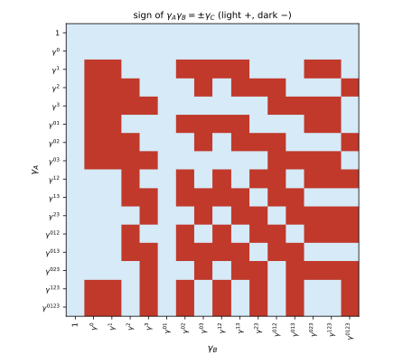
figures/sd-clifford-table.sage.
Definition 1 (Clifford algebra) Let V be a real vector space of dimension d with a non-degenerate symmetric bilinear form \eta of signature (p, q) (Definition 14 of Linear algebra). The Clifford algebra Cl(V, \eta) = Cl(p, q) is the associative real algebra with unit generated by V subject to the relations v w + w v = 2\eta(v, w)\,1 \qquad (v, w \in V), \tag{1} so that v^2 = \eta(v, v). In an orthonormal basis e_1, \dots, e_d with \eta(e_a, e_a) = +1 for a \leq p and -1 for a > p the relations read e_ae_b + e_be_a = 2\eta_{ab}. The complex Clifford algebra Cl_{\mathbb{C}}(d) = Cl(p, q) \otimes \mathbb{C} depends only on d, since ie_a squares to -\eta_{aa} Zhelnorovich (2019, sec. 1.6.2, eq. (1.120)).
Veriphy. Pending.
Lean. Pending.
Sage. Pending.
The smallest Clifford algebras are familiar number systems. The first example takes a single generator and finds the complex numbers or a pair of real lines, depending on the sign of its square.
Example 1 (One generator) Cl(0, 1) is spanned by 1 and e with e^2 = -1: it is \mathbb{C}, with e = i. Cl(1, 0) is spanned by 1 and e with e^2 = +1; the elements \pi_\pm = \tfrac12(1 \pm e) satisfy \pi_\pm^2 = \pi_\pm, \pi_+\pi_- = 0 and \pi_+ + \pi_- = 1, so Cl(1, 0) \cong \mathbb{R} \oplus \mathbb{R}, with e = \pi_+ - \pi_-. The two algebras differ although both are two-dimensional: the sign of the metric matters for the real algebra.
Veriphy. Pending.
Lean. Pending.
Sage. Pending.
With two anticommuting generators the product e_1e_2 is a third element that anticommutes with both. The second example finds Hamilton’s quaternions in this way.
Example 2 (The quaternions) In Cl(0, 2), e_1^2 = e_2^2 = -1 and e_1e_2 = -e_2e_1, so (e_1e_2)^2 = -e_1e_2e_2e_1 = -1. Setting \mathrm{i} = e_1, \mathrm{j} = e_2, \mathrm{k} = e_1e_2 gives \mathrm{i}^2 = \mathrm{j}^2 = \mathrm{k}^2 = \mathrm{ijk} = -1: Cl(0, 2) \cong \mathbb{H}, four-dimensional with basis 1, e_1, e_2, e_1e_2. In Cl(2, 0) instead (e_1e_2)^2 = -1 but e_1^2 = e_2^2 = +1, and e_1 \mapsto \sigma_1, e_2 \mapsto \sigma_3 identifies it with the real 2 \times 2 matrices M_2(\mathbb{R}).
Veriphy. Pending.
Lean. Pending.
Sage. Pending.
In three Euclidean dimensions the Pauli matrices satisfy the relations Equation 1, as the Part II example Example 41 of Classical field theory notes. The third example identifies the whole algebra and its centre.
Example 3 (The Pauli algebra) e_a \mapsto \sigma_a (Equation 3 of Lie groups and Lie algebras) represents Cl(3, 0) on \mathbb{C}^2. The eight products 1, \sigma_a, \sigma_a\sigma_b\,(a < b), \sigma_1\sigma_2\sigma_3 span M_2(\mathbb{C}) over \mathbb{R}, since \sigma_1\sigma_2 = i\sigma_3 and its cyclic permutations, and \sigma_1\sigma_2\sigma_3 = i\,1. So Cl(3, 0) \cong M_2(\mathbb{C}) as a real algebra of dimension 8 = 2^3; the volume element e_1e_2e_3 squares to -1 and commutes with everything, playing the role of i.
Veriphy. Pending.
Lean. Pending.
Sage. Pending.
Spacetime is the case the book uses most. The fourth example places the Dirac matrices of Part II inside the Clifford algebra of signature (1, 3) and notes that the real structure of the algebra depends on the overall sign of the metric.
Example 4 (The spacetime algebra) The Weyl matrices \gamma^\mu of Example 39 of Classical field theory satisfy \gamma^\mu\gamma^\nu + \gamma^\nu\gamma^\mu = 2\eta^{\mu\nu} with \eta = \operatorname{diag}(1, -1, -1, -1), so e_\mu \mapsto \gamma^\mu is a representation of Cl(1, 3) on \mathbb{C}^4, and Figure 1 is its multiplication table. As real algebras Cl(1, 3) \cong M_2(\mathbb{H}) while Cl(3, 1) \cong M_4(\mathbb{R}): there are real 4 \times 4 matrices satisfying the relations for the metric \operatorname{diag}(-1, 1, 1, 1), whose products by i are purely imaginary gamma matrices for our signature (Example 20).
Veriphy. Pending.
Lean. Pending.
Sage. Pending.
The Clifford algebra has a \mathbb{Z}_2 grading by the parity of the number of vectors in a product. The first exercise constructs it; the even part is where the spin groups of the next part live.
Exercise 1 (The even subalgebra) Show that v \mapsto -v on V extends to an automorphism \alpha of Cl(p, q) with \alpha^2 = 1. Let Cl^0 and Cl^1 be its \pm1 eigenspaces. Show that Cl^0 is a subalgebra spanned by products of an even number of vectors, that Cl^1Cl^1 \subset Cl^0, and that \dim Cl^0 = \dim Cl^1 when d \geq 1.
The relations Equation 1 are invariant under v \mapsto -v, so the map extends to an algebra homomorphism, and it squares to the identity on generators, hence everywhere. A product of k vectors is multiplied by (-1)^k, so Cl^0 (resp. Cl^1) is spanned by even (resp. odd) products, and parities add under multiplication. Left multiplication by e_1 is invertible (e_1^{-1} = \eta_{11}e_1) and exchanges Cl^0 and Cl^1, so they have the same dimension, 2^{d - 1} by Proposition 1.
Veriphy. Pending.
Lean. Pending.
Sage. Pending.
The square of the volume element decides whether it behaves like +1 or like i. The second exercise computes it in every signature; the answer reappears in the normalisation of the chirality matrix.
Exercise 2 (The square of the volume element) Let \omega = e_1e_2\cdots e_d. Show that \omega^2 = (-1)^{d(d - 1)/2 + q}, that \omega e_a = (-1)^{d - 1}e_a\omega, and hence that \omega is central exactly when d is odd. Evaluate \omega^2 for Cl(3, 0), Cl(1, 3) and Cl(0, 2) and compare with Example 3 and Example 2.
Reversing the order of d anticommuting factors takes d(d - 1)/2 transpositions, so \omega^2 = (-1)^{d(d - 1)/2}e_1\cdots e_de_d\cdots e_1 = (-1)^{d(d - 1)/2}\prod_a\eta_{aa} = (-1)^{d(d - 1)/2 + q}. Moving e_a through \omega passes d - 1 factors that anticommute with it and one that commutes. For Cl(3, 0): (-1)^{3} = -1, as \sigma_1\sigma_2\sigma_3 = i; for Cl(1, 3): (-1)^{6 + 3} = -1, so i\gamma^0\gamma^1\gamma^2\gamma^3 squares to +1; for Cl(0, 2): (-1)^{1 + 2} = -1, and indeed \mathrm{k}^2 = -1.
Veriphy. Pending.
Lean. Pending.
Sage. Pending.
A multiplication table is a finite object that a computer can check completely. The third exercise builds the table of Cl(3, 0) from the Pauli matrices and reads off the centre.
Exercise 3 (The table of Cl(3, 0)) With Sage, form the eight products \sigma_A (A \subset \{1, 2, 3\}, in increasing order) of the Pauli matrices, check that each product \sigma_A\sigma_B equals \pm\sigma_C for one C, and find the elements \sigma_A that commute with all the others.
Every product of two basis elements is a single basis element up to sign, and the elements commuting with the whole algebra are 1 and \sigma_1\sigma_2\sigma_3 = i\,1, as Exercise 2 predicts for odd d:
import itertools
s = [matrix(QQbar, [[0, 1], [1, 0]]), matrix(QQbar, [[0, -I], [I, 0]]), matrix(QQbar, [[1, 0], [0, -1]])]
subsets = [A for k in range(4) for A in itertools.combinations(range(3), k)]
def sig(A): return prod([s[a] for a in A], identity_matrix(QQbar, 2))
basis = {A: sig(A) for A in subsets}
name = lambda A: "1" if not A else "s" + "".join(str(a + 1) for a in A)
def decompose(M):
# over the reals the eight sigma_A are independent: look for a real sign first
for cs in ((1, -1), (I, -I)):
for A, B in basis.items():
for c in cs:
if M == c * B: return c, A
print("each product sigma_A sigma_B is +sigma_C or -sigma_C:", all(decompose(basis[A] * basis[B])[0] in (1, -1) for A in subsets for B in subsets))
def show(c, A):
sgn = {1: "+", -1: "-", I: "+i ", -I: "-i "}[c]
return (sgn + name(A)) if A or c in (1, -1) else sgn.strip()
print(" " + " ".join(name(B).rjust(7) for B in subsets))
for A in subsets:
print(name(A).ljust(5), " ".join(show(*decompose(basis[A] * basis[B])).rjust(7) for B in subsets))
central = [name(A) for A in subsets if all(basis[A] * basis[B] == basis[B] * basis[A] for B in subsets)]
print("central basis elements:", central, "; s1 s2 s3 =", basis[(0, 1, 2)].list())Output:
each product sigma_A sigma_B is +sigma_C or -sigma_C: True
1 s1 s2 s3 s12 s13 s23 s123
1 +1 +s1 +s2 +s3 +s12 +s13 +s23 +s123
s1 +s1 +1 +s12 +s13 +s2 +s3 +s123 +s23
s2 +s2 -s12 +1 +s23 -s1 -s123 +s3 -s13
s3 +s3 -s13 -s23 +1 +s123 -s1 -s2 +s12
s12 +s12 -s2 +s1 +s123 -1 -s23 +s13 -s3
s13 +s13 -s3 -s123 +s1 +s23 -1 -s12 +s2
s23 +s23 +s123 -s3 +s2 -s13 +s12 -1 -s1
s123 +s123 +s23 -s13 +s12 -s3 +s2 -s1 -1
central basis elements: ['1', 's123'] ; s1 s2 s3 = [I, 0, 0, I]Veriphy. Pending.
Lean. Pending.
Sage. Pending.
The examples suggest that the products of distinct generators form a basis, as the figure shows for Cl(1, 3). The proposition states this and records the trace identities of Zhelnorovich (2019, sec. 1.1) that make the gamma matrices an orthogonal basis of a matrix algebra.
Proposition 1 (Basis of the Clifford algebra) For each subset A = \{a_1 < \dots < a_k\} of \{1, \dots, d\} let e_A = e_{a_1}\cdots e_{a_k} (e_\emptyset = 1). The 2^d elements e_A form a basis of Cl(p, q), and e_A^2 = (-1)^{k(k - 1)/2}\eta_{a_1a_1}\cdots\eta_{a_ka_k}, \qquad e_Ae_B = \pm e_{A \triangle B}. \tag{2} If \gamma^a are matrices of order N representing the e_a and d = 2\nu is even, then \operatorname{tr}\gamma_A = 0 for A \neq \emptyset and \operatorname{tr}(\gamma_A^{-1}\gamma_B) = N\delta_{AB}; for N = 2^\nu the \gamma_A form a basis of M_N(\mathbb{C}) and every matrix expands as \Psi = \frac{1}{2^\nu}\sum_A\operatorname{tr}(\gamma_A^{-1}\Psi)\,\gamma_A \tag{3} Zhelnorovich (2019, sec. 1.1, eqs. (1.4), (1.6)-(1.12)).
Veriphy. Pending.
Lean. Pending.
Sage. Pending.
In two dimensions the basis has four elements and the expansion Equation 3 is the familiar expansion of a 2 \times 2 matrix in Pauli matrices. The first example writes it out.
Example 5 (The Pauli basis) For d = 2 with \gamma^1 = \sigma_1, \gamma^2 = \sigma_2, the basis is 1, \sigma_1, \sigma_2, \sigma_1\sigma_2 = i\sigma_3, and Equation 3 reads \Psi = \tfrac12(\operatorname{tr}\Psi + \sum_a\operatorname{tr}(\sigma_a\Psi) \sigma_a). For \Psi = \begin{pmatrix} a & b \\ c & d \end{pmatrix} the coefficients are a + d, b + c, i(b - c), a - d. Read as an identity for the matrix entries this is the Pauli identity \delta_{AB}\delta_{CD} = \tfrac12(\delta_{AD}\delta_{CB} + \sum_a(\sigma_a)_{AD}(\sigma_a)_{CB}) Zhelnorovich (2019, eq. (1.19)).
Veriphy. Pending.
Lean. Pending.
Sage. Pending.
In four dimensions the sixteen basis elements sort themselves by the number of indices. The second example gives the grouping used in every Fierz rearrangement of particle physics.
Example 6 (The sixteen Dirac matrices) For Cl(1, 3) the basis consists of 1, the four \gamma^\mu, the six \gamma^\mu\gamma^\nu (\mu < \nu), the four triple products and \gamma^0\gamma^1\gamma^2\gamma^3 = -i\gamma_5; the triple products are \pm i\gamma^\mu \gamma_5. The counts 1, 4, 6, 4, 1 are the binomial coefficients \binom4k and add up to 16 = 4^2, so the gamma matrices of size 4 span all of M_4(\mathbb{C}): scalar, vector, tensor, axial vector and pseudoscalar.
Veriphy. Pending.
Lean. Pending.
Sage. Pending.
The squares in Equation 2 decide which basis elements are complex structures, that is, square to -1. The third example counts them in Euclidean signature, a count that returns in the symmetry of the charge-conjugation matrices.
Example 7 (Elements squaring to minus one) In Cl(d, 0), e_A^2 = (-1)^{k(k - 1)/2} depends only on k = |A| \bmod 4: it is +1 for k \equiv 0, 1 and -1 for k \equiv 2, 3 \pmod 4. In Cl(3, 0) the elements of square -1 are the three e_ae_b and e_1e_2e_3; in Cl(4, 0) they are the six bivectors and four trivectors, ten in all, while the six others (1, four vectors and the volume element) square to +1.
Veriphy. Pending.
Lean. Pending.
Sage. Pending.
The traces in the proposition follow from one observation: every non-trivial basis element anticommutes with some other basis element. The first exercise carries out the argument of Zhelnorovich (2019, sec. 1.1, items 1-3).
Exercise 4 (Traceless gamma products) Let d = 2\nu and A \neq \emptyset. Show that there is a b with \gamma^b\gamma_A = -\gamma_A\gamma^b: if |A| is even take b \in A, if |A| is odd take b \notin A. Deduce \operatorname{tr}\gamma_A = 0 from the cyclicity of the trace, and then \operatorname{tr}(\gamma_A^{-1}\gamma_B) = N\delta_{AB} from Equation 2.
For |A| = k even and b \in A, \gamma^b anticommutes with the k - 1 other factors and commutes with itself, a sign (-1)^{k - 1} = -1; for k odd and b \notin A (possible since k < 2\nu when k is odd), the sign is (-1)^k = -1. Then \operatorname{tr}\gamma_A = \operatorname{tr}((\gamma^b)^{-1}\gamma^b\gamma_A) = -\operatorname{tr}((\gamma^b)^{-1}\gamma_A\gamma^b) = -\operatorname{tr}\gamma_A. Finally \gamma_A^{-1}\gamma_B = \pm\gamma_{A \triangle B}, traceless unless A = B, where it is 1 with trace N.
Veriphy. Pending.
Lean. Pending.
Sage. Pending.
The expansion Equation 3 turns any matrix into its components along the sixteen Dirac matrices. The second exercise does this for a random matrix and reassembles it.
Exercise 5 (Expanding a matrix in Dirac matrices) With Sage, take the Weyl matrices of Example 39 of Classical field theory, form the sixteen products \gamma_A, expand a random 4 \times 4 matrix \Psi by Equation 3 and check that the sum reproduces \Psi. Then expand \Psi = \gamma^0 and \Psi = \tfrac12(1 - \gamma_5) and list their non-zero coefficients.
The coefficients 2^{-2}\operatorname{tr}(\gamma_A^{-1}\Psi) reconstruct \Psi exactly; \gamma^0 has the single coefficient 1 on \gamma^0, and the projector \tfrac12(1 - \gamma_5) has coefficient \tfrac12 on 1 and -\tfrac{i}{2} on \gamma^0\gamma^1\gamma^2\gamma^3 = -i\gamma_5:
import itertools
s = [identity_matrix(QQbar, 2), matrix(QQbar, [[0, 1], [1, 0]]), matrix(QQbar, [[0, -I], [I, 0]]), matrix(QQbar, [[1, 0], [0, -1]])]
Z = zero_matrix(QQbar, 2)
g = [block_matrix([[Z, s[0]], [s[0], Z]])] + [block_matrix([[Z, s[k]], [-s[k], Z]]) for k in (1, 2, 3)]
subsets = [A for k in range(5) for A in itertools.combinations(range(4), k)]
gam = {A: prod([g[a] for a in A], identity_matrix(QQbar, 4)) for A in subsets}
def coefficients(Psi): return {A: (gam[A].inverse() * Psi).trace() / 4 for A in subsets}
def rebuild(c): return sum(c[A] * gam[A] for A in subsets)
set_random_seed(1)
Psi = random_matrix(QQ, 4, 4, num_bound=5, den_bound=1).change_ring(QQbar) + I * random_matrix(QQ, 4, 4, num_bound=5, den_bound=1).change_ring(QQbar)
print("random Psi rebuilt from its 16 coefficients:", rebuild(coefficients(Psi)) == Psi)
g5 = I * g[0] * g[1] * g[2] * g[3]
for label, M in [("gamma^0", g[0]), ("(1 - gamma_5)/2", (1 - g5) / 2)]:
c = coefficients(M)
print(label, ":", {("gamma^" + "".join(map(str, A)) if A else "1"): c[A] for A in subsets if c[A] != 0})Output:
random Psi rebuilt from its 16 coefficients: True
gamma^0 : {'gamma^0': 1}
(1 - gamma_5)/2 : {'1': 1/2, 'gamma^0123': -1/2*I}Veriphy. Pending.
Lean. Pending.
Sage. Pending.
In odd dimension the trace argument fails for the volume element, which commutes with everything. The third exercise finds the centre of the algebra in both parities, following Zhelnorovich (2019, sec. 1.1, item 10).
Exercise 6 (The centre) Show that the centre of Cl(p, q) is spanned by 1 when d is even and by 1 and \omega = e_1\cdots e_d when d is odd. Hint: expand a central element z = \sum_Az_Ae_A and compare e_bz with ze_b using Equation 2.
e_be_Ae_b^{-1} = \pm e_A, with sign -1 exactly when e_b anticommutes with e_A. Since the e_A are independent, z is central iff z_A = 0 for every A such that some e_b anticommutes with e_A. By Exercise 4, for A \neq \emptyset such a b exists unless |A| is odd and A is everything, that is A = \{1, \dots, d\} with d odd. So the centre is \mathbb{R}1 for even d and \mathbb{R}1 \oplus \mathbb{R}\omega for odd d (Exercise 2).
Veriphy. Pending.
Lean. Pending.
Sage. Pending.
Gamma matrices in every dimension
The Pauli matrices give gamma matrices in two and three dimensions. Tensor products of Pauli matrices give them in every dimension, doubling the size each time two dimensions are added, as the blue curve of the figure shows; the red curve anticipates the reality conditions of the next section.
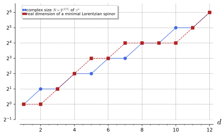
figures/sd-spinor-dimensions.sage.
Definition 2 (Gamma matrices in any signature) Gamma matrices of signature (p, q) are complex N \times N matrices \gamma^1, \dots, \gamma^d, d = p + q, with \gamma^a\gamma^b + \gamma^b\gamma^a = 2\eta^{ab}\,1_N, \qquad \eta = \operatorname{diag}(\underbrace{1, \dots, 1}_{p}, \underbrace{-1, \dots, -1}_{q}), \tag{4} that is, a representation of Cl(p, q) on \mathbb{C}^N. The standard choice for d = 2\nu is \gamma^{2k - 1} = \sigma_3^{\otimes(k - 1)} \otimes \sigma_1 \otimes 1^{\otimes(\nu - k)}, \qquad \gamma^{2k} = \sigma_3^{\otimes(k - 1)} \otimes \sigma_2 \otimes 1^{\otimes(\nu - k)} \qquad (k = 1, \dots, \nu), \tag{5} with one more matrix \gamma^{2\nu + 1} = \sigma_3^{\otimes\nu} for d = 2\nu + 1, and with the last q matrices multiplied by i; it has N = 2^{\lfloor d/2\rfloor} and Hermitian or anti-Hermitian \gamma^a according to the sign of (\gamma^a)^2 Van Proeyen (1999, eqs. (3.3)-(3.5)).
Veriphy. Pending.
Lean. Pending.
Sage. Pending.
In two dimensions the standard choice is the pair of Pauli matrices. The first example writes it in both signatures that contain one plus sign or two.
Example 8 (Two dimensions) For (p, q) = (2, 0): \gamma^1 = \sigma_1, \gamma^2 = \sigma_2. For (1, 1): \gamma^1 = \sigma_1, \gamma^2 = i\sigma_2, the matrices of the Part II example Example 40 of Classical field theory. For (0, 2): i\sigma_1, i\sigma_2, which represent the quaternions of Example 2 on \mathbb{C}^2 as \mathrm{i} \mapsto i\sigma_1, \mathrm{j} \mapsto i\sigma_2, \mathrm{k} \mapsto -\sigma_1\sigma_2 = -i\sigma_3.
Veriphy. Pending.
Lean. Pending.
Sage. Pending.
In four dimensions the standard construction gives matrices that look different from the Weyl matrices of the book. The second example compares them; the theorem below explains why the difference does not matter.
Example 9 (Four dimensions) For (4, 0), Equation 5 gives \sigma_1 \otimes 1, \sigma_2 \otimes 1, \sigma_3 \otimes \sigma_1, \sigma_3 \otimes \sigma_2. For (1, 3) the last three are multiplied by i. The Weyl matrices of Example 39 of Classical field theory are instead \gamma^0 = \sigma_1 \otimes 1 and \gamma^k = i\sigma_2 \otimes \sigma_k; both sets satisfy Equation 4 with \eta = \operatorname{diag}(1, -1, -1, -1), and by Theorem 1 they are related by a change of basis of \mathbb{C}^4.
Veriphy. Pending.
Lean. Pending.
Sage. Pending.
Eleven dimensions is the largest case the book needs. The third example counts the size of its gamma matrices and observes that in odd dimension the last matrix is fixed by the others.
Example 10 (Eleven dimensions) For (1, 10), \nu = 5 and N = 32: ten matrices from Equation 5 on (\mathbb{C}^2)^{\otimes5} and the eleventh \sigma_3^{\otimes5}, times i where needed. The product \gamma^1\cdots\gamma^{10} is proportional to \sigma_3^{\otimes5}, so in odd dimension the last gamma matrix is the “chirality matrix” of the dimension below, Van Proeyen (1999, after eq. (3.10)), and \gamma^1\cdots\gamma^{11} is a multiple of the identity.
Veriphy. Pending.
Lean. Pending.
Sage. Pending.
The tensor construction is easy to check by machine in all signatures at once. The first exercise does this up to ten dimensions.
Exercise 7 (Building gamma matrices) With Sage, implement Equation 5 for every (p, q) with p + q \leq 10, check Equation 4 and that (\gamma^a)^\dagger = \eta^{aa}\gamma^a, and print the size N for each d.
All relations hold and the sizes are 1, 2, 2, 4, 4, 8, 8, 16, 16, 32 for d = 1, \dots, 10 (for d = 1 the construction gives \gamma^1 = 1, or i in signature (0, 1)):
import numpy as np
from functools import reduce
s1 = np.array([[0, 1], [1, 0]], dtype=complex); s2 = np.array([[0, -1j], [1j, 0]]); s3 = np.array([[1, 0], [0, -1]], dtype=complex)
kron = lambda ms: reduce(np.kron, ms, np.eye(1))
def gammas(p, q):
d = p + q; n = d // 2; G = []
for k in range(n):
for s in (s1, s2):
G.append(kron([s3] * k + [s] + [np.eye(2)] * (n - k - 1)))
if d % 2: G.append(kron([s3] * n))
return G[:p] + [1j * x for x in G[p:]]
for d in range(1, 11):
ok = True
for p in range(d + 1):
q = d - p; G = gammas(p, q); N = G[0].shape[0]; eta = [1] * p + [-1] * q
ok &= all(np.allclose(G[a] @ G[b] + G[b] @ G[a], 2 * (eta[a] if a == b else 0) * np.eye(N)) for a in range(d) for b in range(d))
ok &= all(np.allclose(G[a].conj().T, eta[a] * G[a]) for a in range(d))
print("d = %2d: size N = %2d, relations and hermiticity hold for all %d signatures: %s" % (d, gammas(d, 0)[0].shape[0], d + 1, ok))Output:
d = 1: size N = 1, relations and hermiticity hold for all 2 signatures: True
d = 2: size N = 2, relations and hermiticity hold for all 3 signatures: True
d = 3: size N = 2, relations and hermiticity hold for all 4 signatures: True
d = 4: size N = 4, relations and hermiticity hold for all 5 signatures: True
d = 5: size N = 4, relations and hermiticity hold for all 6 signatures: True
d = 6: size N = 8, relations and hermiticity hold for all 7 signatures: True
d = 7: size N = 8, relations and hermiticity hold for all 8 signatures: True
d = 8: size N = 16, relations and hermiticity hold for all 9 signatures: True
d = 9: size N = 16, relations and hermiticity hold for all 10 signatures: True
d = 10: size N = 32, relations and hermiticity hold for all 11 signatures: TrueVeriphy. Pending.
Lean. Pending.
Sage. Pending.
Zhelnorovich (2019, sec. 1.1, eqs. (1.38)-(1.43)) proves the existence of gamma matrices by a recursion that adds two dimensions at a time. The second exercise asks for that recursion.
Exercise 8 (Adding two dimensions) Let \gamma^1, \dots, \gamma^{2\nu} be Euclidean gamma matrices of size 2^\nu and \gamma^{2\nu + 1} = i^\nu\gamma^1\cdots\gamma^{2\nu}. Show that the 2\nu + 2 matrices \begin{pmatrix} 0 & 1 \\ 1 & 0 \end{pmatrix} and \begin{pmatrix} 0 & -i\gamma^j \\ i\gamma^j & 0 \end{pmatrix}, j = 1, \dots, 2\nu + 1, are Euclidean gamma matrices of size 2^{\nu + 1}.
\gamma^{2\nu + 1} squares to i^{2\nu}(-1)^{\nu(2\nu - 1)} = 1 (Exercise 2) and anticommutes with each \gamma^j, j \leq 2\nu, so the 2\nu + 1 matrices satisfy the Euclidean relations. The block matrices give \begin{pmatrix} 0 & -i\gamma^j \\ i\gamma^j & 0 \end{pmatrix}\begin{pmatrix} 0 & -i\gamma^k \\ i\gamma^k & 0 \end{pmatrix} = \begin{pmatrix} \gamma^j\gamma^k & 0 \\ 0 & \gamma^j\gamma^k \end{pmatrix}, whose symmetrisation is 2\delta^{jk}; the first block matrix squares to 1 and anticommutes with the others because \begin{pmatrix} 0 & 1 \\ 1 & 0 \end{pmatrix}\begin{pmatrix} 0 & -i\gamma \\ i\gamma & 0 \end{pmatrix} = \operatorname{diag}(i\gamma, -i\gamma) changes sign when the factors are exchanged.
Veriphy. Pending.
Lean. Pending.
Sage. Pending.
The size 2^{\lfloor d/2\rfloor} is not only sufficient but necessary for even d. The third exercise proves this from the linear independence in Proposition 1.
Exercise 9 (The minimal size) Show that gamma matrices of even dimension d = 2\nu have size N \geq 2^\nu, and that N is a multiple of 2^\nu. Hint: the 2^{2\nu} products \gamma_A are linearly independent in M_N(\mathbb{C}); for the second part use the eigenspaces of the commuting matrices J_k = c_k\gamma^{2k - 1}\gamma^{2k}, with c_k \in \{1, i\} chosen so that J_k^2 = 1.
The traces \operatorname{tr}(\gamma_A^{-1}\gamma_B) = N\delta_{AB} of Proposition 1 make the \gamma_A independent, so 2^{2\nu} \leq \dim M_N(\mathbb{C}) = N^2. For the second part, the J_k commute (each is a product of two gamma matrices disjoint from the others) and square to 1; \gamma^{2k - 1} anticommutes with J_k and commutes with the other J_l, so it maps the joint eigenspace with signs (s_1, \dots, s_\nu) isomorphically onto the one with s_k flipped. All 2^\nu joint eigenspaces therefore have the same dimension m, and N = 2^\nu m.
Veriphy. Pending.
Lean. Pending.
Sage. Pending.
In even dimension the product of all gamma matrices anticommutes with each of them and can be normalised to square to one. This is the chirality matrix, the matrix that splits spinors into two halves.
Definition 3 (Chirality matrix) For gamma matrices of even dimension d and signature (p, q) the chirality matrix is \gamma_* = i^{d(d - 1)/2 + q}\,\gamma^1\gamma^2\cdots\gamma^d . \tag{6} It satisfies \gamma_*^2 = 1 and \gamma_*\gamma^a = -\gamma^a\gamma_*; for Euclidean signature \gamma_* = i^{d/2}\gamma^1\cdots\gamma^d Zhelnorovich (2019, eq. (1.21)), and for (1, 3) it is \gamma_5 = i\gamma^0\gamma^1\gamma^2\gamma^3. Its eigenvalues \pm1 are the two chiralities.
Veriphy. Pending.
Lean. Pending.
Sage. Pending.
The definition fixes the overall sign of \gamma_*, which other authors choose differently. The first example computes it in two dimensions, where the choice is visible.
Example 11 (Two dimensions) For \gamma^1 = \sigma_1, \gamma^2 = \sigma_2, Equation 6 gives \gamma_* = i\sigma_1\sigma_2 = i\cdot i\sigma_3 = -\sigma_3. For the Lorentzian pair \sigma_1, i\sigma_2 the exponent is 1 + 1 = 2 and \gamma_* = -\sigma_1(i\sigma_2) = +\sigma_3, while Exercise 39 of Classical field theory uses \gamma^0\gamma^1 = -\sigma_3: the two conventions differ by a sign, which exchanges the names of the two chiralities. Van Proeyen (1999, eq. (3.8)) normalises with (-i)^{d/2 + t} and obtains +\sigma_3 in the Euclidean case.
Veriphy. Pending.
Lean. Pending.
Sage. Pending.
In four dimensions the chirality matrix is the \gamma_5 of particle physics. The second example evaluates it in the Weyl representation, where it is diagonal.
Example 12 (The matrix \gamma_5) For the Weyl matrices of Example 39 of Classical field theory, \gamma_5 = i\gamma^0\gamma^1\gamma^2\gamma^3 = \operatorname{diag}(-1, -1, 1, 1): the upper two components of a Dirac spinor have chirality -1 (left-handed) and the lower two chirality +1 (right-handed). The exponent in Equation 6 is 6 + 3 = 9, and i^9 = i, which is why the factor in front of the product is i.
Veriphy. Pending.
Lean. Pending.
Sage. Pending.
For the standard matrices Equation 5 the chirality matrix is again a tensor product. The third example finds it, which is how the construction of Example 10 continues from even to odd dimension.
Example 13 (Chirality of the tensor construction) For the Euclidean matrices Equation 5, \gamma^{2k - 1}\gamma^{2k} = 1 \otimes \cdots \otimes \sigma_1\sigma_2 \otimes \cdots = 1 \otimes \cdots \otimes i\sigma_3 \otimes \cdots (the \sigma_3 factors in front square to 1), so \gamma^1\cdots\gamma^{2\nu} = (i\sigma_3)^{\otimes\nu} and \gamma_* = i^\nu(i\sigma_3)^{\otimes\nu} = (-\sigma_3)^{\otimes\nu}. Up to sign it is the extra matrix \sigma_3^{\otimes\nu} that makes the construction work in dimension 2\nu + 1.
Veriphy. Pending.
Lean. Pending.
Sage. Pending.
The two properties claimed in the definition follow from Exercise 2. The first exercise derives them, explains the exponent and adds the hermiticity of \gamma_*.
Exercise 10 (Properties of \gamma_*) Show that \gamma_*^2 = 1 and \gamma_*\gamma^a = -\gamma^a\gamma_* for even d. Show that if all \gamma^a are unitary then \gamma_* is Hermitian, and that \gamma_* commutes with every product of an even number of gamma matrices.
By Exercise 2, (\gamma^1\cdots\gamma^d)^2 = (-1)^{d(d - 1)/2 + q}, and (i^m)^2 = (-1)^m with m = d(d - 1)/2 + q, so \gamma_*^2 = 1; anticommutation is the case d even of the same exercise. A unitary \gamma_* with \gamma_*^2 = 1 satisfies \gamma_*^\dagger = \gamma_*^{-1} = \gamma_*. An even product picks up an even number of signs when \gamma_* moves through it.
Veriphy. Pending.
Lean. Pending.
Sage. Pending.
In odd dimension the product of all gamma matrices is central, so in an irreducible representation it is a number. The second exercise computes this number and finds that it can take two values.
Exercise 11 (The product in odd dimension) With Sage, compute \gamma^1\cdots\gamma^d for the Euclidean matrices Equation 5 with d = 3, 5, 7, 9, and for the matrices -\gamma^a. Show that i^{-(d - 1)/2}\gamma^1\cdots\gamma^d = \pm1 with opposite signs for the two sets.
With d = 2\nu + 1 the product is \gamma^1\cdots\gamma^{2\nu}\sigma_3^{\otimes\nu} = i^\nu\,1 by Example 13 (so i^{-\nu}\gamma^1\cdots\gamma^d = 1) and the opposite for -\gamma^a, because changing the sign of all d matrices changes the product by (-1)^d = -1. A matrix T with T^{-1}\gamma^aT = -\gamma^a would have to preserve the product and change its sign, so the two sets are not equivalent:
import numpy as np
from functools import reduce
s1 = np.array([[0, 1], [1, 0]], dtype=complex); s2 = np.array([[0, -1j], [1j, 0]]); s3 = np.array([[1, 0], [0, -1]], dtype=complex)
kron = lambda ms: reduce(np.kron, ms, np.eye(1))
def euclid(d):
n = d // 2; G = []
for k in range(n):
for s in (s1, s2):
G.append(kron([s3] * k + [s] + [np.eye(2)] * (n - k - 1)))
if d % 2: G.append(kron([s3] * n))
return G
for d in (3, 5, 7, 9):
nu = (d - 1) // 2; G = euclid(d); N = G[0].shape[0]
P = reduce(np.dot, G, np.eye(N)); Pm = reduce(np.dot, [-x for x in G], np.eye(N))
c, cm = (1j) ** (-nu) * P[0, 0], (1j) ** (-nu) * Pm[0, 0]
print("d = %d: i^-nu * product = %s * 1 (scalar: %s); for -gamma: %s" % (d, complex(c).real, np.allclose(P, P[0, 0] * np.eye(N)), complex(cm).real))Output:
d = 3: i^-nu * product = 1.0 * 1 (scalar: True); for -gamma: -1.0
d = 5: i^-nu * product = 1.0 * 1 (scalar: True); for -gamma: -1.0
d = 7: i^-nu * product = 1.0 * 1 (scalar: True); for -gamma: -1.0
d = 9: i^-nu * product = 1.0 * 1 (scalar: True); for -gamma: -1.0Veriphy. Pending.
Lean. Pending.
Sage. Pending.
The chirality projectors split \mathbb{C}^N into two halves of equal size. The third exercise proves the equality, which is the reason Weyl spinors have half the components of Dirac spinors.
Exercise 12 (The chirality projectors) Let P_\pm = \tfrac12(1 \pm \gamma_*). Show that P_\pm are complementary projections, that \operatorname{tr} \gamma_* = 0, and hence that each has rank N/2. Show that \gamma^aP_\pm = P_\mp\gamma^a.
P_\pm^2 = \tfrac14(1 \pm 2\gamma_* + \gamma_*^2) = P_\pm and P_+P_- = \tfrac14(1 - \gamma_*^2) = 0, P_+ + P_- = 1. The trace of \gamma_* vanishes by Proposition 1 (it is a multiple of \gamma_A with A everything), so \operatorname{rank}P_\pm = \operatorname{tr}P_\pm = N/2. Finally \gamma^a\gamma_* = -\gamma_*\gamma^a gives \gamma^aP_\pm = P_\mp\gamma^a: gamma matrices exchange the chiralities.
Veriphy. Pending.
Lean. Pending.
Sage. Pending.
Different authors use different gamma matrices, and the results must not depend on the choice. The theorem below, proved by Zhelnorovich (2019, sec. 1.1, items 10-11) under the name of Pauli’s theorem, guarantees this in even dimension and finds exactly two choices in odd dimension.
Theorem 1 (Pauli’s theorem) Let d = 2\nu. Every set of gamma matrices of signature (p, q) has size N = 2^\nu m and is similar to m copies of the standard set; two sets of size 2^\nu are related by \gamma'^a = T^{-1}\gamma^aT with T unique up to a non-zero factor, and a matrix commuting with all \gamma^a of size 2^\nu is a multiple of 1. Let d = 2\nu + 1. There are exactly two inequivalent irreducible sets, of size 2^\nu, related by \gamma^a \mapsto -\gamma^a and told apart by the sign of the central element \gamma^1\cdots\gamma^d Zhelnorovich (2019, eqs. (1.28)-(1.29)), Van Proeyen (1999, footnote 5), Trautman (1995, Prop. 2).
Veriphy. Pending.
Lean. Pending.
Sage. Pending.
The simplest instance is a reordering of the Pauli matrices. The first example finds the matrix T explicitly and interprets it as a reflection.
Example 14 (Exchanging \sigma_1 and \sigma_2) (\sigma_1, \sigma_2) and (\sigma_2, \sigma_1) are both Euclidean gamma matrices in two dimensions. With T = \tfrac{1}{\sqrt2}(\sigma_1 + \sigma_2), which is Hermitian with T^2 = 1, one finds T\sigma_1T = \sigma_2 and T\sigma_2T = \sigma_1, so \gamma'^a = T^{-1}\gamma^aT as the theorem says. The matrix T is the reflection that exchanges the x and y axes, lifted to spinors.
Veriphy. Pending.
Lean. Pending.
Sage. Pending.
The theorem is most useful when applied to sets built from a given one by transposition or conjugation. The second example produces three such sets and, from them, the matrices of the next section.
Example 15 (Transposed and conjugate sets) If \gamma^a satisfy Equation 4, so do -(\gamma^a)^T, (\gamma^a)^* and -(\gamma^a)^* (transposition reverses products, conjugation fixes the real numbers 2\eta^{ab}). In even dimension the theorem gives invertible matrices C and B with (\gamma^a)^T = -C\gamma^aC^{-1} and (\gamma^a)^* = B\gamma^aB^{-1}, each unique up to a factor Zhelnorovich (2019, eqs. (1.44), (1.127)): they become the charge-conjugation and reality matrices of Definition 4 and Definition 5.
Veriphy. Pending.
Lean. Pending.
Sage. Pending.
In three dimensions the two inequivalent sets are the Pauli matrices and their negatives. The third example shows that no change of basis relates them.
Example 16 (Two inequivalent sets in three dimensions) \sigma_1\sigma_2\sigma_3 = i\,1 while (-\sigma_1)(-\sigma_2)(-\sigma_3) = -i\,1. A similarity T^{-1}(\cdot)T preserves products and fixes multiples of 1, so it cannot carry one set to the other. Both sets generate the same matrix algebra M_2(\mathbb{C}), but they represent Cl(3, 0) \cong M_2(\mathbb{C}) \oplus M_2(\mathbb{C}) (complexified) through its two different simple summands.
Veriphy. Pending.
Lean. Pending.
Sage. Pending.
Zhelnorovich (2019, eq. (1.29)) proves the theorem by writing T as an average over the group of basis elements. The first exercise checks that formula numerically for the two four-dimensional sets of Example 9.
Exercise 13 (Pauli’s averaging formula) Let \gamma_A and \gamma'_A be the sixteen products of the two sets of Example 9, built in the same order. With Sage, compute T = \sum_A\gamma_A F\gamma'^{-1}_A for a random matrix F, check that \det T \neq 0 and that \gamma^aT = T\gamma'^a for all a.
Multiplying by \gamma^a permutes the products \gamma_A up to signs, and the same signs appear for the primed set, so the average intertwines the two representations; for a generic F it is invertible:
import itertools
s = [identity_matrix(QQbar, 2), matrix(QQbar, [[0, 1], [1, 0]]), matrix(QQbar, [[0, -I], [I, 0]]), matrix(QQbar, [[1, 0], [0, -1]])]
kr = lambda a, b: a.tensor_product(b)
standard = [kr(s[1], s[0]), I * kr(s[2], s[0]), I * kr(s[3], s[1]), I * kr(s[3], s[2])]
weyl = [kr(s[1], s[0])] + [kr(I * s[2], s[k]) for k in (1, 2, 3)]
eta = diagonal_matrix([1, -1, -1, -1])
for G in (standard, weyl):
print("Clifford relations with eta = diag(1,-1,-1,-1):", all(G[a] * G[b] + G[b] * G[a] == 2 * eta[a, b] for a in range(4) for b in range(4)))
subsets = [A for k in range(5) for A in itertools.combinations(range(4), k)]
P = lambda G, A: prod([G[a] for a in A], identity_matrix(QQbar, 4))
set_random_seed(3)
F = random_matrix(QQ, 4, 4, num_bound=3, den_bound=1).change_ring(QQbar)
T = sum(P(standard, A) * F * P(weyl, A).inverse() for A in subsets)
print("det T =", T.det())
print("gamma^a T = T gamma'^a for a = 0..3:", all(standard[a] * T == T * weyl[a] for a in range(4)))Output:
Clifford relations with eta = diag(1,-1,-1,-1): True
Clifford relations with eta = diag(1,-1,-1,-1): True
det T = -640000
gamma^a T = T gamma'^a for a = 0..3: TrueVeriphy. Pending.
Lean. Pending.
Sage. Pending.
The uniqueness of T up to a factor rests on a Schur-type statement about the gamma matrices themselves. The second exercise proves it.
Exercise 14 (Matrices commuting with the gamma matrices) Let d = 2\nu and let the \gamma^a have size 2^\nu. Show that a matrix X with X\gamma^a = \gamma^aX for all a is a multiple of 1, by expanding X with Equation 3. Deduce that the matrix T of the theorem is unique up to a factor.
Write X = \sum_Ax_A\gamma_A. X commutes with every \gamma_B, so \gamma_BX\gamma_B^{-1} = \sum_A\pm x_A\gamma_A = X with the sign -1 whenever \gamma_B anticommutes with \gamma_A; by Exercise 4 this happens for some B whenever A \neq \emptyset, which forces x_A = 0. If T and T' both intertwine, T'T^{-1} commutes with all \gamma^a and is a multiple of 1 Zhelnorovich (2019, sec. 1.1, item 10).
Veriphy. Pending.
Lean. Pending.
Sage. Pending.
A reducible set of gamma matrices is a direct sum of irreducible ones, and the trace of the chirality matrix tells how it is assembled. The third exercise uses this to recognise reducible sets.
Exercise 15 (Recognising reducible sets) Show that in even dimension \gamma^a \otimes 1_m are gamma matrices of size 2^\nu m, reducible for m > 1. In odd dimension d = 2\nu + 1, show that \gamma^a \oplus (-\gamma^a) is a set of size 2^{\nu + 1} in which the central product has trace 0, and that a set of size 2^\nu(m_+ + m_-) containing m_\pm copies of the two irreducible sets has \operatorname{tr}(i^{-\nu}\gamma^1\cdots\gamma^d) = 2^\nu(m_+ - m_-).
(\gamma^a \otimes 1)(\gamma^b \otimes 1) = \gamma^a\gamma^b \otimes 1, so the relations hold, and \mathbb{C}^{2^\nu} \otimes v is invariant for every v \in \mathbb{C}^m. In odd dimension the central element i^{-\nu}\gamma^1\cdots \gamma^d equals +1 on each copy of one irreducible set and -1 on each copy of the other (Exercise 11), so its trace counts 2^\nu(m_+ - m_-), which is 0 for \gamma^a \oplus (-\gamma^a). This sum is the representation used by Trautman (1995, Prop. 2) under the name of Cartan spinors.
Veriphy. Pending.
Lean. Pending.
Sage. Pending.
Charge conjugation and reality
The transposed gamma matrices are equivalent to the original ones, and the matrix that relates them pairs spinors into invariants. Whether the complex conjugate spinor can be identified with the spinor itself depends on the signature modulo 8, and the figure displays the answer for all signatures up to eleven dimensions.
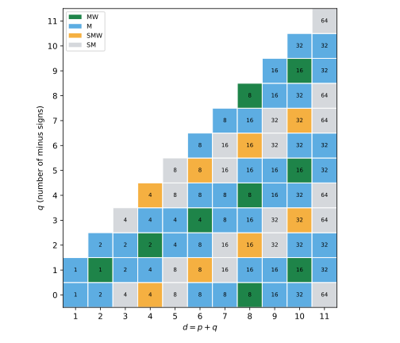
figures/sd-majorana-table.sage.
Definition 4 (Charge-conjugation matrix) A charge-conjugation matrix for gamma matrices \gamma^a of signature (p, q) is an invertible C with (\gamma^a)^T = -\eta_C\,C\gamma^aC^{-1} \quad (a = 1, \dots, d), \qquad C^T = -\epsilon_C\,C, \tag{7} for signs \eta_C, \epsilon_C \in \{1, -1\}. In even dimension one exists for each \eta_C (and C_{-} \propto C_{+}\gamma_*); in odd dimension for one value of \eta_C only. The sign \epsilon_C is determined by d \bmod 8 and \eta_C, and then C\gamma_A is symmetric or antisymmetric according to |A| \bmod 4 Van Proeyen (1999, eqs. (3.11)-(3.14), Table 1), Zhelnorovich (2019, eqs. (1.44)-(1.55)).
Veriphy. Pending.
Lean. Pending.
Sage. Pending.
In two dimensions both charge-conjugation matrices can be found by inspection. The first example does this and reads off their symmetry.
Example 17 (Two dimensions) For \gamma^1 = \sigma_1, \gamma^2 = \sigma_2: \sigma_1^T = \sigma_1, \sigma_2^T = -\sigma_2. The matrix C_+ = \sigma_2 gives -\sigma_2\sigma_1\sigma_2 = \sigma_1 and -\sigma_2\sigma_2\sigma_2 = -\sigma_2, so \eta_C = +1; it is antisymmetric, \epsilon_C = +1. The matrix C_- = \sigma_1 \propto C_+\gamma_* gives \sigma_1\sigma_a\sigma_1 = (\sigma_a)^T, so \eta_C = -1, and it is symmetric, \epsilon_C = -1, in agreement with the row d = 2 of Van Proeyen (1999, Table 1).
Veriphy. Pending.
Lean. Pending.
Sage. Pending.
In four dimensions the charge-conjugation matrix is the one that turns a particle spinor into an antiparticle spinor in the Dirac theory. The second example gives it in the Weyl representation.
Example 18 (Four dimensions) For the Weyl matrices, C = i\gamma^2\gamma^0 satisfies C\gamma^\mu C^{-1} = -(\gamma^\mu)^T, that is Equation 7 with \eta_C = +1, and C^T = -C, so \epsilon_C = +1; C\gamma_5 gives \eta_C = -1 and is again antisymmetric. Accordingly C and C\gamma_5 and C\gamma^\mu\gamma_5 are antisymmetric, while C\gamma^\mu and C\gamma^{\mu\nu} are symmetric: there are 4 + 6 = 10 symmetric products, the number of components of the anticommutator of two four-component Majorana spinors.
Veriphy. Pending.
Lean. Pending.
Sage. Pending.
The symmetric products C\gamma_A are the possible terms in the anticommutator of two supercharges. The third example counts them in eleven dimensions, where the result is a famous number.
Example 19 (Eleven dimensions) For d = 11 only \eta_C = +1 occurs, C is antisymmetric, and C\gamma_A is symmetric for |A| = 1, 2, 5 (and their duals 10, 9, 6, which give nothing new since \gamma_A with |A| \geq 6 is a multiple of one with 11 - |A| indices) Van Proeyen (1999, Table 1). The number of independent symmetric matrices is \binom{11}{1} + \binom{11}{2} + \binom{11}{5} = 11 + 55 + 462 = 528 = \tfrac12\cdot32\cdot33: every symmetric 32 \times 32 matrix is a combination of them.
Veriphy. Pending.
Lean. Pending.
Sage. Pending.
The table of signs (\epsilon_C, \eta_C) can be computed by solving the linear equations Equation 7. The first exercise does this for d \leq 8.
Exercise 16 (The table of signs) With Sage, solve (\gamma^a)^TC + \eta_CC\gamma^a = 0 for the Euclidean matrices Equation 5 with d = 1, \dots, 8 and \eta_C = \pm1, and for each solution determine \epsilon_C. Compare with Van Proeyen (1999, Table 1).
Each (d, \eta_C) has a one-dimensional solution space or none, as Theorem 1 predicts, and the signs found reproduce the table: (\epsilon_C, \eta_C) = (-1, -1) for d = 1, both (\pm1, \pm1) for d = 2, (1, 1) for d = 3, (1, \pm1) for d = 4, (1, -1) for d = 5, (\pm1, \mp1) for d = 6, (-1, 1) for d = 7 and (-1, \pm1) for d = 8:
import numpy as np
from functools import reduce
s1 = np.array([[0, 1], [1, 0]], dtype=complex); s2 = np.array([[0, -1j], [1j, 0]]); s3 = np.array([[1, 0], [0, -1]], dtype=complex)
kron = lambda ms: reduce(np.kron, ms, np.eye(1))
def euclid(d):
n = d // 2; G = []
for k in range(n):
for s in (s1, s2):
G.append(kron([s3] * k + [s] + [np.eye(2)] * (n - k - 1)))
if d % 2: G.append(kron([s3] * n))
return G
def solve(G, etaC):
N = G[0].shape[0]; I = np.eye(N)
# vec(A X B) = (B^T kron A) vec(X) with column-major vec
M = np.vstack([np.kron(I, g.T) + etaC * np.kron(g.T, I) for g in G])
u, sv, vh = np.linalg.svd(M)
null = [vh[k].conj() for k in range(len(sv)) if sv[k] < 1e-9] + [vh[k].conj() for k in range(len(sv), N * N)]
return [v.reshape((N, N), order="F") for v in null]
for d in range(1, 9):
row = []
for etaC in (1, -1):
sols = solve(euclid(d), etaC)
if not sols: row.append("eta_C = %+d: none" % etaC); continue
C = sols[0]; eps = -1 if np.allclose(C.T, C) else (1 if np.allclose(C.T, -C) else None)
row.append("eta_C = %+d: %d solution(s), epsilon_C = %+d" % (etaC, len(sols), eps))
print("d = %d | " % d + " | ".join(row))Output:
d = 1 | eta_C = +1: none | eta_C = -1: 1 solution(s), epsilon_C = -1
d = 2 | eta_C = +1: 1 solution(s), epsilon_C = +1 | eta_C = -1: 1 solution(s), epsilon_C = -1
d = 3 | eta_C = +1: 1 solution(s), epsilon_C = +1 | eta_C = -1: none
d = 4 | eta_C = +1: 1 solution(s), epsilon_C = +1 | eta_C = -1: 1 solution(s), epsilon_C = +1
d = 5 | eta_C = +1: none | eta_C = -1: 1 solution(s), epsilon_C = +1
d = 6 | eta_C = +1: 1 solution(s), epsilon_C = -1 | eta_C = -1: 1 solution(s), epsilon_C = +1
d = 7 | eta_C = +1: 1 solution(s), epsilon_C = -1 | eta_C = -1: none
d = 8 | eta_C = +1: 1 solution(s), epsilon_C = -1 | eta_C = -1: 1 solution(s), epsilon_C = -1Veriphy. Pending.
Lean. Pending.
Sage. Pending.
The symmetry of C\gamma_A follows from that of C by transposing products. The second exercise derives the rule and uses it to count symmetric matrices, as Van Proeyen (1999, eqs. (3.14)-(3.16)) does.
Exercise 17 (Symmetric products) Show that (C\gamma_A)^T = -\epsilon_C(-\eta_C)^k(-1)^{k(k - 1)/2}C\gamma_A for |A| = k. For d = 2\nu the C\gamma_A form a basis of M_{2^\nu}(\mathbb{C}); deduce that the number of symmetric ones is 2^{\nu - 1}(2^\nu + 1) and check it in d = 4 against Example 18.
(C\gamma^{a_1}\cdots\gamma^{a_k})^T = (\gamma^{a_k})^T\cdots(\gamma^{a_1})^TC^T = (-\eta_C)^kC\gamma^{a_k}\cdots \gamma^{a_1}C^{-1}(-\epsilon_C)C, and reversing the order costs (-1)^{k(k - 1)/2}. Since C is invertible the C\gamma_A are a basis of all matrices, so exactly \tfrac12N(N + 1) of them are symmetric, N = 2^\nu. In d = 4 with \eta_C = \epsilon_C = 1 the sign is -(-1)^k(-1)^{k(k - 1)/2}: symmetric for k = 1, 2, giving 4 + 6 = 10 = \tfrac12\cdot4\cdot5.
Veriphy. Pending.
Lean. Pending.
Sage. Pending.
The symmetry of C does not depend on the choice of gamma matrices. The third exercise proves this with the transformation rule of Zhelnorovich (2019, eq. (1.48)).
Exercise 18 (Independence of the basis) Let \gamma'^a = T^{-1}\gamma^aT. Show that C' = T^TCT satisfies Equation 7 for the primed matrices with the same \eta_C and \epsilon_C, and that every charge-conjugation matrix for \gamma' is a multiple of C'.
(\gamma'^a)^T = T^T(\gamma^a)^T(T^T)^{-1} = -\eta_CT^TC\gamma^aC^{-1}(T^T)^{-1} = -\eta_CC'(T^{-1}\gamma^aT)C'^{-1}, and C'^T = T^TC^TT = -\epsilon_CC'. If C'' is another one, C''^{-1}C' commutes with all \gamma'^a and is a multiple of 1 by Theorem 1.
Veriphy. Pending.
Lean. Pending.
Sage. Pending.
The complex conjugate of a spinor transforms like the spinor itself, up to a fixed matrix. When this matrix squares to the identity under conjugation one can impose a reality condition, and the spinor has half as many real components.
Definition 5 (Majorana spinor) Let B be an invertible matrix with (\gamma^a)^* = sB\gamma^aB^{-1} for all a and a fixed sign s; then B^*B = c\,1 with c real, and B can be rescaled to c = \pm1. If B^*B = 1 for some such B, a Majorana spinor is a \psi \in \mathbb{C}^N with \psi^* = B\psi . \tag{8} If B^*B = -1 for every such B, one instead imposes on pairs \psi^i, i = 1, 2, the symplectic Majorana condition (\psi^i)^* = \epsilon_{ij}B\psi^j. A Majorana-Weyl spinor is a Majorana spinor of definite chirality Van Proeyen (1999, eqs. (3.19)-(3.28)), Zhelnorovich (2019, eqs. (1.135)-(1.142)).
Veriphy. Pending.
Lean. Pending.
Sage. Pending.
In four dimensions with our signature there is a basis in which all gamma matrices are imaginary. The first example uses it, where the Majorana condition says simply that the spinor is real.
Example 20 (Majorana spinors in four dimensions) In signature (1, 3) the matrices \tilde\gamma^0 = \sigma_2 \otimes \sigma_1, \tilde\gamma^1 = i\sigma_1 \otimes 1, \tilde\gamma^2 = i\sigma_2 \otimes \sigma_2, \tilde\gamma^3 = i\sigma_3 \otimes 1 are purely imaginary (Exercise 21), so (\tilde\gamma^a)^* = -\tilde\gamma^a: s = -1, B = 1, B^*B = 1, and Majorana spinors are the real vectors of \mathbb{C}^4, four real components. The Dirac equation (i\tilde\gamma^\mu\partial_\mu - m)\psi = 0 has real coefficients in this basis, so it preserves real solutions Zhelnorovich (2019, sec. 1.6.3).
Veriphy. Pending.
Lean. Pending.
Sage. Pending.
The smallest Majorana spinors of a Lorentzian space live in two and three dimensions. The second example finds the three-dimensional ones.
Example 21 (Three dimensions) In signature (1, 2), \gamma^0 = \sigma_2, \gamma^1 = i\sigma_1, \gamma^2 = i\sigma_3 satisfy Equation 4 and are all purely imaginary, so again B = 1 and Majorana spinors are real two-component vectors. In signature (1, 1) the real matrices \sigma_1, i\sigma_2 give real Majorana spinors whose two components have opposite chirality \gamma_* = \sigma_3 (Example 11), so each chirality is a single real component: a Majorana-Weyl spinor with one real degree of freedom (Figure 2 at d = 2).
Veriphy. Pending.
Lean. Pending.
Sage. Pending.
In five Lorentzian dimensions the reality matrix squares to -1 and no Majorana condition exists. The third example shows how the symplectic condition takes its place, with the same count of real components as one Dirac spinor.
Example 22 (Symplectic Majorana spinors in five dimensions) In signature (1, 4) every matrix B with (\gamma^a)^* = \pm B\gamma^aB^{-1} has B^*B = -1 (Figure 3, cell d = 5, q = 4), so no spinor equals its own conjugate. A pair \psi^1, \psi^2 with (\psi^1)^* = B\psi^2, (\psi^2)^* = -B\psi^1 is consistent, since conjugating the first gives \psi^1 = B^*(\psi^2)^* = -B^*B\psi^1 = \psi^1. The pair has 2 \times 4 complex components subject to 4 complex conditions: 8 real components, the minimal spinor of five-dimensional supersymmetry.
Veriphy. Pending.
Lean. Pending.
Sage. Pending.
The sign of B^*B is a finite computation for each signature. The first exercise reproduces the colours of Figure 3 from it.
Exercise 19 (Computing B^*B) With Sage, for every (p, q) with p + q \leq 8, find the matrices B with (\gamma^a)^* = sB\gamma^aB^{-1} for the standard gamma matrices (they are products of the real or of the imaginary \gamma^a) and print the signs of B^*B. Check that a positive sign occurs exactly when p - q \equiv 0, 1, 2, 6, 7 \pmod 8.
Each \gamma^a of Equation 5 is real or imaginary, so the product of the real ones and the product of the imaginary ones conjugate every \gamma^a to \pm(\gamma^a)^*; the signs of B^*B follow the rule:
import numpy as np
from functools import reduce
s1 = np.array([[0, 1], [1, 0]], dtype=complex); s2 = np.array([[0, -1j], [1j, 0]]); s3 = np.array([[1, 0], [0, -1]], dtype=complex)
kron = lambda ms: reduce(np.kron, ms, np.eye(1))
def gammas(p, q):
d = p + q; n = d // 2; G = []
for k in range(n):
for s in (s1, s2):
G.append(kron([s3] * k + [s] + [np.eye(2)] * (n - k - 1)))
if d % 2: G.append(kron([s3] * n))
return G[:p] + [1j * x for x in G[p:]]
allok = True
for d in range(1, 9):
line = []
for p in range(d + 1):
q = d - p; G = gammas(p, q); N = G[0].shape[0]
real = [x for x in G if np.allclose(x.conj(), x)]; imag = [x for x in G if np.allclose(x.conj(), -x)]
signs = []
for B in (reduce(np.dot, real, np.eye(N)), reduce(np.dot, imag, np.eye(N))):
for s in (1, -1):
if all(np.allclose(x.conj() @ B, s * B @ x) for x in G):
signs.append(int(np.sign(np.real((B.conj() @ B)[0, 0]))))
majorana = 1 in signs
allok &= majorana == ((p - q) % 8 in (0, 1, 2, 6, 7))
line.append("(%d,%d):%s" % (p, q, "M" if majorana else "-"))
print("d = %d " % d + " ".join(line))
print("agrees with p - q mod 8 in {0, 1, 2, 6, 7}:", allok)Output:
d = 1 (0,1):M (1,0):M
d = 2 (0,2):M (1,1):M (2,0):M
d = 3 (0,3):- (1,2):M (2,1):M (3,0):-
d = 4 (0,4):- (1,3):M (2,2):M (3,1):M (4,0):-
d = 5 (0,5):- (1,4):- (2,3):M (3,2):M (4,1):- (5,0):-
d = 6 (0,6):M (1,5):- (2,4):M (3,3):M (4,2):M (5,1):- (6,0):M
d = 7 (0,7):M (1,6):- (2,5):- (3,4):M (4,3):M (5,2):- (6,1):- (7,0):M
d = 8 (0,8):M (1,7):M (2,6):- (3,5):M (4,4):M (5,3):M (6,2):- (7,1):M (8,0):M
agrees with p - q mod 8 in {0, 1, 2, 6, 7}: TrueVeriphy. Pending.
Lean. Pending.
Sage. Pending.
A reality condition is useful only if spinor transformations respect it. The second exercise checks this for the transformations generated by the products \gamma^a\gamma^b, which are the spin transformations of the next part.
Exercise 20 (Invariance of the Majorana condition) Let \Sigma^{ab} = \tfrac14[\gamma^a, \gamma^b] and S = \exp(\tfrac12\omega_{ab}\Sigma^{ab}) with real \omega_{ab}. Show that B\Sigma^{ab}B^{-1} = (\Sigma^{ab})^* for either sign s, hence BS = S^*B, and that S\psi is Majorana whenever \psi is.
B\gamma^a\gamma^bB^{-1} = (s(\gamma^a)^*)(s(\gamma^b)^*) = (\gamma^a\gamma^b)^* since s^2 = 1, so B\Sigma^{ab}B^{-1} = (\Sigma^{ab})^*; with real \omega_{ab} this exponentiates to BSB^{-1} = S^*. Then (S\psi)^* = S^*\psi^* = S^*B\psi = BS\psi Van Proeyen (1999, eq. (3.23)).
Veriphy. Pending.
Lean. Pending.
Sage. Pending.
The imaginary gamma matrices of Example 20 were stated without proof. The third exercise verifies them and compares with the condition of Zhelnorovich (2019, sec. 1.6.3) for the existence of real or imaginary representations.
Exercise 21 (An imaginary representation) With Sage, check that the matrices \tilde\gamma^\mu of Example 20 satisfy Equation 4 with \eta = \operatorname{diag}(1, -1, -1, -1) and are purely imaginary. Show that for \operatorname{diag}(-1, 1, 1, 1) the matrices i\tilde\gamma^\mu are real.
The relations hold and every entry is imaginary; i\tilde\gamma^\mu is real and squares to -\eta^{\mu\mu}, so it is a real representation of Cl(3, 1), the M_4(\mathbb{R}) of Example 4. Zhelnorovich (2019, after eq. (1.142)) finds imaginary representations for \nu - q' \equiv 0, 3 \pmod 4, where q' counts the directions whose gamma matrix squares to -1: here \nu = 2, q' = 3, \nu - q' = -1 \equiv 3:
s = [identity_matrix(QQbar, 2), matrix(QQbar, [[0, 1], [1, 0]]), matrix(QQbar, [[0, -I], [I, 0]]), matrix(QQbar, [[1, 0], [0, -1]])]
kr = lambda a, b: a.tensor_product(b)
gt = [kr(s[2], s[1]), I * kr(s[1], s[0]), I * kr(s[2], s[2]), I * kr(s[3], s[0])]
eta = diagonal_matrix([1, -1, -1, -1])
print("Clifford relations with eta = diag(1,-1,-1,-1):", all(gt[a] * gt[b] + gt[b] * gt[a] == 2 * eta[a, b] for a in range(4) for b in range(4)))
print("all entries purely imaginary:", all(x.conjugate() == -x for x in gt))
R = [I * x for x in gt]
print("i*gamma real:", all(x.conjugate() == x for x in R), "; squares:", [ (x * x)[0, 0] for x in R ], "= -eta^{mu mu}")Output:
Clifford relations with eta = diag(1,-1,-1,-1): True
all entries purely imaginary: True
i*gamma real: True ; squares: [-1, 1, 1, 1] = -eta^{mu mu}Veriphy. Pending.
Lean. Pending.
Sage. Pending.
The computations of this section combine into a classification with period eight in the signature. The theorem states it in the form of Van Proeyen (1999), which depends only on p - q and so is the same for (p, q) and (q, p).
Theorem 2 (Reality of spinors) Let r = (p - q) \bmod 8. Majorana spinors exist if and only if r \in \{0, 1, 2, 6, 7\}; Majorana-Weyl spinors exist if and only if r = 0; for r = 4 there are symplectic Majorana-Weyl spinors, and for r \in \{3, 5\} only symplectic Majorana spinors. With N = 2^{\lfloor d/2\rfloor}, the real dimension of a minimal spinor is N/2 for r = 0, 2N for r \in \{3, 5\} and N otherwise. The proof rests on B^*B = \pm1 and on (\gamma_*)^* = (-1)^{(p - q)/2} B\gamma_*B^{-1} Van Proeyen (1999, eqs. (3.20), (3.25), (3.28), Table 2).
Veriphy. Pending.
Lean. Pending.
Sage. Pending.
Lorentzian signature is the row q = d - 1 of Figure 3. The first example reads it off for every dimension up to twelve.
Example 23 (Lorentzian signature) For (1, d - 1), r = (2 - d) \bmod 8. Majorana spinors exist for d = 2, 3, 4, 8, 9, 10, 11, 12 and Majorana-Weyl ones for d = 2, 10. The minimal real dimensions for d = 2, \dots, 12 are 1, 2, 4, 8, 8, 16, 16, 16, 16, 32, 64 (the red curve of Figure 2), in agreement with Van Proeyen (1999, Table 2, column t = 1).
Veriphy. Pending.
Lean. Pending.
Sage. Pending.
Ten and eleven dimensions are the two cases where the minimal spinor has as few real components as the dimension allows. The second example records them.
Example 24 (Ten and eleven dimensions) In d = 10, r = 1 - 9 = -8 \equiv 0: Majorana-Weyl spinors exist, with 32/2 = 16 real components; the two chiralities give inequivalent real representations of dimension 16. In d = 11, r = -9 \equiv 7: Majorana spinors exist, with 32 real components, and there is no chirality. Thirty-two real components is the largest number that a supersymmetry generator can have without fields of spin greater than two, so eleven is the largest dimension with a single minimal supercharge Van Proeyen (1999, sec. 4.3 and Table 3).
Veriphy. Pending.
Lean. Pending.
Sage. Pending.
Compact internal spaces have Euclidean signature, the row q = 0. The third example reads that row, where the period eight is visible in the Majorana-Weyl spinors of eight dimensions.
Example 25 (Euclidean signature) For (d, 0), r = d \bmod 8: Majorana spinors for d \equiv 0, 1, 2, 6, 7, Majorana-Weyl for d = 8 (the two real eight-dimensional representations of \mathrm{Spin}(8)), symplectic Majorana-Weyl for d = 4 (the Weyl spinors of \mathbb{R}^4 are the pseudoreal doublets of SU(2)), and only symplectic Majorana spinors for d = 3, 5 (the \mathbb{C}^2 of \mathrm{Spin}(3) = SU(2) is pseudoreal).
Veriphy. Pending.
Lean. Pending.
Sage. Pending.
The dimension count in the theorem is a short case analysis. The first exercise carries it out and compares with the table of Van Proeyen (1999).
Exercise 22 (Counting real components) Derive the real dimension of a minimal spinor in each case of the theorem: a Dirac spinor has 2N real components, a Majorana or Weyl condition halves it, and Majorana-Weyl quarters it. Explain why for r = 4 the answer is N although neither a Majorana nor a Majorana-Weyl condition exists, and why for r = 3, 5 it is 2N.
For r = 0, Majorana-Weyl: 2N/4 = N/2. For r \in \{1, 2, 6, 7\}, Majorana: N; when d is even (r = 2, 6) the Weyl spinor is complex with N/2 complex, that is N real, components, the same count. For r = 4, d is even and a Weyl spinor has N real components; the symplectic Majorana-Weyl condition relates two Weyl spinors and leaves N real components for the pair. For r = 3, 5, d is odd, there is no Weyl condition, and the symplectic condition on a pair leaves 2N: one Dirac spinor’s worth.
Veriphy. Pending.
Lean. Pending.
Sage. Pending.
The Majorana-Weyl condition combines two projections, and they are compatible only if complex conjugation preserves the chirality. The second exercise derives the condition r \equiv 0 \pmod 4 for this.
Exercise 23 (Compatibility of reality and chirality) Using B\gamma^aB^{-1} = s(\gamma^a)^*, show that B\gamma_*B^{-1} = (-1)^{(p - q)/2}(\gamma_*)^* for even d (for either s, since d is even). Deduce that \psi \mapsto B^{-1}\psi^* preserves chirality iff p - q \equiv 0 \pmod 4, and combine with the Majorana condition to find r = 0.
B\gamma^1\cdots\gamma^dB^{-1} = s^d(\gamma^1\cdots\gamma^d)^* = (\gamma^1\cdots\gamma^d)^*, while the prefactor i^m, m = d(d - 1)/2 + q, is conjugated to i^{-m} = (-1)^mi^m. So B\gamma_*B^{-1} = (-1)^m\gamma_*^*, and m \equiv d/2 + q \equiv (p - q)/2 \pmod 2 since d(d - 1)/2 \equiv d/2 for even d. If \gamma_*\psi = \psi then \gamma_*(B^{-1}\psi^*) = (-1)^mB^{-1}\psi^*, so the Majorana condition can be imposed on a Weyl spinor iff m is even, r \equiv 0 \pmod 4; among r \in \{0, 2, 6\} with Majorana spinors only r = 0 remains Van Proeyen (1999, eq. (3.28)).
Veriphy. Pending.
Lean. Pending.
Sage. Pending.
The real dimension of the minimal spinor bounds how small a supersymmetry algebra can be. The third exercise lists the minimal numbers of real supercharges in the dimensions the book uses.
Exercise 24 (Minimal supercharges) Using Example 23, give the number of real components of the smallest supersymmetry generator in Lorentzian dimensions d = 4, 5, 6, 10, 11. How many four-dimensional minimal supercharges (4 real components each) does each correspond to?
4, 8, 8, 16, 32 real components, that is 1, 2, 2, 4, 8 four-dimensional supercharges: the minimal theories in five and six dimensions reduce to \mathcal{N} = 2 in four, ten-dimensional \mathcal{N} = 1 reduces to \mathcal{N} = 4, and eleven-dimensional supersymmetry to \mathcal{N} = 8, the maximum compatible with spins at most two.
Veriphy. Pending.
Lean. Pending.
Sage. Pending.
Exercises
The exercises of this part combine the Clifford relations, the explicit gamma matrices and the reality conditions. They prepare the spin groups of the next part, which live in the even subalgebra of the Clifford algebra.
The low-dimensional Clifford algebras are matrix algebras over \mathbb{R}, \mathbb{C} or \mathbb{H}. The first integrative exercise identifies three of them by finding explicit generators.
Exercise 25 (Three small Clifford algebras) Show that Cl(1, 1) \cong M_2(\mathbb{R}) and Cl(2, 0) \cong M_2(\mathbb{R}), while Cl(0, 2) \cong \mathbb{H}, by giving explicit real 2 \times 2 matrices (or quaternions) for the generators. Which of these signatures admit Majorana spinors according to Theorem 2, and how is this visible in the matrices?
Cl(1, 1): e_1 \mapsto \sigma_1, e_2 \mapsto i\sigma_2 = \begin{pmatrix} 0 & 1 \\ -1 & 0 \end{pmatrix}, both real. Cl(2, 0): \sigma_1, \sigma_3 (Example 2). Both images span M_2(\mathbb{R}) (four independent real matrices). Cl(0, 2) \cong \mathbb{H} (Example 2). For (1, 1), r = 0; for (2, 0), r = 2; for (0, 2), r = 6: all three admit Majorana spinors. For the first two the real matrices act on \mathbb{R}^2; for (0, 2) the matrices i\sigma_1, i\sigma_2 of Example 8 are not real, but (\gamma^a)^* = sB\gamma^aB^{-1} is solved with s = -1 by B = \sigma_1: \sigma_1(i\sigma_1)\sigma_1 = i\sigma_1 = -(i\sigma_1)^* and \sigma_1(i\sigma_2)\sigma_1 = -i\sigma_2 = -(i\sigma_2)^*, with B^*B = \sigma_1^2 = 1.
Veriphy. Pending.
Lean. Pending.
Sage. Pending.
Eleven dimensions combines everything of this part: the size 32, the antisymmetric charge conjugation and the Majorana condition. The second integrative exercise checks them on explicit matrices.
Exercise 26 (The eleven-dimensional spinor) With Sage, build gamma matrices of signature (1, 10) by Equation 5, find C with (\gamma^a)^T = -C\gamma^aC^{-1} and a matrix B with B^*B = 1, and verify that C is antisymmetric and C\gamma^a symmetric.
Each \gamma^a of the standard set is symmetric or antisymmetric, so the product of the symmetric ones (or of the antisymmetric ones) is a candidate for C; both candidates work, since in odd dimension they differ by the central element, and C comes out antisymmetric with every C\gamma^a symmetric. A B with B^*B = +1 exists, in agreement with Example 19 and Example 24:
import numpy as np
from functools import reduce
s1 = np.array([[0, 1], [1, 0]], dtype=complex); s2 = np.array([[0, -1j], [1j, 0]]); s3 = np.array([[1, 0], [0, -1]], dtype=complex)
kron = lambda ms: reduce(np.kron, ms, np.eye(1))
def gammas(p, q):
d = p + q; n = d // 2; G = []
for k in range(n):
for s in (s1, s2):
G.append(kron([s3] * k + [s] + [np.eye(2)] * (n - k - 1)))
if d % 2: G.append(kron([s3] * n))
return G[:p] + [1j * x for x in G[p:]]
G = gammas(1, 10); N = G[0].shape[0]; eta = [1] + [-1] * 10
print("size", N, "; Clifford relations:", all(np.allclose(G[a] @ G[b] + G[b] @ G[a], 2 * (eta[a] if a == b else 0) * np.eye(N)) for a in range(11) for b in range(11)))
sym = [x for x in G if np.allclose(x.T, x)]; anti = [x for x in G if np.allclose(x.T, -x)]
for C in (reduce(np.dot, sym, np.eye(N)), reduce(np.dot, anti, np.eye(N))):
if all(np.allclose(x.T @ C, -C @ x) for x in G):
print("C = product of the", "symmetric" if C is not None and np.allclose(C, reduce(np.dot, sym, np.eye(N))) else "antisymmetric", "gammas;", end=" ")
print("C found: antisymmetric", np.allclose(C.T, -C), "; every C gamma^a symmetric", all(np.allclose((C @ x).T, C @ x) for x in G))
real = [x for x in G if np.allclose(x.conj(), x)]; imag = [x for x in G if np.allclose(x.conj(), -x)]
for B in (reduce(np.dot, real, np.eye(N)), reduce(np.dot, imag, np.eye(N))):
for s in (1, -1):
if all(np.allclose(x.conj() @ B, s * B @ x) for x in G):
print("B with s = %+d (product of %d gammas): B^* B = %+d * 1" % (s, len(real) if B is not None and np.allclose(B, reduce(np.dot, real, np.eye(N))) else len(imag), int(np.real((B.conj() @ B)[0, 0]))))Output:
size 32 ; Clifford relations: True
C = product of the symmetric gammas; C found: antisymmetric True ; every C gamma^a symmetric True
C = product of the antisymmetric gammas; C found: antisymmetric True ; every C gamma^a symmetric True
B with s = -1 (product of 6 gammas): B^* B = +1 * 1
B with s = -1 (product of 5 gammas): B^* B = +1 * 1Veriphy. Pending.
Lean. Pending.
Sage. Pending.
The period eight of Figure 3 has a structural reason: adding eight Euclidean directions multiplies the algebra by a real matrix algebra. The third integrative exercise proves the periodicity of the Majorana condition this way.
Exercise 27 (Period eight) Let \gamma^a (a \leq d) be gamma matrices of signature (p, q) with reality matrix B, and \Gamma^i (i \leq 8) Euclidean gamma matrices of size 16 with chirality \Gamma_* and a real form (B_8 = 1, Example 25). Show that \gamma^a \otimes \Gamma_* and 1 \otimes \Gamma^i are gamma matrices of signature (p + 8, q), and that B \otimes 1 (possibly times 1 \otimes \Gamma_*) is a reality matrix with the same sign of B^*B. Conclude that the type depends on p - q \bmod 8 only.
\Gamma_* anticommutes with every \Gamma^i and squares to 1, so the products anticommute across the two groups and the relations hold. In the real basis of the eight-dimensional matrices \Gamma^i and \Gamma_* are real, so conjugating \gamma^a \otimes \Gamma_* by B \otimes 1 gives s(\gamma^a)^* \otimes \Gamma_* and conjugating 1 \otimes \Gamma^i gives 1 \otimes \Gamma^i; if s = -1 one uses B \otimes \Gamma_*, which flips the sign on the second group as well. In both cases (B \otimes X)^*(B \otimes X) = B^*B \otimes X^2 = B^*B \otimes 1. So the sign of B^*B, and with it the existence of Majorana spinors, is the same for (p, q) and (p + 8, q), and similarly for (p, q + 8).
Veriphy. Pending.
Lean. Pending.
Sage. Pending.
Spin groups and spinor representations
Conjugation by an invertible element of the Clifford algebra that maps vectors to vectors is an orthogonal transformation. The elements that are products of an even number of unit vectors form the spin group, which covers the rotation (or Lorentz) group twice, and the gamma matrices restricted to it are the spinor representation. This part defines the spin groups following Zhelnorovich (2019, sec. 1.2 and Sec. 3.1) and Trautman (1995, secs. 2–3), describes the Weyl and Majorana representations they carry with Van Proeyen (1999, sec. 3.2), and decomposes the spinors of a product space into spinors of the factors. The covering homomorphism SU(2) \to SO(3) of Definition 5 of Lie groups and Lie algebras is the model throughout.
Spin groups
A rotation of \mathbb{R}^3 by \varphi is represented on spinors by a matrix that depends on \varphi/2, so it returns to the identity only after a rotation by 4\pi. The figure compares a vector and a spinor along a rotation by 4\pi, and the definition below builds the group of such matrices in any signature.
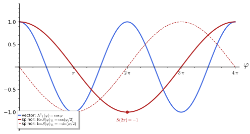
figures/sd-spinor-rotation.sage.
Definition 6 (Spin group) The spin group \mathrm{Spin}(p, q) is the set of products S = u_1u_2\cdots u_{2k} in Cl(p, q) of an even number of vectors with \eta(u_i, u_i) = \pm1, with the Clifford product as group law. For S \in \mathrm{Spin}(p, q) and v \in V, \rho(S)v = SvS^{-1} is again a vector, \rho(S) \in SO(p, q), and 1 \to \{1, -1\} \to \mathrm{Spin}(p, q) \xrightarrow{\ \rho\ } SO(p, q) \to 1 \tag{9} is exact Trautman (1995, sec. 3.1, eqs. (2)-(5)). In a representation by gamma matrices, S acts on \mathbb{C}^N and S^{-1}\gamma^aS = \Lambda^a{}_b\gamma^b with \Lambda \in SO(p, q); the two matrices \pm S give the same \Lambda Zhelnorovich (2019, sec. 1.2.1, eqs. (1.59)-(1.61)). We write \mathrm{Spin}(n) = \mathrm{Spin}(n, 0).
Veriphy. Pending.
Lean. Pending.
Sage. Pending.
In the plane the spin group is a circle that wraps twice around the rotation circle. The first example computes the spinor matrix of a rotation, which is the formula of Zhelnorovich (2019, eq. (3.45)).
Example 26 (\mathrm{Spin}(2)) The product of the unit vectors u_1 = e_1 and u_2 = \cos\tfrac\varphi2\,e_1 + \sin\tfrac\varphi2\,e_2 is S(\varphi) = \cos\tfrac\varphi2 + \sin\tfrac\varphi2\,e_1e_2 = \exp(\tfrac\varphi2e_1e_2). With \gamma^1 = \sigma_1, \gamma^2 = \sigma_2, e_1e_2 \mapsto i\sigma_3 and S(\varphi) = e^{i\varphi\sigma_3/2}; then S^{-1}\sigma_1S = \cos\varphi\, \sigma_1 + \sin\varphi\,\sigma_2, a rotation by \varphi. So \mathrm{Spin}(2) \cong U(1) and \rho is z \mapsto z^2: the spinor components have charges \pm\tfrac12 under rotations.
Veriphy. Pending.
Lean. Pending.
Sage. Pending.
In three dimensions the spin group is SU(2), the double cover studied in Example 51 of Group theory. The second example writes the spinor matrix of a rotation about an arbitrary axis.
Example 27 (\mathrm{Spin}(3) = SU(2)) The even products of unit vectors of \mathbb{R}^3, represented by Pauli matrices, are S = \cos\tfrac\varphi2 - i\sin\tfrac\varphi2\,n\cdot\sigma = \exp(-\tfrac{i}{2}\varphi\,n\cdot\sigma) for unit vectors n, the matrices of SU(2) Zhelnorovich (2019, sec. 4.1.3). S covers the rotation by \varphi about n (Figure 4 for n = e_3), and the rotation by 2\pi is covered by S = -1: \mathrm{Spin}(3) \to SO(3) is the double cover of Definition 5 of Lie groups and Lie algebras.
Veriphy. Pending.
Lean. Pending.
Sage. Pending.
For the Lorentz group the spin transformations are no longer unitary, and boosts are covered by hyperbolic functions of half the rapidity. The third example finds the group SL(2, \mathbb{C}) in the Weyl representation.
Example 28 (\mathrm{Spin}(1, 3) and SL(2, \mathbb{C})) In the Weyl representation \gamma^0\gamma^1 = \operatorname{diag}(-\sigma_1, \sigma_1), so S = \exp(-\tfrac12\phi \gamma^0\gamma^1) = \operatorname{diag}(e^{\phi\sigma_1/2}, e^{-\phi\sigma_1/2}), and S^{-1}\gamma^0S = \cosh\phi\, \gamma^0 - \sinh\phi\,\gamma^1: a boost of rapidity \phi along x^1 Zhelnorovich (2019, sec. 3.1.3). In general the identity component of \mathrm{Spin}(1, 3) consists of the matrices \operatorname{diag}(M, (M^\dagger)^{-1}) with M \in SL(2, \mathbb{C}); the blocks act on the two chiralities of Example 12.
Veriphy. Pending.
Lean. Pending.
Sage. Pending.
The sign S(2\pi) = -1 is the defining property of spinors. The first exercise checks it on the generators of rotations in every plane of \mathbb{R}^4.
Exercise 28 (Rotations by 2\pi) With Sage, for the Euclidean gamma matrices of \mathbb{R}^4 and each pair a < b, compute S(\varphi) = \exp(\tfrac\varphi2\gamma^a\gamma^b) at \varphi = 2\pi and \varphi = 4\pi, and the rotation \Lambda(\varphi) defined by S^{-1}\gamma^cS = \Lambda^c{}_d\gamma^d at \varphi = 2\pi.
(\gamma^a\gamma^b)^2 = -1, so S(\varphi) = \cos\tfrac\varphi2 + \sin\tfrac\varphi2\gamma^a\gamma^b: S(2\pi) = -1, S(4\pi) = 1, while \Lambda(2\pi) = 1 for all six planes:
import numpy as np
from functools import reduce
from scipy.linalg import expm
s1 = np.array([[0, 1], [1, 0]], dtype=complex); s2 = np.array([[0, -1j], [1j, 0]]); s3 = np.array([[1, 0], [0, -1]], dtype=complex)
kron = lambda ms: reduce(np.kron, ms, np.eye(1))
def gammas(p, q):
"""p gamma matrices squaring to +1, then q squaring to -1 (tensor products of Pauli matrices)."""
d = p + q; n = d // 2; G = []
for k in range(n):
for s in (s1, s2):
G.append(kron([s3] * k + [s] + [np.eye(2)] * (n - k - 1)))
if d % 2: G.append(kron([s3] * n))
return G[:p] + [1j * x for x in G[p:]]
G = gammas(4, 0); N = 4
def S(a, b, phi): return expm(phi / 2 * G[a] @ G[b])
def Lam(Sm):
Si = np.linalg.inv(Sm)
return np.array([[np.trace(Si @ G[c] @ Sm @ G[d]).real / N for d in range(4)] for c in range(4)])
for a in range(4):
for b in range(a + 1, 4):
print("plane (%d,%d): S(2pi) = -1: %s, S(4pi) = 1: %s, Lambda(2pi) = 1: %s" % (a + 1, b + 1,
np.allclose(S(a, b, 2 * np.pi), -np.eye(N)), np.allclose(S(a, b, 4 * np.pi), np.eye(N)), np.allclose(Lam(S(a, b, 2 * np.pi)), np.eye(4))))
print("Lambda(pi/2) in the plane (1,2):"); print(np.round(Lam(S(0, 1, np.pi / 2)), 12))Output:
plane (1,2): S(2pi) = -1: True, S(4pi) = 1: True, Lambda(2pi) = 1: True
plane (1,3): S(2pi) = -1: True, S(4pi) = 1: True, Lambda(2pi) = 1: True
plane (1,4): S(2pi) = -1: True, S(4pi) = 1: True, Lambda(2pi) = 1: True
plane (2,3): S(2pi) = -1: True, S(4pi) = 1: True, Lambda(2pi) = 1: True
plane (2,4): S(2pi) = -1: True, S(4pi) = 1: True, Lambda(2pi) = 1: True
plane (3,4): S(2pi) = -1: True, S(4pi) = 1: True, Lambda(2pi) = 1: True
Lambda(pi/2) in the plane (1,2):
[[ 0. 1. 0. 0.]
[-1. 0. 0. 0.]
[ 0. 0. 1. 0.]
[ 0. 0. 0. 1.]]Veriphy. Pending.
Lean. Pending.
Sage. Pending.
That \rho(S) preserves the metric follows from the Clifford relation alone. The second exercise proves it, first for a single unit vector, where conjugation is a reflection.
Exercise 29 (Products of reflections) For a unit vector u, show that v \mapsto -uvu^{-1} is the reflection in the hyperplane orthogonal to u: -uvu^{-1} = v - 2\frac{\eta(u, v)}{\eta(u, u)}u. Deduce that \rho(u_1u_2\cdots u_{2k}) is a product of 2k reflections, hence in SO(p, q), and that \rho(-S) = \rho(S).
u^{-1} = u/\eta(u, u) and uv = 2\eta(u, v) - vu, so -uvu^{-1} = -(2\eta(u, v) - vu)u/\eta(u, u) = v - 2\eta(u, v)u/\eta(u, u), which fixes u^\perp and sends u to -u. Conjugation by u_1\cdots u_{2k} is the composition of the conjugations by the u_i, and the 2k signs cancel, so it is a product of an even number of reflections, an element of O(p, q) with determinant +1. Conjugation by -S equals conjugation by S Trautman (1995, eq. (2)).
Veriphy. Pending.
Lean. Pending.
Sage. Pending.
In four Euclidean dimensions the spin group splits into two commuting copies of SU(2), one for each chirality. The third exercise exhibits the splitting with explicit matrices.
Exercise 30 (\mathrm{Spin}(4) = SU(2) \times SU(2)) With the Euclidean gamma matrices of Example 9 and \Sigma^{ab} = \tfrac14[\gamma^a, \gamma^b], define J^\pm_1 = -\tfrac{i}{2}(\Sigma^{23} \pm \Sigma^{14}) and cyclically. With Sage, show that [J^\pm_a, J^\pm_b] = i\epsilon_{abc}J^\pm_c, [J^+_a, J^-_b] = 0, and that J^+ acts only on one chirality and J^- only on the other.
The two triples close on \mathfrak{su}(2) and commute; each annihilates one eigenspace of \gamma_* and acts on the other as spin \tfrac12, so the Dirac spinor of \mathbb{R}^4 is (\tfrac12, 0) \oplus (0, \tfrac12):
import numpy as np
from functools import reduce
from scipy.linalg import expm
s1 = np.array([[0, 1], [1, 0]], dtype=complex); s2 = np.array([[0, -1j], [1j, 0]]); s3 = np.array([[1, 0], [0, -1]], dtype=complex)
kron = lambda ms: reduce(np.kron, ms, np.eye(1))
def gammas(p, q):
"""p gamma matrices squaring to +1, then q squaring to -1 (tensor products of Pauli matrices)."""
d = p + q; n = d // 2; G = []
for k in range(n):
for s in (s1, s2):
G.append(kron([s3] * k + [s] + [np.eye(2)] * (n - k - 1)))
if d % 2: G.append(kron([s3] * n))
return G[:p] + [1j * x for x in G[p:]]
G = gammas(4, 0); N = 4
Sig = lambda a, b: 0.25 * (G[a] @ G[b] - G[b] @ G[a])
gst = (1j) ** 2 * reduce(np.dot, G, np.eye(N))
cyc = [(0, 1, 2), (1, 2, 0), (2, 0, 1)]
J = {sgn: [-0.5j * (Sig(b, c) + sgn * Sig(a, 3)) for (a, b, c) in cyc] for sgn in (1, -1)}
comm = lambda x, y: x @ y - y @ x
for sgn in (1, -1):
ok = all(np.allclose(comm(J[sgn][a], J[sgn][b]), 1j * J[sgn][c]) for (a, b, c) in cyc)
print("J^%s: [J_a, J_b] = i eps_abc J_c: %s" % ("+" if sgn > 0 else "-", ok))
print("[J^+_a, J^-_b] = 0 for all a, b:", all(np.allclose(comm(J[1][a], J[-1][b]), 0) for a in range(3) for b in range(3)))
for sgn in (1, -1):
Pp, Pm = (np.eye(N) + gst) / 2, (np.eye(N) - gst) / 2
print("J^%s vanishes on gamma_* = +1: %s, on gamma_* = -1: %s; Casimir on its nonzero block: %s" % ("+" if sgn > 0 else "-",
all(np.allclose(x @ Pp, 0) for x in J[sgn]), all(np.allclose(x @ Pm, 0) for x in J[sgn]),
np.round(np.linalg.eigvals(sum(x @ x for x in J[sgn])).real, 6)))Output:
J^+: [J_a, J_b] = i eps_abc J_c: True
J^-: [J_a, J_b] = i eps_abc J_c: True
[J^+_a, J^-_b] = 0 for all a, b: True
J^+ vanishes on gamma_* = +1: False, on gamma_* = -1: True; Casimir on its nonzero block: [0.75 0. 0. 0.75]
J^- vanishes on gamma_* = +1: True, on gamma_* = -1: False; Casimir on its nonzero block: [0. 0.75 0.75 0. ]Veriphy. Pending.
Lean. Pending.
Sage. Pending.
Near the identity a spin transformation is determined by the quadratic elements \gamma^a\gamma^b. The proposition gives the commutation relations that make them a representation of the Lie algebra \mathfrak{so}(p, q), and the exponential that integrates them; for (1, 3) it is Definition 10 of Classical field theory of Part II.
Proposition 2 (The spinor generators) The matrices \Sigma^{ab} = \tfrac14[\gamma^a, \gamma^b] satisfy [\Sigma^{ab}, \gamma^c] = \eta^{bc}\gamma^a - \eta^{ac}\gamma^b, \qquad [\Sigma^{ab}, \Sigma^{cd}] = \eta^{bc}\Sigma^{ad} - \eta^{ac}\Sigma^{bd} - \eta^{bd}\Sigma^{ac} + \eta^{ad}\Sigma^{bc}, \tag{10} so they represent \mathfrak{so}(p, q). For real antisymmetric \omega_{ab}, S = \exp(\tfrac12\omega_{ab}\Sigma^{ab}) \in \mathrm{Spin}(p, q) and S^{-1}\gamma^aS = \Lambda^a{}_b\gamma^b with \Lambda = \exp(\omega), \omega the matrix (\omega^a{}_b); infinitesimally S = 1 + \tfrac14\delta\omega_{ab}\gamma^a\gamma^b Zhelnorovich (2019, eqs. (1.66)-(1.69), (3.44)).
Veriphy. Pending.
Lean. Pending.
Sage. Pending.
In three dimensions the generators are multiples of Pauli matrices. The first example relates them to the generators T_a = -\tfrac{i}{2}\sigma_a of the book’s conventions (Lie algebras and gauge fields).
Example 29 (Rotations in three dimensions) For \gamma^a = \sigma_a, \Sigma^{ab} = \tfrac14[\sigma_a, \sigma_b] = \tfrac{i}{2}\epsilon_{abc}\sigma_c = -\epsilon_{abc}T_c. The rotation by \varphi about e_3 has \omega_{12} = -\omega_{21} = \varphi, so that \Lambda = e^\omega has \Lambda^1{}_1 = \cos\varphi, \Lambda^1{}_2 = \sin\varphi, and S = \exp(\varphi\Sigma^{12}) = \exp(\tfrac{i}{2}\varphi\sigma_3), the matrix of Example 26.
Veriphy. Pending.
Lean. Pending.
Sage. Pending.
The number of independent generators is the dimension of the rotation algebra. The second example lists it for the dimensions the book uses and compares with the size of the spinor.
Example 30 (Counting generators) \mathfrak{so}(p, q) has dimension d(d - 1)/2: 3 for d = 3, 6 for d = 4, 15 for d = 6, 45 for d = 10, 55 for d = 11. The \Sigma^{ab} are linearly independent (they are distinct basis elements \tfrac12\gamma_{\{a, b\}} of Proposition 1), so the spinor representation is faithful on the Lie algebra, although 2^{\lfloor d/2\rfloor} grows much faster than d(d - 1)/2: for d = 11, 55 generators act on \mathbb{C}^{32}.
Veriphy. Pending.
Lean. Pending.
Sage. Pending.
The Lorentz boosts and rotations of Part II are the cases (a, b) = (0, k) and (j, k). The third example identifies them in the Weyl representation, where they are block diagonal.
Example 31 (Boosts and rotations on Weyl spinors) In the Weyl representation \Sigma^{jk} = -\tfrac{i}{2}\epsilon_{jkl}\operatorname{diag}(\sigma_l, \sigma_l) and \Sigma^{0k} = \tfrac12\gamma^0\gamma^k = -\tfrac12\operatorname{diag}(\sigma_k, -\sigma_k). Rotations act in the same way on both chiralities, boosts with opposite signs: with \beta_k = \omega_{0k} and \theta_l = \tfrac12\epsilon_{jkl}\omega_{jk}, the left-handed spinor transforms with M = \exp(-\tfrac12\beta\cdot\sigma - \tfrac{i}{2}\theta\cdot\sigma) and the right-handed one with \exp(\tfrac12\beta\cdot\sigma - \tfrac{i}{2}\theta\cdot\sigma) = (M^\dagger)^{-1}, the two inequivalent representations (\tfrac12, 0) and (0, \tfrac12) of \mathfrak{so}(1, 3)_{\mathbb{C}} \cong \mathfrak{sl}(2, \mathbb{C}) \oplus \mathfrak{sl}(2, \mathbb{C}).
Veriphy. Pending.
Lean. Pending.
Sage. Pending.
The first relation in Equation 10 says that the gamma matrices transform as a vector. The first exercise derives it from the Clifford relation.
Exercise 31 (The gamma matrices are a vector) Derive [\gamma^a\gamma^b, \gamma^c] = 2\eta^{bc}\gamma^a - 2\eta^{ac}\gamma^b from Equation 4, and deduce the first relation in Equation 10. Then use it, together with \Sigma^{cd} = \tfrac14[\gamma^c, \gamma^d], to obtain the second.
\gamma^a\gamma^b\gamma^c = \gamma^a(2\eta^{bc} - \gamma^c\gamma^b) = 2\eta^{bc}\gamma^a - (2\eta^{ac} - \gamma^c\gamma^a)\gamma^b, so [\gamma^a\gamma^b, \gamma^c] = 2\eta^{bc}\gamma^a - 2\eta^{ac}\gamma^b. For a \neq b, \Sigma^{ab} = \tfrac12\gamma^a\gamma^b, which gives the first relation (both sides vanish for a = b). For the second, [\Sigma^{ab}, \gamma^c\gamma^d] = [\Sigma^{ab}, \gamma^c]\gamma^d + \gamma^c[\Sigma^{ab}, \gamma^d]; inserting the first relation and antisymmetrising in c, d gives the four terms.
Veriphy. Pending.
Lean. Pending.
Sage. Pending.
The commutation relations can be checked by brute force in any dimension. The second exercise does so in five dimensions, where the spinor has four components.
Exercise 32 (Checking the algebra) With Sage, build the Euclidean gamma matrices for d = 5 and verify both relations of Equation 10 for all indices. How many independent matrices \Sigma^{ab} are there, and what Lie algebra of 4 \times 4 matrices do they span?
Both relations hold for all 5^3 and 5^4 index combinations. The ten \Sigma^{ab} are independent anti-Hermitian traceless 4 \times 4 matrices closing under commutators: they span \mathfrak{so}(5) \cong \mathfrak{sp}(2), a ten-dimensional subalgebra of \mathfrak{su}(4):
import numpy as np
from functools import reduce
from scipy.linalg import expm
s1 = np.array([[0, 1], [1, 0]], dtype=complex); s2 = np.array([[0, -1j], [1j, 0]]); s3 = np.array([[1, 0], [0, -1]], dtype=complex)
kron = lambda ms: reduce(np.kron, ms, np.eye(1))
def gammas(p, q):
"""p gamma matrices squaring to +1, then q squaring to -1 (tensor products of Pauli matrices)."""
d = p + q; n = d // 2; G = []
for k in range(n):
for s in (s1, s2):
G.append(kron([s3] * k + [s] + [np.eye(2)] * (n - k - 1)))
if d % 2: G.append(kron([s3] * n))
return G[:p] + [1j * x for x in G[p:]]
d = 5; G = gammas(d, 0); N = G[0].shape[0]; eta = np.eye(d)
Sig = lambda a, b: 0.25 * (G[a] @ G[b] - G[b] @ G[a])
comm = lambda x, y: x @ y - y @ x
r = range(d)
first = all(np.allclose(comm(Sig(a, b), G[c]), eta[b, c] * G[a] - eta[a, c] * G[b]) for a in r for b in r for c in r)
second = all(np.allclose(comm(Sig(a, b), Sig(c, e)), eta[b, c] * Sig(a, e) - eta[a, c] * Sig(b, e) - eta[b, e] * Sig(a, c) + eta[a, e] * Sig(b, c)) for a in r for b in r for c in r for e in r)
print("size N =", N, "; [Sigma, gamma] relation:", first, "; [Sigma, Sigma] relation:", second)
basis = [Sig(a, b) for a in r for b in r if a < b]
M = np.array([np.concatenate([x.real.ravel(), x.imag.ravel()]) for x in basis])
print("number of Sigma^{ab} with a < b:", len(basis), "; real rank:", np.linalg.matrix_rank(M))
print("anti-Hermitian and traceless:", all(np.allclose(x.conj().T, -x) and abs(np.trace(x)) < 1e-12 for x in basis))Output:
size N = 4 ; [Sigma, gamma] relation: True ; [Sigma, Sigma] relation: True
number of Sigma^{ab} with a < b: 10 ; real rank: 10
anti-Hermitian and traceless: TrueVeriphy. Pending.
Lean. Pending.
Sage. Pending.
The relation \Lambda = \exp(\omega) can be tested on a random element of the algebra. The third exercise does this in three dimensions, recovering the rotation matrix from the spinor matrix by traces.
Exercise 33 (The rotation from the spinor matrix) For a random real antisymmetric 3 \times 3 matrix \omega, compute S = \exp(\tfrac12\omega_{ab}\Sigma^{ab}) with \gamma^a = \sigma_a, then \Lambda^a{}_b = \tfrac12\operatorname{tr}(S^{-1}\sigma_aS\sigma_b), and compare with the matrix exponential \exp(\omega) (indices lowered with \delta). Check that \Lambda is orthogonal with determinant 1.
The trace formula uses \tfrac12\operatorname{tr}(\sigma_a\sigma_b) = \delta_{ab}, and the two matrices agree to machine precision:
import numpy as np
from functools import reduce
from scipy.linalg import expm
s1 = np.array([[0, 1], [1, 0]], dtype=complex); s2 = np.array([[0, -1j], [1j, 0]]); s3 = np.array([[1, 0], [0, -1]], dtype=complex)
kron = lambda ms: reduce(np.kron, ms, np.eye(1))
def gammas(p, q):
"""p gamma matrices squaring to +1, then q squaring to -1 (tensor products of Pauli matrices)."""
d = p + q; n = d // 2; G = []
for k in range(n):
for s in (s1, s2):
G.append(kron([s3] * k + [s] + [np.eye(2)] * (n - k - 1)))
if d % 2: G.append(kron([s3] * n))
return G[:p] + [1j * x for x in G[p:]]
np.random.seed(7)
A = np.random.randn(3, 3); omega = A - A.T
sig = [s1, s2, s3]
Sig = lambda a, b: 0.25 * (sig[a] @ sig[b] - sig[b] @ sig[a])
S = expm(0.5 * sum(omega[a, b] * Sig(a, b) for a in range(3) for b in range(3)))
Si = np.linalg.inv(S)
Lam = np.array([[0.5 * np.trace(Si @ sig[a] @ S @ sig[b]).real for b in range(3)] for a in range(3)])
print("omega ="); print(np.round(omega, 4))
print("Lambda from S ="); print(np.round(Lam, 6))
print("max |Lambda - expm(omega)| =", np.abs(Lam - expm(omega)).max())
print("Lambda orthogonal:", np.allclose(Lam @ Lam.T, np.eye(3)), "; det Lambda =", round(np.linalg.det(Lam), 12))Output:
omega =
[[ 0. -0.8735 0.0337]
[ 0.8735 0. 1.7568]
[-0.0337 -1.7568 0. ]]
Lambda from S =
[[ 0.725855 -0.432712 -0.534692]
[ 0.390213 -0.381111 0.838145]
[-0.566452 -0.817016 -0.107782]]
max |Lambda - expm(omega)| = 1.1102230246251565e-16
Lambda orthogonal: True ; det Lambda = 1.0Veriphy. Pending.
Lean. Pending.
Sage. Pending.
Dirac, Weyl and Majorana spinors
The gamma matrices restricted to the spin group give the Dirac spinor representation. In even dimension it splits into two halves, labelled by the eigenvalue of the chirality matrix, and the figure shows the weights of the two halves for \mathrm{Spin}(4) and \mathrm{Spin}(6).
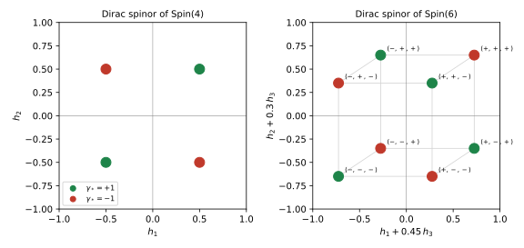
figures/sd-weyl-weights.sage.
Definition 7 (Weyl spinor) The Dirac representation of \mathrm{Spin}(p, q) is S \mapsto S on \mathbb{C}^N, for irreducible gamma matrices. For even d the generators \Sigma^{ab} commute with \gamma_*, so the eigenspaces S_\pm = \{\psi : \gamma_*\psi = \pm\psi\}, of dimension N/2, are invariant; the representations on S_+ and S_- are the two Weyl representations (semispinor representations), and a Weyl spinor is an element of S_+ or S_- Zhelnorovich (2019, sec. 1.5), Trautman (1995, Prop. 2).
Veriphy. Pending.
Lean. Pending.
Sage. Pending.
In two dimensions the Weyl spinors are the two components of a Dirac spinor. The first example finds their charges under \mathrm{Spin}(2) = U(1), which return when spinors are put on the sphere.
Example 32 (Two dimensions) With \gamma_* = -\sigma_3 (Example 11) the Weyl spinors are (0, \psi_2) (\gamma_* = +1) and (\psi_1, 0) (\gamma_* = -1). The rotation S(\varphi) = e^{i\varphi\sigma_3/2} of Example 26 multiplies them by e^{-i\varphi/2} and e^{i\varphi/2}: the two Weyl representations of \mathrm{Spin}(2) = U(1) have charges \mp\tfrac12, and they are complex conjugate to each other.
Veriphy. Pending.
Lean. Pending.
Sage. Pending.
In four Lorentzian dimensions the Weyl spinors are the left- and right-handed two-component spinors of the standard model. The second example identifies the two representations.
Example 33 (Left- and right-handed spinors) In the Weyl representation \gamma_5 = \operatorname{diag}(-1, -1, 1, 1), so a Dirac spinor is \psi = (\psi_L, \psi_R) with \gamma_5\psi_L = -\psi_L, \gamma_5\psi_R = \psi_R. By Example 28, \psi_L \mapsto M\psi_L and \psi_R \mapsto (M^\dagger)^{-1}\psi_R, M \in SL(2, \mathbb{C}): the representations (\tfrac12, 0) and (0, \tfrac12), of complex dimension 2 each.
Veriphy. Pending.
Lean. Pending.
Sage. Pending.
In ten dimensions the Weyl and Majorana conditions combine (Theorem 2). The third example counts the real components that remain after both conditions.
Example 34 (Ten dimensions) For (1, 9), N = 32 and the Weyl representations \mathbf{16} and \mathbf{16}' have complex dimension 16. Since p - q = -8 \equiv 0 \pmod 8, each admits a Majorana condition, and a Majorana-Weyl spinor has 16 real components: the supercharge of ten-dimensional supersymmetry with 16 real components. Theories with two Majorana-Weyl supercharges of the same or of opposite chirality are the two maximal supersymmetries of ten dimensions Van Proeyen (1999, Table 3).
Veriphy. Pending.
Lean. Pending.
Sage. Pending.
The invariance of the Weyl subspaces rests on one commutation. The first exercise proves it and its consequence for the Dirac operator of later parts.
Exercise 34 (Invariance of the Weyl subspaces) Show that \gamma_* commutes with every \Sigma^{ab} and with every S \in \mathrm{Spin}(p, q) for even d, so that P_\pm S = SP_\pm. Show that a single \gamma^a maps S_+ to S_-, so an operator of the form \gamma^a\partial_a exchanges the chiralities.
\Sigma^{ab} is a product of two gamma matrices, and \gamma_* anticommutes with each, so it commutes with the product (Exercise 10); the same holds for any even product of unit vectors, hence for S. \gamma^aP_\pm = P_\mp\gamma^a (Exercise 12) shows that \gamma^a maps S_\pm to S_\mp, and so does \gamma^a\partial_a.
Veriphy. Pending.
Lean. Pending.
Sage. Pending.
The weights of Figure 5 can be read off in any even dimension. The second exercise computes them and checks the rule that relates them to chirality.
Exercise 35 (Weights and chirality) With Sage, for \nu = 2, 3, 4, 5 list the diagonal entries of h_k = -i\Sigma^{2k - 1, 2k} and of \gamma_* in the standard Euclidean matrices of dimension 2\nu, and check that \gamma_* = (-1)^\nu\prod_k2h_k. How many weights of each chirality are there?
h_k is \tfrac12\sigma_3 in the kth factor (up to the sign of \sigma_1\sigma_2 = i\sigma_3), so the weights are all sign choices, and \gamma_* = (-\sigma_3)^{\otimes\nu} (Example 13) gives the product rule; each chirality has 2^{\nu - 1} weights, those with an even (for \gamma_* = +1) or odd number of entries +\tfrac12:
import numpy as np
from functools import reduce
from scipy.linalg import expm
s1 = np.array([[0, 1], [1, 0]], dtype=complex); s2 = np.array([[0, -1j], [1j, 0]]); s3 = np.array([[1, 0], [0, -1]], dtype=complex)
kron = lambda ms: reduce(np.kron, ms, np.eye(1))
def gammas(p, q):
"""p gamma matrices squaring to +1, then q squaring to -1 (tensor products of Pauli matrices)."""
d = p + q; n = d // 2; G = []
for k in range(n):
for s in (s1, s2):
G.append(kron([s3] * k + [s] + [np.eye(2)] * (n - k - 1)))
if d % 2: G.append(kron([s3] * n))
return G[:p] + [1j * x for x in G[p:]]
for nu in (2, 3, 4, 5):
G = gammas(2 * nu, 0); N = 2 ** nu
H = [-1j * 0.5 * G[2 * k] @ G[2 * k + 1] for k in range(nu)]
gst = (1j) ** nu * reduce(np.dot, G, np.eye(N))
W = [tuple(float(H[k][i, i].real) for k in range(nu)) for i in range(N)]
ch = [int(round(gst[i, i].real)) for i in range(N)]
rule = all(c == (-1) ** nu * round(np.prod([2 * x for x in w])) for w, c in zip(W, ch))
print("nu = %d: diagonal: %s; rule holds: %s; weights with gamma_* = +1: %d, = -1: %d" % (nu,
all(np.allclose(h, np.diag(np.diag(h))) for h in H + [gst]), rule, ch.count(1), ch.count(-1)))
if nu == 2: print(" Spin(4) weights and chiralities:", list(zip(W, ch)))Output:
nu = 2: diagonal: True; rule holds: True; weights with gamma_* = +1: 2, = -1: 2
Spin(4) weights and chiralities: [((0.5, 0.5), 1), ((0.5, -0.5), -1), ((-0.5, 0.5), -1), ((-0.5, -0.5), 1)]
nu = 3: diagonal: True; rule holds: True; weights with gamma_* = +1: 4, = -1: 4
nu = 4: diagonal: True; rule holds: True; weights with gamma_* = +1: 8, = -1: 8
nu = 5: diagonal: True; rule holds: True; weights with gamma_* = +1: 16, = -1: 16Veriphy. Pending.
Lean. Pending.
Sage. Pending.
The half-integral weights distinguish spinors from tensors, all of whose weights are integers. The third exercise uses this to show that no tensor representation contains a spinor.
Exercise 36 (Spinors are not tensors) Show that the weights of the vector representation of \mathfrak{so}(2\nu) are \pm\epsilon_k (one entry \pm1, the others 0) and that the weights of a tensor product of vectors are integral. Deduce that the Dirac spinor, whose weights are half-integral, is not contained in any tensor representation, and that -1 \in \mathrm{Spin}(2\nu), which acts as -1 on spinors, acts as +1 on every tensor.
On \mathbb{C}^{2\nu} the rotation generator in the plane (2k - 1, 2k) has eigenvalues \pm i on e_{2k - 1} \mp ie_{2k} and 0 on the other directions, so the weights are \pm\epsilon_k. Weights add under tensor products, so tensors have integral weights, while spinor weights (\pm\tfrac12, \dots) are not integral. The element -1 = \exp(2\pi\Sigma^{12}) acts as e^{2\pi ih_1}, which is -1 on half-integral and +1 on integral weights.
Veriphy. Pending.
Lean. Pending.
Sage. Pending.
Complex conjugation of spinors either preserves or exchanges the two Weyl representations, depending on the signature. The proposition states the rule, which is the computation of Exercise 23 read as a statement about representations.
Proposition 3 (Conjugation of Weyl spinors) Let d be even and B as in Definition 5. Then \psi \mapsto B^{-1}\psi^* commutes with the action of \mathrm{Spin}(p, q) and maps S_\pm to S_{\pm(-1)^{(p - q)/2}}. Hence for p - q \equiv 0 \pmod 4 each Weyl representation is equivalent to its complex conjugate (real for p - q \equiv 0 \pmod 8, pseudoreal for p - q \equiv 4), and for p - q \equiv 2 \pmod 4 the two Weyl representations are complex conjugates of each other Van Proeyen (1999, eq. (3.28) and the paragraph before it).
Veriphy. Pending.
Lean. Pending.
Sage. Pending.
In four Lorentzian dimensions p - q = -2, and the conjugate of a left-handed spinor is right-handed. The first example uses this to write a Majorana spinor in terms of a single Weyl spinor.
Example 35 (Left and right are conjugate) For (1, 3), p - q \equiv 2 \pmod 4, so the conjugate of \psi_L transforms like \psi_R: explicitly \sigma_2M^*\sigma_2 = (M^\dagger)^{-1} for M \in SL(2, \mathbb{C}) (take the complex conjugate of \sigma_2M^T\sigma_2 = M^{-1} and invert). Hence \psi = (\chi, \sigma_2\chi^*) is a Dirac spinor built from one left-handed \chi, and it satisfies \psi^* = \gamma^2\psi, the Majorana condition with B = \gamma^2, s = -1, B^*B = 1: four real components, as in Example 20.
Veriphy. Pending.
Lean. Pending.
Sage. Pending.
In four Euclidean dimensions p - q = 4 and each Weyl representation is pseudoreal. The second example identifies it with the doublet of SU(2).
Example 36 (Pseudoreal doublets) For (4, 0) the Weyl representations are the doublets of the two factors of \mathrm{Spin}(4) = SU(2) \times SU(2) (Exercise 30). The doublet is equivalent to its conjugate, \sigma_2U^*\sigma_2 = U for U \in SU(2), but there is no basis in which U is real: the structure map \psi \mapsto \sigma_2\psi^* squares to -1. This is the symplectic Majorana-Weyl case r = 4 of Theorem 2.
Veriphy. Pending.
Lean. Pending.
Sage. Pending.
In six Euclidean dimensions p - q = 6 \equiv 2 \pmod 4, and the two Weyl spinors are conjugate to each other. The third example identifies them with the fundamental and antifundamental of SU(4).
Example 37 (\mathrm{Spin}(6) = SU(4)) The Weyl representations of \mathrm{Spin}(6) have dimension 4. Their weights (Figure 5, right) are exchanged by h \mapsto -h, which is complex conjugation, so S_- \cong \overline{S_+}. The fifteen generators \Sigma^{ab} restricted to S_+ span \mathfrak{su}(4) (Exercise 39), and S_\pm are the \mathbf{4} and \bar{\mathbf{4}} of SU(4) \cong \mathrm{Spin}(6).
Veriphy. Pending.
Lean. Pending.
Sage. Pending.
The proposition can be checked with the matrices B of Exercise 19. The first exercise does so in all even dimensions up to ten.
Exercise 37 (Which chirality is conjugate) With Sage, for the standard gamma matrices of signatures (d, 0) and (1, d - 1), d = 2, 4, 6, 8, 10, take a matrix B with (\gamma^a)^* = \pm B\gamma^aB^{-1} and test whether B\gamma_*B^{-1} equals +\gamma_*^* or -\gamma_*^*. Compare with (-1)^{(p - q)/2}.
The sign is (-1)^{(p - q)/2} in every case: conjugation preserves chirality in Euclidean dimensions 4, 8 and Lorentzian dimensions 2, 6, 10, and exchanges it otherwise:
import numpy as np
from functools import reduce
from scipy.linalg import expm
s1 = np.array([[0, 1], [1, 0]], dtype=complex); s2 = np.array([[0, -1j], [1j, 0]]); s3 = np.array([[1, 0], [0, -1]], dtype=complex)
kron = lambda ms: reduce(np.kron, ms, np.eye(1))
def gammas(p, q):
"""p gamma matrices squaring to +1, then q squaring to -1 (tensor products of Pauli matrices)."""
d = p + q; n = d // 2; G = []
for k in range(n):
for s in (s1, s2):
G.append(kron([s3] * k + [s] + [np.eye(2)] * (n - k - 1)))
if d % 2: G.append(kron([s3] * n))
return G[:p] + [1j * x for x in G[p:]]
for (label, sig) in (("Euclidean", lambda d: (d, 0)), ("Lorentzian", lambda d: (1, d - 1))):
for d in (2, 4, 6, 8, 10):
p, q = sig(d); G = gammas(p, q); N = G[0].shape[0]
real = [x for x in G if np.allclose(x.conj(), x)]; imag = [x for x in G if np.allclose(x.conj(), -x)]
Bs = [B for B in (reduce(np.dot, real, np.eye(N)), reduce(np.dot, imag, np.eye(N))) if any(all(np.allclose(x.conj() @ B, s * B @ x) for x in G) for s in (1, -1))]
B = Bs[0]; gst = (1j) ** ((d * (d - 1)) // 2 + q) * reduce(np.dot, G, np.eye(N))
sign = 1 if np.allclose(B @ gst @ np.linalg.inv(B), gst.conj()) else (-1 if np.allclose(B @ gst @ np.linalg.inv(B), -gst.conj()) else 0)
print("%-10s d = %2d (p - q = %3d): B gamma_* B^-1 = %+d gamma_*^*, (-1)^((p-q)/2) = %+d" % (label, d, p - q, sign, (-1) ** ((p - q) // 2)))Output:
Euclidean d = 2 (p - q = 2): B gamma_* B^-1 = -1 gamma_*^*, (-1)^((p-q)/2) = -1
Euclidean d = 4 (p - q = 4): B gamma_* B^-1 = +1 gamma_*^*, (-1)^((p-q)/2) = +1
Euclidean d = 6 (p - q = 6): B gamma_* B^-1 = -1 gamma_*^*, (-1)^((p-q)/2) = -1
Euclidean d = 8 (p - q = 8): B gamma_* B^-1 = +1 gamma_*^*, (-1)^((p-q)/2) = +1
Euclidean d = 10 (p - q = 10): B gamma_* B^-1 = -1 gamma_*^*, (-1)^((p-q)/2) = -1
Lorentzian d = 2 (p - q = 0): B gamma_* B^-1 = +1 gamma_*^*, (-1)^((p-q)/2) = +1
Lorentzian d = 4 (p - q = -2): B gamma_* B^-1 = -1 gamma_*^*, (-1)^((p-q)/2) = -1
Lorentzian d = 6 (p - q = -4): B gamma_* B^-1 = +1 gamma_*^*, (-1)^((p-q)/2) = +1
Lorentzian d = 8 (p - q = -6): B gamma_* B^-1 = -1 gamma_*^*, (-1)^((p-q)/2) = -1
Lorentzian d = 10 (p - q = -8): B gamma_* B^-1 = +1 gamma_*^*, (-1)^((p-q)/2) = +1Veriphy. Pending.
Lean. Pending.
Sage. Pending.
The formula \psi = (\chi, -i\sigma_2\chi^*) was asserted without checking the Majorana condition. The second exercise verifies it in the Weyl representation.
Exercise 38 (A Majorana spinor from a Weyl spinor) In the Weyl representation show that B = \gamma^2 satisfies (\gamma^\mu)^* = -B\gamma^\mu B^{-1} and B^*B = 1, and that \psi = (\chi, \sigma_2\chi^*) satisfies \psi^* = B\psi for every two-component \chi. Show that every Majorana spinor has this form.
In the Weyl representation \gamma^0, \gamma^1, \gamma^3 are real and \gamma^2 = \begin{pmatrix} 0 & \sigma_2 \\ -\sigma_2 & 0 \end{pmatrix} is imaginary. \gamma^2 commutes with itself and anticommutes with the others, so -\gamma^2\gamma^\mu(\gamma^2)^{-1} is -\gamma^2 = (\gamma^2)^* for \mu = 2 and \gamma^\mu = (\gamma^\mu)^* otherwise; B^*B = (\gamma^2)^*\gamma^2 = -(\gamma^2)^2 = 1. For \psi = (\chi, \xi), B\psi = (\sigma_2\xi, -\sigma_2\chi), so \psi^* = B\psi means \chi^* = \sigma_2\xi and \xi^* = -\sigma_2\chi; the first gives \xi = \sigma_2\chi^*, and then the second holds automatically because \sigma_2^* = -\sigma_2. So the Majorana spinors are exactly the (\chi, \sigma_2\chi^*).
Veriphy. Pending.
Lean. Pending.
Sage. Pending.
Six Euclidean dimensions give the identification of \mathrm{Spin}(6) with SU(4). The third exercise checks it numerically on the fifteen generators \Sigma^{ab}.
Exercise 39 (\mathfrak{so}(6) = \mathfrak{su}(4)) With Sage, restrict the fifteen \Sigma^{ab} of the Euclidean gamma matrices of dimension 6 to S_+ and show that they are traceless anti-Hermitian 4 \times 4 matrices spanning a space of real dimension 15, hence all of \mathfrak{su}(4). Show that the restrictions to S_- are the complex conjugates up to a change of basis.
The restrictions are anti-Hermitian, traceless and independent over \mathbb{R}, fifteen in number, so they fill \mathfrak{su}(4); on S_- the eigenvalues of each generator are the negatives of those on S_+, as for the conjugate representation:
import numpy as np
from functools import reduce
from scipy.linalg import expm
s1 = np.array([[0, 1], [1, 0]], dtype=complex); s2 = np.array([[0, -1j], [1j, 0]]); s3 = np.array([[1, 0], [0, -1]], dtype=complex)
kron = lambda ms: reduce(np.kron, ms, np.eye(1))
def gammas(p, q):
"""p gamma matrices squaring to +1, then q squaring to -1 (tensor products of Pauli matrices)."""
d = p + q; n = d // 2; G = []
for k in range(n):
for s in (s1, s2):
G.append(kron([s3] * k + [s] + [np.eye(2)] * (n - k - 1)))
if d % 2: G.append(kron([s3] * n))
return G[:p] + [1j * x for x in G[p:]]
G = gammas(6, 0); N = 8
gst = (1j) ** 3 * reduce(np.dot, G, np.eye(N))
plus = [i for i in range(N) if gst[i, i].real > 0]; minus = [i for i in range(N) if gst[i, i].real < 0]
Sig = lambda a, b: 0.25 * (G[a] @ G[b] - G[b] @ G[a])
gens = [Sig(a, b) for a in range(6) for b in range(a + 1, 6)]
print("gamma_* diagonal:", np.allclose(gst, np.diag(np.diag(gst))), "; dims of S_+ and S_-:", len(plus), len(minus))
print("Sigma^{ab} preserve S_+:", all(np.allclose(x[np.ix_(minus, plus)], 0) for x in gens))
R = [x[np.ix_(plus, plus)] for x in gens]
print("restrictions anti-Hermitian and traceless:", all(np.allclose(r.conj().T, -r) and abs(np.trace(r)) < 1e-12 for r in R))
M = np.array([np.concatenate([r.real.ravel(), r.imag.ravel()]) for r in R])
print("real dimension of their span:", np.linalg.matrix_rank(M), "(dim su(4) = 15)")
Rm = [x[np.ix_(minus, minus)] for x in gens]
print("spectrum on S_- is minus the spectrum on S_+ for every generator:", all(np.allclose(np.sort_complex(np.linalg.eigvals(a)), np.sort_complex(-np.linalg.eigvals(b))) for a, b in zip(R, Rm)))Output:
gamma_* diagonal: True ; dims of S_+ and S_-: 4 4
Sigma^{ab} preserve S_+: True
restrictions anti-Hermitian and traceless: True
real dimension of their span: 15 (dim su(4) = 15)
spectrum on S_- is minus the spectrum on S_+ for every generator: TrueVeriphy. Pending.
Lean. Pending.
Sage. Pending.
Decomposition under subgroups
When a space is a product, its spin group contains the product of the spin groups of the factors, and a spinor of the whole space decomposes into products of spinors of the factors. The proposition gives the decomposition for spacetime times a Euclidean space of dimension n, which is the case of a d-dimensional spinor seen from four dimensions.
Proposition 4 (Spinors of a product) Let \gamma^\mu be gamma matrices of signature (1, 3) with \gamma_5 as in Definition 3, and \gamma^a_K, a = 1, \dots, n, Euclidean gamma matrices of size N_K = 2^{\lfloor n/2\rfloor}. Then \Gamma^\mu = \gamma^\mu \otimes 1, \qquad \Gamma^{3 + a} = i\gamma_5 \otimes \gamma^a_K \tag{11} are gamma matrices of signature (1, 3 + n) of size 4N_K = 2^{\lfloor D/2\rfloor}, D = 4 + n, and \mathrm{Spin}(1, 3) \times \mathrm{Spin}(n) acts by S_4 \otimes S_K. The Dirac spinor of D dimensions is the tensor product of the Dirac spinors of the factors; for even n, \Gamma_* = \gamma_5 \otimes \gamma_*^K, so the Weyl spinor of positive chirality in D dimensions is (\psi_R \otimes S_K^+) \oplus (\psi_L \otimes S_K^-) Van Proeyen (1999, eqs. (3.3), (3.8)).
Veriphy. Pending.
Lean. Pending.
Sage. Pending.
Six dimensions split as four plus two is the smallest case with chirality on both sides. The first example works it out with the charges of Example 32.
Example 38 (Six as four plus two) For n = 2, \Gamma^M have size 8 and \Gamma_* = \gamma_5 \otimes \gamma_*^K with \gamma_*^K = -\sigma_3. A Weyl spinor of positive chirality in six dimensions is \psi_R \otimes (0, 1) + \psi_L \otimes (1, 0): a right-handed spinor with \mathrm{Spin}(2) charge -\tfrac12 and a left-handed one with charge +\tfrac12. Four complex components, which is the Weyl spinor \mathbf{4} of SO(1, 5).
Veriphy. Pending.
Lean. Pending.
Sage. Pending.
Ten as four plus six is the case of ten-dimensional supersymmetry on a six-dimensional space. The second example combines the proposition with the identification \mathrm{Spin}(6) = SU(4).
Example 39 (Ten as four plus six) For n = 6 the positive-chirality Weyl spinor \mathbf{16} of SO(1, 9) decomposes as (\psi_R \otimes \mathbf{4}) \oplus (\psi_L \otimes \bar{\mathbf{4}}), in Lorentz notation (0, \tfrac12; \mathbf{4}) \oplus (\tfrac12, 0; \bar{\mathbf{4}}) of SL(2, \mathbb{C}) \times SU(4). The Majorana-Weyl condition identifies the second summand with the conjugate of the first, so a Majorana-Weyl spinor of ten dimensions is equivalent to four left-handed Weyl spinors of four dimensions in the \bar{\mathbf{4}} of SU(4); Aspinwall (1996, sec. 4.1, eq. (89)) carries out the analogous decomposition of the ten-dimensional spinor under \mathfrak{so}(1, 5) \oplus \mathfrak{so}(4).
Veriphy. Pending.
Lean. Pending.
Sage. Pending.
In eleven dimensions the internal space is odd-dimensional and there is no chirality to split. The third example counts the four-dimensional spinors in an eleven-dimensional one.
Example 40 (Eleven as four plus seven) For n = 7, N_K = 8 and \Gamma^M have size 32; the spinor is \mathbf{4} \otimes \mathbf{8}. The Majorana condition of eleven dimensions combines the Majorana condition of four dimensions with the reality of the spinor \mathbf{8} of \mathrm{Spin}(7) (signature (7, 0), r = 7), so the 32 real components form eight four-dimensional Majorana spinors: eight supercharges, the \mathcal{N} = 8 of Exercise 24.
Veriphy. Pending.
Lean. Pending.
Sage. Pending.
The proposition is an explicit statement about matrices, which the first exercise checks numerically. It also checks the sign of the chirality matrix, which decides which four-dimensional chirality pairs with which internal one.
Exercise 40 (Checking the product construction) With Sage, build Equation 11 from the Weyl matrices and the Euclidean matrices for n = 2, 4, 6, check the Clifford relations of signature (1, 3 + n), and compare \Gamma_* of Definition 3 with \gamma_5 \otimes \gamma_*^K.
The relations hold and \Gamma_* = \gamma_5 \otimes \gamma_*^K exactly, without a sign, for all three n; the exponent m of Equation 6 combines with the factors i of Equation 11 into a multiple of 4:
import numpy as np
from functools import reduce
from scipy.linalg import expm
s1 = np.array([[0, 1], [1, 0]], dtype=complex); s2 = np.array([[0, -1j], [1j, 0]]); s3 = np.array([[1, 0], [0, -1]], dtype=complex)
kron = lambda ms: reduce(np.kron, ms, np.eye(1))
def gammas(p, q):
"""p gamma matrices squaring to +1, then q squaring to -1 (tensor products of Pauli matrices)."""
d = p + q; n = d // 2; G = []
for k in range(n):
for s in (s1, s2):
G.append(kron([s3] * k + [s] + [np.eye(2)] * (n - k - 1)))
if d % 2: G.append(kron([s3] * n))
return G[:p] + [1j * x for x in G[p:]]
weyl = [np.kron(s1, np.eye(2))] + [np.kron(1j * s2, s) for s in (s1, s2, s3)]
g5 = 1j * reduce(np.dot, weyl, np.eye(4))
print("gamma_5 = diag(-1,-1,1,1):", np.allclose(g5, np.diag([-1, -1, 1, 1])))
for n in (2, 4, 6):
K = gammas(n, 0); NK = K[0].shape[0]
Gam = [np.kron(x, np.eye(NK)) for x in weyl] + [np.kron(1j * g5, k) for k in K]
D = 4 + n; q = D - 1; eta = [1] + [-1] * q; NN = 4 * NK
ok = all(np.allclose(Gam[a] @ Gam[b] + Gam[b] @ Gam[a], 2 * (eta[a] if a == b else 0) * np.eye(NN)) for a in range(D) for b in range(D))
Gst = (1j) ** ((D * (D - 1)) // 2 + q) * reduce(np.dot, Gam, np.eye(NN))
gK = (1j) ** (n // 2) * reduce(np.dot, K, np.eye(NK))
print("n = %d, D = %2d: size %d, Clifford relations: %s, Gamma_* = gamma_5 x gamma_*^K: %s" % (n, D, NN, ok, np.allclose(Gst, np.kron(g5, gK))))Output:
gamma_5 = diag(-1,-1,1,1): True
n = 2, D = 6: size 8, Clifford relations: True, Gamma_* = gamma_5 x gamma_*^K: True
n = 4, D = 8: size 16, Clifford relations: True, Gamma_* = gamma_5 x gamma_*^K: True
n = 6, D = 10: size 32, Clifford relations: True, Gamma_* = gamma_5 x gamma_*^K: TrueVeriphy. Pending.
Lean. Pending.
Sage. Pending.
The product gamma matrices split the Dirac operator of the product into a four-dimensional part and an internal part. The second exercise derives the four-dimensional mass of a mode from the eigenvalue of the internal operator.
Exercise 41 (Masses from the internal operator) Let D_K = i\gamma^a_K\partial_a on \mathbb{R}^n (or a torus) and \Psi = \chi(x) \otimes \eta(y) with D_K\eta = \lambda\eta. Show that i\Gamma^M\partial_M\Psi = 0 becomes (i\gamma^\mu\partial_\mu + i\lambda\gamma_5)\chi = 0, and that \chi = e^{-i\pi\gamma_5/4}\chi' turns it into the Dirac equation (i\gamma^\mu\partial_\mu - m)\chi' = 0 with |m| = |\lambda|.
i\Gamma^{3 + a}\partial_a\Psi = i(i\gamma_5\chi) \otimes \gamma^a_K\partial_a\eta = i(i\gamma_5\chi) \otimes (-i\lambda\eta) = i\lambda\gamma_5\chi \otimes \eta, using \gamma^a_K\partial_a\eta = -iD_K\eta. Since \gamma_5 anticommutes with \gamma^\mu, i\gamma^\mu\partial_\mu e^{-i\pi\gamma_5/4}\chi' = e^{i\pi\gamma_5/4}i\gamma^\mu\partial_\mu\chi'; multiplying the equation by e^{-i\pi\gamma_5/4} gives i\gamma^\mu\partial_\mu\chi' + i\lambda\gamma_5e^{-i\pi\gamma_5/2}\chi' = 0, and e^{-i\pi\gamma_5/2} = -i\gamma_5, so the mass term is i\lambda\gamma_5(-i\gamma_5) = \lambda: m = -\lambda. Massless four-dimensional spinors come from the zero modes of D_K.
Veriphy. Pending.
Lean. Pending.
Sage. Pending.
Chirality in four dimensions is tied to chirality in the internal space by the proposition. The third exercise turns this into a counting rule for massless chiral spinors, which the index theorems of a later part evaluate.
Exercise 42 (Net chirality from the internal space) Let n be even and suppose the internal operator D_K has n_\pm zero modes of chirality \gamma_*^K = \pm1. Show that a D-dimensional Weyl spinor of positive chirality gives n_+ massless right-handed and n_- massless left-handed four-dimensional spinors, so the net number of right-handed minus left-handed massless spinors is n_+ - n_-. What is it when D_K anticommutes with \gamma_*^K and is self-adjoint on a space without boundary?
By Proposition 4 the Weyl spinor is (\psi_R \otimes S_K^+) \oplus (\psi_L \otimes S_K^-), and by Exercise 41 the massless modes are those with \lambda = 0; a zero mode of chirality +1 is paired with \psi_R, one of chirality -1 with \psi_L. Hence n_R - n_L = n_+ - n_-. Since D_K exchanges S_K^+ and S_K^-, its non-zero eigenvalues pair up across chiralities, and n_+ - n_- is the index of D_K restricted to S_K^+ (Definition 28 of Functional analysis): it is not forced to vanish, and computing it is the subject of Section 1.6.
Veriphy. Pending.
Lean. Pending.
Sage. Pending.
Exercises
The exercises of this part combine the spin groups, the Weyl and Majorana representations and the decomposition of spinors of a product. They prepare the next part, where spinors become fields on curved spaces.
The covering map \mathrm{Spin}(3) \to SO(3) can be written in closed form. The first integrative exercise computes it and its kernel.
Exercise 43 (The covering map in closed form) For S \in SU(2) show that \Lambda_{ab}(S) = \tfrac12\operatorname{tr}(S^{-1}\sigma_aS\sigma_b) defines a homomorphism to SO(3), that its kernel is \{\pm1\}, and compute \Lambda for S = \exp(-\tfrac{i}{2}\varphi\sigma_1). With Sage, check \Lambda(S_1S_2) = \Lambda(S_1)\Lambda(S_2) in the order fixed by the convention S^{-1}\gamma^aS = \Lambda^a{}_b\gamma^b for random S_1, S_2.
S^{-1}\sigma_aS is traceless Hermitian, so it is \Lambda_{ab}\sigma_b with real \Lambda_{ab} given by the trace formula; it preserves \tfrac12\operatorname{tr}(XY), so \Lambda \in O(3), and continuity from S = 1 gives \det\Lambda = 1. With this convention (S_1S_2)^{-1}\sigma_a(S_1S_2) = \Lambda(S_1)_{ab}S_2^{-1}\sigma_bS_2 = (\Lambda(S_1)\Lambda(S_2))_{ac}\sigma_c. The kernel consists of S commuting with all \sigma_a, that is S = \pm1 (Exercise 14); for S = \exp(-\tfrac{i}{2}\varphi\sigma_1), \Lambda is the rotation by \varphi in the (2, 3) plane:
import numpy as np
from functools import reduce
from scipy.linalg import expm
s1 = np.array([[0, 1], [1, 0]], dtype=complex); s2 = np.array([[0, -1j], [1j, 0]]); s3 = np.array([[1, 0], [0, -1]], dtype=complex)
kron = lambda ms: reduce(np.kron, ms, np.eye(1))
def gammas(p, q):
"""p gamma matrices squaring to +1, then q squaring to -1 (tensor products of Pauli matrices)."""
d = p + q; n = d // 2; G = []
for k in range(n):
for s in (s1, s2):
G.append(kron([s3] * k + [s] + [np.eye(2)] * (n - k - 1)))
if d % 2: G.append(kron([s3] * n))
return G[:p] + [1j * x for x in G[p:]]
sig = [s1, s2, s3]
Lam = lambda S: np.array([[0.5 * np.trace(np.linalg.inv(S) @ sig[a] @ S @ sig[b]).real for b in range(3)] for a in range(3)])
def random_su2(rng):
v = rng.standard_normal(4); v /= np.linalg.norm(v)
return np.array([[v[0] + 1j * v[3], v[2] + 1j * v[1]], [-v[2] + 1j * v[1], v[0] - 1j * v[3]]])
rng = np.random.default_rng(int(11))
S1, S2 = random_su2(rng), random_su2(rng)
print("S1, S2 in SU(2):", all(np.allclose(S.conj().T @ S, np.eye(2)) and np.isclose(np.linalg.det(S), 1) for S in (S1, S2)))
print("Lambda(S1 S2) = Lambda(S1) Lambda(S2):", np.allclose(Lam(S1 @ S2), Lam(S1) @ Lam(S2)))
print("Lambda(-S1) = Lambda(S1):", np.allclose(Lam(-S1), Lam(S1)), "; Lambda in SO(3):", np.allclose(Lam(S1) @ Lam(S1).T, np.eye(3)), round(np.linalg.det(Lam(S1)), 12))
phi = 0.7
print("Lambda(exp(-i phi sigma_1 / 2)) for phi = 0.7:"); print(np.round(Lam(expm(-0.5j * phi * s1)), 6))
print("cos(0.7), sin(0.7) =", round(np.cos(phi), 6), round(np.sin(phi), 6))Output:
S1, S2 in SU(2): True
Lambda(S1 S2) = Lambda(S1) Lambda(S2): True
Lambda(-S1) = Lambda(S1): True ; Lambda in SO(3): True 1.0
Lambda(exp(-i phi sigma_1 / 2)) for phi = 0.7:
[[ 1. 0. 0. ]
[ 0. 0.764842 -0.644218]
[ 0. 0.644218 0.764842]]
cos(0.7), sin(0.7) = 0.764842 0.644218Veriphy. Pending.
Lean. Pending.
Sage. Pending.
Five dimensions is the first case of an odd number of internal dimensions over four. The second integrative exercise decomposes the five-dimensional spinor and its Dirac operator.
Exercise 44 (Five as four plus one) For n = 1 the internal gamma matrix is \gamma^1_K = 1 and Equation 11 gives \Gamma^4 = i\gamma_5. Show that the Dirac spinor of (1, 4) is a four-dimensional Dirac spinor, that there is no chirality in five dimensions, and that a mode e^{iky}\chi(x) on a line has four-dimensional mass |k|. Which reality condition does the five-dimensional spinor admit (Example 22)?
\Gamma^M are 4 \times 4, the size 2^2 of five dimensions; (i\gamma_5)^2 = -1 and i\gamma_5 anticommutes with \gamma^\mu. In odd dimension the product of all \Gamma^M is central (Exercise 6), so there is no chirality matrix. With D_K = i\partial_y, D_Ke^{iky} = -ke^{iky}, and Exercise 41 gives |m| = |k|. The spinor is symplectic Majorana: p - q = -3 \equiv 5 \pmod 8.
Veriphy. Pending.
Lean. Pending.
Sage. Pending.
The weights of a decomposed spinor are sums of weights of the factors. The third integrative exercise uses the weights of Figure 5 to redo the decomposition of Example 39.
Exercise 45 (Branching by weights) The Dirac spinor of \mathrm{Spin}(10) (Euclidean, for simplicity) has weights (\pm\tfrac12)^5 and \gamma_* = (-1)^5\prod_k2h_k. Restricting to \mathrm{Spin}(4) \times \mathrm{Spin}(6) (weights (h_1, h_2) and (h_3, h_4, h_5)), show that the sixteen weights of chirality +1 are the products of the chirality \pm weights of \mathrm{Spin}(4) with the chirality \pm weights of \mathrm{Spin}(6), with matching signs, and count them.
(-1)^5\prod_{k \leq 5}2h_k = [(-1)^2\prod_{k \leq 2}2h_k][(-1)^3\prod_{3 \leq k \leq 5}2h_k], so the chirality of a weight of \mathrm{Spin}(10) is the product of the chiralities of its two parts. Chirality +1 arises from (+, +) or (-, -): 2 \times 4 + 2 \times 4 = 16 weights, the decomposition \mathbf{16} = (\mathbf{2}_+, \mathbf{4}) \oplus (\mathbf{2}_-, \bar{\mathbf{4}}), which becomes that of Example 39 once the first factor is made Lorentzian.
Veriphy. Pending.
Lean. Pending.
Sage. Pending.
Spin structures and the spin connection
On a curved manifold a spinor is described in a local orthonormal frame, and its components change by a spin transformation when the frame is rotated. Because a rotation determines its spin transformation only up to sign, the signs must be chosen consistently over the whole manifold, and this is possible only when a topological condition holds. This part defines spin structures following Trautman (1995, sec. 4.1), computes them on circles, tori and spheres, constructs the covariant derivative of spinors from the Levi-Civita connection in a frame following Zhelnorovich (2019, secs. 2.2–2.3), and describes the spin-c structures that exist on manifolds without a spin structure, with the complex projective plane as the example of Dolan (2003, sec. 2). The frames of Definition 23 of Differential geometry, the connections of Connections on bundles and the vector bundles of Definition 17 of Homogeneous spaces and fibre bundles are used throughout.
Spin structures
On the circle a spinor field can return to itself or to its negative after one turn, and both choices are consistent. The figure shows the lowest modes of the two kinds of field; the definition below explains in general which choices exist.
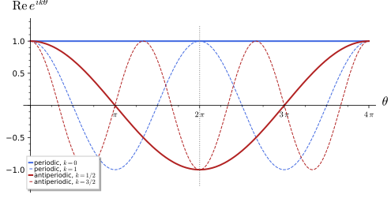
figures/sd-circle-spin-structures.sage.
Definition 8 (Spin structure) Let M be an oriented Riemannian manifold of dimension n and SO(M) \to M the principal SO(n)-bundle of oriented orthonormal frames (Definition 16 of Homogeneous spaces and fibre bundles). A spin structure on M is a principal \mathrm{Spin}(n)-bundle \mathrm{Spin}(M) \to M with a bundle map \chi : \mathrm{Spin}(M) \to SO(M) such that \chi(qS) = \chi(q)\rho(S) for the covering \rho of Equation 9. Equivalently, in an atlas of local orthonormal frames with transition functions \Lambda_{ij} : U_i \cap U_j \to SO(n), it is a choice of lifts S_{ij} with \rho(S_{ij}) = \Lambda_{ij} and S_{ij}S_{jk}S_{ki} = 1. The spinor bundle is the vector bundle \mathrm{Spin}(M) \times_{\mathrm{Spin}(n)} \mathbb{C}^N (Definition 17 of Homogeneous spaces and fibre bundles), and a spinor field is a section of it Trautman (1995, sec. 4.1, eqs. (13)-(14)).
Veriphy. Pending.
Lean. Pending.
Sage. Pending.
Flat space has a global frame, so the frame bundle is a product and one lift suffices. The first example records the consequence: spinor fields on \mathbb{R}^n are just vector-valued functions.
Example 41 (Euclidean space) On \mathbb{R}^n the Cartesian frame \partial_1, \dots, \partial_n trivialises SO(\mathbb{R}^n) = \mathbb{R}^n \times SO(n), and \mathrm{Spin}(\mathbb{R}^n) = \mathbb{R}^n \times \mathrm{Spin}(n) is a spin structure; it is the only one because \mathbb{R}^n is simply connected. Spinor fields are functions \mathbb{R}^n \to \mathbb{C}^N, and a rotation of the coordinates acts on them by \psi(x) \mapsto S\psi(\Lambda^{-1}x) with \rho(S) = \Lambda.
Veriphy. Pending.
Lean. Pending.
Sage. Pending.
The circle is the simplest manifold with more than one spin structure. The second example finds both, following Trautman (1995, sec. 6.1).
Example 42 (The circle) For n = 1, SO(1) is trivial and \mathrm{Spin}(1) = \{\pm1\}, so a spin structure on S^1 is a double cover of S^1: either the trivial cover S^1 \times \{\pm1\} or the connected cover S^1 \to S^1, z \mapsto z^2 Trautman (1995, sec. 6.1). Spinor fields are correspondingly periodic or antiperiodic functions of the angle (Figure 6). The circle as the boundary of the disc in \mathbb{R}^2 inherits the connected one (Exercise 46).
Veriphy. Pending.
Lean. Pending.
Sage. Pending.
A torus is a product of circles, and its spin structures are products of the structures of the circles. The third example counts them.
Example 43 (Tori) T^n = \mathbb{R}^n/2\pi\mathbb{Z}^n has the global frame \partial_1, \dots, \partial_n, and a spin structure is fixed by a sign (-1)^{s_i}, s_i \in \{0, 1\}, for each generator of the lattice: spinor fields satisfy \psi(y + 2\pi e_i) = (-1)^{s_i}\psi(y). There are 2^n spin structures: 4 on T^2, labelled (P, P), (P, A), (A, P), (A, A) with P for periodic and A for antiperiodic. Only (P, \dots, P) admits constant spinor fields.
Veriphy. Pending.
Lean. Pending.
Sage. Pending.
Spheres of dimension at least two are simply connected, so a spin structure, if it exists, is unique. The fourth example shows that it exists by restricting the spin structure of the surrounding Euclidean space.
Example 44 (Spheres) S^n \subset \mathbb{R}^{n + 1}, n \geq 2: an oriented frame of S^n together with the outward normal is an oriented frame of \mathbb{R}^{n + 1}, which embeds SO(S^n) into S^n \times SO(n + 1); the preimage in S^n \times \mathrm{Spin}(n + 1) is a spin structure, and the spinor bundle is trivial, S^n \times \mathbb{C}^{N} with the spinors of \mathbb{R}^{n + 1} or half of them Trautman (1995, sec. 6, Prop. 5). It is the only one since S^n is simply connected.
Veriphy. Pending.
Lean. Pending.
Sage. Pending.
The bounding spin structure of the circle comes from the rotation of the tangent frame as one goes round. The first exercise computes the sign that this rotation produces on spinors.
Exercise 46 (The circle bounds the disc) Along the unit circle in \mathbb{R}^2 the frame (tangent, normal) at angle \theta is the Cartesian frame rotated by \theta. Using Example 26, show that the components of a constant spinor of \mathbb{R}^2 in this frame are e^{\pm i\theta\sigma_3/2}\psi_0 and conclude that the induced spin structure on the circle is the antiperiodic one.
The rotating frame is \Lambda(\theta) applied to the Cartesian one, and the spinor transformation covering it is S(\theta) = e^{i\theta\sigma_3/2} (with one choice of sign convention for components, e^{-i\theta\sigma_3/2} with the other). Components of a fixed spinor in the rotated frame are S(\theta)^{\mp1}\psi_0, which at \theta = 2\pi are -\psi_0: the restriction of the spin structure of \mathbb{R}^2 is the connected double cover, as Trautman (1995, sec. 6.1) states for immersions z \mapsto z^n with n odd.
Veriphy. Pending.
Lean. Pending.
Sage. Pending.
Two spin structures differ by a sign attached to each closed loop, multiplicatively. The second exercise turns this into the count 2^n for tori and into a general statement.
Exercise 47 (Differences of spin structures) Let \{S_{ij}\} and \{S'_{ij}\} be two systems of lifts of the same \Lambda_{ij}. Show that \epsilon_{ij} = S'_{ij}S_{ij}^{-1} \in \{\pm1\} satisfies \epsilon_{ij}\epsilon_{jk}\epsilon_{ki} = 1, and that the structures are equivalent iff \epsilon_{ij} = \delta_i\delta_j for signs \delta_i. For M = T^n, identify \epsilon with the signs (-1)^{s_i} of Example 43.
\rho(S'_{ij}) = \rho(S_{ij}), so \epsilon_{ij} is in the kernel \{\pm1\}, which is central, and the two cocycle conditions give \epsilon_{ij}\epsilon_{jk}\epsilon_{ki} = S'_{ij}S'_{jk}S'_{ki}(S_{ij}S_{jk}S_{ki})^{-1} = 1. Changing the local lifts of the frames by signs \delta_i changes S_{ij} to \delta_iS_{ij}\delta_j. So spin structures differ by \mathbb{Z}_2-valued cocycles modulo coboundaries, the group H^1(M; \mathbb{Z}_2), which assigns a sign to each closed loop; for T^n it is \mathbb{Z}_2^n, one sign per circle, the (-1)^{s_i}.
Veriphy. Pending.
Lean. Pending.
Sage. Pending.
Real projective spaces are the simplest manifolds where the count of spin structures is neither one nor a power of two times one. The third exercise reads off the answers of Trautman (1995, sec. 4.3) and checks them against the classification of the previous exercise.
Exercise 48 (Real projective spaces) Trautman (1995, sec. 4.3) shows that \mathbb{R}P^{4k + 1} has no spin structure and \mathbb{R}P^{4k - 1} has two. Using \pi_1(\mathbb{R}P^m) = \mathbb{Z}_2 (so H^1(\mathbb{R}P^m; \mathbb{Z}_2) = \mathbb{Z}_2), explain why the count is two whenever it is not zero. Which of \mathbb{R}P^3, \mathbb{R}P^5, \mathbb{R}P^7 admit spin structures, and how many?
By Exercise 47, once one spin structure exists the others are in bijection with H^1(\mathbb{R}P^m; \mathbb{Z}_2) = \mathbb{Z}_2: exactly two. \mathbb{R}P^3 (4k - 1 with k = 1) and \mathbb{R}P^7 (k = 2) have two each; \mathbb{R}P^5 (4k + 1 with k = 1) has none. Since \mathbb{R}P^3 = SO(3) is a Lie group, it also has the spin structure induced by a left-invariant frame, one of the two.
Veriphy. Pending.
Lean. Pending.
Sage. Pending.
The cocycle condition S_{ij}S_{jk}S_{ki} = 1 may fail for every choice of lifts. The theorem names the obstruction, a cohomology class built from the transition functions of the frame bundle; Trautman (1995, sec. 4.1, Sec. 6.1) uses it through the Stiefel-Whitney classes.
Theorem 3 (Existence of spin structures) An oriented Riemannian manifold M admits a spin structure if and only if its second Stiefel-Whitney class w_2(M) \in H^2(M; \mathbb{Z}_2), the class of the \pm1-valued cocycle S_{ij}S_{jk}S_{ki} for arbitrary lifts, vanishes. The spin structures of a spin manifold are then in bijection with H^1(M; \mathbb{Z}_2). For a complex manifold w_2 is the reduction modulo 2 of the first Chern class c_1 Trautman (1995, sec. 4.1 and Sec. 6.1), Dolan (2003, sec. 2, example iii).
Veriphy. Pending.
Lean. Pending.
Sage. Pending.
Surfaces are the first test. The first example shows that every closed oriented surface is spin and counts its spin structures.
Example 45 (Surfaces) A closed oriented surface \Sigma_g of genus g is a complex curve with c_1 = \chi(\Sigma_g) = 2 - 2g times the generator, an even number, so w_2 = 0: every closed oriented surface is spin. H^1(\Sigma_g; \mathbb{Z}_2) = \mathbb{Z}_2^{2g}, so there are 2^{2g} spin structures: one on S^2, four on T^2 (Example 43), sixteen on a surface of genus two.
Veriphy. Pending.
Lean. Pending.
Sage. Pending.
The complex projective plane is the standard example of a manifold without a spin structure. The second example shows this from its first Chern class.
Example 46 (CP^2 is not spin) The total Chern class of CP^m is c(TCP^m) = (1 + x)^{m + 1} with x the generator of H^2(CP^m; \mathbb{Z}) Aspinwall (1996, eq. (10)), so c_1 = (m + 1)x. For CP^2, c_1 = 3x and w_2 = x \bmod 2 \neq 0: CP^2 has no spin structure, although it is a compact simply connected Kähler manifold Dolan (2003, sec. 2, example iii). CP^1 = S^2 (c_1 = 2x) and CP^3 (c_1 = 4x) are spin.
Veriphy. Pending.
Lean. Pending.
Sage. Pending.
Calabi-Yau manifolds have vanishing first Chern class by definition. The third example concludes that they are spin, a fact used when their parallel spinors are counted.
Example 47 (Calabi-Yau manifolds and K3) A Calabi-Yau manifold is a compact Kähler manifold with c_1 = 0 (Greene (1997, sec. 2.11)), so w_2 = 0 and it is spin. The K3 surface is simply connected Aspinwall (1996, eq. (13)), so its spin structure is unique; the quintic threefold in CP^4 is simply connected as well and also has a unique spin structure.
Veriphy. Pending.
Lean. Pending.
Sage. Pending.
The first Chern class of CP^m decides its spin structure for every m. The first exercise works out the pattern.
Exercise 49 (Which CP^m are spin) Using c_1(CP^m) = (m + 1)x, show that CP^m is spin if and only if m is odd. For the spin cases, how many spin structures are there?
w_2 = (m + 1)x \bmod 2 vanishes iff m + 1 is even. CP^m is simply connected, so H^1(CP^m; \mathbb{Z}_2) = 0 and the spin structure of CP^1, CP^3, CP^5, \dots is unique by Theorem 3.
Veriphy. Pending.
Lean. Pending.
Sage. Pending.
Spin structures behave well under products. The second exercise shows this and counts the spin structures of products of spheres and tori.
Exercise 50 (Products) Show that M \times N is spin when M and N are, using SO(M \times N) \supset SO(M) \times SO(N) and the homomorphism \mathrm{Spin}(m) \times \mathrm{Spin}(n) \to \mathrm{Spin}(m + n) given by Proposition 4. How many spin structures do S^2 \times T^2, S^3 \times S^1 and T^6 have?
Lifts S^M_{ij} and S^N_{ij} with trivial cocycles give lifts S^M_{ij} \otimes S^N_{ij} of the product frames, again with trivial cocycle (the product map sends (-1, -1) to 1, so the construction is consistent). H^1 of a product of connected spaces is H^1(M) \oplus H^1(N) here: S^2 \times T^2 has 2^2 = 4, S^3 \times S^1 has 2, T^6 has 2^6 = 64.
Veriphy. Pending.
Lean. Pending.
Sage. Pending.
The second Stiefel-Whitney class of a surface can also be computed from the Euler characteristic directly. The third exercise checks Example 45 on the sphere with the cocycle of two hemispheres.
Exercise 51 (The sphere from two hemispheres) Cover S^2 by the two hemispheres with the frames obtained by stereographic projection. The transition function on the equator is a rotation by 2\theta at the point of angle \theta (the tangent bundle of S^2 has clutching function of winding number \chi(S^2) = 2), a loop of winding number 2 in SO(2). Show that it lifts to a loop in \mathrm{Spin}(2), so that S_{12}S_{21} = 1 can be arranged, and that a winding number 1 would not lift.
Under \rho : z \mapsto z^2 (Example 26), the loop e^{2i\theta} in SO(2) = U(1) lifts to the closed loop e^{i\theta}, 0 \leq \theta \leq 2\pi, while e^{i\theta} lifts only to the open path e^{i\theta/2}, which ends at -1. Hence the transition function of S^2 lifts consistently and w_2(S^2) = 0; the winding number is the Euler characteristic \chi(S^2) = 2, and the obstruction is its parity.
Veriphy. Pending.
Lean. Pending.
Sage. Pending.
The spin connection
A spinor field that is constant in Cartesian coordinates has varying components in a rotating frame, and the spin connection is the correction that makes its covariant derivative vanish. The figure shows the holonomy it produces around a circle of latitude on the sphere, half the holonomy of vectors.
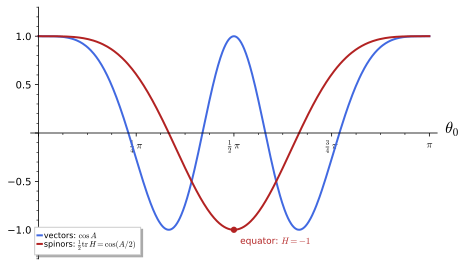
figures/sd-spinor-holonomy.sage.
Definition 9 (Spin connection) Let e_a be a local orthonormal frame with dual coframe e^a, and let \omega^a{}_b be the Levi-Civita connection one-forms in this frame, \nabla_Xe_b = \omega^a{}_b(X)e_a (the Ricci rotation coefficients of Zhelnorovich (2019, sec. 2.2.1, eqs. (2.26), (2.35))), so that \omega_{ab} = -\omega_{ba} and de^a + \omega^a{}_b \wedge e^b = 0. The spin connection is the covariant derivative of spinor fields \nabla_X\psi = X(\psi) + \tfrac14\omega_{ab}(X)\gamma^a\gamma^b\psi , \tag{12} in the frame components \psi of the spinor field Zhelnorovich (2019, eqs. (2.56), (2.68)). Under a change of frame e'_a = e_b\Lambda^b{}_a(x) with lift S(x), it transforms covariantly Zhelnorovich (2019, eqs. (2.61), (2.65)).
Veriphy. Pending.
Lean. Pending.
Sage. Pending.
In polar coordinates the flat plane already has a non-zero spin connection, because the polar frame rotates. The first example computes it and the components of a constant spinor.
Example 48 (The plane in polar coordinates) For e^1 = dr, e^2 = r\,d\theta, de^2 = dr \wedge d\theta forces \omega^2{}_1 = d\theta, \omega_{12} = -d\theta. With \gamma^1 = \sigma_1, \gamma^2 = \sigma_2, \gamma^1\gamma^2 = i\sigma_3, so \nabla_r = \partial_r and \nabla_\theta = \partial_\theta - \tfrac{i}{2}\sigma_3. A spinor that is constant in Cartesian coordinates has polar components \psi(\theta) = e^{i\theta\sigma_3/2}\psi_0, which satisfy \nabla_\theta\psi = 0 and are antiperiodic in \theta, as in Exercise 46.
Veriphy. Pending.
Lean. Pending.
Sage. Pending.
The round sphere is the running example. The second example computes its spin connection in the frame of the polar coordinates, the frame used for its Dirac operator later in the chapter.
Example 49 (The sphere) For the unit sphere with e^1 = d\theta, e^2 = \sin\theta\,d\varphi, de^2 = \cos\theta\,d\theta \wedge d\varphi gives \omega^2{}_1 = \cos\theta\,d\varphi and \omega_{12} = -\cos\theta\,d\varphi (the Christoffel symbols of Proposition 20 of Differential geometry in the frame). Hence \nabla_\theta = \partial_\theta, \qquad \nabla_\varphi = \partial_\varphi - \tfrac{i}{2}\cos\theta\,\sigma_3 . \tag{13} Near the poles the frame (e_\theta, e_\varphi) is the polar frame of Example 48, so the frame components of smooth spinor fields are antiperiodic in \varphi. Parallel transport around the latitude \theta = \theta_0 solves \partial_\varphi\psi = \tfrac{i}{2}\cos\theta_0\,\sigma_3\psi; including the sign from the antiperiodicity, the holonomy is H = -e^{i\pi\cos\theta_0\sigma_3} = e^{-iA\sigma_3/2} with A = 2\pi(1 - \cos\theta_0) (Figure 7).
Veriphy. Pending.
Lean. Pending.
Sage. Pending.
Changing the frame by a rotation that depends on the point changes the connection by a derivative term, like a gauge transformation. The third example works it out in two dimensions, where the spin connection is an abelian gauge field.
Example 50 (Changing the frame in two dimensions) In two dimensions \omega_{12} is a single one-form and \nabla = d - \tfrac{i}{2}\omega_{12}\sigma_3 up to the identification \gamma^1\gamma^2 = i\sigma_3, a U(1) connection acting with charges \pm\tfrac12 on the two components. Rotating the frame by an angle \alpha(x) changes \omega_{12} to \omega_{12} - d\alpha and the components to e^{\pm i\alpha\sigma_3/2}\psi, the gauge transformation of charge \tfrac12 Zhelnorovich (2019, eq. (2.61)). From the Cartesian frame to the polar frame of Example 48, \alpha = \theta and \omega_{12} = 0 - d\theta.
Veriphy. Pending.
Lean. Pending.
Sage. Pending.
The connection forms can be computed from a coframe by the structure equations or from the Christoffel symbols. The first exercise does the latter for the sphere and confirms Equation 13.
Exercise 52 (The spin connection of the sphere from the Christoffel symbols) With Sage, compute \omega_{ab\mu} = e_a{}^\nu(\partial_\mu e_{b\nu} - \Gamma^\lambda{}_{\mu\nu}e_{b\lambda}) for the unit sphere with the frame e_1 = \partial_\theta, e_2 = \sin^{-1}\theta\,\partial_\varphi, and check de^a + \omega^a{}_b \wedge e^b = 0.
The only non-zero component is \omega_{12\varphi} = -\cos\theta = -\omega_{21\varphi}, and the structure equations hold:
th, ph = var("th ph")
X = [th, ph]
g = diagonal_matrix(SR, [1, sin(th) ^ 2]); gi = g.inverse()
Gam = [[[sum(gi[l, s] * (diff(g[s, m], X[n]) + diff(g[s, n], X[m]) - diff(g[m, n], X[s])) / 2 for s in range(2)).simplify_full()
for n in range(2)] for m in range(2)] for l in range(2)]
E = matrix(SR, [[1, 0], [0, 1 / sin(th)]]) # E[a, mu] = e_a^mu
Elow = (E * g) # e_{a nu} = e_a^mu g_{mu nu}
def omega(a, b, mu):
return sum(E[a, nu] * (diff(Elow[b, nu], X[mu]) - sum(Gam[l][mu][nu] * Elow[b, l] for l in range(2))) for nu in range(2)).simplify_full()
for a in range(2):
for b in range(2):
print("omega_{%d%d} = (%s) dtheta + (%s) dphi" % (a + 1, b + 1, omega(a, b, 0), omega(a, b, 1)))
# structure equations d e^a + omega^a_b ^ e^b = 0 with coframe e^1 = dtheta, e^2 = sin(theta) dphi:
# the dtheta ^ dphi component of omega^a_b ^ e^b is omega_ab,theta e^b_phi - omega_ab,phi e^b_theta
cof = matrix(SR, [[1, 0], [0, sin(th)]]) # cof[a, mu] = e^a_mu
de = [0, diff(sin(th), th)] # d e^a = de[a] dtheta ^ dphi
res = [(de[a] + sum(omega(a, b, 0) * cof[b, 1] - omega(a, b, 1) * cof[b, 0] for b in range(2))).simplify_full() for a in range(2)]
print("d e^a + omega^a_b ^ e^b (coefficient of dtheta ^ dphi):", res)Output:
omega_{11} = (0) dtheta + (0) dphi
omega_{12} = (0) dtheta + (-cos(th)) dphi
omega_{21} = (0) dtheta + (cos(th)) dphi
omega_{22} = (0) dtheta + (0) dphi
d e^a + omega^a_b ^ e^b (coefficient of dtheta ^ dphi): [0, 0]Veriphy. Pending.
Lean. Pending.
Sage. Pending.
The spin connection is designed so that Clifford multiplication by a vector field obeys the Leibniz rule. The second exercise proves this from the first relation of Equation 10.
Exercise 53 (Compatibility with Clifford multiplication) For a vector field Y = Y^ae_a write Y\cdot\psi = Y^a\gamma_a\psi. Show that \nabla_X(Y\cdot\psi) = (\nabla_XY)\cdot \psi + Y\cdot\nabla_X\psi, using [\tfrac14\omega_{ab}\gamma^a\gamma^b, \gamma_c] = \omega_{ac}\gamma^a (with \omega = \omega(X)).
\nabla_X(Y^a\gamma_a\psi) = X(Y^a)\gamma_a\psi + Y^a\gamma_aX(\psi) + Y^a\tfrac14\omega_{bc}\gamma^b\gamma^c\gamma_a\psi. Moving \gamma_a to the left produces the commutator [\tfrac14\omega_{bc}\gamma^b\gamma^c, \gamma_a] = \omega_{ba}\gamma^b (Proposition 2, with \tfrac14\omega_{bc}\gamma^b\gamma^c = \tfrac12\omega_{bc}\Sigma^{bc}). So the right side is (X(Y^a) + \omega^a{}_bY^b)\gamma_a\psi + Y^a\gamma_a\nabla_X\psi, and X(Y^a) + \omega^a{}_b(X)Y^b are the components of \nabla_XY.
Veriphy. Pending.
Lean. Pending.
Sage. Pending.
The claim that a constant Cartesian spinor has polar components e^{i\theta\sigma_3/2}\psi_0 can be checked symbolically. The third exercise does so and also transports a spinor around the circle r = 1.
Exercise 54 (Constant spinors in polar coordinates) With Sage, check that \psi(\theta) = e^{i\theta\sigma_3/2}\psi_0 satisfies \nabla_\theta\psi = 0 for the connection of Example 48, that \psi(2\pi) = -\psi(0), and that the holonomy around the circle r = 1, including the sign from the antiperiodic components, is trivial, in agreement with the flatness of the plane.
\partial_\theta\psi = \tfrac{i}{2}\sigma_3\psi, so \nabla_\theta\psi = 0; the components change sign after one turn, and the antiperiodicity of the frame components cancels this sign, so the true holonomy is 1:
th = var("th"); a, b = var("a b")
s3 = matrix(SR, [[1, 0], [0, -1]])
U = matrix(SR, [[exp(I * th / 2), 0], [0, exp(-I * th / 2)]])
psi = U * vector(SR, [a, b])
nabla = lambda p: vector(SR, [diff(c, th) for c in p]) - I / 2 * s3 * p
print("nabla_theta psi =", nabla(psi).simplify_full())
print("psi(2 pi) = -psi(0):", bool(psi.subs(th=2 * pi) == -psi.subs(th=0)))
print("holonomy (transport times the sign of the antiperiodic frame components):", (-U.subs(th=2 * pi)).simplify_full())Output:
nabla_theta psi = (0, 0)
psi(2 pi) = -psi(0): True
holonomy (transport times the sign of the antiperiodic frame components): [1 0]
[0 1]Veriphy. Pending.
Lean. Pending.
Sage. Pending.
The commutator of two spinor covariant derivatives is given by the Riemann tensor contracted with the generators \Sigma^{ab}. Contracting once more with gamma matrices gives the scalar curvature, the identity behind the Lichnerowicz formula of the next part.
Proposition 5 (Curvature of the spin connection) For vector fields X, Y and the curvature two-forms R^a{}_b = d\omega^a{}_b + \omega^a{}_c \wedge \omega^c{}_b (the Riemann tensor R^a{}_{bcd} of Definition 63 of Differential geometry in the frame), (\nabla_X\nabla_Y - \nabla_Y\nabla_X - \nabla_{[X, Y]})\psi = \tfrac14R_{ab}(X, Y)\gamma^a\gamma^b\psi , \qquad \gamma^c\gamma^d R(e_c, e_d)\psi = -\tfrac12R\,\psi , \tag{14} with R(e_c, e_d) = \nabla_{e_c}\nabla_{e_d} - \nabla_{e_d}\nabla_{e_c} - \nabla_{[e_c, e_d]} and R the scalar curvature (positive on spheres) Dolan (2003, eq. (4)), Zhelnorovich (2019, sec. 2.3).
Veriphy. Pending.
Lean. Pending.
Sage. Pending.
On the sphere the curvature two-form is the area form. The first example checks both formulas of Equation 14 in the frame of Example 49.
Example 51 (The sphere) From Equation 13, [\nabla_\theta, \nabla_\varphi] = \partial_\theta(-\tfrac{i}{2}\cos\theta\,\sigma_3) = \tfrac{i}{2}\sin\theta\,\sigma_3, while R^1{}_2 = d(-\cos\theta\,d\varphi) = \sin\theta\,d\theta \wedge d\varphi gives \tfrac14(R_{12} - R_{21})\gamma^1\gamma^2 = \tfrac12\sin\theta\cdot i\sigma_3, the same. In the frame, R(e_1, e_2) = \tfrac{i}{2}\sigma_3, and \gamma^c\gamma^dR(e_c, e_d) = 2\sigma_1\sigma_2\cdot\tfrac{i}{2}\sigma_3 = -1 = -\tfrac12R with R = 2.
Veriphy. Pending.
Lean. Pending.
Sage. Pending.
The curvature generates the holonomy of small loops. The second example confirms this on the sphere: for a small cap the holonomy is the exponential of the curvature times the area.
Example 52 (Holonomy and curvature) For the latitude \theta = \theta_0 the holonomy of Example 49 is \exp(-\tfrac{i}{2}A\sigma_3), and -\tfrac{i}{2}A\sigma_3 = -\int_{\text{cap}}\tfrac14R_{ab}\gamma^a\gamma^b since \tfrac14R_{ab}\gamma^a\gamma^b = \tfrac{i}{2}\sigma_3\,\text{area form} and the cap has area A. The sign reflects the orientation of the loop, and the factor \tfrac12 relative to vectors is the factor \tfrac12 in \Sigma^{ab}.
Veriphy. Pending.
Lean. Pending.
Sage. Pending.
Spaces of constant curvature have the simplest spinor curvature. The third example evaluates it on the round spheres of any dimension, which the computation of their Dirac spectrum uses.
Example 53 (Constant curvature) On the unit sphere S^n, R_{abcd} = \delta_{ac}\delta_{bd} - \delta_{ad}\delta_{bc}, so R(e_c, e_d)\psi = \tfrac14(\gamma^c\gamma^d - \gamma^d\gamma^c)\psi = \tfrac12\gamma^c\gamma^d\psi for c \neq d. Then \gamma^c\gamma^d R(e_c, e_d) = \tfrac12\sum_{c \neq d}\gamma^c\gamma^d\gamma^c\gamma^d = -\tfrac12n(n - 1), which is -\tfrac12R with R = n(n - 1) (Proposition 26 of Differential geometry for n = 2).
Veriphy. Pending.
Lean. Pending.
Sage. Pending.
The first formula follows from Equation 12 and the commutation relations of the \Sigma^{ab}. The first exercise asks for the computation.
Exercise 55 (Deriving the curvature) Write \nabla = d + \Omega with \Omega = \tfrac12\omega_{ab}\Sigma^{ab}. Show that the curvature is d\Omega + \Omega \wedge \Omega and, using the second relation of Equation 10, that \Omega \wedge \Omega = \tfrac14(\omega_{ac} \wedge \omega^c{}_b)\gamma^a\gamma^b; conclude the first formula of Equation 14.
(\nabla_X\nabla_Y - \nabla_Y\nabla_X - \nabla_{[X, Y]})\psi = (d\Omega + \Omega \wedge \Omega)(X, Y)\psi as for any connection of the form d + \Omega. \Omega \wedge \Omega = \tfrac14\omega_{ab} \wedge \omega_{cd}\Sigma^{ab}\Sigma^{cd} = \tfrac18\omega_{ab} \wedge \omega_{cd}[\Sigma^{ab}, \Sigma^{cd}] (the wedge of one-forms is antisymmetric), and the four terms of Equation 10 combine into \tfrac12\omega_{ac} \wedge \omega^c{}_b\Sigma^{ab}. With d\Omega = \tfrac12d\omega_{ab}\Sigma^{ab} this is \tfrac12R_{ab}\Sigma^{ab} = \tfrac14R_{ab}\gamma^a\gamma^b.
Veriphy. Pending.
Lean. Pending.
Sage. Pending.
The contraction to the scalar curvature uses the first Bianchi identity. The second exercise carries it out and fixes the sign with the sphere.
Exercise 56 (The contraction) Using \gamma^c\gamma^d\gamma^a\gamma^b and the Bianchi identity R_{a[bcd]} = 0, show that \tfrac14R_{abcd}\gamma^c \gamma^d\gamma^a\gamma^b = -\tfrac12R, where R_{abcd} = R_{ab}(e_c, e_d) and R = R^{ca}{}_{ca} in the sign convention of Connection and curvature.
By the pair symmetry R_{abcd} = R_{cdab} the expression is \tfrac14\gamma^c(R_{cdab}\gamma^d\gamma^a\gamma^b). Write \gamma^d\gamma^a\gamma^b = \gamma^{[dab]} + \eta^{da}\gamma^b - \eta^{db}\gamma^a + \eta^{ab}\gamma^d. The totally antisymmetric part is killed by the Bianchi identity R_{c[dab]} = 0, and the last term by the antisymmetry of R_{cdab} in a, b. The two middle terms give 2R_{cd}{}^{d}{}_{b}\gamma^b, a contraction of the Riemann tensor, that is \pm2\operatorname{Ric}_{cb}\gamma^b. Contracting with \gamma^c, only the symmetric part \eta^{cb} of \gamma^c\gamma^b survives, because the Ricci tensor is symmetric, and the result is \pm\tfrac12R; the sphere (Example 51) fixes the sign to -\tfrac12R.
Veriphy. Pending.
Lean. Pending.
Sage. Pending.
The holonomy formula of Example 49 was obtained by solving a differential equation. The third exercise checks it numerically and compares with the curvature integral.
Exercise 57 (Holonomy around latitudes) With Sage, solve \partial_\varphi\psi = \tfrac{i}{2}\cos\theta_0\,\sigma_3\psi numerically for \theta_0 = 0.3, 1.0, \pi/2, 2.5, multiply by -1 for the antiperiodicity, and compare with \exp(-\tfrac{i}{2}A\sigma_3), A = 2\pi(1 - \cos\theta_0). Compute also \int_{\text{cap}}\tfrac12R_{12}.
The numerical holonomy agrees with the formula to the integration tolerance, and \int_{\text{cap}}\tfrac12R_{12} = \tfrac12A:
import numpy as np
from scipy.integrate import solve_ivp
for th0 in (0.3, 1.0, float(pi / 2), 2.5):
f = lambda phi, y: [0.5j * np.cos(th0) * y[0], -0.5j * np.cos(th0) * y[1]]
sol = solve_ivp(f, [0, 2 * np.pi], [1 + 0j, 1 + 0j], rtol=1e-11, atol=1e-12)
H = (-sol.y[0, -1], -sol.y[1, -1]); A = 2 * np.pi * (1 - np.cos(th0))
print("theta_0 = %.4f: H = diag(%s, %s); exp(-iA/2) = %s; error %.1e" % (th0, np.round(H[0], 8), np.round(H[1], 8), np.round(np.exp(-0.5j * A), 8), abs(H[0] - np.exp(-0.5j * A)) + abs(H[1] - np.exp(0.5j * A))))
t, t0 = var("t t0")
print("int over the cap of (1/2) R_12 = (1/2) int_0^t0 int_0^2pi sin(t) dphi dt =", (integrate(sin(t), t, 0, t0, algorithm="sympy") * 2 * pi / 2).simplify_full())Output:
theta_0 = 0.3000: H = diag((0.99017205-0.13985459j), (0.99017205+0.13985459j)); exp(-iA/2) = (0.99017205-0.13985459j); error 1.3e-11
theta_0 = 1.0000: H = diag((0.12627541-0.99199522j), (0.12627541+0.99199522j)); exp(-iA/2) = (0.12627541-0.99199522j); error 7.5e-12
theta_0 = 1.5708: H = diag((-1-0j), (-1+0j)); exp(-iA/2) = (-1-0j); error 7.5e-16
theta_0 = 2.5000: H = diag((0.81112355+0.58487485j), (0.81112355-0.58487485j)); exp(-iA/2) = (0.81112355+0.58487485j); error 1.1e-11
int over the cap of (1/2) R_12 = (1/2) int_0^t0 int_0^2pi sin(t) dphi dt = pi - pi*cos(t0)Veriphy. Pending.
Lean. Pending.
Sage. Pending.
Spin-c structures
When the second Stiefel-Whitney class does not vanish, the sign ambiguity of spinors can be compensated by the sign ambiguity of the square root of a line bundle. The figure shows the index of the resulting Dirac operators on CP^2 for each charge, which is computed later in the chapter.
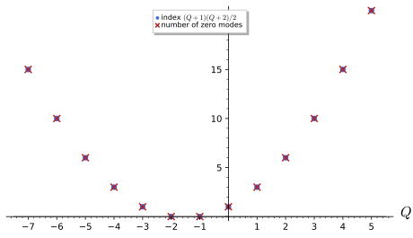
figures/sd-cp2-index.sage.
Definition 10 (Spin-c structure) The group \mathrm{Spin}^c(n) = (\mathrm{Spin}(n) \times U(1))/\{\pm(1, 1)\} covers SO(n) \times U(1) by [S, z] \mapsto (\rho(S), z^2). A spin-c structure on an oriented Riemannian manifold M with a complex line bundle L (the determinant line) is a lift of SO(M) \times_M U(L) to a principal \mathrm{Spin}^c(n)-bundle; locally it is a choice of lifts S_{ij} of the frame transitions and square roots z_{ij} of the transition functions of L with S_{ij}S_{jk}S_{ki}\,z_{ij}z_{jk}z_{ki} = 1. Spinor fields are sections of the twisted bundle “S \otimes L^{1/2}”, which exists although neither factor does; a connection on L adds \tfrac12A_L to Equation 12 Dolan (2003, sec. 2, example iii).
Veriphy. Pending.
Lean. Pending.
Sage. Pending.
On a spin manifold spin-c structures are spin structures twisted by line bundles. The first example makes this precise on the sphere, where it describes spinors in a magnetic monopole field.
Example 54 (Spin-c structures on S^2) S^2 is spin, so the sign cocycles S_{ij}S_{jk}S_{ki} can be made trivial and the z_{ij} must then form a cocycle themselves: L^{1/2} = N is an honest line bundle and L = N^2. The spin-c spinors are spinors with values in N, with c_1(N) = m \in \mathbb{Z}, and L has even degree 2m: spinors of charge one in the monopole field of charge m (Definition 24 of Homogeneous spaces and fibre bundles).
Veriphy. Pending.
Lean. Pending.
Sage. Pending.
On CP^2 the sign cocycle is non-trivial, so L must have odd degree to cancel it. The second example lists the choices and the one of Dolan (2003) that has a single zero mode.
Example 55 (Spin-c structures on CP^2) On CP^2, w_2 = x \bmod 2 (Example 46), so a spin-c structure needs c_1(L) \equiv x \pmod 2: L = \mathcal{O}(k) with k odd. Writing k = 2Q + 3, the choice Q = 0, L = \mathcal{O}(3) = K^{-1}, is the canonical spin-c structure of the Kähler manifold CP^2, for which “the spin exactly cancels the monopole charge” and the Dirac operator has exactly one zero mode Dolan (2003, eqs. (55)-(56)) (Figure 8).
Veriphy. Pending.
Lean. Pending.
Sage. Pending.
Every Kähler manifold carries a canonical spin-c structure whose spinors are forms. The third example describes it; it turns the Dirac operator into the Dolbeault operator in a later section.
Example 56 (The canonical spin-c structure of a Kähler manifold) On a Kähler manifold of complex dimension m the holonomy lies in U(m) \subset SO(2m) Aspinwall (1996, sec. 2.2), and U(m) lifts to \mathrm{Spin}^c(2m). The spinor bundle is \Lambda^{0, \bullet} = \bigoplus_q\Lambda^{0, q}, the forms of type (0, q), with determinant line K^{-1}, K = \Lambda^{m, 0} the canonical bundle; the two chiralities are the forms of even and of odd degree. When K has a square root the manifold is spin and S = \Lambda^{0, \bullet} \otimes K^{1/2}.
Veriphy. Pending.
Lean. Pending.
Sage. Pending.
The zero-mode counts of Figure 8 were obtained by Dolan (2003) from representation theory and compared with the index. The first exercise reproduces the comparison.
Exercise 58 (Index and zero modes on CP^2) With Sage, tabulate (Q + 1)(Q + 2)/2 for Q = -7, \dots, 5 and the zero-mode numbers (|Y| + 2)(|Y| + 4)/8 of Dolan (2003, eq. (55)) with Y = 2Q for Q \geq 0 and Y = 2Q + 6 for Q \leq -3. Check that they agree and that the index vanishes for Q = -1, -2.
The two columns agree for every Q, and the index is 0 exactly at Q = -1, -2, where Dolan (2003) finds no zero modes:
print(" Q index zero modes")
for Q in range(-7, 6):
ind = (Q + 1) * (Q + 2) / 2
if Q in (-1, -2):
zm = 0
else:
Y = 2 * Q if Q >= 0 else 2 * Q + 6
zm = (abs(Y) + 2) * (abs(Y) + 4) / 8
print("%3d %5s %10s %s" % (Q, ind, zm, "agree" if zm == abs(ind) else "DIFFER"))Output:
Q index zero modes
-7 15 15 agree
-6 10 10 agree
-5 6 6 agree
-4 3 3 agree
-3 1 1 agree
-2 0 0 agree
-1 0 0 agree
0 1 1 agree
1 3 3 agree
2 6 6 agree
3 10 10 agree
4 15 15 agree
5 21 21 agreeVeriphy. Pending.
Lean. Pending.
Sage. Pending.
The cancellation of signs in the definition is the whole content of a spin-c structure. The second exercise checks it on the cocycles.
Exercise 59 (Cancelling signs) Let s_{ijk} = S_{ij}S_{jk}S_{ki} \in \{\pm1\} be the sign cocycle of arbitrary lifts (representing w_2) and t_{ijk} = z_{ij}z_{jk}z_{ki} for arbitrary square roots z_{ij} of the transition functions g_{ij} of L. Show that t_{ijk} \in \{\pm1\}, that it represents c_1(L) \bmod 2, and that a spin-c structure exists iff the classes of s and t agree.
t_{ijk}^2 = g_{ij}g_{jk}g_{ki} = 1, so t_{ijk} = \pm1; changing the square roots changes t by a coboundary, and t is the obstruction to a square root of L, which is c_1(L) \bmod 2. The product [S_{ij}, z_{ij}] is a cocycle in \mathrm{Spin}^c iff s_{ijk}t_{ijk} = 1 after a change of lifts, that is iff [s] = [t]: w_2(M) = c_1(L) \bmod 2.
Veriphy. Pending.
Lean. Pending.
Sage. Pending.
The canonical spin-c structure of Example 56 can be compared with the spin structure on a spin Kähler manifold. The third exercise does this on CP^1 = S^2.
Exercise 60 (CP^1 from both sides) On CP^1, K = \mathcal{O}(-2). Show that \Lambda^{0, \bullet} = (\Lambda^{0, 0} \oplus \Lambda^{0, 1}) = \mathcal{O} \oplus \mathcal{O}(2) (as smooth line bundles, \Lambda^{0, 1} \cong \overline{K} \cong K^{-1}) and S = \Lambda^{0, \bullet} \otimes K^{1/2} = \mathcal{O}(-1) \oplus \mathcal{O}(1). Interpret the charges \mp1 as the charges \mp\tfrac12 of Example 32 measured in units of the generator of H^2 in the frame bundle.
\Lambda^{0, 1} is spanned by d\bar z, which transforms like \overline{dz}, so \Lambda^{0, 1} \cong \overline{K}, and for a line bundle \overline{K} \cong K^{-1} with a Hermitian metric: \mathcal{O}(2). Tensoring with K^{1/2} = \mathcal{O}(-1) gives \mathcal{O}(-1) \oplus \mathcal{O}(1). The tangent bundle of CP^1 is \mathcal{O}(2) = K^{-1}, a rotation of the frame by \alpha acts on it by e^{i\alpha} and on the two Weyl spinors by e^{\mp i\alpha/2} (Example 32): they are the line bundles of degree \mp\tfrac12\cdot2 = \mp1.
Veriphy. Pending.
Lean. Pending.
Sage. Pending.
Exercises
The exercises of this part combine spin structures, the spin connection and spin-c structures. They prepare the Dirac operator of the next part, which is built from the spin connection and whose spectrum depends on the spin structure.
The equator of the sphere inherits a spin structure from the sphere and another from the plane. The first integrative exercise compares the two through the holonomy.
Exercise 61 (The structure induced on the equator) Show that the spin structure of S^2 restricted to the equator is the antiperiodic structure of the circle, using the holonomy H = -1 of Figure 7 for a spinor transported along the equator (a geodesic, along which the tangent frame is parallel).
On the equator \omega_{12}(\partial_\varphi) = -\cos\tfrac\pi2 = 0: the frame (e_\theta, e_\varphi), normal and tangent to the equator, is parallel along it, so a parallel spinor has constant frame components. The holonomy H = -1 says that these constant components describe a spinor that comes back to its negative; equivalently, smooth spinor fields of S^2 have antiperiodic components in the tangent-normal frame of the equator. That is the definition of the antiperiodic spin structure on the circle, the one that bounds the hemisphere, consistent with Exercise 46.
Veriphy. Pending.
Lean. Pending.
Sage. Pending.
Flat tori have vanishing spin connection in the coordinate frame, so all the information is in the spin structure. The second integrative exercise finds the parallel spinors for each structure.
Exercise 62 (Parallel spinors on flat tori) On T^n with the flat metric and the frame \partial_i, show that \omega = 0 and that the parallel spinor fields are the constant ones. Using Example 43, show that the dimension of the space of parallel spinors is 2^{\lfloor n/2\rfloor} for the periodic structure and 0 for the other 2^n - 1.
de^i = d(dy^i) = 0 with \omega = 0 solves the structure equations, so \nabla_i = \partial_i and parallel means constant. A constant non-zero field satisfies \psi(y + 2\pi e_i) = (-1)^{s_i}\psi(y) only if all s_i = 0; then every constant vector of \mathbb{C}^N, N = 2^{\lfloor n/2\rfloor}, is allowed.
Veriphy. Pending.
Lean. Pending.
Sage. Pending.
Spin-c spinors on CP^2 can be counted by the holomorphic Euler characteristic. The third integrative exercise checks the formula of Figure 8 by the Riemann-Roch computation with the Todd class.
Exercise 63 (Riemann-Roch on CP^2) With Sage, expand e^{Qx}\big(x/(1 - e^{-x})\big)^3 to second order in x and read off the coefficient of x^2, which is \int_{CP^2}\operatorname{ch}(\mathcal{O}(Q))\operatorname{td}(CP^2) since \int_{CP^2}x^2 = 1. Compare with (Q + 1)(Q + 2)/2.
The coefficient is \tfrac12Q^2 + \tfrac32Q + 1 = \tfrac12(Q + 1)(Q + 2) for every Q: the index of the spin-c Dirac operator of charge Q is the holomorphic Euler characteristic of \mathcal{O}(Q), the identification made precise in Section 1.5:
x, Q = var("x Q")
coef = (exp(Q * x) * (x / (1 - exp(-x))) ** 3).taylor(x, 0, 2).coefficient(x, 2)
print("coefficient of x^2:", coef.expand(), "=", coef.factor())
print("equals (Q+1)(Q+2)/2:", bool(coef == (Q + 1) * (Q + 2) / 2))
print("values for Q = -3..3:", [coef.subs(Q=q) for q in range(-3, 4)])Output:
coefficient of x^2: 1/2*Q^2 + 3/2*Q + 1 = 1/2*(Q + 2)*(Q + 1)
equals (Q+1)(Q+2)/2: True
values for Q = -3..3: [1, 0, 0, 1, 3, 6, 10]Veriphy. Pending.
Lean. Pending.
Sage. Pending.
The Dirac operator on flat spaces and spheres
The Dirac operator is the contraction of the spin connection with the gamma matrices. It is a first-order operator whose square is the Laplacian of the spin connection plus a quarter of the scalar curvature, and this single identity controls its spectrum and its zero modes. This part defines the operator on a Riemannian spin manifold, proves the Lichnerowicz formula with Dolan (2003, eq. (5)) and Camporesi and Higuchi (1995, eq. (5.35)), computes the spectrum on tori for every spin structure and twist, and derives the spectrum on spheres step by step, following Trautman (1995, sec. 8.1) for the algebra and Camporesi and Higuchi (1995, sec. 3 and 5) for the multiplicities. Here the manifold is Riemannian, with positive definite metric and Euclidean gamma matrices \gamma^a\gamma^b + \gamma^b\gamma^a = 2\delta^{ab}, as for the compact factor of a product space (Proposition 4).
The Dirac operator
The Dirac operator multiplies the covariant derivative of a spinor by the gamma matrices and adds up. On flat space its square is minus the Laplacian; on a curved space the curvature enters through the scalar curvature only, and the figure compares the resulting bound with the true smallest eigenvalue on spheres.
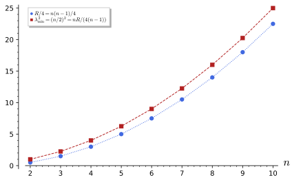
figures/sd-lichnerowicz-bounds.sage.
Definition 11 (Dirac operator) Let M be a Riemannian spin manifold of dimension n with a local orthonormal frame e_a, Hermitian Euclidean gamma matrices \gamma^a and the spin connection Equation 12. The Dirac operator is D = i\gamma^a\nabla_{e_a} = i\gamma^ae_a{}^\mu\Big(\partial_\mu + \tfrac14\omega_{bc\mu}\gamma^b\gamma^c\Big) \tag{15} on spinor fields, independent of the frame. It is formally self-adjoint for \langle\psi, \chi\rangle = \int_M\psi^\dagger \chi\,d\mathrm{vol} on a compact manifold without boundary. For even n, D\gamma_* = -\gamma_*D, so D maps S_\pm to S_\mp and D = \begin{pmatrix} 0 & D^- \\ D^+ & 0 \end{pmatrix} with D^- = (D^+)^\dagger Dolan (2003, eq. (2)), Camporesi and Higuchi (1995, eq. (3.9)).
Veriphy. Pending.
Lean. Pending.
Sage. Pending.
On Euclidean space the connection term is absent and the Dirac operator is a matrix of first derivatives. The first example finds its spectrum on plane waves.
Example 57 (Flat space) On \mathbb{R}^n, D = i\gamma^a\partial_a and D^2 = -\gamma^a\gamma^b\partial_a\partial_b = -\delta^{ab}\partial_a \partial_b = -\Delta. On \psi = e^{ik\cdot x}u, D\psi = -(\gamma^ak_a)\psi, and (\gamma\cdot k)^2 = |k|^2 with \operatorname{tr}(\gamma\cdot k) = 0, so the eigenvalues are \pm|k|, each on half of the N components: the Dirac operator is a square root of -\Delta, as Dirac designed it.
Veriphy. Pending.
Lean. Pending.
Sage. Pending.
In one dimension there is only one gamma matrix, equal to 1, and the Dirac operator is a derivative. The second example connects it with the two spin structures of the circle.
Example 58 (The circle) On the circle of radius R, D = i\,d/dy with y \in [0, 2\pi R). On the periodic spin structure the eigenfunctions are e^{imy/R} with eigenvalues -m/R, m \in \mathbb{Z}, including the zero mode m = 0; on the antiperiodic one they are e^{i(m + 1/2)y/R} with eigenvalues -(m + \tfrac12)/R and no zero mode (Figure 6). The spectrum is symmetric in both cases, although there is no chirality in one dimension.
Veriphy. Pending.
Lean. Pending.
Sage. Pending.
On the sphere the spin connection of Equation 13 contributes a term with \cot\theta. The third example writes the operator in coordinates; it is the operator whose spectrum is computed in Theorem 5.
Example 59 (The sphere in coordinates) With \gamma^1 = \sigma_1, \gamma^2 = \sigma_2, e_1 = \partial_\theta, e_2 = \sin^{-1}\theta\,\partial_\varphi and Equation 13, D = i\Big[\sigma_1\Big(\partial_\theta + \tfrac12\cot\theta\Big) + \frac{\sigma_2}{\sin\theta}\,\partial_\varphi\Big] , \tag{16} because \sigma_2(-\tfrac{i}{2}\cos\theta\,\sigma_3) = \tfrac12\cos\theta\,\sigma_1. The term \tfrac12\cot\theta makes D symmetric for the measure \sin\theta\,d\theta\,d\varphi, and the chirality \gamma_* = -\sigma_3 anticommutes with D.
Veriphy. Pending.
Lean. Pending.
Sage. Pending.
The plane-wave computation of the first example generalises to any dimension. The first exercise checks it in three dimensions with the Pauli matrices.
Exercise 64 (Plane waves) With Sage, apply D = i\sigma_a\partial_a to e^{ik\cdot x}u in \mathbb{R}^3, find the eigenvalues of the resulting matrix and eigenvectors u_\pm, and check D^2 = -\Delta on a general spinor field.
D(e^{ik\cdot x}u) = -(k\cdot\sigma)e^{ik\cdot x}u, with eigenvalues \pm|k|, and D^2 acts on each component as -\Delta:
x1, x2, x3, k1, k2, k3 = var("x1 x2 x3 k1 k2 k3", domain="real")
X = [x1, x2, x3]
s = [matrix(SR, [[0, 1], [1, 0]]), matrix(SR, [[0, -I], [I, 0]]), matrix(SR, [[1, 0], [0, -1]])]
D = lambda p: sum(I * s[a] * p.apply_map(lambda f: diff(f, X[a])) for a in range(3))
u1, u2 = var("u1 u2")
pw = exp(I * (k1 * x1 + k2 * x2 + k3 * x3)) * matrix(SR, 2, 1, [u1, u2])
M = -(k1 * s[0] + k2 * s[1] + k3 * s[2])
print("D(e^{ikx} u) = -(k.sigma) e^{ikx} u:", bool((D(pw) - M * pw).simplify_full() == 0))
print("eigenvalues of -(k.sigma):", M.eigenvalues())
f = function("f")(x1, x2, x3); g = function("g")(x1, x2, x3)
psi = matrix(SR, 2, 1, [f, g])
lap = psi.apply_map(lambda h: sum(diff(h, xx, 2) for xx in X))
print("D^2 psi + Laplacian psi =", (D(D(psi)) + lap).simplify_full().list())Output:
D(e^{ikx} u) = -(k.sigma) e^{ikx} u: True
eigenvalues of -(k.sigma): [-sqrt(k1^2 + k2^2 + k3^2), sqrt(k1^2 + k2^2 + k3^2)]
D^2 psi + Laplacian psi = [0, 0]Veriphy. Pending.
Lean. Pending.
Sage. Pending.
Self-adjointness is what makes the spectrum real. The second exercise proves the symmetry of D by an integration by parts, the only input being that the spin connection is compatible with the inner product.
Exercise 65 (D is symmetric) Show that X(\psi^\dagger\chi) = (\nabla_X\psi)^\dagger\chi + \psi^\dagger\nabla_X\chi (the matrices \tfrac14\omega_{ab} \gamma^a\gamma^b are anti-Hermitian). Deduce that \psi^\dagger D\chi - (D\psi)^\dagger\chi = i\operatorname{div}V for the vector field V^a = \psi^\dagger\gamma^a\chi, and conclude \langle\psi, D\chi\rangle = \langle D\psi, \chi\rangle on a compact manifold without boundary.
For a \neq b, (\gamma^a\gamma^b)^\dagger = \gamma^b\gamma^a = -\gamma^a\gamma^b, so the connection term is anti-Hermitian and the Leibniz rule holds. Then e_a(V^a) = (\nabla_a\psi)^\dagger\gamma^a\chi + \psi^\dagger\gamma^a\nabla_a \chi up to the term with \nabla_ae_a that completes e_a(V^a) to \operatorname{div}V (Exercise 53), and i\operatorname{div}V = \psi^\dagger D\chi - (D\psi)^\dagger\chi because \gamma^a is Hermitian. By the divergence theorem the integral of \operatorname{div}V vanishes.
Veriphy. Pending.
Lean. Pending.
Sage. Pending.
In even dimension the chirality matrix anticommutes with D, which pairs the eigenvalues. The third exercise draws the consequences for the spectrum and the zero modes.
Exercise 66 (Symmetric spectrum) Let n be even. Show that if D\psi = \lambda\psi then D(\gamma_*\psi) = -\lambda\gamma_*\psi, so the spectrum is symmetric with equal multiplicities of \pm\lambda. Show that the kernel splits as \ker D = \ker D^+ \oplus \ker D^- and that the non-zero eigenvalues of D^2 have equal multiplicities on S_+ and S_-.
D\gamma_*\psi = -\gamma_*D\psi = -\lambda\gamma_*\psi, and \gamma_* is invertible, so it maps the \lambda-eigenspace isomorphically onto the (-\lambda)-eigenspace. \gamma_* commutes with D^2, so D\psi = 0 splits into the chiral parts, which are separately zero modes. For \lambda \neq 0, D^+ maps the \lambda^2-eigenspace of D^-D^+ on S_+ injectively into that of D^+D^- on S_-, and D^- maps back: the multiplicities agree.
Veriphy. Pending.
Lean. Pending.
Sage. Pending.
Squaring the Dirac operator gives the Laplacian of the spin connection plus a curvature term, which by Proposition 5 is a multiple of the scalar curvature. The theorem states the formula on which every vanishing theorem and every spectral computation of this chapter rests.
Theorem 4 (Lichnerowicz formula) On a Riemannian spin manifold, D^2 = \nabla^*\nabla + \tfrac14R, \qquad \nabla^*\nabla = -\sum_a\big(\nabla_{e_a}\nabla_{e_a} - \nabla_{\nabla_{e_a}e_a}\big), \tag{17} where \nabla^*\nabla is the Laplacian of the spin connection (the “Dirac Laplacian”), a non-negative operator with \langle\psi, \nabla^*\nabla\psi\rangle = \int|\nabla\psi|^2, and R the scalar curvature Dolan (2003, eq. (5)), Camporesi and Higuchi (1995, eq. (5.35)).
Veriphy. Pending.
Lean. Pending.
Sage. Pending.
On flat space the formula reduces to D^2 = -\Delta. On the sphere it predicts a shift of \tfrac12, which the first example checks with the explicit operator.
Example 60 (The sphere) For the unit sphere, \nabla_{e_1}e_1 = 0 and \nabla_{e_2}e_2 = -\cot\theta\,e_1, so \nabla^*\nabla = -(\nabla_1^2 + \nabla_2^2 + \cot\theta\,\nabla_1) with \nabla_1 = \partial_\theta, \nabla_2 = \sin^{-1}\theta(\partial_\varphi - \tfrac{i}{2}\cos\theta\,\sigma_3). A direct computation with Equation 16 gives D^2 - \nabla^*\nabla = \tfrac12 = \tfrac14R (Exercise 68). In particular D^2 \geq \tfrac12 on S^2, whereas the true smallest eigenvalue of D^2 is 1.
Veriphy. Pending.
Lean. Pending.
Sage. Pending.
The formula also holds with a background gauge field, with an extra term that couples the field strength to the spin. The second example states this form, which is used for the twisted operators of a later part.
Example 61 (With a gauge field) If the spinor also carries a gauge index and \nabla includes an anti-Hermitian gauge potential A with field strength F = dA + A \wedge A, the same computation gives D^2 = \nabla^*\nabla + \tfrac14R - \tfrac12F_{ab}\gamma^a\gamma^b Dolan (2003, eq. (5)): the term \tfrac12[\nabla_a, \nabla_b] now contains F_{ab} besides the spin curvature. The new term is the coupling of the spin to the field strength, the analogue of the Pauli term of a magnetic moment.
Veriphy. Pending.
Lean. Pending.
Sage. Pending.
On spheres of any dimension the scalar curvature is constant, so the formula gives a uniform lower bound. The third example compares it with the actual spectrum, as in Figure 9.
Example 62 (Spheres of any dimension) On the unit S^n, R = n(n - 1) and D^2 \geq \tfrac14n(n - 1). The smallest eigenvalue of D^2 is (n/2)^2 (Theorem 5), larger by n/4; the gap comes from the part of \nabla\psi that the Dirac operator does not see, and Exercise 69 recovers (n/2)^2 as a bound.
Veriphy. Pending.
Lean. Pending.
Sage. Pending.
The proof of the formula is a computation with gamma matrices and the curvature of Proposition 5. The first exercise asks for it.
Exercise 67 (Proof of the formula) Using normal coordinates at a point (where \nabla_{e_a}e_b = 0), write D^2 = -\gamma^a\gamma^b\nabla_a\nabla_b and split \gamma^a\gamma^b = \delta^{ab} + \tfrac12[\gamma^a, \gamma^b]. Show that the first part gives \nabla^*\nabla and the second -\tfrac12\gamma^a\gamma^bR(e_a, e_b), and conclude with Equation 14.
D^2 = (i\gamma^a\nabla_a)(i\gamma^b\nabla_b) = -\gamma^a\gamma^b\nabla_a\nabla_b at the point, since \nabla_a\gamma^b = 0 (Exercise 53) and the frame is parallel there. The symmetric part gives -\sum_a\nabla_a\nabla_a = \nabla^* \nabla at that point. The antisymmetric part is -\tfrac12\gamma^a\gamma^b(\nabla_a\nabla_b - \nabla_b\nabla_a) = -\tfrac12\gamma^a\gamma^bR(e_a, e_b), since [e_a, e_b] = 0 at the point, and by Equation 14 this is -\tfrac12(-\tfrac12R) = \tfrac14R. Both sides are frame-independent, so the identity holds everywhere.
Veriphy. Pending.
Lean. Pending.
Sage. Pending.
The example on the sphere quoted a direct computation. The second exercise performs it symbolically on a general spinor field, with a monopole field included for later use.
Exercise 68 (The formula on S^2 by computer algebra) With Sage, take \psi = (u(\theta, \varphi), v(\theta, \varphi)), the operators of Example 60 with the extra potential \tfrac{iM}{2}(1 - \cos\theta) added to \nabla_\varphi, and compute D^2\psi - \nabla^*\nabla\psi. Compare with \tfrac14R\psi - \tfrac12F_{ab}\gamma^a\gamma^b\psi.
The difference is \operatorname{diag}(\tfrac12 + \tfrac M2, \tfrac12 - \tfrac M2)\psi: the curvature term \tfrac12 and the spin-field coupling \tfrac M2\sigma_3, with F_{12} = \tfrac{iM}{2}, as Example 61 states. For M = 0 it is the Lichnerowicz formula:
th, ph, M = var("th ph M")
u = function("u")(th, ph); v = function("v")(th, ph)
s1 = matrix(SR, [[0, 1], [1, 0]]); s2 = matrix(SR, [[0, -I], [I, 0]]); s3 = matrix(SR, [[1, 0], [0, -1]])
a = M / 2 * (1 - cos(th))
N1 = lambda p: p.apply_map(lambda f: diff(f, th))
N2 = lambda p: (p.apply_map(lambda f: diff(f, ph)) - I / 2 * cos(th) * s3 * p + I * a * p) / sin(th)
D = lambda p: I * (s1 * N1(p) + s2 * N2(p))
psi = matrix(SR, 2, 1, [u, v])
lap = -(N1(N1(psi)) + N2(N2(psi)) + cot(th) * N1(psi))
diffr = (D(D(psi)) - lap).simplify_full()
print("D^2 psi - nabla^* nabla psi =", diffr.list())
F12 = I * (diff(a, th) / sin(th)).simplify_full()
print("F_12 =", F12)
rhs = 2 / 4 * psi - F12 * s1 * s2 * psi # -(1/2)(F_12 g1 g2 + F_21 g2 g1) = -F_12 g1 g2
print("agrees with R/4 - (1/2) F_ab gamma^a gamma^b:", bool((diffr - rhs).simplify_full() == 0))
print("for M = 0, D^2 - nabla^* nabla = 1/2 = R/4:", (diffr.subs(M=0) - psi / 2).simplify_full().list())Output:
D^2 psi - nabla^* nabla psi = [1/2*(M + 1)*u(th, ph), -1/2*(M - 1)*v(th, ph)]
F_12 = 1/2*I*M
agrees with R/4 - (1/2) F_ab gamma^a gamma^b: True
for M = 0, D^2 - nabla^* nabla = 1/2 = R/4: [0, 0]Veriphy. Pending.
Lean. Pending.
Sage. Pending.
The Lichnerowicz bound can be sharpened by noticing that D\psi sees only part of \nabla\psi. The third exercise derives the sharper bound, which is attained on spheres.
Exercise 69 (A sharper bound) Show that |D\psi|^2 \leq n|\nabla\psi|^2 pointwise (Cauchy-Schwarz for \sum_a\gamma^a\nabla_a\psi with unitary \gamma^a). Combine with Equation 17 to show that every eigenvalue of D on a compact manifold with R \geq R_0 > 0 satisfies \lambda^2 \geq \frac{n}{4(n - 1)}R_0. Evaluate the bound on the unit sphere.
|\sum_a\gamma^a\nabla_a\psi| \leq \sum_a|\nabla_a\psi| \leq \sqrt n(\sum_a|\nabla_a\psi|^2)^{1/2}. For D\psi = \lambda \psi, integrating Equation 17 gives \lambda^2\|\psi\|^2 = \|\nabla\psi\|^2 + \tfrac14\int R|\psi|^2 \geq \tfrac1n\lambda^2\|\psi\|^2 + \tfrac14R_0\|\psi\|^2, so \lambda^2(1 - \tfrac1n) \geq \tfrac14R_0. On the unit S^n, R_0 = n(n - 1) and the bound is \tfrac{n^2}{4}, the actual smallest eigenvalue (Figure 9).
Veriphy. Pending.
Lean. Pending.
Sage. Pending.
Tori
A flat torus has zero spin connection in the coordinate frame, so its Dirac operator is that of flat space acting on periodic, antiperiodic or more generally twisted functions. The figure follows the eigenvalues on a circle as the twist varies; an interactive version adds the square torus.
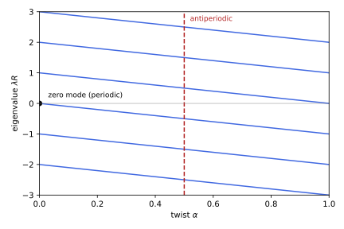
figures/sd-torus-spectra.sage.
Interactive figure (drag to rotate or zoom); the static version is above.
Definition 12 (Twisted boundary condition) Let T^n = \mathbb{R}^n/\Lambda with \Lambda spanned by 2\pi R_ie_i. A spinor field with twists \alpha_i \in [0, 1) satisfies \psi(y + 2\pi R_ie_i) = e^{2\pi i\alpha_i}\psi(y), \qquad i = 1, \dots, n . \tag{18} For \alpha_i \in \{0, \tfrac12\} these are the spin structures of Example 43; for other values they are Scherk-Schwarz twists, by which fields are made periodic only up to a global symmetry, here a phase rotation, as in the twisted reductions of Hull and Reid-Edwards (2005, sec. 3.1, eqs. (3.1)-(3.2)). Equivalently \tilde\psi(y) = e^{-i\sum_i\alpha_iy^i/R_i}\psi is periodic and satisfies the Dirac equation with the constant (flat) gauge potential A = i\sum_i(\alpha_i/R_i)dy^i.
Veriphy. Pending.
Lean. Pending.
Sage. Pending.
On the circle the twist shifts every eigenvalue by the same amount. The first example records the result shown in the figure.
Example 63 (The twisted circle) On the circle with twist \alpha the eigenfunctions of i\,d/dy are e^{i(m + \alpha)y/R}, m \in \mathbb{Z}, with eigenvalues -(m + \alpha)/R. The smallest |\lambda| is \min(\alpha, 1 - \alpha)/R: zero for the periodic structure, 1/(2R) for the antiperiodic one. A twist turns the zero mode into a mode of mass \alpha/R (Exercise 41), which is how a twist that distinguishes fermions from bosons gives masses to the fermions alone.
Veriphy. Pending.
Lean. Pending.
Sage. Pending.
The equivalence with a flat gauge field in the definition is a change of variables. The second example carries it out and shows that the twist is a holonomy.
Example 64 (Twist as a flat connection) On the circle, \psi = e^{i\alpha y/R}\tilde\psi with \tilde\psi periodic gives i\,d\psi/dy = e^{i\alpha y/R}(i\,d/dy - \alpha/R)\tilde\psi: the operator i(d/dy + A_y) with the anti-Hermitian constant potential A_y = i\alpha/R acting on periodic fields. The potential is flat (F = 0) but has holonomy \exp(-\oint A) = e^{-2\pi i\alpha}, which cannot be removed by a periodic gauge transformation unless \alpha \in \mathbb{Z}.
Veriphy. Pending.
Lean. Pending.
Sage. Pending.
On a two-dimensional torus the four spin structures give four different spectra. The third example lists their lowest eigenvalues on the square torus.
Example 65 (The square torus) On T^2 with R_1 = R_2 = 1 the eigenvalues are \pm|k| with k = (m_1 + \alpha_1, m_2 + \alpha_2), each with multiplicity one per lattice point (Proposition 6). For (P, P): 0 (twice), \pm1 (four lattice points), \pm\sqrt2 (four); for (A, P): \pm\tfrac12 (two points), \pm\tfrac{\sqrt5}{2} (four); for (A, A): \pm\tfrac{1}{\sqrt2} (four points), \pm\tfrac{\sqrt{10}}{2} (eight). Only (P, P) has zero modes (Exercise 71).
Veriphy. Pending.
Lean. Pending.
Sage. Pending.
The twist is a parameter of the boundary condition, not of the operator. The first exercise moves it into the operator in any dimension and recovers the gauge-field form of the definition.
Exercise 70 (Twist and flat gauge field on T^n) Show that \psi \mapsto \tilde\psi = e^{-i\sum_i\alpha_iy^i/R_i}\psi maps fields with twists \alpha_i to periodic fields, and that D\psi = \lambda\psi becomes i\gamma^i(\partial_i + i\alpha_i/R_i)\tilde\psi = \lambda\tilde\psi. Show that twists \alpha and \alpha + m, m \in \mathbb{Z}^n, give the same spectrum.
\tilde\psi(y + 2\pi R_ie_i) = e^{-2\pi i\alpha_i}e^{-i\alpha\cdot y/R}\psi(y + 2\pi R_ie_i) = \tilde\psi(y). Differentiating the factor gives \partial_i\psi = e^{i\alpha\cdot y/R}(\partial_i + i\alpha_i/R_i)\tilde\psi. The spectrum \{\pm|(m + \alpha)/R|\} is unchanged by \alpha \mapsto \alpha + m', which relabels the lattice m \mapsto m + m'.
Veriphy. Pending.
Lean. Pending.
Sage. Pending.
The list in Example 65 is easy to generate by machine for any spin structure and any range. The second exercise asks for it.
Exercise 71 (Lowest eigenvalues on T^2) With Sage, list the six smallest non-negative values of |k| with their numbers of lattice points for the four spin structures of the square torus with R = 1, and give the number of zero modes in each case.
Each lattice point contributes the two eigenvalues \pm|k| (one each, since N = 2); only (P, P) has the lattice point k = 0, which contributes the two constant spinors as zero modes:
from collections import Counter
for name, al in (("(P,P)", (0, 0)), ("(A,P)", (1/2, 0)), ("(A,P)'", (0, 1/2)), ("(A,A)", (1/2, 1/2))):
c = Counter()
for m1 in range(-6, 7):
for m2 in range(-6, 7):
c[(m1 + al[0]) ^ 2 + (m2 + al[1]) ^ 2] += 1
low = sorted(c)[:6]
print(name.ljust(7), ", ".join("|k| = %s: %d" % (sqrt(QQ(q)), c[q]) for q in low), "| zero modes:", 2 * c[0])Output:
(P,P) |k| = 0: 1, |k| = 1: 4, |k| = sqrt(2): 4, |k| = 2: 4, |k| = sqrt(5): 8, |k| = 2*sqrt(2): 4 | zero modes: 2
(A,P) |k| = 1/2: 2, |k| = 1/2*sqrt(5): 4, |k| = 3/2: 2, |k| = 1/2*sqrt(13): 4, |k| = 1/2*sqrt(17): 4, |k| = 5/2: 6 | zero modes: 0
(A,P)' |k| = 1/2: 2, |k| = 1/2*sqrt(5): 4, |k| = 3/2: 2, |k| = 1/2*sqrt(13): 4, |k| = 1/2*sqrt(17): 4, |k| = 5/2: 6 | zero modes: 0
(A,A) |k| = sqrt(1/2): 4, |k| = sqrt(5/2): 8, |k| = 3*sqrt(1/2): 4, |k| = sqrt(13/2): 8, |k| = sqrt(17/2): 8, |k| = 5*sqrt(1/2): 12 | zero modes: 0Veriphy. Pending.
Lean. Pending.
Sage. Pending.
The twist is a continuous deformation, and eigenvalues flow as it changes. The third exercise follows the flow on the circle and counts how many eigenvalues cross zero.
Exercise 72 (Spectral flow) On the circle of radius 1 let the twist run from \alpha = 0 to \alpha = 1. Show that each eigenvalue -(m + \alpha) decreases by 1, so that exactly one eigenvalue crosses zero from above, and that the spectrum at \alpha = 1 coincides with that at \alpha = 0. What does this say about the dependence of the spectrum on the flat connection?
-(m + \alpha) goes from -m to -m - 1, so the set of eigenvalues is the same at both ends, but each eigenvalue has moved to the next one; the eigenvalue -\alpha (for m = 0) crosses zero at \alpha = 0 and reaches -1. The net number of crossings (the spectral flow) is -1: although the operators at \alpha = 0 and 1 are gauge equivalent, the path between them is not contractible, and the flow measures the winding of the holonomy e^{2\pi i\alpha} around U(1).
Veriphy. Pending.
Lean. Pending.
Sage. Pending.
The computations on the circle and the square torus are instances of a single statement for all flat tori. The proposition gives it.
Proposition 6 (Spectrum on flat tori) On T^n with radii R_i and twists \alpha_i, n \geq 2, the Dirac operator has the eigenvalues \pm|k|, k_i = (m_i + \alpha_i)/R_i, m \in \mathbb{Z}^n; each k \neq 0 contributes +|k| and -|k| with multiplicity N/2 each, N = 2^{\lfloor n/2\rfloor}, and k = 0 occurs only for \alpha = 0, where it contributes N zero modes, the constant spinors. For n = 1 the eigenvalues are -(m + \alpha)/R. The eigenfunctions are e^{ik\cdot y}u with (\gamma\cdot k)u = \mp|k|u.
Veriphy. Pending.
Lean. Pending.
Sage. Pending.
The multiplicity of a value |k| counts lattice points on a sphere, a classical number-theoretic function. The first example evaluates it on the square torus.
Example 66 (Counting lattice points) For the periodic square torus with R = 1, the multiplicity of \pm\sqrt{j} is the number r_2(j) of representations j = m_1^2 + m_2^2: r_2(1) = 4, r_2(2) = 4, r_2(4) = 4, r_2(5) = 8, r_2(25) = 12, while r_2(3) = 0, so \sqrt3 is not an eigenvalue. The number of eigenvalues with |\lambda| \leq \Lambda grows like 2\pi\Lambda^2, the area of the disc times the two signs.
Veriphy. Pending.
Lean. Pending.
Sage. Pending.
The radii enter the eigenvalues as inverse lengths. The second example shows how a torus with very different radii looks from the low end of the spectrum.
Example 67 (Unequal radii) On T^2 with R_1 = 1, R_2 = \epsilon \ll 1 and periodic structure, the eigenvalues with m_2 = 0 are \pm|m_1|, those with m_2 \neq 0 are at least 1/\epsilon. Below 1/\epsilon the spectrum is that of the circle of radius 1 with the Dirac operator doubled (N = 2): the small direction is invisible at low energies, and with the antiperiodic structure in the small direction there are no eigenvalues below 1/(2\epsilon) at all.
Veriphy. Pending.
Lean. Pending.
Sage. Pending.
The six-dimensional torus is the flat internal space of dimension six. The third example counts the zero modes of a six-dimensional Weyl spinor on it and their four-dimensional chirality.
Example 68 (Zero modes on T^6) On T^6 with the periodic structure the zero modes are the N = 8 constant spinors, four of each chirality \gamma_*^K = \pm1. By Exercise 42 a Weyl spinor of ten dimensions gives four right-handed and four left-handed massless spinors in four dimensions: the same number of each, so the torus produces no net chirality. Any other spin structure or non-zero twist gives no massless spinors at all.
Veriphy. Pending.
Lean. Pending.
Sage. Pending.
The proposition reduces to the flat-space computation once the boundary conditions are imposed. The first exercise asks for the proof.
Exercise 73 (Proof of the spectrum) Show that the functions e^{ik\cdot y}, k_i = (m_i + \alpha_i)/R_i, form an orthogonal basis of the twisted functions on T^n (Theorem 2 of Fourier analysis for each direction), that D preserves the space e^{ik\cdot y}\mathbb{C}^N and acts there as -\gamma\cdot k, and deduce the eigenvalues and multiplicities.
In each direction e^{i(m + \alpha)y/R}, m \in \mathbb{Z}, is e^{i\alpha y/R} times the Fourier basis, hence an orthogonal basis of the twisted functions; products give a basis on T^n. D(e^{ik\cdot y}u) = i\gamma^a(ik_a)e^{ik\cdot y}u = -(\gamma\cdot k)e^{ik\cdot y}u. The Hermitian matrix \gamma\cdot k squares to |k|^2 and is traceless (Proposition 1), so for k \neq 0 its eigenvalues \pm|k| each have multiplicity N/2; for k = 0 every u is a zero mode.
Veriphy. Pending.
Lean. Pending.
Sage. Pending.
Weyl’s law predicts the growth of the counting function from the volume alone. The second exercise checks it on tori with Sage.
Exercise 74 (Weyl’s law on tori) Count the eigenvalues with |\lambda| \leq \Lambda of the Dirac operator on the periodic T^2 and T^3 with R = 1 for \Lambda = 10, 20, 40, and compare with N\cdot\operatorname{Vol}\cdot\omega_n\Lambda^n/(2\pi)^n, \omega_n the volume of the unit ball, which is the count of lattice points times N.
The ratios approach 1 as \Lambda grows, with the error of the lattice-point problem:
import itertools
for n, N, omega in ((2, 2, pi), (3, 2, 4 * pi / 3)):
for L in (10, 20, 40):
pts = sum(1 for m in itertools.product(range(-L, L + 1), repeat=n) if sum(x * x for x in m) <= L * L)
weyl = (N * omega * L ^ n).n()
print("T^%d, Lambda = %2d: count = %7d, Weyl = %10.1f, ratio = %.4f" % (n, L, N * pts, weyl, N * pts / weyl))Output:
T^2, Lambda = 10: count = 634, Weyl = 628.3, ratio = 1.0090
T^2, Lambda = 20: count = 2514, Weyl = 2513.3, ratio = 1.0003
T^2, Lambda = 40: count = 10050, Weyl = 10053.1, ratio = 0.9997
T^3, Lambda = 10: count = 8338, Weyl = 8377.6, ratio = 0.9953
T^3, Lambda = 20: count = 66802, Weyl = 67020.6, ratio = 0.9967
T^3, Lambda = 40: count = 535522, Weyl = 536165.1, ratio = 0.9988Veriphy. Pending.
Lean. Pending.
Sage. Pending.
A twist that acts differently on fermions and bosons separates their masses. The third exercise compares the two towers on a circle, the simplest instance of the mechanism of Example 63.
Exercise 75 (Bosons and fermions on a circle) A scalar on the circle of radius R is periodic, with masses |m|/R from the Laplacian, and a spinor has the twist \alpha. List the masses of both towers for \alpha = \tfrac12, and show that the bosonic and fermionic masses never coincide. What is the smallest twist-induced splitting between the lightest boson and the lightest fermion as a function of \alpha?
Bosons: 0, \tfrac1R, \tfrac1R, \tfrac2R, \dots; fermions with \alpha = \tfrac12: \tfrac{1}{2R}, \tfrac{1}{2R}, \tfrac{3}{2R}, \dots. The sets \{|m|\} and \{|m + \tfrac12|\} are disjoint. In general the lightest boson is massless and the lightest fermion has mass \min(\alpha, 1 - \alpha)/R, which is the splitting; it is largest, 1/(2R), for the antiperiodic structure.
Veriphy. Pending.
Lean. Pending.
Sage. Pending.
Spheres
On the round spheres the Dirac spectrum is known exactly, and it is linear in the angular momentum rather than quadratic as for the Laplacian. The figure shows it for S^2, S^3 and S^4, and the theorem gives the general formula, derived below from the spectrum of the Laplacian and checked against the dimensions of representations of \mathrm{Spin}(n + 1).
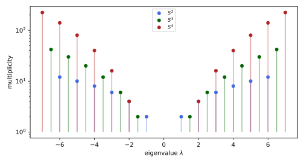
figures/sd-sphere-spectrum.sage.
Theorem 5 (Dirac spectrum of the round sphere) On the unit sphere S^n, n \geq 2, the Dirac operator has the eigenvalues \lambda = \pm\Big(l + \frac n2\Big), \qquad l = 0, 1, 2, \dots, \tag{19} each sign with multiplicity 2^{\lfloor n/2\rfloor}\binom{l + n - 1}{l}; on the sphere of radius r the eigenvalues are divided by r. In the trivialisation of the spinor bundle by \mathbb{R}^{n + 1}, D is unitarily equivalent to the “spin-orbit” operator K = -\sum_{i < j}\gamma^i\gamma^jL_{ij} + \tfrac n2, L_{ij} = x_i\partial_j - x_j\partial_i, which satisfies (K - \tfrac n2)(K + \tfrac n2 - 1) = \Delta_{S^n} with \Delta_{S^n} the positive Laplacian Trautman (1995, sec. 8.1, Prop. 8), Camporesi and Higuchi (1995, eqs. (3.44), (5.48)).
Veriphy. Pending.
Lean. Pending.
Sage. Pending.
On S^2 the spin-orbit operator is \sigma\cdot L + 1 with the orbital angular momentum L = -ix \times \nabla of quantum mechanics. The first example derives the spectrum from the addition of angular momenta.
Example 69 (S^2 by angular momentum) For n = 2 the operator is K = \sigma\cdot L + 1 on \mathbb{C}^2-valued functions on S^2. With J = L + \tfrac12\sigma, \sigma\cdot L = J^2 - L^2 - \tfrac34 (Definition 24 of Lie groups and Lie algebras). On the spherical harmonics of degree l tensored with \mathbb{C}^2, j = l \pm \tfrac12 and \sigma\cdot L = l or -(l + 1), so K = l + 1 = j + \tfrac12 or K = -l = -(j + \tfrac12). The eigenvalues are \pm(j + \tfrac12), j = \tfrac12, \tfrac32, \dots, with multiplicity 2j + 1: that is \pm(k + 1) with multiplicity 2(k + 1), the case n = 2 of Equation 19. Indeed (K - 1)K = (\sigma\cdot L)^2 + \sigma\cdot L = L^2, the Laplacian.
Veriphy. Pending.
Lean. Pending.
Sage. Pending.
The lowest eigenspinors can be written down in the coordinates of Equation 16. The second example gives them and shows the half-integral angular dependence of the frame components.
Example 70 (The lowest modes on S^2) The spinors \psi_\pm = e^{i\varphi/2}\big(\cos\tfrac\theta2, \mp i\sin\tfrac\theta2\big) satisfy D\psi_\pm = \pm\psi_\pm for the operator Equation 16 (Exercise 77). Their components carry e^{i\varphi/2}, as the antiperiodicity of the frame components requires (Example 49), and together with the modes e^{-i\varphi/2}(\mp i\sin\tfrac\theta2, \cos\tfrac\theta2) they span the eigenspaces of \pm1, of dimension 2 each.
Veriphy. Pending.
Lean. Pending.
Sage. Pending.
For general n the quadratic relation of the theorem turns the known spectrum of the Laplacian into the Dirac spectrum. The third example carries out the algebra of Trautman (1995, sec. 8.1).
Example 71 (S^n from the Laplacian) The positive Laplacian of S^n has eigenvalues l(l + n - 1) (Proposition 4 of Functional analysis for n = 2). If K\psi = \lambda\psi, the relation gives (\lambda - \tfrac n2)(\lambda + \tfrac n2 - 1) = l(l + n - 1) for some l, whose roots are \lambda = l + \tfrac n2 and \lambda = -l - \tfrac n2 + 1. The second value with l = 0, \lambda = 1 - \tfrac n2, would require \Delta\psi = 0, a constant \psi, for which K\psi = \tfrac n2\psi; it is excluded, and l \geq 1 in the second family gives \lambda = -(l' + \tfrac n2) with l' = l - 1 \geq 0. So the spectrum lies in \{\pm(l + \tfrac n2)\}.
Veriphy. Pending.
Lean. Pending.
Sage. Pending.
The multiplicities are the dimensions of representations of \mathrm{Spin}(n + 1), the isometry group of the sphere lifted to spinors. The fourth example states this, the form the result takes in Camporesi and Higuchi (1995, sec. 5).
Example 72 (Multiplicities as dimensions) The eigenspaces are irreducible representations of \mathrm{Spin}(n + 1). For odd n the eigenspaces of \pm(l + \tfrac n2) are the two inequivalent representations with highest weights (l + \tfrac12, \tfrac12, \dots, \pm\tfrac12); for even n both are copies of the single representation (l + \tfrac12, \tfrac12, \dots, \tfrac12). For n = 2 the eigenspace of \pm(k + 1) is the spin j = k + \tfrac12 representation of SU(2), of dimension 2k + 2; for n = 4 it is the representation of \mathrm{Spin}(5) with highest weight (l + \tfrac12, \tfrac12), of dimension 4\binom{l + 3}{l}; its Casimir (l + 2)^2 - \tfrac32 plus \tfrac{R}{8} = \tfrac32 is \lambda^2 Camporesi and Higuchi (1995, eqs. (5.44)-(5.48)).
Veriphy. Pending.
Lean. Pending.
Sage. Pending.
The angular-momentum derivation on S^2 is a finite matrix computation for each l. The first exercise performs it for the first five values of l.
Exercise 76 (\sigma\cdot L + 1 by matrices) With Sage, build the spin matrices of spin \tfrac12 and spin l, form \sigma\cdot L + 1 = 2S\cdot L + 1 on \mathbb{C}^2 \otimes \mathbb{C}^{2l + 1} for l = 0, \dots, 4, and list its eigenvalues with multiplicities.
For each l the eigenvalues are l + 1 with multiplicity 2l + 2 and -l with multiplicity 2l; collecting over l, the eigenvalue \pm(k + 1) appears with multiplicity 2k + 2:
from collections import Counter
def spin_matrices(j):
j = QQ(j); dim = int(2 * j + 1); ms = [j - k for k in range(dim)]
Jz = diagonal_matrix(QQbar, ms); Jp = matrix(QQbar, dim, dim)
for k in range(1, dim):
Jp[k - 1, k] = sqrt(QQbar(j * (j + 1) - ms[k] * (ms[k] + 1)))
Jm = Jp.transpose()
return (Jp + Jm) / 2, (Jp - Jm) / (2 * QQbar(I)), Jz
S = spin_matrices(1/2)
total = Counter()
for l in range(5):
L = spin_matrices(l)
K = sum(2 * S[a].tensor_product(L[a]) for a in range(3)) + identity_matrix(QQbar, 2 * (2 * l + 1))
ev = Counter(ZZ(e) for e in K.eigenvalues())
total.update(ev)
print("l = %d:" % l, dict(sorted(ev.items())))
print("collected over l <= 4 (eigenvalue: multiplicity):", dict(sorted((k, m) for k, m in total.items() if abs(k) <= 4)))Output:
l = 0: {1: 2}
l = 1: {-1: 2, 2: 4}
l = 2: {-2: 4, 3: 6}
l = 3: {-3: 6, 4: 8}
l = 4: {-4: 8, 5: 10}
collected over l <= 4 (eigenvalue: multiplicity): {-4: 8, -3: 6, -2: 4, -1: 2, 1: 2, 2: 4, 3: 6, 4: 8}Veriphy. Pending.
Lean. Pending.
Sage. Pending.
The lowest eigenspinors were stated without computation. The second exercise verifies them, and the next ones, with the operator in coordinates.
Exercise 77 (Eigenspinors in coordinates) With Sage, apply Equation 16 to \psi_\pm of Example 70 and check D\psi_\pm = \pm\psi_\pm. Then solve D\psi = 2\psi with the ansatz \psi = e^{i\varphi/2}(f(\theta), g(\theta)), where f and g are linear combinations of the monomials \cos^a\tfrac\theta2\sin^b\tfrac\theta2 with a + b = 3.
D\psi_\pm = \pm\psi_\pm holds identically. The ansatz for \lambda = 2 has a solution space of dimension one for m = \tfrac12, one of the four modes (m = \pm\tfrac12, \pm\tfrac32) of the eigenvalue 2:
th, ph, t = var("th ph t")
s1 = matrix(SR, [[0, 1], [1, 0]]); s2 = matrix(SR, [[0, -I], [I, 0]])
def D(p):
d_th = p.apply_map(lambda f: diff(f, th)); d_ph = p.apply_map(lambda f: diff(f, ph))
return I * (s1 * (d_th + cot(th) / 2 * p) + s2 * d_ph / sin(th))
def is_zero(M): # write theta = 2t and expand the trigonometric functions of 2t
return all(bool((e * sin(th)).subs(th=2 * t).trig_expand().simplify_full() == 0) for e in M.list())
c, s = cos(th / 2), sin(th / 2)
for sg in (1, -1):
psi = exp(I * ph / 2) * matrix(SR, 2, 1, [c, -sg * I * s])
comp = exp(-I * ph / 2) * matrix(SR, 2, 1, [-sg * I * s, c])
print("D psi = %+d psi for e^{i phi/2}(cos, %si sin):" % (sg, "-" if sg > 0 else "+"), is_zero(D(psi) - sg * psi),
"; for e^{-i phi/2}(%si sin, cos):" % ("-" if sg > 0 else "+"), is_zero(D(comp) - sg * comp))
A = var(",".join("a%d" % k for k in range(4))); B = var(",".join("b%d" % k for k in range(4)))
mons = [c ^ k * s ^ (3 - k) for k in range(4)]
psi = exp(I * ph / 2) * matrix(SR, 2, 1, [sum(A[k] * mons[k] for k in range(4)), sum(B[k] * mons[k] for k in range(4))])
res = ((D(psi) - 2 * psi) / exp(I * ph / 2))
# the residual is linear in the 8 coefficients: sample it at several angles and find the null space numerically
import numpy as np
rows = []
for e in res.list():
for tv in np.linspace(0.2, 2.9, 9):
rows.append([complex(e.diff(x).subs(th=float(tv))) for x in list(A) + list(B)])
M = np.array(rows); sv = np.linalg.svd(M, compute_uv=False)
null = sum(1 for x in sv if x < 1e-9 * sv[0])
print("dimension of the solution space of D psi = 2 psi in the ansatz:", null)
v = np.linalg.svd(M)[2][-1].conj(); v = v / v[np.argmax(abs(v))]
print("solution (coefficients of cos^k sin^(3-k), k = 0..3, upper then lower):", [complex(round(z.real, 6), round(z.imag, 6)) for z in v])Output:
D psi = +1 psi for e^{i phi/2}(cos, -i sin): True ; for e^{-i phi/2}(-i sin, cos): True
D psi = -1 psi for e^{i phi/2}(cos, +i sin): True ; for e^{-i phi/2}(+i sin, cos): True
dimension of the solution space of D psi = 2 psi in the ansatz: 1
solution (coefficients of cos^k sin^(3-k), k = 0..3, upper then lower): [(-0+0j), (1+0j), (-0+0j), (-0.5+0j), -0.5j, (-0+0j), (-0+1j), 0j]Veriphy. Pending.
Lean. Pending.
Sage. Pending.
The identification of multiplicities with dimensions of representations can be tested with the Weyl dimension formula. The third exercise does so for n = 2, \dots, 6.
Exercise 78 (Multiplicities from Weyl’s formula) With Sage’s WeylCharacterRing, compute the dimension of the \mathrm{Spin}(n + 1) representation with highest weight (l +
\tfrac12, \tfrac12, \dots, \tfrac12) (type B for n even, type D for n odd, where (l + \tfrac12, \tfrac12, \dots,
\pm\tfrac12) give two representations) and compare with 2^{\lfloor n/2\rfloor}\binom{l + n - 1}{l} for l \leq 4.
The dimensions agree for every n and l tested; for odd n each of the two representations has the full multiplicity of one sign:
for n in range(2, 7):
rank = (n + 1) // 2
cartan = ("B%d" if (n + 1) % 2 else "D%d") % rank
W = WeylCharacterRing(cartan)
rep = lambda hw: W(W._space.from_vector_notation(hw))
dims = []
for l in range(5):
hw = [l + 1/2] + [1/2] * (rank - 1)
d1 = rep(hw).degree()
if (n + 1) % 2 == 0:
assert rep(hw[:-1] + [-hw[-1]]).degree() == d1 # the second representation, for the other sign
dims.append(d1)
expected = [2 ^ (n // 2) * binomial(l + n - 1, l) for l in range(5)]
print("S^%d, Spin(%d) of type %s: dimensions %s, formula %s, equal: %s" % (n, n + 1, cartan, dims, expected, dims == expected))Output:
S^2, Spin(3) of type B1: dimensions [2, 4, 6, 8, 10], formula [2, 4, 6, 8, 10], equal: True
S^3, Spin(4) of type D2: dimensions [2, 6, 12, 20, 30], formula [2, 6, 12, 20, 30], equal: True
S^4, Spin(5) of type B2: dimensions [4, 16, 40, 80, 140], formula [4, 16, 40, 80, 140], equal: True
S^5, Spin(6) of type D3: dimensions [4, 20, 60, 140, 280], formula [4, 20, 60, 140, 280], equal: True
S^6, Spin(7) of type B3: dimensions [8, 48, 168, 448, 1008], formula [8, 48, 168, 448, 1008], equal: TrueVeriphy. Pending.
Lean. Pending.
Sage. Pending.
The spectrum determines the heat trace, whose small-time expansion reproduces the volume and the curvature. The fourth exercise checks the first two terms on S^2 against the expansion of Theorem 22 of Functional analysis adapted to D^2.
Exercise 79 (The heat trace on S^2) Show that \operatorname{Tr}e^{-tD^2} = \sum_{k \geq 1}4k\,e^{-tk^2} on the unit S^2, and with Sage compare it for small t with \frac{2}{t} - \frac13. Explain the two terms: \frac{N\operatorname{Vol}}{4\pi t} with N = 2, and \frac{1}{4\pi}\int\operatorname{tr}(\tfrac R6 - \tfrac R4), the curvature term for \nabla^*\nabla + \tfrac R4.
The eigenvalues \pm k have multiplicity 2k each, so D^2 = k^2 has multiplicity 4k. By the Euler-Maclaurin formula \sum_kke^{-tk^2} = \frac{1}{2t} - \frac{1}{12} + O(t), hence \frac2t - \frac13. The leading term is 2\cdot4\pi/(4\pi t), and \frac{1}{4\pi}\cdot2\cdot4\pi(\tfrac26 - \tfrac24) = -\tfrac13:
for t in (0.1, 0.05, 0.02, 0.01):
tr = sum(4 * k * exp(-t * k ^ 2) for k in range(1, 400)).n()
print("t = %.2f: trace = %.6f, 2/t - 1/3 = %.6f, difference = %.2e" % (t, tr, 2 / t - 1 / 3, tr - (2 / t - 1 / 3)))
print("leading term N Vol/(4 pi t) with N = 2, Vol = 4 pi:", 2 * 4 * pi / (4 * pi), "/ t")
print("curvature term (1/4pi) int tr(R/6 - R/4) with R = 2:", (1 / (4 * pi) * 2 * 4 * pi * (2 / 6 - 2 / 4)))Output:
t = 0.10: trace = 19.663251, 2/t - 1/3 = 19.666667, difference = -3.42e-03
t = 0.05: trace = 39.664980, 2/t - 1/3 = 39.666667, difference = -1.69e-03
t = 0.02: trace = 99.665997, 2/t - 1/3 = 99.666667, difference = -6.70e-04
t = 0.01: trace = 199.666333, 2/t - 1/3 = 199.666667, difference = -3.34e-04
leading term N Vol/(4 pi t) with N = 2, Vol = 4 pi: 2 / t
curvature term (1/4pi) int tr(R/6 - R/4) with R = 2: -1/3Veriphy. Pending.
Lean. Pending.
Sage. Pending.
Vanishing theorems
The Lichnerowicz formula forbids zero modes when the scalar curvature is positive. The theorem states this and the companion statement for vanishing curvature, which is what makes Ricci-flat manifolds special.
Theorem 6 (Vanishing theorem) Let M be a compact Riemannian spin manifold without boundary. If R \geq 0, every harmonic spinor (D\psi = 0) is parallel (\nabla\psi = 0) and satisfies R\psi = 0; if moreover R > 0 somewhere, there are no harmonic spinors. More generally, if R \geq R_0 > 0, every eigenvalue satisfies \lambda^2 \geq \tfrac14R_0 Dolan (2003, after eq. (26)), Camporesi and Higuchi (1995, eq. (5.35)).
Veriphy. Pending.
Lean. Pending.
Sage. Pending.
Spheres are the first test of the theorem. The first example compares its bound with the explicit spectrum of the round spheres.
Example 73 (Spheres) On S^n, R = n(n - 1) > 0, so there are no harmonic spinors, in agreement with Theorem 5, whose smallest |\lambda| is \tfrac n2 > 0. The theorem only gives |\lambda| \geq \tfrac12\sqrt{n(n - 1)}, which is smaller than \tfrac n2 for every n.
Veriphy. Pending.
Lean. Pending.
Sage. Pending.
Flat tori have R = 0, so harmonic spinors must be parallel. The second example checks this against the torus spectrum.
Example 74 (Tori) On a flat torus harmonic spinors are parallel, and parallel spinors are the constant ones of the periodic structure (Exercise 62): N of them for \alpha = 0 and none otherwise, as Proposition 6 found directly. The theorem explains why the zero modes of the torus come in equal numbers of both chiralities: a constant spinor has constant chiral parts, each of them parallel.
Veriphy. Pending.
Lean. Pending.
Sage. Pending.
A product of a positively curved space with a flat one has positive scalar curvature. The third example concludes that such products have no harmonic spinors, whatever the spin structure on the flat factor.
Example 75 (Products) On S^2 \times T^2, R = 2 > 0, so there are no harmonic spinors even for the periodic structure on T^2. Directly, the Dirac operator of the product squares to D_{S^2}^2 \otimes 1 + 1 \otimes D_{T^2}^2 (with gamma matrices as in Equation 11), so D^2 \geq 1, the smallest eigenvalue of D_{S^2}^2. By contrast K3 has R = 0 and two parallel spinors (Section 1.5).
Veriphy. Pending.
Lean. Pending.
Sage. Pending.
The theorem follows from Equation 17 by integration. The first exercise asks for the argument, which is a single integration by parts.
Exercise 80 (Proof of the vanishing theorem) For D\psi = 0 integrate \langle\psi, D^2\psi\rangle using Equation 17 to get 0 = \|\nabla\psi\|^2 + \tfrac14\int R|\psi|^2, and deduce the statements of the theorem. For an eigenvalue \lambda, show \lambda^2\|\psi\|^2 \geq \tfrac14R_0\|\psi\|^2.
0 = \langle\psi, D^2\psi\rangle = \|\nabla\psi\|^2 + \tfrac14\int R|\psi|^2, a sum of two non-negative terms when R \geq 0, so \nabla\psi = 0 and R|\psi|^2 = 0. A parallel spinor has constant |\psi| (Exercise 65), so if R > 0 at one point then \psi = 0 there and hence everywhere. For D\psi = \lambda\psi, \lambda^2\|\psi\|^2 = \|\nabla\psi\|^2 + \tfrac14\int R|\psi|^2 \geq \tfrac14R_0\|\psi\|^2.
Veriphy. Pending.
Lean. Pending.
Sage. Pending.
The product formula of Example 75 determines the whole spectrum of a product. The second exercise computes the lowest part of it for S^2 \times T^2.
Exercise 81 (The spectrum of S^2 \times T^2) With Sage, list the smallest values of D^2 = (k + 1)^2 + |p|^2, k \geq 0, p \in \mathbb{Z}^2 (periodic torus, unit radii), with multiplicity 4(k + 1)\cdot2 = 8(k + 1) for each pair (k, p) (the product of the multiplicities of the two factors), and check that the smallest is 1. Repeat for the antiperiodic structure in both torus directions.
The smallest value is 1 (from k = 0, p = 0) for the periodic torus and \tfrac32 for the antiperiodic one, never 0:
from collections import Counter
for name, al in (("periodic T^2", (0, 0)), ("antiperiodic T^2", (1/2, 1/2))):
c = Counter()
for k in range(0, 5):
for m1 in range(-4, 5):
for m2 in range(-4, 5):
c[(k + 1) ^ 2 + (m1 + al[0]) ^ 2 + (m2 + al[1]) ^ 2] += 8 * (k + 1)
low = sorted(c)[:5]
print(name.ljust(17), ", ".join("%s (x%d)" % (q, c[q]) for q in low), "| smallest:", low[0])Output:
periodic T^2 1 (x8), 2 (x32), 3 (x32), 4 (x16), 5 (x96) | smallest: 1
antiperiodic T^2 3/2 (x32), 7/2 (x64), 9/2 (x64), 11/2 (x32), 13/2 (x128) | smallest: 3/2Veriphy. Pending.
Lean. Pending.
Sage. Pending.
A parallel spinor forces strong restrictions on the curvature of the manifold that carries it. The third exercise derives the first one, Ricci-flatness, from Proposition 5.
Exercise 82 (Parallel spinors force Ricci-flatness) Let \nabla\psi = 0 with \psi \neq 0. Show that R(e_c, e_d)\psi = 0 for all c, d and, contracting with \gamma^d as in Exercise 56, that \operatorname{Ric}_{cb}\gamma^b\psi = 0. Conclude that \operatorname{Ric} = 0, using that v\cdot\psi = 0 for a real vector v implies v = 0.
R(e_c, e_d)\psi = [\nabla_c, \nabla_d]\psi - \nabla_{[e_c, e_d]}\psi = 0. The contraction of Exercise 56 gives \sum_d\gamma^dR(e_c, e_d)\psi = \pm\tfrac12\operatorname{Ric}_{cb}\gamma^b\psi, so (\operatorname{Ric}_c)\cdot\psi = 0 for the vector \operatorname{Ric}_c = \operatorname{Ric}_{cb}e_b. Since (v\cdot)^2 = |v|^2, v\cdot\psi = 0 with \psi \neq 0 forces v = 0. So every row of \operatorname{Ric} vanishes: manifolds with parallel spinors are Ricci-flat, like the flat tori and K3.
Veriphy. Pending.
Lean. Pending.
Sage. Pending.
Exercises
The exercises of this part combine the Dirac operator, the Lichnerowicz formula and the spectra on tori and spheres. They prepare the next part, where the same spectra are recovered from group theory on group manifolds and coset spaces.
Physical masses come from eigenvalues divided by a radius. The first integrative exercise compares the spectra of a circle and a sphere of the same size.
Exercise 83 (Circle and sphere of the same radius) On the circle of radius r with the antiperiodic structure and on S^2 of radius r, list the four smallest |\lambda| with multiplicities. Which space has the larger gap, and why does the curvature of the sphere not change the order of magnitude?
Circle: \tfrac{1}{2r} (twice), \tfrac{3}{2r} (twice), \tfrac{5}{2r}, \tfrac{7}{2r} (twice each, counting both signs). Sphere: \tfrac1r (four, two of each sign), \tfrac2r (eight), \tfrac3r (twelve), \tfrac4r (sixteen). The sphere has the larger gap, \tfrac1r against \tfrac{1}{2r}; both gaps are of order 1/r because the eigenvalues have the dimension of an inverse length, and the curvature R = 2/r^2 only shifts D^2 by \tfrac{1}{2r^2} (Theorem 4).
Veriphy. Pending.
Lean. Pending.
Sage. Pending.
The spectral zeta function packages the spectrum into one analytic function. The second integrative exercise computes it on S^2 and on the antiperiodic circle.
Exercise 84 (Zeta functions) Show that \zeta_{D^2}(s) = \sum_{\lambda \neq 0}|\lambda|^{-2s} is 4\zeta(2s - 1) on the unit S^2 and 2(2^{2s} - 1)\zeta(2s) on the antiperiodic circle of radius 1. With Sage, evaluate both at s = 0 and s = -\tfrac12 (the values that enter zeta-regularised determinants and Casimir energies, Definition 39 of Functional analysis).
On S^2 the eigenvalues of D^2 are k^2 with multiplicity 4k, so \zeta_{D^2}(s) = 4\sum_kk^{1 - 2s} = 4\zeta(2s - 1). On the circle |\lambda| = m + \tfrac12, twice each, so \zeta_{D^2}(s) = 2\sum_{m \geq 0}(m + \tfrac12)^{-2s} = 2^{2s + 1}(1 - 2^{-2s})\zeta(2s) = 2(2^{2s} - 1)\zeta(2s). At s = 0 the values are 4\zeta(-1) = -\tfrac13, the constant term of the heat trace of Exercise 79, and 0; at s = -\tfrac12 they are 4\zeta(-2) = 0 and 2(\tfrac12 - 1)\zeta(-1) = \tfrac1{12}:
s = var("s")
zS2 = 4 * zeta(2 * s - 1); zC = 2 * (2 ^ (2 * s) - 1) * zeta(2 * s)
print("check S^2 at s = 2: series", sum(4.0 / k ** 3 for k in range(1, 20000)), "closed form", zS2.subs(s=2).n(digits=8))
print("check circle at s = 1: series", sum(2.0 / (m + 0.5) ** 2 for m in range(0, 200000)), "closed form", zC.subs(s=1).n(digits=6))
for val in (0, -1/2):
print("s = %s: zeta_S2 = %s, zeta_circle = %s" % (val, zS2.subs(s=val), zC.subs(s=val)))Output:
check S^2 at s = 2: series 4.80822760763813 closed form 4.8082276
check circle at s = 1: series 9.86959440108980 closed form 9.86961
s = 0: zeta_S2 = -1/3, zeta_circle = 0
s = -1/2: zeta_S2 = 0, zeta_circle = 1/12Veriphy. Pending.
Lean. Pending.
Sage. Pending.
The Lichnerowicz formula with a gauge field already contains the mechanism by which zero modes reappear. The third integrative exercise finds it on S^2 with the operator of Exercise 68.
Exercise 85 (When the field cancels the curvature) On the unit S^2 with the monopole term of Exercise 68, D^2 = \nabla^*\nabla + \tfrac12 + \tfrac M2\sigma_3. Show that for M \geq 1 the lower component can have D^2\psi = 0 only if \nabla^*\nabla\psi = \tfrac{M - 1}{2}\psi, and that for M = 1 this means \nabla\psi = 0. Find such a \psi explicitly for M = 1.
On the lower component \sigma_3 = -1, so D^2 = \nabla^*\nabla + \tfrac{1 - M}{2}, and D^2\psi = 0 needs \nabla^*\nabla\psi = \tfrac{M - 1}{2}\psi; since \nabla^*\nabla \geq 0 this is possible for M \geq 1, and for M = 1 it means \|\nabla\psi\|^2 = 0. On the lower component \nabla_\varphi = \partial_\varphi + \tfrac{i}{2}\cos\theta + \tfrac{i}{2}(1 - \cos\theta) = \partial_\varphi + \tfrac{i}{2}, and \psi = (0, e^{-i\varphi/2}) has \nabla_\theta\psi = \nabla_\varphi\psi = 0: the gauge field exactly cancels the spin connection, the case |M| = 1 of Dolan (2003, after eq. (32)), and the zero mode is “constant”.
Veriphy. Pending.
Lean. Pending.
Sage. Pending.
Dirac operators on compact spaces
On a space with many symmetries the Dirac operator commutes with the symmetry group, and its spectrum can be read off from representation theory instead of differential equations. This part treats the families of compact spaces on which the Dirac operator is computable in closed form: Lie groups with left-invariant frames, coset spaces G/H through Frobenius reciprocity and Parthasarathy’s formula (Camporesi and Higuchi (1995, sec. 5), Dolan (2003, secs. 2–3)), Kähler and Calabi-Yau manifolds, where the Dirac operator becomes the Dolbeault operator and parallel spinors are counted by holonomy (Greene (1997, secs. 2.8–2.13), Aspinwall (1996, sec. 2.2)), and orbifolds, where zero modes are projected (Aspinwall (1996, sec. 2.6), Chatzistavrakidis et al. (2010, sec. 2)). The orthonormal-frame formalism of Zhelnorovich (2019, sec. 6.1, eqs. (6.1)-(6.2)), with constant Ricci rotation coefficients on homogeneous spaces, is used throughout. Coset spaces are written G/H, the S/R of Coset spaces.
Group manifolds
On a Lie group with a bi-invariant metric the left-invariant vector fields form a global orthonormal frame, and the spin connection in this frame has constant coefficients, the structure constants. The figure shows the resulting spectrum on S^3 = SU(2), organised by the representations of SU(2) \times SU(2) that act on it.
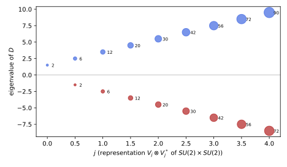
figures/sd-s3-spectrum.sage.
Definition 13 (Left-invariant Dirac operator) Let G be a compact Lie group with a bi-invariant metric and an orthonormal basis X_a of left-invariant vector fields (Definition 15 of Lie groups and Lie algebras), [X_a, X_b] = f_{ab}{}^cX_c, with f_{abc} totally antisymmetric. The Levi-Civita connection is \nabla_{X_a}X_b = \tfrac12[X_a, X_b], so \omega_{cb}(X_a) = \tfrac12f_{abc}, and in the spin frame lifted from X_a the Dirac operator is D = i\gamma^aX_a - \frac{i}{8}f_{abc}\gamma^a\gamma^b\gamma^c , \tag{20} the left-invariant Dirac operator, where X_a acts on the components by differentiation Zhelnorovich (2019, sec. 6.1, eq. (6.1)).
Veriphy. Pending.
Lean. Pending.
Sage. Pending.
Abelian groups have vanishing structure constants, and the formula reduces to the flat one. The first example recovers the torus of the previous part.
Example 76 (Tori as groups) T^n = U(1)^n with the coordinate frame X_a = \partial_a has f_{abc} = 0, so Equation 20 is D = i\gamma^a\partial_a, the operator of Proposition 6. The left-invariant frame lifts to the periodic spin structure: spinor fields with constant components in it are invariant under the group, and these are the parallel spinors of Exercise 62.
Veriphy. Pending.
Lean. Pending.
Sage. Pending.
For SU(2) the structure constants are a multiple of \epsilon_{abc} and the cubic term is a number. The second example evaluates it on the unit three-sphere, using the left-invariant forms of Proposition 7 of Lie groups and Lie algebras.
Example 77 (The frame of S^3 = SU(2)) The forms \sigma^a of Proposition 7 of Lie groups and Lie algebras satisfy d\sigma^c = -\tfrac12\epsilon_{abc}\sigma^a \wedge \sigma^b and the metric of the unit S^3 is \tfrac14\sum_a(\sigma^a)^2, so e^a = \tfrac12\sigma^a is an orthonormal coframe with de^c = -\epsilon_{abc}e^a \wedge e^b, and the dual frame satisfies [X_a, X_b] = 2\epsilon_{abc}X_c: f_{abc} = 2\epsilon_{abc}. With \gamma^a = \sigma_a, f_{abc}\gamma^a\gamma^b\gamma^c = 2\cdot6\,\sigma_1\sigma_2\sigma_3 = 12i, so D = i\sigma\cdot X + \tfrac32.
Veriphy. Pending.
Lean. Pending.
Sage. Pending.
The left-invariant fields generate right translations, so the operators J_a = \tfrac{i}{2}X_a satisfy the angular momentum relations. The third example rewrites the Dirac operator of S^3 with them, which reduces the spectrum to the addition of spins.
Example 78 (Angular momentum on SU(2)) With J_a = \tfrac{i}{2}X_a, [J_a, J_b] = -\tfrac14[X_a, X_b] = -\tfrac12\epsilon_{abc}X_c = i\epsilon_{abc}J_c, and i\sigma\cdot X = 2\sigma\cdot J, so D = 2\sigma\cdot J + \tfrac32 = 4S\cdot J + \tfrac32 with S = \tfrac12\sigma. By Theorem 6 of Fourier analysis the functions on SU(2) decompose as \bigoplus_jV_j \otimes V_j^*, with J acting on V_j and the factor V_j^* giving multiplicity 2j + 1; on \mathbb{C}^2 \otimes V_j, 4S\cdot J = 2(K^2 - J^2 - \tfrac34) with K = j \pm \tfrac12.
Veriphy. Pending.
Lean. Pending.
Sage. Pending.
The formula for the connection of a bi-invariant metric is the starting point. The first exercise derives it from the Koszul formula, as in the computation of the Christoffel symbols in The Levi-Civita connection.
Exercise 86 (The Levi-Civita connection of a bi-invariant metric) For left-invariant fields X, Y, Z the metric products are constant. Show from the Koszul formula 2g(\nabla_XY, Z) = g([X, Y], Z) - g([Y, Z], X) + g([Z, X], Y) (valid for constant products) and the ad-invariance g([X, Y], Z) = -g(Y, [X, Z]) that \nabla_XY = \tfrac12[X, Y], and derive Equation 20 from Equation 12.
Ad-invariance makes c = g([X, Y], Z) cyclic: g([X, Y], Z) = -g(Y, [X, Z]) = g(Y, [Z, X]) = g([Z, X], Y), and likewise g([Y, Z], X) = c. The Koszul formula gives 2g(\nabla_XY, Z) = c - c + c = g([X, Y], Z) for every Z, so \nabla_XY = \tfrac12[X, Y]. Then \omega_{cb}(X_a) = g(\nabla_{X_a}X_b, X_c) = \tfrac12f_{abc}, and Equation 12 gives \nabla_a = X_a + \tfrac18f_{abc}\gamma^c\gamma^b = X_a - \tfrac18f_{abc}\gamma^b\gamma^c (the sum over b \neq c is antisymmetric); contracting with i\gamma^a gives Equation 20.
Veriphy. Pending.
Lean. Pending.
Sage. Pending.
The bracket relations of the frame on S^3 can be checked in coordinates. The second exercise does this with the quaternions, where left-invariant fields are right multiplications by imaginary units.
Exercise 87 (Left-invariant fields on S^3) Identify S^3 with the unit quaternions and let X_1, X_2, X_3 be the vector fields q \mapsto q\mathrm{i}, q\mathrm{j}, q\mathrm{k} on \mathbb{R}^4, restricted to S^3. With Sage, write them as first-order differential operators on \mathbb{R}^4, check that they are tangent to S^3 and orthonormal, and compute [X_1, X_2].
The fields are orthonormal and tangent, and [X_1, X_2] = 2X_3 and cyclically, so f_{abc} = 2\epsilon_{abc} as in Example 77:
x = vector(SR, var("x0 x1 x2 x3"))
Q.<ii, jj, kk> = QuaternionAlgebra(SR, -1, -1)
q = x[0] + x[1] * ii + x[2] * jj + x[3] * kk
def field(u):
w = q * u
return vector(SR, list(w.coefficient_tuple()))
X = [field(ii), field(jj), field(kk)]
print("tangent (x . X_a = 0):", [ (x * Xa).simplify_full() for Xa in X ])
G = matrix(SR, 3, 3, lambda a, b: (X[a] * X[b]).simplify_full())
print("Gram matrix on |x| = 1:", G.subs(x0=sqrt(1 - x[1]^2 - x[2]^2 - x[3]^2)).simplify_full())
def bracket(A, B):
return vector(SR, [sum(A[i] * diff(B[k], x[i]) - B[i] * diff(A[k], x[i]) for i in range(4)) for k in range(4)])
for a, b, c in ((0, 1, 2), (1, 2, 0), (2, 0, 1)):
print("[X_%d, X_%d] = 2 X_%d:" % (a + 1, b + 1, c + 1), bool(bracket(X[a], X[b]) == 2 * X[c]))Output:
tangent (x . X_a = 0): [0, 0, 0]
Gram matrix on |x| = 1: [1 0 0]
[0 1 0]
[0 0 1]
[X_1, X_2] = 2 X_3: True
[X_2, X_3] = 2 X_1: True
[X_3, X_1] = 2 X_2: TrueVeriphy. Pending.
Lean. Pending.
Sage. Pending.
The cubic term of Equation 20 is a constant matrix, which on groups other than SU(2) need not be a number. The third exercise computes it for SU(2) \times SU(2), a six-dimensional group.
Exercise 88 (The cubic term on SU(2) \times SU(2)) On SU(2) \times SU(2) with f_{abc} = 2\epsilon_{abc} on each factor and Euclidean gamma matrices of dimension 6 (size 8), compute C = -\tfrac{i}{8}f_{abc}\gamma^a\gamma^b\gamma^c with Sage, show that it is Hermitian and anticommutes with \gamma_*, and find its eigenvalues. Compare with \tfrac32 on each factor separately.
C = -\tfrac{3i}{2}(\gamma^1\gamma^2\gamma^3 + \gamma^4\gamma^5\gamma^6). Each product of three gamma matrices squares to -1 and anticommutes with \gamma_*, so each term is Hermitian with square \tfrac94, and the two terms anticommute (they share no index, and 3 \cdot 3 is odd). Hence C^2 = \tfrac94 + \tfrac94 = \tfrac92: eigenvalues \pm\tfrac{3}{\sqrt2}, four of each sign, and C anticommutes with \gamma_*. On a single factor the cubic term is the number \tfrac32; on the product it is not a multiple of 1:
import itertools
import numpy as np
from functools import reduce
s1 = np.array([[0, 1], [1, 0]], dtype=complex); s2 = np.array([[0, -1j], [1j, 0]]); s3 = np.array([[1, 0], [0, -1]], dtype=complex)
kron = lambda ms: reduce(np.kron, ms, np.eye(1))
G = []
for k in range(3):
for s in (s1, s2):
G.append(kron([s3] * k + [s] + [np.eye(2)] * (2 - k)))
f = np.zeros((6, 6, 6))
for off in (0, 3):
for (a, b, c) in itertools.permutations(range(3)):
f[off + a, off + b, off + c] = 2 * Permutation([a + 1, b + 1, c + 1]).sign()
C = -1j / 8 * sum(f[a, b, c] * G[a] @ G[b] @ G[c] for a in range(6) for b in range(6) for c in range(6))
gst = (1j) ** 3 * reduce(np.dot, G, np.eye(8))
print("C Hermitian:", np.allclose(C, C.conj().T), "; C anticommutes with gamma_*:", np.allclose(C @ gst, -gst @ C))
print("eigenvalues of C:", np.round(np.sort(np.linalg.eigvals(C).real), 6))
A = -1j / 8 * sum(f[a, b, c] * G[a] @ G[b] @ G[c] for a in range(3) for b in range(3) for c in range(3))
Bm = C - A
print("the two factors' terms anticommute:", np.allclose(A @ Bm, -Bm @ A), "; each squares to", np.round((A @ A)[0, 0].real, 6))
s = [s1, s2, s3]
c3 = -1j / 8 * sum(f[a, b, c] * s[a] @ s[b] @ s[c] for a in range(3) for b in range(3) for c in range(3))
print("on a single SU(2) with gamma^a = sigma_a the cubic term is", np.round(c3[0, 0].real, 6), "times 1:", np.allclose(c3, c3[0, 0] * np.eye(2)))Output:
C Hermitian: True ; C anticommutes with gamma_*: True
eigenvalues of C: [-2.12132 -2.12132 -2.12132 -2.12132 2.12132 2.12132 2.12132 2.12132]
the two factors' terms anticommute: True ; each squares to 2.25
on a single SU(2) with gamma^a = sigma_a the cubic term is 1.5 times 1: TrueVeriphy. Pending.
Lean. Pending.
Sage. Pending.
With the Dirac operator written through angular momenta, its spectrum on S^3 is a matter of adding spin \tfrac12 to spin j. The proposition gives the result, which must agree with Theorem 5 for n = 3.
Proposition 7 (The Dirac operator of SU(2)) On the unit S^3 = SU(2) in the left-invariant frame, D = 2\sigma\cdot J + \tfrac32. On the summand \mathbb{C}^2 \otimes V_j \otimes V_j^* of the spinor fields its eigenvalues are 2j + \tfrac32 with multiplicity (2j + 2)(2j + 1) and -(2j + \tfrac12) (for j \geq \tfrac12) with multiplicity 2j(2j + 1). Together, the spectrum is \pm(l + \tfrac32), l \geq 0, with multiplicity (l + 1)(l + 2) for each sign Camporesi and Higuchi (1995, eq. (3.44)), Trautman (1995, Prop. 8).
Veriphy. Pending.
Lean. Pending.
Sage. Pending.
The lowest eigenvalue comes from the constant functions. The first example identifies the corresponding eigenspinors, which are the spinors with constant components in the left-invariant frame.
Example 79 (Constant spinors) For j = 0 only K = \tfrac12 occurs and D = \tfrac32: the two spinor fields with constant components in the left-invariant frame are eigenspinors with eigenvalue \tfrac32 = \tfrac n2, the bottom of the spectrum. They are not parallel (\nabla_a\psi = -\tfrac18f_{abc}\gamma^b\gamma^c\psi = -\tfrac{i}{2}\sigma_a\psi \neq 0), as the vanishing theorem requires on a space with R = 6; instead they satisfy \nabla_X\psi = -\tfrac{i}{2}X\cdot\psi, they are Killing spinors.
Veriphy. Pending.
Lean. Pending.
Sage. Pending.
The first negative eigenvalue needs j \geq \tfrac12. The second example computes it and its multiplicity directly from the addition of spins.
Example 80 (The first negative eigenvalue) For j = \tfrac12, K = 0 gives 4S\cdot J = 2(0 - \tfrac34 - \tfrac34) = -3 and D = -\tfrac32, with multiplicity 1 \cdot 2 = 2 (\dim K = 0 times \dim V_{1/2}^*); K = 1 gives D = 2(2 - \tfrac34 - \tfrac34) + \tfrac32 = \tfrac52 with multiplicity 3 \cdot 2 = 6. So -\tfrac32 has multiplicity 2, as +\tfrac32 does: the spectrum is symmetric although S^3 is odd-dimensional and no chirality matrix enforces it.
Veriphy. Pending.
Lean. Pending.
Sage. Pending.
A sphere of radius r is SU(2) with the metric scaled by r^2. The third example records how the formula scales and compares the spinor and scalar spectra.
Example 81 (Radius and the scalar spectrum) On S^3 of radius r the eigenvalues are \pm(l + \tfrac32)/r. The scalar Laplacian on the same space has eigenvalues 4j(j + 1)/r^2 = l(l + 2)/r^2 (l = 2j) with multiplicity (l + 1)^2, the Casimir of SU(2) \times SU(2) on V_j \otimes V_j^*. The Dirac eigenvalue squared, (l + \tfrac32)^2 = l(l + 3) + \tfrac94, is not a shifted Laplacian eigenvalue: the spinor fields live on different representations.
Veriphy. Pending.
Lean. Pending.
Sage. Pending.
The proposition follows from the angular-momentum algebra of Example 78. The first exercise asks for the details of the computation and of the counting.
Exercise 89 (Proof of the proposition) Show that D preserves each \mathbb{C}^2 \otimes V_j \otimes V_j^*, compute 4S\cdot J on the subspaces K = j \pm \tfrac12, and derive the eigenvalues and multiplicities. Then show that the union over j is the set \{\pm(l + \tfrac32)\} with multiplicity (l + 1)(l + 2).
The left-invariant fields generate right translations, which act on one factor of V_j \otimes V_j^* and leave the other untouched, so D preserves each summand \mathbb{C}^2 \otimes V_j \otimes V_j^* and the second factor only contributes the multiplicity 2j + 1. 4S\cdot J = 2(K(K + 1) - j(j + 1) - \tfrac34) equals 2j for K = j + \tfrac12 and -2j - 2 for K = j - \tfrac12; so D = 2j + \tfrac32 with multiplicity (2j + 2)(2j + 1) and D = -2j - \tfrac12 with multiplicity 2j(2j + 1). With l = 2j in the first case and l = 2j - 1 in the second, both are \pm(l + \tfrac32) with multiplicity (l + 1)(l + 2).
Veriphy. Pending.
Lean. Pending.
Sage. Pending.
The spectrum can also be checked by building the operator on truncated representation spaces. The second exercise does so for j \leq 4.
Exercise 90 (S^3 by matrices) With Sage, build D = 4S\cdot J + \tfrac32 on \mathbb{C}^2 \otimes V_j for 2j = 0, \dots, 8, find its eigenvalues, multiply the multiplicities by 2j + 1, and compare with (l + 1)(l + 2).
The eigenvalues and the multiplicities agree with the proposition and with the sphere formula for every l \leq 7:
from collections import Counter
def spin_matrices(j):
j = QQ(j); dim = int(2 * j + 1); ms = [j - k for k in range(dim)]
Jz = diagonal_matrix(QQbar, ms); Jp = matrix(QQbar, dim, dim)
for k in range(1, dim):
Jp[k - 1, k] = sqrt(QQbar(j * (j + 1) - ms[k] * (ms[k] + 1)))
Jm = Jp.transpose()
return (Jp + Jm) / 2, (Jp - Jm) / (2 * QQbar(I)), Jz
S = spin_matrices(1/2)
total = Counter()
for twoj in range(0, 9):
J = spin_matrices(twoj / 2)
D = 4 * sum(S[a].tensor_product(J[a]) for a in range(3)) + 3/2 * identity_matrix(QQbar, 2 * (twoj + 1))
ev = Counter(QQ(e) for e in D.eigenvalues())
for e, m in ev.items(): total[e] += m * (twoj + 1)
print("j = %s: %s" % (twoj / 2, dict(sorted(ev.items()))))
ok = all(total[l + 3/2] == (l + 1) * (l + 2) and total[-(l + 3/2)] == (l + 1) * (l + 2) for l in range(0, 8))
print("multiplicities of +-(l + 3/2) for l <= 7 equal (l + 1)(l + 2):", ok)Output:
j = 0: {3/2: 2}
j = 1/2: {-3/2: 1, 5/2: 3}
j = 1: {-5/2: 2, 7/2: 4}
j = 3/2: {-7/2: 3, 9/2: 5}
j = 2: {-9/2: 4, 11/2: 6}
j = 5/2: {-11/2: 5, 13/2: 7}
j = 3: {-13/2: 6, 15/2: 8}
j = 7/2: {-15/2: 7, 17/2: 9}
j = 4: {-17/2: 8, 19/2: 10}
multiplicities of +-(l + 3/2) for l <= 7 equal (l + 1)(l + 2): TrueVeriphy. Pending.
Lean. Pending.
Sage. Pending.
The Killing spinors of Example 79 satisfy a first-order equation stronger than the eigenvalue equation. The third exercise derives the relation between the two.
Exercise 91 (Killing spinors) Show that a spinor with \nabla_X\psi = \mu X\cdot\psi for all X (a Killing spinor) on an n-dimensional manifold satisfies D\psi = in\mu\psi. Evaluate the eigenvalue for the spinors of Example 79, for which \mu = -\tfrac{i}{2}, and explain the result.
D\psi = i\gamma^a\nabla_a\psi = i\gamma^a\mu\gamma_a\psi = in\mu\psi (with \gamma^a\gamma_a = n), so the eigenvalue is in\mu. In Example 79, \nabla_a\psi = -\tfrac{i}{2}\sigma_a\psi, so \mu = -\tfrac{i}{2} and D\psi = i\cdot3\cdot(-\tfrac{i}{2})\psi = \tfrac32\psi, in agreement with the direct computation. Killing spinors with \mu = \pm \tfrac{i}{2} realise the bounds \pm\tfrac n2 on spheres: they are the eigenspinors of the smallest |\lambda|.
Veriphy. Pending.
Lean. Pending.
Sage. Pending.
Coset spaces
On a coset space G/H spinor fields are functions on G with a prescribed behaviour under H, and the representations of G that occur among them are found by restricting to H. The figure shows this for S^2 = SU(2)/U(1), where scalars and spinors select different representations.
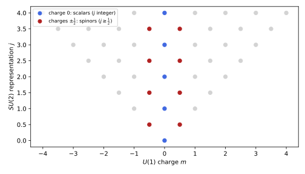
figures/sd-frobenius-s2.sage.
Definition 14 (Homogeneous spinor bundle) Let G/H be a coset space of compact groups (Definition 2 of Homogeneous spaces and fibre bundles) with reductive decomposition \mathfrak{g} = \mathfrak{h} \oplus \mathfrak{m} (Definition 5 of Homogeneous spaces and fibre bundles) and an invariant metric, so that the isotropy representation (Definition 3 of Homogeneous spaces and fibre bundles) maps H into SO(\mathfrak{m}). If it lifts to \tau : H \to \mathrm{Spin}(\mathfrak{m}), the homogeneous spinor bundle is G \times_H S, with S the spinor space of \mathfrak{m}; its sections are the functions \psi : G \to S with \psi(gh) = \tau(h)^{-1}\psi(g), on which G acts by left translation Camporesi and Higuchi (1995, sec. 5, eq. (5.3) and footnote 3), Dolan (2003, App. A).
Veriphy. Pending.
Lean. Pending.
Sage. Pending.
For S^2 = SU(2)/U(1) the isotropy representation is the rotation of the tangent plane, and its lift to \mathrm{Spin}(2) needs half the angle. The first example shows that the lift exists because the U(1) in SU(2) is already the double cover of the rotations.
Example 82 (S^2 = SU(2)/U(1)) H = \{e^{\alpha T_3}\} acts on \mathfrak{m} = \operatorname{span}(T_1, T_2) by rotation by \alpha ([T_3, T_1] = T_2), and e^{\alpha T_3} has period 4\pi in SU(2). The spin lift is \tau(e^{\alpha T_3}) = e^{\mp i\alpha/2} on the two Weyl spinors (Example 32), single-valued on H because \alpha has period 4\pi. Spinor fields are functions on SU(2) of U(1) charges \pm\tfrac12 (Figure 13): the spin structure of S^2 (Example 44).
Veriphy. Pending.
Lean. Pending.
Sage. Pending.
Spheres of every dimension are cosets of spin groups. The second example describes the homogeneous spinor bundle there, the setting of Camporesi and Higuchi (1995, sec. 5).
Example 83 (S^n = \mathrm{Spin}(n + 1)/\mathrm{Spin}(n)) \mathrm{Spin}(n + 1) acts transitively on S^n with isotropy \mathrm{Spin}(n), whose isotropy representation on \mathfrak{m} = \mathbb{R}^n is the vector representation; its spin lift is the identity of \mathrm{Spin}(n), and \tau is the spinor representation itself (the sum of the two Weyl representations for even n). Spinor fields are functions on \mathrm{Spin}(n + 1) transforming under \mathrm{Spin}(n) like spinors.
Veriphy. Pending.
Lean. Pending.
Sage. Pending.
The lift of the isotropy representation can fail, and then the coset is not spin. The third example finds this on CP^2, the case of Example 46 seen from group theory.
Example 84 (CP^2 = SU(3)/U(2)) H = U(2) acts on \mathfrak{m} \cong \mathbb{C}^2 through the fundamental representation twisted by a power of \det A, a map U(2) \to U(2) \subset SO(4). On spinors the U(1) factor of H would have to act with half-integral charges that are not single-valued on H, the group-theoretic form of w_2(CP^2) \neq 0 (Example 46). Tensoring with a U(1) representation of half-odd charge makes the charges integral; this is the spin-c structure of Example 55, and the gauge charge Y of Dolan (2003, sec. 2, example iii).
Veriphy. Pending.
Lean. Pending.
Sage. Pending.
The lift on S^2 uses the double cover of the isotropy circle. The first exercise checks the charges with the explicit matrices of SU(2).
Exercise 92 (The isotropy lift on S^2) With T_a = -\tfrac{i}{2}\sigma_a, compute e^{\alpha T_3}T_1e^{-\alpha T_3} and show that it is the rotation of (T_1, T_2) by \alpha. Show that the spinor lift of this rotation acts on the Weyl spinors by e^{\mp i\alpha/2} and that e^{\alpha T_3} itself has eigenvalues e^{\mp i\alpha/2}.
e^{\alpha T_3} = \operatorname{diag}(e^{-i\alpha/2}, e^{i\alpha/2}) and e^{\alpha T_3}\sigma_1e^{-\alpha T_3} = \cos\alpha\, \sigma_1 + \sin\alpha\,\sigma_2, so T_1 \mapsto \cos\alpha\,T_1 + \sin\alpha\,T_2. The spinor lift of a rotation by \alpha is e^{\pm i\alpha\sigma_3/2} (Example 26), with eigenvalues e^{\mp i\alpha/2} on the two Weyl spinors, the same as those of e^{\alpha T_3}: the isotropy group is its own spin lift, and the spinor charges are those of the fundamental representation of SU(2) restricted to U(1).
Veriphy. Pending.
Lean. Pending.
Sage. Pending.
The multiplicity of a representation of G in the spinor fields is computed by restriction to H. The second exercise does this on S^2 for both scalars and spinors.
Exercise 93 (Counting by restriction) For each j \leq 4, restrict V_j of SU(2) to U(1) and count how often the charges 0 and \pm\tfrac12 occur. Deduce that the scalar fields on S^2 contain each integer j once (the spherical harmonics, Definition 15 of Fourier analysis) and the spinor fields contain each half-integer j twice, once for each Weyl spinor.
V_j restricted to U(1) is \bigoplus_{m = -j}^jm, each charge once. Charge 0 occurs iff j is an integer, once; charges +\tfrac12 and -\tfrac12 occur iff j is half-integral, once each. So scalars: V_j with multiplicity 1 for j \in \mathbb{Z}_{\geq0}; spinors: V_j with multiplicity 2 for j \in \mathbb{Z}_{\geq0} + \tfrac12, the dimensions 2(2j + 1) of the eigenspaces of D^2 on S^2.
Veriphy. Pending.
Lean. Pending.
Sage. Pending.
The six-dimensional coset SU(3)/(U(1) \times U(1)) has two U(1) charges, and the restriction from SU(3) is a two-dimensional weight count. The third exercise performs it for the spinor charges.
Exercise 94 (Restriction to the maximal torus) With Sage, list the weights of the representations (p, \bar p) of SU(3) with p + \bar p \leq 3 and count, for each, how many weights equal a given U(1) \times U(1) charge (T, Y) (with the normalisation of Dolan (2003, eq. (69))). Find the smallest representations containing (T, Y) = (2, 0) and (T, Y) = (0, 2).
Weights of (p, \bar p) are read off with WeylCharacterRing; the multiplicity of (T, Y) is the weight multiplicity. The fundamental has the charges (1, 1), (-1, 1), (0, -2), and all other weights are sums of these. (2, 0) first occurs in the adjoint (1, 1), as a root, and (0, 2) already in the antifundamental (0, 1), as minus a weight of the fundamental:
from collections import Counter
W = WeylCharacterRing("A2")
def charges(p, pb):
ch = W(p + pb, pb, 0) # highest weight in the epsilon basis of gl(3)
out = Counter()
for wt, mult in ch.weight_multiplicities().items():
e = list(wt.to_vector()); m = sum(e) / 3; e = [x - m for x in e]
out[(e[0] - e[1], e[0] + e[1] - 2 * e[2])] += mult # T = 2 I_3, Y with the 3 at (1,1), (-1,1), (0,-2)
return out
print("charges of the 3:", dict(charges(1, 0)))
for (p, pb) in ((1, 0), (0, 1), (1, 1), (2, 0), (0, 2), (3, 0), (2, 1)):
c = charges(p, pb)
print("(%d,%d), dim %2d: multiplicity of (2,0): %d, of (0,2): %d, of (0,0): %d" % (p, pb, W(p + pb, pb, 0).degree(), c[(2, 0)], c[(0, 2)], c[(0, 0)]))Output:
charges of the 3: {(1, 1): 1, (-1, 1): 1, (0, -2): 1}
(1,0), dim 3: multiplicity of (2,0): 0, of (0,2): 0, of (0,0): 0
(0,1), dim 3: multiplicity of (2,0): 0, of (0,2): 1, of (0,0): 0
(1,1), dim 8: multiplicity of (2,0): 1, of (0,2): 0, of (0,0): 2
(2,0), dim 6: multiplicity of (2,0): 0, of (0,2): 1, of (0,0): 0
(0,2), dim 6: multiplicity of (2,0): 0, of (0,2): 0, of (0,0): 0
(3,0), dim 10: multiplicity of (2,0): 1, of (0,2): 0, of (0,0): 1
(2,1), dim 15: multiplicity of (2,0): 0, of (0,2): 0, of (0,0): 0Veriphy. Pending.
Lean. Pending.
Sage. Pending.
Frobenius reciprocity turns the description of spinor fields as H-equivariant functions into a list of representations of G with multiplicities. The theorem states it in the form of Camporesi and Higuchi (1995, eq. (5.3)).
Theorem 7 (Frobenius reciprocity) The square-integrable sections of G \times_H S decompose under G as L^2(G \times_H S) \cong \bigoplus_\lambda V_\lambda \otimes \operatorname{Hom}_H(V_\lambda, S) , \tag{21} the sum over the irreducible representations V_\lambda of G: V_\lambda occurs as many times as the representation \tau of H on S occurs in the restriction of V_\lambda to H (summed over the irreducible pieces of \tau). For S = \mathbb{C} with trivial \tau this is the mode expansion Equation 22 of Fourier analysis Camporesi and Higuchi (1995, eq. (5.3)).
Veriphy. Pending.
Lean. Pending.
Sage. Pending.
On S^2 the theorem reproduces the count of Exercise 93. The first example states it and identifies the spinor harmonics with the matrix coefficients of SU(2).
Example 85 (Spinor harmonics on S^2) For S^2 the theorem gives \bigoplus_{j \in \mathbb{Z} + 1/2}V_j \otimes \mathbb{C}^2, and the sections are spanned by the matrix coefficients D^j_{m, \pm1/2}(g) of Theorem 6 of Fourier analysis: the spinor (spin-weighted) harmonics. Their U(1) charge in the second index is the spinor charge, and the first index labels the 2j + 1 states of the multiplet.
Veriphy. Pending.
Lean. Pending.
Sage. Pending.
On S^n the restriction of the representations of \mathrm{Spin}(n + 1) to \mathrm{Spin}(n) is given by the classical branching rules. The second example uses them to find which representations carry spinor fields.
Example 86 (Spinor fields on S^n) The representations of \mathrm{Spin}(n + 1) containing the spinor representation of \mathrm{Spin}(n) are those with highest weight (l + \tfrac12, \tfrac12, \dots, \tfrac12) (and (l + \tfrac12, \tfrac12, \dots, -\tfrac12) for odd n), l \geq 0, each containing it once Camporesi and Higuchi (1995, sec. 5, after eq. (5.6)); their dimensions are the multiplicities of Theorem 5 (Exercise 78).
Veriphy. Pending.
Lean. Pending.
Sage. Pending.
For scalars on symmetric spaces each representation occurs at most once, but this fails for general bundles. The third example notes this, which is why the multiplicities in Equation 21 matter.
Example 87 (Multiplicities larger than one) On S^2 the spinor bundle is reducible (\tau = (+\tfrac12) \oplus (-\tfrac12)), and each V_j, j half-integral, occurs twice, once for each piece. Camporesi and Higuchi (1995, after eq. (5.3)) notes that for arbitrary bundles on arbitrary symmetric spaces the multiplicity \xi_\lambda can exceed one, while for scalars on symmetric spaces and for the spheres and complex projective spaces it is at most one per irreducible piece.
Veriphy. Pending.
Lean. Pending.
Sage. Pending.
The theorem is the abstract form of a concrete statement about matrix coefficients. The first exercise proves it in that form.
Exercise 95 (Proof by matrix coefficients) For an H-equivariant \psi : G \to S expand each component by Equation 21 of Fourier analysis. Show that \psi(gh) = \tau(h)^{-1}\psi(g) forces the coefficients \hat\psi^\lambda to intertwine V_\lambda|_H and \tau, and that the space of such coefficients for fixed \lambda is V_\lambda \otimes \operatorname{Hom}_H(V_\lambda, S).
A section is a vector \psi in L^2(G) \otimes S invariant under the right action of H combined with \tau; by Theorem 6 of Fourier analysis, L^2(G) = \bigoplus V_\lambda \otimes V_\lambda^* with H acting on V_\lambda^*, so the invariants are \bigoplus V_\lambda \otimes (V_\lambda^* \otimes S)^H = \bigoplus V_\lambda \otimes \operatorname{Hom}_H(V_\lambda, S).
Veriphy. Pending.
Lean. Pending.
Sage. Pending.
The multiplicity in Equation 21 can be computed as an integral of characters over H. The second exercise uses this form on S^2 with Sage.
Exercise 96 (Multiplicities by characters) The multiplicity of \tau in V_\lambda|_H is \int_H\overline{\chi_\tau(h)}\chi_\lambda(h)\,dh. For H = U(1) \subset SU(2), \chi_j(e^{\alpha T_3}) = \sum_{m = -j}^je^{im\alpha}; compute numerically \frac{1}{4\pi}\int_0^{4\pi}e^{-iq\alpha}\chi_j \,d\alpha for q = 0, \tfrac12 and j \leq 3.
The integral is 1 when q \in \{-j, \dots, j\} and 0 otherwise, reproducing Exercise 93:
a = var("a")
for twoj in range(0, 7):
j = twoj / 2
chi = sum(exp(I * (j - k) * a) for k in range(twoj + 1))
row = []
for q in (0, 1/2):
val = numerical_integral(lambda t: real(exp(-I * q * t) * chi.subs(a=t)), 0, 4 * pi)[0] / (4 * pi.n())
row.append("q = %s: %.6f" % (q, val))
print("j = %s: " % j + ", ".join(row))Output:
j = 0: q = 0: 1.000000, q = 1/2: -0.000000
j = 1/2: q = 0: -0.000000, q = 1/2: 1.000000
j = 1: q = 0: 1.000000, q = 1/2: -0.000000
j = 3/2: q = 0: -0.000000, q = 1/2: 1.000000
j = 2: q = 0: 1.000000, q = 1/2: 0.000000
j = 5/2: q = 0: 0.000000, q = 1/2: 1.000000
j = 3: q = 0: 1.000000, q = 1/2: 0.000000Veriphy. Pending.
Lean. Pending.
Sage. Pending.
On S^3 = SU(2) \times SU(2)/SU(2) the theorem must reproduce the spectrum of Proposition 7 by a different route. The third exercise checks the representation content.
Exercise 97 (S^3 as a coset) S^3 = (SU(2) \times SU(2))/SU(2)_{\mathrm{diag}}, and the spinor representation of \mathrm{Spin}(3) = SU(2)_{\mathrm{diag}} is spin \tfrac12. Show that (j_1, j_2) contains spin \tfrac12 under the diagonal iff |j_1 - j_2| = \tfrac12, once, and that the dimensions (2j_1 + 1)(2j_2 + 1) of (j, j + \tfrac12) and (j + \tfrac12, j) are (l + 1)(l + 2) with l = 2j.
By the Clebsch-Gordan rule (Definition 24 of Lie groups and Lie algebras), V_{j_1} \otimes V_{j_2} contains V_{1/2} iff |j_1 - j_2| \leq \tfrac12 \leq j_1 + j_2 with j_1 + j_2 - \tfrac12 an integer, that is |j_1 - j_2| = \tfrac12, once. (2j + 1)(2j + 2) = (l + 1)(l + 2) with l = 2j; the two representations (j, j + \tfrac12) and (j + \tfrac12, j) carry the eigenvalues \pm(l + \tfrac32) of Proposition 7.
Veriphy. Pending.
Lean. Pending.
Sage. Pending.
On a symmetric space the Laplacian of the canonical connection is a difference of Casimir operators, and the curvature term of the Lichnerowicz formula is the Casimir of the spinor representation. The theorem combines these into a formula for the square of the Dirac operator, which we call Parthasarathy’s formula after its discoverer; we state it in the form of Dolan (2003, eqs. (15), (16), (67)).
Theorem 8 (Parthasarathy’s formula) Let G/H be a symmetric space with the metric induced by an invariant inner product on \mathfrak{g}, and let C_2(G, \lambda) and C_2(H, \cdot) be the Casimir operators in that normalisation. On the summand V_\lambda of Equation 21, D^2 = C_2(G, \lambda) + \frac{R}{8} . \tag{22} The Laplacian of the spin connection is \nabla^*\nabla = C_2(G, \lambda) - C_2(H, \tau) and the spinor representation has C_2(H, \tau) = R/8. If the spinors also carry a representation t of a gauge group H whose connection is the spin (canonical) connection, D^2 = C_2(G, \lambda) - C_2(H, t) + R/8; on non-symmetric cosets with the canonical connection, R/8 is replaced by C_2(H, \tau) Dolan (2003, eqs. (15), (16), (67)), Camporesi and Higuchi (1995, eqs. (5.6), (5.37)).
Veriphy. Pending.
Lean. Pending.
Sage. Pending.
On S^2 the formula gives the spectrum in one line. The first example carries out the computation shown in Figure 13.
Example 88 (S^2) With the normalisation in which V_j has C_2 = j(j + 1) and the unit sphere has R = 2, the spinor fields live on V_j, j \in \mathbb{Z}_{\geq0} + \tfrac12, and D^2 = j(j + 1) + \tfrac14 = (j + \tfrac12)^2: eigenvalues \pm(j + \tfrac12), with the multiplicities 2j + 1 of Example 69. The spinor Casimir is C_2(U(1), \pm\tfrac12) = \tfrac14 = \tfrac R8, and \nabla^*\nabla = j(j + 1) - \tfrac14.
Veriphy. Pending.
Lean. Pending.
Sage. Pending.
On the spheres of higher dimension the Casimir of \mathrm{Spin}(n + 1) is given by Freudenthal’s formula. The second example combines it with Equation 22, as Camporesi and Higuchi (1995, eqs. (5.41)-(5.48)) does.
Example 89 (S^n) For the highest weight \lambda_l = (l + \tfrac12, \tfrac12, \dots) of \mathrm{Spin}(n + 1), C_2(\lambda_l) = (\lambda_l, \lambda_l + 2\rho) = (l + \tfrac n2)^2 - \tfrac{n(n - 1)}{8}, and with R = n(n - 1), Equation 22 gives D^2 = (l + \tfrac n2)^2, the spectrum of Theorem 5 Camporesi and Higuchi (1995, eqs. (5.44), (5.48)).
Veriphy. Pending.
Lean. Pending.
Sage. Pending.
The six-dimensional nearly-Kähler cosets are not symmetric, and the formula needs the replacement of R/8. The third example states the setting of Dolan (2003, sec. 3) and the cosets of Chatzistavrakidis and Zoupanos (2009, sec. 2).
Example 90 (The nearly-Kähler cosets) The non-symmetric six-dimensional cosets G_2/SU(3), Sp(4)/(SU(2) \times U(1)) and SU(3)/(U(1) \times U(1)) carry G-invariant nearly-Kähler metrics Chatzistavrakidis and Zoupanos (2009, sec. 2). Their canonical connection has torsion T^\alpha = \tfrac12f^\alpha{}_{\beta\gamma}e^\beta \wedge e^\gamma and covariantly constant curvature, and the square of the Dirac operator of that connection is C_2(G, \lambda) - C_2(H, t) + C_2(H, \tau) Dolan (2003, eqs. (59)-(67)). On SU(3)/(U(1) \times U(1)) with two monopole charges (T, Y) the number of zero modes is the dimension of the SU(3) representation minimising C_2 Dolan (2003, eq. (70)).
Veriphy. Pending.
Lean. Pending.
Sage. Pending.
The relation \nabla^*\nabla = C_2(G) - C_2(H) comes from writing the Laplacian through the generators of G. The first exercise derives it.
Exercise 98 (The Laplacian as a difference of Casimirs) Let T_A be an orthonormal basis of \mathfrak{g} adapted to \mathfrak{h} \oplus \mathfrak{m}, acting on sections by left translation as differential operators D_A. On a symmetric space, show that \nabla_\alpha = D_\alpha (\alpha in \mathfrak{m}) for the canonical connection, so that -\sum_\alpha D_\alpha D_\alpha = -\sum_AD_AD_A + \sum_iD_iD_i, and identify the two sums with C_2(G, \lambda) and C_2(H, \tau) (Dolan (2003, eq. (15))).
On G \times_H S the generators of \mathfrak{h} act on an equivariant function through \tau (by the equivariance condition), so \sum_iD_iD_i = -C_2(H, \tau) in the sign convention where Casimirs of unitary representations are positive. The generators of \mathfrak{g} act on the summand V_\lambda of Equation 21, so -\sum_AD_AD_A = C_2(G, \lambda). The canonical connection of a symmetric space is the Levi-Civita one, and its covariant derivatives along \mathfrak{m} are the D_\alpha at the origin and, by invariance, everywhere. So \nabla^*\nabla = -\sum_\alpha D_\alpha D_\alpha = C_2(G, \lambda) - C_2(H, \tau).
Veriphy. Pending.
Lean. Pending.
Sage. Pending.
The value C_2(H, \tau) = R/8 is a short computation with the curvature of a symmetric space. The second exercise checks it on spheres with the Casimirs of Camporesi and Higuchi (1995, eq. (5.46)).
Exercise 99 (The spinor Casimir) With Sage, compute C_2(\tau) = (\tau, \tau + 2\rho_K) for the spinor representation of \mathrm{Spin}(n) (highest weight (\tfrac12, \dots, \tfrac12)) for n = 2, \dots, 8 in the normalisation where the vector representation has C_2 = n - 1, and compare with R/8 = n(n - 1)/8.
C_2(\tau) = n(n - 1)/8 in every case, as Camporesi and Higuchi (1995, eq. (5.46)) states for even n:
for n in range(3, 9):
typ = ["B", (n - 1) // 2] if n % 2 else ["D", n // 2]
A = RootSystem(typ).ambient_space(); rho = A.rho(); r = typ[1]
tau = A.from_vector_notation([1/2] * r); vec = A.from_vector_notation([1] + [0] * (r - 1))
C = lambda w: w.scalar(w + 2 * rho)
print("Spin(%d) (%s%d): C_2(vector) = %s, C_2(spinor) = %s, n(n-1)/8 = %s" % (n, typ[0], r, C(vec), C(tau), n * (n - 1) / 8))
print("Spin(2) = U(1): the spinor charge 1/2 has C_2 = (1/2)^2 = 1/4 = 2*1/8")Output:
Spin(3) (B1): C_2(vector) = 2, C_2(spinor) = 3/4, n(n-1)/8 = 3/4
Spin(4) (D2): C_2(vector) = 3, C_2(spinor) = 3/2, n(n-1)/8 = 3/2
Spin(5) (B2): C_2(vector) = 4, C_2(spinor) = 5/2, n(n-1)/8 = 5/2
Spin(6) (D3): C_2(vector) = 5, C_2(spinor) = 15/4, n(n-1)/8 = 15/4
Spin(7) (B3): C_2(vector) = 6, C_2(spinor) = 21/4, n(n-1)/8 = 21/4
Spin(8) (D4): C_2(vector) = 7, C_2(spinor) = 7, n(n-1)/8 = 7
Spin(2) = U(1): the spinor charge 1/2 has C_2 = (1/2)^2 = 1/4 = 2*1/8Veriphy. Pending.
Lean. Pending.
Sage. Pending.
On S^4 the formula with a gauge field gives the spectrum in an instanton background. The third exercise reproduces the case without gauge field from the SO(5) Casimirs of Dolan (2003, eqs. (36)-(43)).
Exercise 100 (S^4 from SO(5) Casimirs) With C_2(p, q) = \tfrac12(p^2 + q^2) + 2p + q and d(p, q) = \tfrac16(p + q + 3)(p - q + 1)(p + 2)(q + 1) for SO(5) Dolan (2003, eqs. (36)-(37)), spinors on S^4 without gauge field use (p, q) = (q + 1, q). With Sage, compute C_2 + \tfrac{R}{8} (R = 12) and d for q \leq 5, and compare with (q + 2)^2 and the multiplicity of Theorem 5.
C_2(q + 1, q) + \tfrac32 = (q + 2)^2, the eigenvalue squared for l = q, and d(q + 1, q) = \tfrac23(q + 1)(q + 2)(q + 3) = 4\binom{q + 3}{q}. The representation occurs twice in the spinor fields, once for each Weyl piece of \tau, and the 2d states split into d with eigenvalue q + 2 and d with -(q + 2) Dolan (2003, eq. (43)):
C2 = lambda p, q: (p ^ 2 + q ^ 2) / 2 + 2 * p + q
d = lambda p, q: (p + q + 3) * (p - q + 1) * (p + 2) * (q + 1) / 6
for q in range(6):
print("q = %d: C_2 + 3/2 = %s, (q+2)^2 = %d; d = %d, 4 binom(q+3, q) = %d" % (q, C2(q + 1, q) + 3/2, (q + 2) ^ 2, d(q + 1, q), 4 * binomial(q + 3, q)))Output:
q = 0: C_2 + 3/2 = 4, (q+2)^2 = 4; d = 4, 4 binom(q+3, q) = 4
q = 1: C_2 + 3/2 = 9, (q+2)^2 = 9; d = 16, 4 binom(q+3, q) = 16
q = 2: C_2 + 3/2 = 16, (q+2)^2 = 16; d = 40, 4 binom(q+3, q) = 40
q = 3: C_2 + 3/2 = 25, (q+2)^2 = 25; d = 80, 4 binom(q+3, q) = 80
q = 4: C_2 + 3/2 = 36, (q+2)^2 = 36; d = 140, 4 binom(q+3, q) = 140
q = 5: C_2 + 3/2 = 49, (q+2)^2 = 49; d = 224, 4 binom(q+3, q) = 224Veriphy. Pending.
Lean. Pending.
Sage. Pending.
Kähler and Calabi-Yau spaces
On a Kähler manifold the spinors are differential forms of type (0, q) and the Dirac operator is the Dolbeault operator plus its adjoint, so harmonic spinors are holomorphic objects counted by Hodge numbers. The figure shows the Hodge numbers of the two Calabi-Yau manifolds used below.
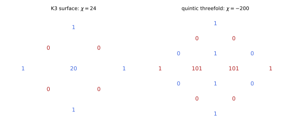
figures/sd-hodge-diamonds.sage.
Definition 15 (Dolbeault-Dirac operator) On a Kähler manifold M of complex dimension m with its canonical spin-c structure (Example 56), spinor fields are forms of type (0, \bullet) and the Dirac operator is the Dolbeault-Dirac operator D = \sqrt2\,(\bar\partial + \bar\partial^*) : \Omega^{0, \bullet}(M) \to \Omega^{0, \bullet}(M) , \tag{23} which maps even forms to odd ones and back, the two chiralities. If M is spin, the Dirac operator of the spin structure is Equation 23 acting on \Omega^{0, \bullet}(K^{1/2}). Harmonic spinors of positive and negative chirality are the Dolbeault cohomology H^{0, \mathrm{even}} and H^{0, \mathrm{odd}} (of K^{1/2} in the spin case), with dimensions given by Hodge numbers Greene (1997, sec. 2.9), Dolan (2003, sec. 2, example iii).
Veriphy. Pending.
Lean. Pending.
Sage. Pending.
On the complex plane the identification is a computation with the flat Dirac operator. The first example carries it out.
Example 91 (The complex plane) On \mathbb{C} with z = x + iy and \gamma^1 = \sigma_1, \gamma^2 = \sigma_2, D = i(\sigma_1\partial_x + \sigma_2\partial_y) = \begin{pmatrix} 0 & 2i\partial_z \\ 2i\partial_{\bar z} & 0 \end{pmatrix}. A spinor (f, g) corresponds to the form f + g\,d\bar z/\sqrt2 (unit-norm basis), and \sqrt2\bar\partial f = 2\partial_{\bar z}f\,(d\bar z/\sqrt2), \sqrt2\bar\partial^*(g\, d\bar z/\sqrt2) = -2\partial_zg: up to the phases i and -i the two off-diagonal entries are \sqrt2\bar\partial and \sqrt2\bar\partial^*.
Veriphy. Pending.
Lean. Pending.
Sage. Pending.
On CP^1 = S^2 the twisted spinor bundles are line bundles, and zero modes are holomorphic sections. The second example counts them, anticipating the index on the sphere.
Example 92 (CP^1 with a twist) On CP^1, K^{1/2} = \mathcal{O}(-1) (Exercise 60), so spinors with values in \mathcal{O}(M) are (0, \bullet)-forms with values in \mathcal{O}(M - 1). Positive-chirality zero modes are holomorphic sections, h^0(\mathcal{O}(M - 1)) = M for M \geq 1, and negative-chirality ones are h^1(\mathcal{O}(M - 1)) = h^0(\mathcal{O}(-M - 1)) = 0. Without a twist (M = 0) there are none, as the vanishing theorem requires.
Veriphy. Pending.
Lean. Pending.
Sage. Pending.
On CP^2 the canonical spin-c structure gives the single zero mode of Figure 8. The third example explains it as a Dolbeault cohomology group.
Example 93 (CP^2 with its canonical spin-c structure) For Q = 0 the spinors are \Omega^{0, \bullet}(CP^2), and the harmonic ones are H^{0, 0} \oplus H^{0, 1} \oplus H^{0, 2} with h^{0, 0} = 1, h^{0, 1} = h^{0, 2} = 0: a single zero mode of positive chirality, the constant function, and index 1. For general Q the forms take values in \mathcal{O}(Q) and the index is the holomorphic Euler characteristic (Q + 1)(Q + 2)/2 (Exercise 63), in agreement with Dolan (2003, eq. (56)).
Veriphy. Pending.
Lean. Pending.
Sage. Pending.
The matrix form of the Dirac operator on the plane can be checked symbolically. The first exercise does so and verifies the factor \sqrt2.
Exercise 101 (The flat Dolbeault-Dirac operator) With Sage, write \partial_z = \tfrac12(\partial_x - i\partial_y), \partial_{\bar z} = \tfrac12(\partial_x + i\partial_y), check that i(\sigma_1\partial_x + \sigma_2\partial_y) = \begin{pmatrix} 0 & 2i\partial_z \\ 2i\partial_{\bar z} & 0 \end{pmatrix}, and that its square is -4\partial_z\partial_{\bar z} = -\Delta on each component.
Both identities hold on arbitrary smooth functions:
x, y = var("x y", domain="real")
f = function("f")(x, y); g = function("g")(x, y)
dz = lambda h: (diff(h, x) - I * diff(h, y)) / 2
dzb = lambda h: (diff(h, x) + I * diff(h, y)) / 2
s1 = matrix(SR, [[0, 1], [1, 0]]); s2 = matrix(SR, [[0, -I], [I, 0]])
psi = matrix(SR, 2, 1, [f, g])
D = lambda p: I * (s1 * p.apply_map(lambda h: diff(h, x)) + s2 * p.apply_map(lambda h: diff(h, y)))
Dz = lambda p: matrix(SR, 2, 1, [2 * I * dz(p[1, 0]), 2 * I * dzb(p[0, 0])])
print("D = [[0, 2i d_z], [2i d_zbar, 0]]:", bool((D(psi) - Dz(psi)).simplify_full() == 0))
print("D^2 psi + Laplacian psi =", (D(D(psi)) + psi.apply_map(lambda h: diff(h, x, 2) + diff(h, y, 2))).simplify_full().list())
print("-4 d_z d_zbar f + Laplacian f =", (-4 * dz(dzb(f)) + diff(f, x, 2) + diff(f, y, 2)).simplify_full())Output:
D = [[0, 2i d_z], [2i d_zbar, 0]]: True
D^2 psi + Laplacian psi = [0, 0]
-4 d_z d_zbar f + Laplacian f = 0Veriphy. Pending.
Lean. Pending.
Sage. Pending.
Zero modes on CP^1 with a twist are polynomials of bounded degree in a coordinate. The second exercise counts them directly and compares with the index on the sphere computed later.
Exercise 102 (Holomorphic sections on CP^1) A holomorphic section of \mathcal{O}(d) on CP^1 is a holomorphic function f(z) on \mathbb{C} such that z^{-d}f(z) is holomorphic at z = \infty. Show that these are the polynomials of degree at most d, so h^0(\mathcal{O}(d)) = d + 1 for d \geq 0 and 0 for d < 0. Deduce the number of zero modes of the Dirac operator twisted by \mathcal{O}(M).
z^{-d}f(z) bounded near \infty means |f(z)| \leq C|z|^d for large |z|, so f is a polynomial of degree \leq d by the Cauchy estimates for the Taylor coefficients, as in Corollary 1 of Complex analysis and Exercise 54 of Complex analysis. There are d + 1 coefficients. With d = M - 1 (Example 92) there are M zero modes for M \geq 1, all of positive chirality, and by Serre duality h^1(\mathcal{O}(M - 1)) = h^0(\mathcal{O}(-M - 1)), which is |M| for M \leq -1: the zero modes then have negative chirality.
Veriphy. Pending.
Lean. Pending.
Sage. Pending.
The Euler characteristic of a Calabi-Yau threefold is determined by two Hodge numbers. The third exercise computes it for the quintic in two ways, as in Figure 14.
Exercise 103 (The Euler characteristic of the quintic) From the Hodge diamond of a Calabi-Yau threefold Greene (1997, sec. 2.11, p. 32) show \chi = 2(h^{1, 1} - h^{2, 1}), and evaluate it for the quintic (h^{1, 1} = 1, h^{2, 1} = 101). With Sage, compute \chi = \int c_3 from c(T) = (1 + x)^5/(1 + 5x) (the analogue of Aspinwall (1996, eqs. (9)-(12)) for the quintic) and \int_Xx^3 = 5.
Row by row in \chi = \sum(-1)^{p + q}h^{p, q}: rows 0 and 6 give h^{0, 0} + h^{3, 3} = 2, rows 1 and 5 vanish, rows 2 and 4 give 2h^{1, 1}, and row 3 gives -(h^{3, 0} + h^{2, 1} + h^{1, 2} + h^{0, 3}) = -(2 + 2h^{2, 1}), so \chi = 2h^{1, 1} - 2h^{2, 1}. For the quintic \chi = 2 - 202 = -200, and c_3 = -40x^3 gives -200 as well:
x = var("x")
c = ((1 + x) ^ 5 / (1 + 5 * x)).taylor(x, 0, 3)
print("c(T) up to x^3:", c)
print("int c_3 = 5 *", c.coefficient(x, 3), "=", 5 * c.coefficient(x, 3))
h11, h21 = 1, 101
print("2 (h11 - h21) =", 2 * (h11 - h21))
print("c_1 = coefficient of x:", c.coefficient(x, 1), "(vanishes: Calabi-Yau)")Output:
c(T) up to x^3: -40*x^3 + 10*x^2 + 1
int c_3 = 5 * -40 = -200
2 (h11 - h21) = -200
c_1 = coefficient of x: 0 (vanishes: Calabi-Yau)Veriphy. Pending.
Lean. Pending.
Sage. Pending.
On a Calabi-Yau manifold the holonomy group fixes some spinors, which are then parallel. The proposition counts them, using the description of holonomy groups in Aspinwall (1996, sec. 2.2) and the decomposition of spinors under the holonomy.
Proposition 8 (Parallel spinors on Calabi-Yau manifolds) Let M be a compact simply connected Riemannian spin manifold of real dimension 2m with holonomy SU(m) (a Calabi-Yau manifold, Greene (1997, sec. 2.11)). The spinor representation of \mathrm{Spin}(2m) restricted to SU(m) contains exactly two trivial summands, of the same chirality if m is even and of opposite chiralities if m is odd. Hence M has exactly two linearly independent parallel spinors, these are all its harmonic spinors (Theorem 6 with R = 0), and \dim\ker D^+ - \dim\ker D^- = \pm2 for m even (the sign fixed by the orientation) and 0 for m odd Aspinwall (1996, sec. 2.2 and Sec. 4.1, eq. (89)).
Veriphy. Pending.
Lean. Pending.
Sage. Pending.
The flat torus has trivial holonomy, so all spinors are parallel. The first example contrasts it with K3, whose holonomy SU(2) fixes only half of them.
Example 94 (T^4 and K3) On T^4 (holonomy trivial, periodic structure) all four constant spinors are parallel, two of each chirality, and the index is 0. On K3 (holonomy SU(2), one factor of \mathrm{Spin}(4) = SU(2) \times SU(2)) the Weyl spinors of one chirality are the doublet of the holonomy factor and those of the other are singlets: two parallel spinors, both of the same chirality, and index 2, which is \hat A(K3) = -\tfrac{1}{24}p_1 = -\tfrac18\tau = 2 with \tau = -16 Aspinwall (1996, eq. (20)).
Veriphy. Pending.
Lean. Pending.
Sage. Pending.
In six dimensions \mathrm{Spin}(6) = SU(4) and the holonomy SU(3) \subset SU(4) fixes one vector in \mathbf{4} and one in \bar{\mathbf{4}}. The second example draws the consequence for a Calabi-Yau threefold.
Example 95 (Calabi-Yau threefolds) Under SU(3) \subset SU(4) = \mathrm{Spin}(6), \mathbf{4} = \mathbf{3} \oplus \mathbf{1} and \bar{\mathbf{4}} = \bar{\mathbf{3}} \oplus \mathbf{1} (Exercise 104): one parallel spinor of each chirality, complex conjugates of each other (Proposition 3 for p - q = 6). The index of the untwisted Dirac operator is 0, and by Exercise 42 a ten-dimensional Weyl spinor on such a manifold gives one massless four-dimensional spinor of each chirality, which a Majorana condition identifies: four real supercharges, the minimal supersymmetry of four dimensions.
Veriphy. Pending.
Lean. Pending.
Sage. Pending.
Holonomy groups other than SU(m) also fix spinors. The third example lists the two exceptional cases of Berger’s classification quoted by Aspinwall (1996, sec. 2.2).
Example 96 (G_2 and \mathrm{Spin}(7) holonomy) On a seven-manifold with holonomy G_2 \subset \mathrm{Spin}(7) the spinor \mathbf{8} of \mathrm{Spin}(7) decomposes as \mathbf{7} \oplus \mathbf{1}: one parallel spinor, real by Example 25 (r = 7). On an eight-manifold with holonomy \mathrm{Spin}(7) \subset \mathrm{Spin}(8) one of the two Weyl spinors decomposes as \mathbf{7} \oplus \mathbf{1}: again one parallel spinor. Eleven-dimensional spinors on a G_2 manifold give 32/8 = 4 real supercharges in four dimensions (Example 40).
Veriphy. Pending.
Lean. Pending.
Sage. Pending.
The SU(3) singlets in the spinors of \mathrm{Spin}(6) can be found from the weights of Figure 5. The first exercise does this with the weights.
Exercise 104 (SU(3) singlets in the spinor of \mathrm{Spin}(6)) The roots of SU(3) \subset U(3) \subset SO(6) are \epsilon_i - \epsilon_j in the weight coordinates (h_1, h_2, h_3), and a weight is SU(3)-invariant iff it is orthogonal to all of them, h_1 = h_2 = h_3. With Sage, list the Dirac weights and their chiralities and find the invariant ones.
Only (\tfrac12, \tfrac12, \tfrac12) and (-\tfrac12, -\tfrac12, -\tfrac12) have equal entries, and they have opposite chirality (Figure 5): one singlet in each Weyl spinor:
import itertools
for h in itertools.product((1/2, -1/2), repeat=3):
chi = (-1) ^ 3 * prod(2 * t for t in h)
print(h, "chirality %+d" % chi, "<- SU(3) singlet" if h[0] == h[1] == h[2] else "")Output:
(1/2, 1/2, 1/2) chirality -1 <- SU(3) singlet
(1/2, 1/2, -1/2) chirality +1
(1/2, -1/2, 1/2) chirality +1
(1/2, -1/2, -1/2) chirality -1
(-1/2, 1/2, 1/2) chirality +1
(-1/2, 1/2, -1/2) chirality -1
(-1/2, -1/2, 1/2) chirality -1
(-1/2, -1/2, -1/2) chirality +1 <- SU(3) singletVeriphy. Pending.
Lean. Pending.
Sage. Pending.
The value \hat A(K3) = 2 can be obtained from the Euler characteristic alone. The second exercise uses the relation between signature and Euler characteristic quoted by Aspinwall (1996, eq. (20)).
Exercise 105 (\hat A(K3) from \chi) For a complex surface with c_1 = 0, the signature theorem gives \tau = \tfrac13\int(c_1^2 - 2c_2) = -\tfrac23\chi Aspinwall (1996, eq. (20)), and p_1 = 3\tau. Compute \tau, p_1 and \hat A = -p_1/24 for K3 (\chi = 24) and check that \hat A equals the number of parallel spinors of Proposition 8. What does the formula give for T^4?
\tau = -16, p_1 = -48, \hat A = 2, the two parallel spinors of positive chirality. For T^4, \chi = 0, so \tau = 0 and \hat A = 0: two parallel spinors of each chirality cancel in the index.
Veriphy. Pending.
Lean. Pending.
Sage. Pending.
Supersymmetry in lower dimensions is counted by parallel spinors times the components of the lower-dimensional spinor. The third exercise counts for the compactifications of this section.
Exercise 106 (Counting supercharges) A supercharge of D dimensions with Q real components, on a compact space whose Dirac spinor bundle of complex rank N_K has k parallel sections, leaves Q\,k/N_K real supercharges (each parallel spinor keeps a fraction 1/N_K). Evaluate it for ten dimensions (Q = 16) on T^6, K3 \times T^2 and a Calabi-Yau threefold, and for eleven dimensions (Q = 32) on a G_2 manifold.
T^6: all 8 internal spinors parallel, 16 supercharges (\mathcal{N} = 4 in four dimensions). K3 \times T^2: holonomy SU(2) fixes half, 8 supercharges (\mathcal{N} = 2). Calabi-Yau threefold: one quarter of the Weyl spinor, 4 supercharges (\mathcal{N} = 1). G_2: one of eight, 32/8 = 4 (\mathcal{N} = 1), as in Example 96 and Aspinwall (1996, sec. 4.1), where K3 preserves half of the supersymmetries of a torus.
Veriphy. Pending.
Lean. Pending.
Sage. Pending.
Orbifolds
Quotienting a space by a finite group of symmetries projects out the fields that are not invariant. The figure shows the simplest case, the interval S^1/\mathbb{Z}_2, where the projection keeps a zero mode of one chirality only.
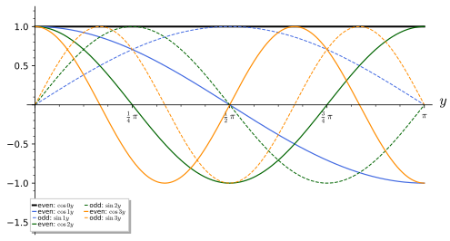
figures/sd-orbifold-modes.sage.
Definition 16 (Orbifold projection) Let a finite group \Gamma act on a spin manifold K by isometries g whose action lifts to the spinor bundle, \psi \mapsto U_g\,\psi \circ g^{-1} with U_g covering the differential of g and U_gU_h = U_{gh} (for orientation-reversing g, U_g is taken in the pin group of Trautman (1995, sec. 3), and the lifted action commutes with the Dirac operator up to sign). The spinor fields on the orbifold K/\Gamma are the \Gamma-invariant spinor fields on K, and the Dirac operator of K/\Gamma is the restriction of that of K; its zero modes are the \Gamma-invariant zero modes of K. Points with non-trivial stabiliser are the fixed points, where K/\Gamma is locally \mathbb{R}^n/\Gamma_x Aspinwall (1996, sec. 2.6), Chatzistavrakidis et al. (2010, sec. 2).
Veriphy. Pending.
Lean. Pending.
Sage. Pending.
The circle modulo the reflection y \mapsto -y is an interval with two fixed points. The first example finds its chiral zero mode.
Example 97 (S^1/\mathbb{Z}_2) For a five-dimensional spinor on \mathbb{R}^{1, 3} \times S^1 with \Gamma^4 = i\gamma_5 (Exercise 44), the reflection y \mapsto -y reverses the orientation of the circle and lifts to the pin transformation \psi(x, y) \mapsto \gamma_5\psi(x, -y): \gamma_5 anticommutes with \gamma^\mu and commutes with \Gamma^4, while \partial_y changes sign, so the five-dimensional Dirac operator changes only by an overall sign and its zero modes are mapped to zero modes. Invariant fields satisfy \psi(x, -y) = \gamma_5\psi(x, y): \psi_R is even, \psi_L odd (Figure 15). The zero modes of the circle are constant, so only \psi_R survives: one massless chiral fermion; the other lift U = -\gamma_5 keeps \psi_L.
Veriphy. Pending.
Lean. Pending.
Sage. Pending.
The orbifold T^4/\mathbb{Z}_2 is the K3 orbifold of Aspinwall (1996, eq. (49)). The second example counts its invariant constant spinors and compares with K3.
Example 98 (T^4/\mathbb{Z}_2) z \mapsto -z on T^4 = \mathbb{C}^2/\mathbb{Z}^4 has 16 fixed points Aspinwall (1996, sec. 2.6). It is the rotation by \pi in two planes, which lifts to U = \gamma^1\gamma^2\gamma^3\gamma^4 = \pm\gamma_* (a product of the lifts \gamma^1\gamma^2 and \gamma^3\gamma^4 of the two rotations, Example 26), and U^2 = 1. The invariant constant spinors are those of one chirality: two, as on K3 (Example 94); the orbifold has holonomy \mathbb{Z}_2 \subset SU(2), and blowing up its sixteen singular points gives a smooth K3.
Veriphy. Pending.
Lean. Pending.
Sage. Pending.
Orbifolds by rotations of \mathbb{C}^3 in SU(3) preserve one spinor of each chirality, like Calabi-Yau threefolds. The third example checks this for \mathbb{Z}_3, the group used by Chatzistavrakidis et al. (2010, sec. 2) to obtain chiral fermions.
Example 99 (T^6/\mathbb{Z}_3) The rotation by angles 2\pi(\tfrac13, \tfrac13, -\tfrac23) in three complex planes lies in SU(3) (the angles add to 0). It acts on a Dirac weight (h_1, h_2, h_3) of \mathrm{Spin}(6) by \exp(2\pi i(\tfrac13h_1 + \tfrac13h_2 - \tfrac23h_3)), which is 1 exactly for (\pm\tfrac12, \pm\tfrac12, \pm\tfrac12) with equal signs: one invariant spinor of each chirality (Exercise 107). The same \mathbb{Z}_3 acting on gauge indices by \gamma_3 = \operatorname{diag}(1, \omega, \omega^2) projects a gauge theory to chiral bifundamental fermions Chatzistavrakidis et al. (2010, eqs. (5)-(9)).
Veriphy. Pending.
Lean. Pending.
Sage. Pending.
The phases by which a rotation acts on spinors can be listed for any orbifold group. The first exercise does this for several \mathbb{Z}_N actions on T^6.
Exercise 107 (Invariant spinors of T^6/\mathbb{Z}_N) With Sage, for the rotations 2\pi v with v = (\tfrac13, \tfrac13, -\tfrac23), (\tfrac14, \tfrac14, -\tfrac12), (\tfrac16, \tfrac13, -\tfrac12) and (\tfrac13, 0, 0), choose the lift \pm\exp(2\pi iv\cdot h) whose Nth power is 1, count the Dirac weights h on which it is 1, and give their chiralities. Which actions are in SU(3), and what do the counts say?
The first three have \sum v_i = 0, lie in SU(3) and keep one spinor of each chirality, h = \pm(\tfrac12, \tfrac12, \tfrac12). The rotation in a single plane is not in SU(3); it needs the lift with the sign -1, whose phases -e^{\pm i\pi/3} are never 1, so it keeps no spinor:
import itertools
for v, N in (((1/3, 1/3, -2/3), 3), ((1/4, 1/4, -1/2), 4), ((1/6, 1/3, -1/2), 6), ((1/3, 0, 0), 3)):
W = list(itertools.product((1/2, -1/2), repeat=3))
lifts = [eps for eps in (1, -1) if all(bool(exp(2 * pi * I * N * sum(vi * hi for vi, hi in zip(v, h))) * eps ^ N == 1) for h in W)]
if not lifts:
print("v =", v, ": no lift to spinors as a Z_%d action" % N); continue
eps = lifts[0]
inv = [h for h in W if bool(eps * exp(2 * pi * I * sum(vi * hi for vi, hi in zip(v, h))) == 1)]
print("v = %s (sum %s), lift sign %+d: invariant weights %s, chiralities %s" % (v, sum(v), eps, inv, [(-1) ^ 3 * prod(2 * t for t in h) for h in inv]))Output:
v = (1/3, 1/3, -2/3) (sum 0), lift sign +1: invariant weights [(1/2, 1/2, 1/2), (-1/2, -1/2, -1/2)], chiralities [-1, 1]
v = (1/4, 1/4, -1/2) (sum 0), lift sign +1: invariant weights [(1/2, 1/2, 1/2), (-1/2, -1/2, -1/2)], chiralities [-1, 1]
v = (1/6, 1/3, -1/2) (sum 0), lift sign +1: invariant weights [(1/2, 1/2, 1/2), (-1/2, -1/2, -1/2)], chiralities [-1, 1]
v = (1/3, 0, 0) (sum 1/3), lift sign -1: invariant weights [], chiralities []Veriphy. Pending.
Lean. Pending.
Sage. Pending.
The mode expansion on S^1/\mathbb{Z}_2 follows from that on the circle by symmetrisation. The second exercise writes it out and finds the masses.
Exercise 108 (The tower on S^1/\mathbb{Z}_2) On the circle of radius R, expand \psi_R(x, y) = \sum_n\chi_n(x)\cos(ny/R) and \psi_L(x, y) = \sum_{n \geq 1}\xi_n(x)\sin( ny/R) for the invariant fields of Example 97. Show that i\Gamma^4\partial_y pairs \chi_n with \xi_n into a Dirac spinor of mass n/R for n \geq 1 and leaves \chi_0 massless and right-handed.
\partial_y\cos(ny/R) = -\tfrac nR\sin(ny/R) and \partial_y\sin(ny/R) = \tfrac nR\cos(ny/R), so the internal operator maps the nth even mode to the nth odd mode and back, with factor \tfrac nR; together with the chirality-flipping \Gamma^4 = i\gamma_5 this is a mass term coupling \chi_n (right) and \xi_n (left), mass n/R (Exercise 41). The mode n = 0 exists only in the even sector, so \chi_0 is massless and right-handed.
Veriphy. Pending.
Lean. Pending.
Sage. Pending.
A lift of the orbifold group to spinors must be a homomorphism, and this can fail. The third exercise shows that the rotation by \pi of the plane does not lift to an action of \mathbb{Z}_2 on spinors, while the rotation by \pi in two planes does.
Exercise 109 (When the group does not lift) Show that the lifts of the rotation by \pi in a plane are \pm\gamma^1\gamma^2, which square to -1, so T^2/\mathbb{Z}_2 (with z \mapsto -z) has no \mathbb{Z}_2 action on spinors, only a \mathbb{Z}_4 one. Show that the rotation by \pi in two planes lifts to \gamma^1\gamma^2\gamma^3\gamma^4, which squares to +1, as used in Example 98.
S(\pi) = \cos\tfrac\pi2 + \sin\tfrac\pi2\gamma^1\gamma^2 = \gamma^1\gamma^2 (Example 26) and (\gamma^1\gamma^2)^2 = -1: applying it twice gives -1, the lift of the rotation by 2\pi. For two planes, (\gamma^1\gamma^2\gamma^3\gamma^4)^2 = (\gamma^1\gamma^2)^2(\gamma^3\gamma^4)^2 = (-1)(-1) = 1, since the two factors commute. On T^2/\mathbb{Z}_2 fermions must therefore be combined with an extra phase i (a gauge or fermion-number twist) to define the orbifold.
Veriphy. Pending.
Lean. Pending.
Sage. Pending.
Exercises
The exercises of this part combine group manifolds, coset spaces, Calabi-Yau spaces and orbifolds. They prepare the twisted Dirac operators of the next part, where gauge fields on these spaces change the zero modes.
The real projective space \mathbb{R}P^3 = S^3/\mathbb{Z}_2 is both a group quotient and an orbifold without fixed points. The first integrative exercise computes its Dirac spectrum from that of SU(2) and compares with Trautman (1995, Prop. 9).
Exercise 110 (The spectrum of \mathbb{R}P^3) \mathbb{R}P^3 = SU(2)/\{\pm1\}, with -1 acting by left multiplication. In the left-invariant frame the spinor components are functions on SU(2), and -1 acts on V_j \otimes V_j^* by (-1)^{2j} (times \pm1 for the two spin structures). With Sage, list the eigenvalues and multiplicities of D on \mathbb{R}P^3 for the spin structure keeping integer j, and compare with Trautman’s spectrum \{-\tfrac12 \pm (2l + 2)\} with multiplicity 2\binom{|\lambda| + 1/2}{|\lambda| - 3/2}.
Integer j gives the eigenvalues 2j + \tfrac32 = \tfrac32, \tfrac72, \dots and -(2j + \tfrac12) = -\tfrac52, -\tfrac92, \dots (j \geq 1), which are -\tfrac12 + (2l + 2) and -\tfrac12 - (2l + 2); the multiplicities agree with Trautman’s formula, and the spectrum is not symmetric. The other spin structure keeps half-integer j and gives the mirror image:
from collections import Counter
spec = Counter()
for twoj in range(0, 12, 2):
j = twoj / 2
spec[2 * j + 3/2] += (2 * j + 1) * (2 * j + 2)
if j > 0: spec[-(2 * j + 1/2)] += (2 * j + 1) * 2 * j
for lam in sorted(spec, key=abs)[:8]:
a = abs(lam)
print("lambda = %5s: multiplicity %3d, Trautman: %3d" % (lam, spec[lam], 2 * binomial(a + 1/2, a - 3/2)))
print("Trautman's eigenvalues -1/2 +- (2l + 2) for l = 0..3:", sorted([-1/2 + (2 * l + 2) for l in range(4)] + [-1/2 - (2 * l + 2) for l in range(4)], key=abs))Output:
lambda = 3/2: multiplicity 2, Trautman: 2
lambda = -5/2: multiplicity 6, Trautman: 6
lambda = 7/2: multiplicity 12, Trautman: 12
lambda = -9/2: multiplicity 20, Trautman: 20
lambda = 11/2: multiplicity 30, Trautman: 30
lambda = -13/2: multiplicity 42, Trautman: 42
lambda = 15/2: multiplicity 56, Trautman: 56
lambda = -17/2: multiplicity 72, Trautman: 72
Trautman's eigenvalues -1/2 +- (2l + 2) for l = 0..3: [3/2, -5/2, 7/2, -9/2, 11/2, -13/2, 15/2, -17/2]Veriphy. Pending.
Lean. Pending.
Sage. Pending.
The Euler characteristic of a coset G/H with \operatorname{rank}G = \operatorname{rank}H is the ratio of the orders of the Weyl groups. The second integrative exercise computes it for the three nearly-Kähler cosets of Example 90.
Exercise 111 (Euler characteristics of the nearly-Kähler cosets) With Sage, compute |W_G|/|W_H| for G_2/SU(3), Sp(4)/(SU(2) \times U(1)) and SU(3)/(U(1) \times U(1)), and compare with the Euler characteristics 2, 4, 6 quoted by Chatzistavrakidis and Zoupanos (2009, sec. 4). Why is the Euler characteristic of S^6 = G_2/SU(3) equal to 2?
|W_{G_2}| = 12, |W_{SU(3)}| = 6: 2. |W_{Sp(4)}| = 8, |W_{SU(2) \times U(1)}| = 2: 4. |W_{SU(3)}| = 6, |W_{U(1)^2}| = 1: 6. These are the values of Chatzistavrakidis and Zoupanos (2009), where half of them counts the generations (Proposition 9). G_2/SU(3) is the six-sphere, \chi(S^6) = 1 + 1 = 2:
W = lambda typ: WeylGroup(typ).cardinality()
cases = [("G2/SU(3)", W(["G", 2]), W(["A", 2])), ("Sp(4)/(SU(2) x U(1))", W(["C", 2]), W(["A", 1])), ("SU(3)/(U(1) x U(1))", W(["A", 2]), 1)]
for name, wg, wh in cases:
print("%-22s |W_G| = %2d, |W_H| = %d, chi = %d, generations chi/2 = %d" % (name, wg, wh, wg / wh, wg / wh / 2))Output:
G2/SU(3) |W_G| = 12, |W_H| = 6, chi = 2, generations chi/2 = 1
Sp(4)/(SU(2) x U(1)) |W_G| = 8, |W_H| = 2, chi = 4, generations chi/2 = 2
SU(3)/(U(1) x U(1)) |W_G| = 6, |W_H| = 1, chi = 6, generations chi/2 = 3Veriphy. Pending.
Lean. Pending.
Sage. Pending.
Calabi-Yau spaces, orbifolds and tori differ in how many spinors their holonomy preserves. The third integrative exercise compares the three on the example of T^4, T^4/\mathbb{Z}_2 and K3.
Exercise 112 (Holonomy and parallel spinors) For T^4, T^4/\mathbb{Z}_2 and K3, give the holonomy group, the number of parallel spinors of each chirality (for the orbifold, the invariant constant spinors), and the index \dim\ker D^+ - \dim\ker D^-. Which of the three numbers is topological, and what do the results say about blowing up the orbifold?
T^4: trivial holonomy, (2, 2) parallel spinors, index 0. T^4/\mathbb{Z}_2: holonomy \mathbb{Z}_2 \subset SU(2), (2, 0) invariant spinors (Example 98), index 2 in the orbifold sense. K3: holonomy SU(2), (2, 0), index \hat A = 2. The index is topological, and the agreement between the orbifold and K3 reflects that resolving the sixteen singularities produces K3 Aspinwall (1996, sec. 2.6); the torus has the same topology as neither.
Veriphy. Pending.
Lean. Pending.
Sage. Pending.
Twisted Dirac operators and index theorems
A gauge field changes the Dirac operator by a potential term and its square by a coupling of the field strength to the spin, which can cancel the positive curvature term of the Lichnerowicz formula and create zero modes. Their number, counted with chirality, is the index of the operator, a topological invariant given by the Atiyah-Singer index theorem as the integral of a characteristic form. This part couples the Dirac operator to gauge fields following Dolan (2003, sec. 2) and Bilal (2008, secs. 3.7, 10 and 11), computes the zero modes on the sphere with a monopole by hand, states the index theorem with the \hat A genus and the Chern character, and evaluates it on spheres, K3 and Calabi-Yau threefolds, where it counts generations. The index is the Fredholm index of Definition 28 of Functional analysis, and its invariance under deformations is Theorem 17 of Functional analysis; the gauge potentials are those of Definition 19 of Homogeneous spaces and fibre bundles, anti-Hermitian as in Lie algebras and gauge fields.
Twisted Dirac operators
A spinor that also carries a charge or a gauge index feels the gauge field through its covariant derivative. On the sphere with a magnetic monopole the spectrum of the resulting operator can be computed exactly; the figure shows it as a function of the monopole charge.
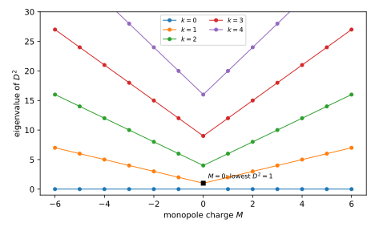
figures/sd-monopole-spectrum.sage.
Definition 17 (Twisted Dirac operator) Let E \to M be a Hermitian vector bundle with a unitary connection, given locally by an anti-Hermitian matrix-valued potential A = A_\mu dx^\mu (Definition 19 of Homogeneous spaces and fibre bundles) with field strength F = dA + A \wedge A. The twisted Dirac operator on sections of S \otimes E is D_A = i\gamma^a\big(\nabla_{e_a} \otimes 1 + 1 \otimes A(e_a)\big) , \tag{24} with \nabla the spin connection. It is formally self-adjoint, anticommutes with \gamma_* \otimes 1 in even dimension, and satisfies D_A^2 = \nabla^*\nabla + \tfrac14R - \tfrac12F_{ab}\gamma^a\gamma^b (Example 61) Dolan (2003, eqs. (2), (5)), Bilal (2008, eq. (11.14)).
Veriphy. Pending.
Lean. Pending.
Sage. Pending.
On the sphere a U(1) bundle is a monopole, described by two potentials related by a gauge transformation on the overlap. The first example writes them down for any charge, generalising the Hopf connection of Definition 23 of Homogeneous spaces and fibre bundles.
Example 100 (The monopole of charge M) On the unit sphere let A = ia with a_N = \tfrac M2(1 - \cos\theta)\,d\varphi on the northern patch and a_S = -\tfrac M2(1 + \cos\theta)\,d\varphi on the southern one; each is regular on its patch, and a_N - a_S = M\,d\varphi, the gauge transformation e^{iM\varphi}, single-valued iff M \in \mathbb{Z}. The field strength is F = i\,da = i\tfrac M2 \sin\theta\,d\theta \wedge d\varphi, so F_{12} = \tfrac{iM}{2} in the frame of Example 59, and the Chern number (Definition 24 of Homogeneous spaces and fibre bundles) is c_1 = \tfrac{1}{2\pi}\int da = M. The Hopf connection of Proposition 9 of Homogeneous spaces and fibre bundles has M = -1.
Veriphy. Pending.
Lean. Pending.
Sage. Pending.
On S^4 the analogue of the monopole is a homogeneous instanton of SU(2). The second example records it, as given by Dolan (2003, eqs. (45)-(47)).
Example 101 (The instanton on S^4) On the unit S^4 = SO(5)/SO(4) with orthonormal coframe e^1, \dots, e^4, the SU(2) field strength F^i = e^i \wedge e^4 + \tfrac12\epsilon_{ijk}e^j \wedge e^k is self-dual and has the SO(5) symmetry of the sphere; it is the spin connection of one factor of \mathrm{Spin}(4) = SU(2) \times SU(2) used as a gauge field, and its instanton number is 1. For fermions in the spin-J representation the index is \tfrac23J(J + 1)(2J + 1), equal to 1 for J = \tfrac12 Dolan (2003, eqs. (45)-(47)).
Veriphy. Pending.
Lean. Pending.
Sage. Pending.
A flat connection has no field strength but can still change the spectrum through its holonomy. The third example identifies the twisted boundary conditions of the torus as such connections.
Example 102 (Flat connections) On the circle, the constant potential A = i\tfrac\alpha R\,dy has F = 0 and holonomy e^{-2\pi i\alpha}; the twisted Dirac operator on periodic spinors is the Dirac operator with the twisted boundary condition of Definition 12 (Example 64). The term \tfrac12F_{ab}\gamma^a\gamma^b vanishes, so the Lichnerowicz formula is unchanged, but \nabla^*\nabla now has no zero modes for \alpha \notin \mathbb{Z}: flat connections can only remove zero modes, never create them on a manifold with R \geq 0.
Veriphy. Pending.
Lean. Pending.
Sage. Pending.
The two potentials of the monopole must give the same field strength and an integral Chern number. The first exercise checks both with Sage.
Exercise 113 (The monopole flux) With Sage, compute da_N and da_S for the potentials of Example 100, check that they agree, that a_N is regular at \theta = 0 (its \varphi component vanishes there like \theta^2) and a_S at \theta = \pi, and compute \tfrac{1}{2\pi}\int_{S^2}da.
Both give \tfrac M2\sin\theta\,d\theta \wedge d\varphi, the components vanish quadratically at the respective poles, and the flux is M:
th, ph, M = var("th ph M")
aN = M / 2 * (1 - cos(th)); aS = -M / 2 * (1 + cos(th)) # phi components of a = a_phi dphi
print("da_N = (%s) dtheta ^ dphi, da_S = (%s) dtheta ^ dphi" % (diff(aN, th), diff(aS, th)))
print("a_N - a_S =", (aN - aS).simplify_full(), "(the gauge transformation exp(i M phi))")
print("a_N near theta = 0:", aN.taylor(th, 0, 2), "; a_S near theta = pi:", aS.subs(th=pi - var("u")).taylor(var("u"), 0, 2))
print("(1/2pi) int da =", (integrate(integrate(diff(aN, th), th, 0, pi), ph, 0, 2 * pi) / (2 * pi)).simplify_full())Output:
da_N = (1/2*M*sin(th)) dtheta ^ dphi, da_S = (1/2*M*sin(th)) dtheta ^ dphi
a_N - a_S = M (the gauge transformation exp(i M phi))
a_N near theta = 0: 1/4*M*th^2 ; a_S near theta = pi: -1/4*M*u^2
(1/2pi) int da = MVeriphy. Pending.
Lean. Pending.
Sage. Pending.
The spectrum of the twisted operator must not depend on the gauge. The second exercise proves gauge covariance, which also shows that the two patches of the monopole define one operator.
Exercise 114 (Gauge covariance) Let g(x) be a unitary matrix-valued function and A' = gAg^{-1} - dg\,g^{-1}, \psi' = g\psi. Show that D_{A'}\psi' = gD_A\psi, so that D_{A'} = gD_Ag^{-1} has the same spectrum. Apply it to g = e^{iM\varphi} on the overlap of the two patches of the monopole.
(\nabla + A')(g\psi) = (dg)\psi + g\nabla\psi + gA\psi - (dg)\psi = g(\nabla + A)\psi, and \gamma^a commutes with g (they act on different indices). For the monopole, A_N - A_S = i(a_N - a_S) = iM\,d\varphi, which is -dg\,g^{-1} for g = e^{-iM\varphi}; so A_N is the gauge transform of A_S by g, the spinor fields on the two patches are related by \psi_N = e^{-iM\varphi}\psi_S on the overlap, and the two local operators are conjugate there. The transformation is single-valued exactly when M is an integer.
Veriphy. Pending.
Lean. Pending.
Sage. Pending.
The instanton field strength of Example 101 is self-dual, the property that makes it a minimum of the Yang-Mills action. The third exercise checks self-duality and the index formula on a few representations.
Exercise 115 (Self-duality and the instanton index) With Sage, represent the two-forms F^i = e^i \wedge e^4 + \tfrac12\epsilon_{ijk}e^j \wedge e^k by antisymmetric 4 \times 4 matrices in an orthonormal frame, apply the Hodge star ((\star F)_{ab} = \tfrac12\epsilon_{abcd}F_{cd}) and check \star F^i = F^i. Then tabulate \tfrac23J(J + 1)(2J + 1) for J = \tfrac12, \dots, 3 and compare with the zero-mode numbers \tfrac16(2I + 1)(2I + 2)(2I + 3), I = J - \tfrac12, of Dolan (2003, eq. (44)).
The three forms are self-dual, and the index and the zero-mode numbers agree for every J (1, 4, 10, 20, 35, 56):
def sgn(*p): return Permutation([int(a) + 1 for a in p]).sign() if len(set(p)) == len(p) else 0
def two_form(i):
# components F_ab of F = (1/2) F_ab e^a ^ e^b (indices 0..3, the fourth direction is index 3)
F = matrix(QQ, 4, 4)
F[i, 3], F[3, i] = 1, -1
for j in range(3):
for k in range(3):
F[j, k] += sgn(i, j, k)
return F
star = lambda F: matrix(QQ, 4, 4, lambda a, b: sum(sgn(a, b, c, d) * F[c, d] for c in range(4) for d in range(4)) / 2)
for i in range(3):
F = two_form(i)
print("F^%d components:" % (i + 1), F.rows(), " self-dual:", star(F) == F)
for twoJ in range(1, 7):
J = QQ(twoJ) / 2; Ii = J - 1/2
print("J = %s: index %s, zero modes (2I+1)(2I+2)(2I+3)/6 = %s" % (J, 2/3 * J * (J + 1) * (2 * J + 1), (2 * Ii + 1) * (2 * Ii + 2) * (2 * Ii + 3) / 6))Output:
F^1 components: [(0, 0, 0, 1), (0, 0, 1, 0), (0, -1, 0, 0), (-1, 0, 0, 0)] self-dual: True
F^2 components: [(0, 0, -1, 0), (0, 0, 0, 1), (1, 0, 0, 0), (0, -1, 0, 0)] self-dual: True
F^3 components: [(0, 1, 0, 0), (-1, 0, 0, 0), (0, 0, 0, 1), (0, 0, -1, 0)] self-dual: True
J = 1/2: index 1, zero modes (2I+1)(2I+2)(2I+3)/6 = 1
J = 1: index 4, zero modes (2I+1)(2I+2)(2I+3)/6 = 4
J = 3/2: index 10, zero modes (2I+1)(2I+2)(2I+3)/6 = 10
J = 2: index 20, zero modes (2I+1)(2I+2)(2I+3)/6 = 20
J = 5/2: index 35, zero modes (2I+1)(2I+2)(2I+3)/6 = 35
J = 3: index 56, zero modes (2I+1)(2I+2)(2I+3)/6 = 56Veriphy. Pending.
Lean. Pending.
Sage. Pending.
The index on the sphere
On the sphere with a monopole the zero modes can be found by solving a first-order equation in one variable. The figure shows the zero modes for M = 4: four functions peaked at different latitudes, which form one multiplet of the rotation group.
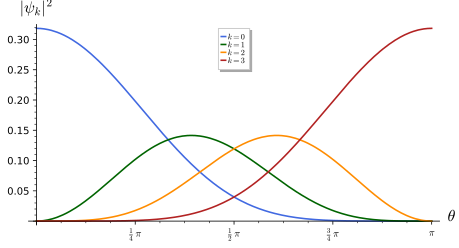
figures/sd-monopole-zero-modes.sage.
The theorem below is the central computation of this part: it finds all zero modes on the sphere with a monopole and their chirality, and so evaluates the index directly. The proof is a separation of variables in the coordinates of Example 59, and Dolan (2003, eqs. (24)-(32)) obtains the same result from Casimir operators.
Theorem 9 (Zero modes and index of the monopole) On the unit sphere with the monopole of charge M \neq 0 of Example 100, the twisted Dirac operator has exactly |M| linearly independent zero modes, all of chirality \operatorname{sign}(M) for \gamma_* = -\sigma_3; they form the irreducible representation of spin \tfrac{|M| - 1}{2} of SU(2). Hence \operatorname{ind}D_A^+ = \dim\ker D_A^+ - \dim\ker D_A^- = M = c_1 . \tag{25} The non-zero eigenvalues of D_A^2 are k(k + |M|), k \geq 1, with multiplicity 2(|M| + 2k) Dolan (2003, eqs. (28)-(32)), Bilal (2008, App. 14).
Veriphy. Pending.
Lean. Pending.
Sage. Pending.
The zero-mode equation separates in \theta and \varphi. The first example solves it for the component that carries the zero modes when M > 0.
Example 103 (Solving the zero-mode equation) With Equation 16 and \nabla_\varphi \to \nabla_\varphi + ia_N, the lower component v = e^{im\varphi}g(\theta) of a zero mode satisfies g' + \tfrac12\cot\theta\,g + \frac{m + a_\varphi}{\sin\theta}g = 0, with a_\varphi = \tfrac M2(1 - \cos\theta), whose solution is g = \sin^{-m - 1/2}\tfrac\theta2\,\cos^{m + M - 1/2}\tfrac\theta2. Frame components are antiperiodic, so m \in \mathbb{Z} + \tfrac12; regularity at the poles requires -m - \tfrac12 \geq 0 and m + M - \tfrac12 \geq 0, which allows m = -\tfrac12, \dots, -M + \tfrac12: M solutions for M > 0 and none for M \leq 0.
Veriphy. Pending.
Lean. Pending.
Sage. Pending.
The zero modes are polynomials in a complex coordinate, as for the Dolbeault operator of Example 92. The second example rewrites them in the stereographic coordinate.
Example 104 (Zero modes as polynomials) With m = -\tfrac12 - k, k = 0, \dots, M - 1, the solution is v_k = e^{-i\varphi/2}\cos^{M - 1}\tfrac\theta2\,\big(\tan \tfrac\theta2\,e^{-i\varphi}\big)^k = e^{-i\varphi/2}\cos^{M - 1}\tfrac\theta2\,\bar w^k with the stereographic coordinate w = \tan\tfrac\theta2\,e^{i\varphi}: a common factor times the polynomials of degree at most M - 1 in \bar w, the sections of a line bundle of degree M - 1. Their densities are drawn in Figure 17.
Veriphy. Pending.
Lean. Pending.
Sage. Pending.
The same counting on the flat plane gives the index only after “marginally normalisable” modes are included. The third example compares with the computation of Bilal (2008, App. 14), which the sphere makes clean.
Example 105 (The plane and the sphere) On \mathbb{R}^2 with the field of Bilal (2008, eq. (A.1)), of flux -2\pi m, the zero modes of one chirality are g(\bar z) (1 + z\bar z)^{-m/2} with g holomorphic in \bar z; they are square integrable for \deg g \leq m - 2 and only marginally so for \deg g = m - 1, and the index m counts both Bilal (2008, eqs. (A.5)-(A.8)). On the sphere the area element \sin\theta\,d\theta\,d\varphi makes all |M| modes genuinely normalisable: compactification removes the subtlety.
Veriphy. Pending.
Lean. Pending.
Sage. Pending.
Zero modes on the sphere are the lowest Landau level of a charged particle in the monopole field. The fourth example draws the connection made by Dolan (2003, sec. 1).
Example 106 (The lowest Landau level) D_A^2 = \nabla^*\nabla + \tfrac12 + \tfrac M2\sigma_3 (Exercise 68, with \sigma_3 = -\gamma_*) is the Hamiltonian of a non-relativistic spin-\tfrac12 particle on the sphere in the monopole field, with a Zeeman term. Its ground states have energy 0 and degeneracy |M|, the zero modes, and they are Haldane’s lowest Landau level on the sphere; the excited levels k(k + |M|) are the higher Landau levels Dolan (2003, sec. 1 and eqs. (29)-(31)).
Veriphy. Pending.
Lean. Pending.
Sage. Pending.
The regularity conditions of the first example decide the count. The first exercise checks them numerically for M = 3 by integrating |v|^2 near the poles.
Exercise 116 (Counting regular zero modes) With Sage, for M = 3 and the half-integers m from -\tfrac92 to \tfrac72, form g_m(\theta) of Example 103 and decide whether \int_0^\pi|g_m|^2\sin\theta\,d\theta converges and whether g_m is bounded. Do the same for the upper component, whose solution is \sin^{m - 1/2}\tfrac\theta2\cos^{-m - M - 1/2}\tfrac\theta2.
Exactly three values, m = -\tfrac12, -\tfrac32, -\tfrac52, give bounded (indeed smooth) lower components; no value gives an admissible upper component. The index is 3 - 0 = 3 = M:
M = 3
ms = [QQ(k) / 2 for k in range(-9, 9, 2)]
def status(a, b):
return ("bounded" if a >= 0 and b >= 0 else ("normalisable" if a > -1 and b > -1 else "excluded"))
lower = {m: status(-m - 1/2, m + M - 1/2) for m in ms}
upper = {m: status(m - 1/2, -m - M - 1/2) for m in ms}
for m in ms:
print("m = %5s: lower component %-12s upper component %s" % (m, lower[m], upper[m]))
nl = sum(1 for m in ms if lower[m] == "bounded"); nu = sum(1 for m in ms if upper[m] == "bounded")
print("zero modes: %d of chirality +1 (lower), %d of chirality -1 (upper); index = %d" % (nl, nu, nl - nu))Output:
m = -9/2: lower component excluded upper component excluded
m = -7/2: lower component excluded upper component excluded
m = -5/2: lower component bounded upper component excluded
m = -3/2: lower component bounded upper component excluded
m = -1/2: lower component bounded upper component excluded
m = 1/2: lower component excluded upper component excluded
m = 3/2: lower component excluded upper component excluded
m = 5/2: lower component excluded upper component excluded
m = 7/2: lower component excluded upper component excluded
zero modes: 3 of chirality +1 (lower), 0 of chirality -1 (upper); index = 3Veriphy. Pending.
Lean. Pending.
Sage. Pending.
The excited levels follow from the Casimir formula of Theorem 8 with the gauge field. The second exercise derives them as in Dolan (2003, eqs. (27)-(31)).
Exercise 117 (The spectrum from Casimirs) On the two components the U(1) charge is \tfrac{M \pm 1}{2}, and the Laplacian is \nabla^*\nabla = j(j + 1) - (\tfrac{M \pm 1}{2})^2 on V_j. Using D_A^2 = \nabla^*\nabla + \tfrac12 \pm \tfrac M2, show that both give E_j = \tfrac14((2j + 1)^2 - M^2), and with j = \tfrac{|M| - 1}{2} + k that E = k(k + |M|). With Sage, list the multiplicities of the first five levels for M = 3.
j(j + 1) - \tfrac14(M \pm 1)^2 + \tfrac12 \pm \tfrac M2 = j^2 + j + \tfrac14 - \tfrac{M^2}{4} = \tfrac14((2j + 1)^2 - M^2). For M = 3 the component of charge 1 starts at j = 1 and that of charge 2 at j = 2, so the level k = 0 has multiplicity 3 and the level k \geq 1 has 2(3 + 2k):
from collections import Counter
M = 3
levels = Counter()
for q in ((M - 1) / 2, (M + 1) / 2):
for twoj in range(int(2 * abs(q)), 20, 2):
j = twoj / 2
levels[((2 * j + 1) ^ 2 - M ^ 2) / 4] += 2 * j + 1
for E in sorted(levels)[:5]:
k = (-M + sqrt(M ^ 2 + 4 * E)) / 2
print("E = %3s = k(k + |M|) with k = %s: multiplicity %3d, formula %s" % (E, k, levels[E], M if k == 0 else 2 * (M + 2 * k)))Output:
E = 0 = k(k + |M|) with k = 0: multiplicity 3, formula 3
E = 4 = k(k + |M|) with k = 1: multiplicity 10, formula 10
E = 10 = k(k + |M|) with k = 2: multiplicity 14, formula 14
E = 18 = k(k + |M|) with k = 3: multiplicity 18, formula 18
E = 28 = k(k + |M|) with k = 4: multiplicity 22, formula 22Veriphy. Pending.
Lean. Pending.
Sage. Pending.
The sign of the index depends on conventions, while its absolute value does not. The third exercise traces the sign through the choices made in this chapter and compares with Dolan (2003).
Exercise 118 (The sign of the index) Show that reversing the orientation of the sphere (exchanging e_1 and e_2) changes \gamma_* to -\gamma_* and the sign of c_1, so Equation 25 is unchanged. Dolan (2003, eq. (32)) writes \nu = -M with \gamma^1 = \sigma_1, \gamma^2 = \sigma_2 and chirality \sigma_3: explain the difference. What happens under M \mapsto -M?
Exchanging e_1 and e_2 multiplies \gamma^1\gamma^2 by -1, hence \gamma_*, and reverses the orientation used to integrate da, hence c_1: both sides change sign together if one keeps the field fixed, and the formula holds in every orientation. Dolan (2003) counts chirality with \sigma_3 = -\gamma_*, which reverses the sign of the index: \nu = -M in his convention is +M in ours. Under M \mapsto -M the zero modes move to the other component (Example 103) and the index changes sign: the index is odd in the field, as c_1 is.
Veriphy. Pending.
Lean. Pending.
Sage. Pending.
Index theorems
The index on the sphere is the integral of the field strength, a characteristic class of the bundle. In higher dimensions the curvature of the manifold contributes as well, through the \hat A genus, whose generating function is drawn in the figure.
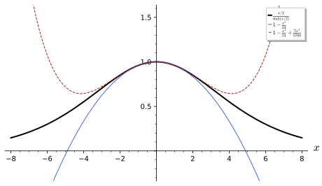
figures/sd-ahat-series.sage.
Definition 18 (\hat A genus) For a closed oriented manifold M whose Pontryagin classes are written with formal roots, \sum_jp_jt^j = \prod_j(1 + x_j^2t), the \hat A genus is the characteristic class \hat A(M) = \prod_j\frac{x_j/2}{\sinh(x_j/2)} = 1 - \frac{p_1}{24} + \frac{7p_1^2 - 4p_2}{5760} - \dots , \tag{26} represented by curvature forms (\hat A = 1 + \tfrac{1}{(4\pi)^2}\tfrac1{12}\operatorname{tr}R^2 + \dots); the number \hat A[M] = \int_M\hat A(M) vanishes unless \dim M is divisible by 4 Bilal (2008, eqs. (11.15)-(11.16)).
Veriphy. Pending.
Lean. Pending.
Sage. Pending.
Spheres have trivial Pontryagin classes in the degrees that matter. The first example evaluates the genus on them and compares with the absence of zero modes.
Example 107 (Spheres) S^{4k} bounds the ball, so all its Pontryagin numbers vanish and \hat A[S^{4k}] = 0; this agrees with the absence of harmonic spinors on spheres (Theorem 6), since the index of the untwisted Dirac operator is \hat A[M] (Theorem 10). On S^2 and S^6 the genus vanishes for dimensional reasons.
Veriphy. Pending.
Lean. Pending.
Sage. Pending.
On a four-manifold the genus is -p_1/24, and p_1 is three times the signature. The second example evaluates it on K3 and on CP^2, where the answer is not an integer.
Example 108 (K3 and CP^2) On a four-manifold \hat A[M] = -\tfrac1{24}\int p_1 = -\tfrac18\tau(M) by the signature theorem \int p_1 = 3\tau. For K3, \tau = -16 Aspinwall (1996, eq. (20)) and \hat A = 2, the two parallel spinors of Proposition 8. For CP^2, \tau = 1 and \hat A = -\tfrac18, not an integer: the index theorem would be violated, which is another proof that CP^2 is not spin (Example 46).
Veriphy. Pending.
Lean. Pending.
Sage. Pending.
Flat tori have vanishing curvature forms, hence vanishing genus. The third example compares with the zero modes found directly in the part on tori.
Example 109 (Tori) On T^4 the curvature vanishes, so \hat A[T^4] = 0; the periodic structure has two zero modes of each chirality and index 0 (Example 68 for the analogous count on T^6). The genus does not see the spin structure, but the index does not depend on it either: with the antiperiodic structures there are no zero modes, and the index is 0 - 0 = 0.
Veriphy. Pending.
Lean. Pending.
Sage. Pending.
The coefficients in Equation 26 come from multiplying two power series. The first exercise does the multiplication with Sage for two formal roots.
Exercise 119 (Expanding the genus) With Sage, expand \frac{x/2}{\sinh(x/2)} to order x^6, form the product over two roots x_1, x_2, and write its parts of degree 2 and 4 in terms of p_1 = x_1^2 + x_2^2 and p_2 = x_1^2x_2^2.
The series is 1 - \tfrac{x^2}{24} + \tfrac{7x^4}{5760} - \tfrac{31x^6}{967680} + \dots, and the product gives -\tfrac{p_1}{24} and \tfrac{7p_1^2 - 4p_2}{5760}:
x, x1, x2, P1, P2 = var("x x1 x2 P1 P2")
f = (x / 2) / sinh(x / 2)
print("(x/2)/sinh(x/2) =", f.taylor(x, 0, 6))
prod2 = (f.subs(x=x1) * f.subs(x=x2)).taylor((x1, 0), (x2, 0), 4).expand()
part = lambda d: sum(prod2.coefficient(x1, i).coefficient(x2, d - i) * x1 ^ i * x2 ^ (d - i) for i in range(d + 1))
p1, p2 = x1 ^ 2 + x2 ^ 2, x1 ^ 2 * x2 ^ 2
print("degree 2:", part(2), "= -p1/24:", bool((part(2) + p1 / 24).expand() == 0))
print("degree 4:", part(4), "= (7 p1^2 - 4 p2)/5760:", bool((part(4) - (7 * p1 ^ 2 - 4 * p2) / 5760).expand() == 0))Output:
(x/2)/sinh(x/2) = -31/967680*x^6 + 7/5760*x^4 - 1/24*x^2 + 1
degree 2: -1/24*x1^2 - 1/24*x2^2 = -p1/24: True
degree 4: 7/5760*x1^4 + 1/576*x1^2*x2^2 + 7/5760*x2^4 = (7 p1^2 - 4 p2)/5760: TrueVeriphy. Pending.
Lean. Pending.
Sage. Pending.
The genus is multiplicative, \hat A(M \times N) = \hat A(M)\hat A(N), because the formal roots of a product are the union of the roots. The second exercise uses this to find manifolds with \hat A \neq 0 in dimension eight.
Exercise 120 (Products) Show that \hat A[M \times N] = \hat A[M]\hat A[N]. Compute \hat A[K3 \times K3] and \hat A[K3 \times T^4], and explain why \hat A[S^2 \times \Sigma] = 0 for every surface \Sigma.
TM \oplus TN has the roots of both, so the product formula Equation 26 factorises, and the top-degree part of a product of forms on M \times N is the product of the top-degree parts. \hat A[K3 \times K3] = 4, \hat A[K3 \times T^4] = 0. For S^2 \times \Sigma the dimension is 4 but each factor has dimension 2, where \hat A has no top-degree part: the product is 0.
Veriphy. Pending.
Lean. Pending.
Sage. Pending.
The failure of integrality on CP^2 is repaired by the spin-c structure. The third exercise computes the spin-c version of the genus and recovers Figure 8.
Exercise 121 (The spin-c index of CP^2) For a spin-c structure with determinant line L, the index is \int\hat A(M)e^{c_1(L)/2}. With Sage, take p_1(CP^2) = 3x^2, c_1(L) = (2Q + 3)x and \int x^2 = 1, and show that the index is \tfrac12(Q + 1)(Q + 2).
\hat A = 1 - \tfrac{x^2}{8} and e^{(2Q + 3)x/2} has x^2 coefficient \tfrac18(2Q + 3)^2, so the index is \tfrac18((2Q + 3)^2 - 1) = \tfrac12(Q + 1)(Q + 2), the holomorphic Euler characteristic of Exercise 63:
x, Q = var("x Q")
ahat = 1 - 3 * x ^ 2 / 24
integrand = (ahat * exp((2 * Q + 3) * x / 2)).taylor(x, 0, 2)
ind = integrand.coefficient(x, 2)
print("A-hat(CP^2) = 1 - x^2/8; index =", ind.expand(), "=", ind.factor())
print("equals (Q+1)(Q+2)/2:", bool(ind == (Q + 1) * (Q + 2) / 2), "; values Q = -3..3:", [ind.subs(Q=q) for q in range(-3, 4)])Output:
A-hat(CP^2) = 1 - x^2/8; index = 1/2*Q^2 + 3/2*Q + 1 = 1/2*(Q + 2)*(Q + 1)
equals (Q+1)(Q+2)/2: True ; values Q = -3..3: [1, 0, 0, 1, 3, 6, 10]Veriphy. Pending.
Lean. Pending.
Sage. Pending.
The gauge field enters the index through the Chern character of the bundle. The definition fixes its normalisation in the conventions of the book, in which the monopole of charge M has first Chern number M.
Definition 19 (Chern character) For a Hermitian vector bundle E with anti-Hermitian curvature F, the Chern character is the sum of closed forms \operatorname{ch}(E) = \operatorname{tr}\exp\Big(-\frac{iF}{2\pi}\Big) = \operatorname{rank}E - \frac{i}{2\pi}\operatorname{tr}F + \frac12\Big(\frac{-i}{2\pi}\Big)^2\operatorname{tr}(F \wedge F) + \dots , \tag{27} whose cohomology class does not depend on the connection. For a line bundle with F = i\,da, \operatorname{ch}_1 = \tfrac{1}{2\pi}da and \int\operatorname{ch}_1 = c_1 (Definition 24 of Homogeneous spaces and fibre bundles); Bilal (2008, eq. (10.53)) writes the same with the opposite sign convention for the potential.
Veriphy. Pending.
Lean. Pending.
Sage. Pending.
For a line bundle the Chern character is the exponential of the first Chern form. The first example evaluates it for the monopole.
Example 110 (The monopole) For the monopole of charge M, \operatorname{ch} = e^{da/2\pi} = 1 + \tfrac{1}{2\pi}da on the surface, and \int_{S^2} \operatorname{ch}_1 = M. For the bundle \mathcal{O}(M)^{\oplus r}, \operatorname{ch} = r + \tfrac{r}{2\pi}da and the integral is rM: the index of the twisted operator is additive over direct sums.
Veriphy. Pending.
Lean. Pending.
Sage. Pending.
For an SU(2) bundle the trace of F vanishes and the first non-trivial term is quadratic. The second example evaluates it for the instanton of Example 101.
Example 111 (The instanton) For SU(2), \operatorname{ch}_1 = 0 and \int\operatorname{ch}_2 = -\tfrac{1}{8\pi^2}\int\operatorname{tr}(F \wedge F) is the instanton number k (up to orientation), which is 1 for the homogeneous instanton in the fundamental representation. In the spin-J representation the trace is multiplied by the Dynkin index ratio \tfrac23J(J + 1)(2J + 1), the number of Example 101 Dolan (2003, eq. (46)).
Veriphy. Pending.
Lean. Pending.
Sage. Pending.
A flat bundle has a Chern character equal to its rank. The third example contrasts this with the non-trivial holonomy of Example 102.
Example 112 (Flat bundles) If F = 0, \operatorname{ch}(E) = \operatorname{rank}E, whatever the holonomy: the twisted boundary conditions of the torus do not change any index. This is consistent with Exercise 72, where the spectrum changes with the twist but no eigenvalue crosses zero for a fixed operator: the index 0 of the circle is preserved along the whole family.
Veriphy. Pending.
Lean. Pending.
Sage. Pending.
The Chern character turns sums and products of bundles into sums and products of forms. The first exercise proves the two rules for line bundles.
Exercise 122 (Sums and products) Show that \operatorname{ch}(E \oplus E') = \operatorname{ch}E + \operatorname{ch}E' and \operatorname{ch}(E \otimes E') = \operatorname{ch}E \wedge \operatorname{ch}E', using block-diagonal curvature for the sum and F \otimes 1 + 1 \otimes F' for the product. Deduce c_1(L \otimes L') = c_1(L) + c_1(L') for line bundles.
For the sum, \exp of a block-diagonal matrix is block diagonal and the trace adds. For the product, F \otimes 1 and 1 \otimes F' commute (they are even forms acting on different factors), so \exp(-\tfrac{i}{2\pi}(F \otimes 1 + 1 \otimes F')) = \exp(-\tfrac{i}{2\pi}F) \otimes \exp(-\tfrac{i}{2\pi}F'), and the trace of a tensor product is the product of traces. For line bundles the degree-two parts give c_1(L \otimes L') = c_1(L) + c_1(L'): the monopole charges add.
Veriphy. Pending.
Lean. Pending.
Sage. Pending.
On the product of two spheres with monopoles the Chern character is a product of exponentials. The second exercise computes it and the resulting index, which is checked against the zero modes in Exercise 125.
Exercise 123 (Two monopoles) On S^2 \times S^2 with charges M_1, M_2 on the factors, \operatorname{ch} = e^{M_1\omega_1 + M_2\omega_2} with \int\omega_1 \wedge \omega_2 = 1 and \omega_i^2 = 0. Compute \int\operatorname{ch}_2 with Sage and show that it is M_1M_2.
\operatorname{ch}_2 = \tfrac12(M_1\omega_1 + M_2\omega_2)^2 = M_1M_2\,\omega_1 \wedge \omega_2, integral M_1M_2:
R.<M1, M2, w1, w2> = QQ[]
J = R.ideal([w1 ^ 2, w2 ^ 2])
u = M1 * w1 + M2 * w2
ch = J.reduce(sum(u ^ k / factorial(k) for k in range(4)))
print("ch =", ch)
print("int ch_2 = coefficient of w1 w2:", ch.coefficient({w1: 1, w2: 1}))Output:
ch = M1*M2*w1*w2 + M1*w1 + M2*w2 + 1
int ch_2 = coefficient of w1 w2: M1*M2Veriphy. Pending.
Lean. Pending.
Sage. Pending.
The quadratic term of the Chern character for SU(2) involves the trace of the square of a generator in each representation. The third exercise computes the factor \tfrac23J(J + 1)(2J + 1) of Example 111 from these traces.
Exercise 124 (The representation factor) With Sage, compute \operatorname{tr}(J_3^2) in the spin-J representation for J = \tfrac12, \dots, 3, divide by its value \tfrac12 in the fundamental, and compare with \tfrac23J(J + 1)(2J + 1).
\operatorname{tr}J_3^2 = \sum_{m = -J}^Jm^2 = \tfrac13J(J + 1)(2J + 1); divided by \tfrac12 it is \tfrac23J(J + 1)(2J + 1):
for twoJ in range(1, 7):
J = twoJ / 2
tr = sum((J - k) ^ 2 for k in range(twoJ + 1))
print("J = %s: tr J_3^2 = %s, ratio = %s, (2/3) J (J+1)(2J+1) = %s" % (J, tr, tr / (1/2), 2/3 * J * (J + 1) * (2 * J + 1)))Output:
J = 1/2: tr J_3^2 = 1/2, ratio = 1, (2/3) J (J+1)(2J+1) = 1
J = 1: tr J_3^2 = 2, ratio = 4, (2/3) J (J+1)(2J+1) = 4
J = 3/2: tr J_3^2 = 5, ratio = 10, (2/3) J (J+1)(2J+1) = 10
J = 2: tr J_3^2 = 10, ratio = 20, (2/3) J (J+1)(2J+1) = 20
J = 5/2: tr J_3^2 = 35/2, ratio = 35, (2/3) J (J+1)(2J+1) = 35
J = 3: tr J_3^2 = 28, ratio = 56, (2/3) J (J+1)(2J+1) = 56Veriphy. Pending.
Lean. Pending.
Sage. Pending.
The index theorem states that the analytic index of the twisted Dirac operator, the difference of the numbers of zero modes, is the integral of the product of the two characteristic forms just defined. We state it in the form used by Bilal (2008), with the sign fixed by the computation on the sphere.
Theorem 10 (Atiyah-Singer index theorem for Dirac operators) Let M be a closed oriented Riemannian spin manifold of even dimension 2r and E \to M a Hermitian bundle with a unitary connection. The twisted Dirac operator D_E^+ : \Gamma(S^+ \otimes E) \to \Gamma(S^- \otimes E) is Fredholm (Definition 28 of Functional analysis), its index is invariant under deformations of the metric and the connection (Theorem 17 of Functional analysis), and \operatorname{ind}D_E^+ = \dim\ker D_E^+ - \dim\ker D_E^- = \int_M\big[\hat A(M)\operatorname{ch}(E)\big]_{2r} , \tag{28} with the orientation for which Equation 25 holds. In two dimensions \operatorname{ind} = \int\operatorname{ch}_1(E) = c_1(E); in four, \operatorname{ind} = \operatorname{rank}(E)\,\hat A[M] + \int\operatorname{ch}_2(E) Bilal (2008, eqs. (3.46)-(3.47), (11.15), (11.25)).
Veriphy. Pending.
Lean. Pending.
Sage. Pending.
In two dimensions the theorem reduces to the integral of the field strength. The first example checks it against the explicit zero modes of the previous section.
Example 113 (The sphere) On S^2, \hat A = 1 (no 4-form), so \operatorname{ind}D_A^+ = \int\operatorname{ch}_1 = M for the monopole, as Theorem 9 found by solving the equations. The theorem also gives the answer on every surface: on a surface of genus g with a line bundle of degree M the index is M, independently of g and of the metric.
Veriphy. Pending.
Lean. Pending.
Sage. Pending.
In four dimensions both the manifold and the bundle contribute. The second example evaluates the two contributions on S^4 with the instanton and on K3 without gauge field.
Example 114 (S^4 and K3) On S^4, \hat A[S^4] = 0 and the index is \int\operatorname{ch}_2: \tfrac23J(J + 1)(2J + 1) for the instanton in the spin-J representation, matching the zero modes counted by Dolan (2003, eq. (44)) (Exercise 115). On K3 with E trivial of rank one, the index is \hat A[K3] = 2, the parallel spinors. With a bundle of rank r and second Chern number k on K3, the index is 2r - k up to orientation conventions.
Veriphy. Pending.
Lean. Pending.
Sage. Pending.
The theorem is a statement about a family of operators, and it explains why zero modes can appear and disappear in pairs. The third example illustrates this with the flat twist of the torus.
Example 115 (Jumping kernels, constant index) On T^2 with the flat twist \alpha the kernel has dimension 2 for \alpha = 0 (one zero mode of each chirality) and 0 otherwise, but the index is 1 - 1 = 0 and 0 - 0 = 0: zero modes disappear in pairs of opposite chirality, as the stability of the index requires (Theorem 17 of Functional analysis). On the sphere with a monopole, by contrast, no deformation can remove the |M| zero modes, which all have the same chirality.
Veriphy. Pending.
Lean. Pending.
Sage. Pending.
The product of two spheres with monopoles has zero modes that are products of zero modes of the factors. The first exercise counts them and checks the theorem.
Exercise 125 (S^2 \times S^2) On S^2 \times S^2 with monopoles M_1, M_2 > 0, the Dirac operator squares to D_1^2 + D_2^2 (product gamma matrices as in Equation 11), so zero modes are products of zero modes of the two factors. Count them and their chirality, compare with \int\hat A\operatorname{ch} = M_1M_2 (Exercise 123), and repeat for M_1 > 0 > M_2.
\ker D^2 = \ker D_1^2 \otimes \ker D_2^2 has dimension M_1M_2, and the chirality of a product is the product of the chiralities, +1 \cdot +1 = +1: index M_1M_2. For M_1 > 0 > M_2 the zero modes have chirality +1 \cdot -1 = -1, there are M_1|M_2| of them, and the index is -M_1|M_2| = M_1M_2. Since \hat A(S^2 \times S^2) = 1 (both factors have p_1 = 0), this is \int\operatorname{ch}_2.
Veriphy. Pending.
Lean. Pending.
Sage. Pending.
The heat-kernel proof of the theorem writes the index as a supertrace that does not depend on time. The second exercise checks this on S^2 with a monopole, using the spectrum of Theorem 9.
Exercise 126 (The index as a supertrace) Show that \operatorname{Tr}(\gamma_*e^{-tD_A^2}) = \dim\ker D_A^+ - \dim\ker D_A^- for every t > 0, because non-zero eigenvalues of D_A^2 have equal multiplicities on the two chiralities (Exercise 66). With Sage, evaluate the supertrace on S^2 with M = 3 as a sum over the spectrum for several t, assigning half of the multiplicity 2(|M| + 2k) to each chirality.
The contributions of each level k \geq 1 cancel between the chiralities, and the supertrace equals 3 for every t, while the ordinary trace grows like \tfrac{2}{t}:
M = 3
for t in (0.05, 0.2, 1.0, 3.0):
zero = M # k = 0: M modes of chirality +1
plus = sum((M + 2 * k) * exp(-t * k * (k + M)) for k in range(1, 400)).n()
minus = plus
strace = zero + plus - minus
trace = zero + plus + minus
print("t = %4.2f: supertrace = %.10f, trace = %10.4f, 2/t = %.4f" % (t, strace, trace, 2 / t))Output:
t = 0.05: supertrace = 3.0000000000, trace = 39.7407, 2/t = 40.0000
t = 0.20: supertrace = 3.0000000000, trace = 9.9705, 2/t = 10.0000
t = 1.00: supertrace = 3.0000000000, trace = 3.1838, 2/t = 2.0000
t = 3.00: supertrace = 3.0000000000, trace = 3.0001, 2/t = 0.6667Veriphy. Pending.
Lean. Pending.
Sage. Pending.
The index density is a local formula even though the index is global. The third exercise evaluates it in two dimensions as a function and integrates it, as in Bilal (2008, eq. (3.46)) for r = 1.
Exercise 127 (The index density in two dimensions) On a surface, the index density is \tfrac{1}{2\pi}\cdot\tfrac{-i}{1}F_{12} times the area form for F = F_{12}\,e^1 \wedge e^2 (Equation 27). For the monopole on the unit sphere and for the field of Bilal (2008, eq. (A.1)) on the plane, compute the density and its integral.
On the sphere F_{12} = \tfrac{iM}{2}, the density is \tfrac{M}{4\pi}, constant, and the integral over the area 4\pi is M. On the plane Bilal’s real field F_{12} = -\tfrac{2m}{(1 + r^2)^2} has \tfrac{1}{2\pi}\int F_{12}\,d^2x = -m Bilal (2008, eq. (A.2)), and with his opposite sign convention for the potential the index is m: the density is concentrated near the origin, but its integral is the same integer.
Veriphy. Pending.
Lean. Pending.
Sage. Pending.
Generations from the index
On a six-dimensional Calabi-Yau space with the gauge field equal to the spin connection, the index of the Dirac operator twisted by the tangent bundle is half the Euler characteristic. The proposition states the computation, which counts the net number of chiral multiplets in such backgrounds, and records the same count on the nearly-Kähler cosets of Example 90.
Proposition 9 (Half the Euler number) Let K be a compact Kähler manifold of complex dimension 3 with c_1(K) = 0, and let T = T^{1, 0}K carry the Levi-Civita (holonomy) connection. Then \int_K\hat A(K)\operatorname{ch}(T) = \int_K\operatorname{ch}_3(T) = \tfrac12\int_Kc_3 = \tfrac12\chi(K), so the Dirac operator twisted by T has index \pm\tfrac12\chi(K), and its zero modes come in \tfrac12|\chi(K)| net multiplets of one chirality; with the standard embedding these are the net generations of the heterotic string Braun et al. (2010, sec. 1). The same rule, net number of families equal to half the Euler characteristic, holds for the nearly-Kähler cosets with \chi = 2, 4, 6 Chatzistavrakidis and Zoupanos (2009, sec. 4).
Veriphy. Pending.
Lean. Pending.
Sage. Pending.
The quintic is the simplest Calabi-Yau threefold. The first example evaluates the proposition on it with the Hodge numbers of Figure 14.
Example 116 (The quintic) \chi = 2(h^{1, 1} - h^{2, 1}) = -200 Greene (1997, sec. 2.11, p. 32), so the index is \mp100. In the Dolbeault picture of Definition 15 the zero modes are H^{0, q}(T), and T \cong \Lambda^2T^* via the holomorphic volume form, so H^{0, 1}(T) \cong H^{2, 1} and H^{0, 2}(T) \cong H^{2, 2} \cong H^{1, 1}: h^{1, 1} = 1 zero modes of one chirality and h^{2, 1} = 101 of the other, 100 net. A three-family model needs |\chi| = 6, which is why Calabi-Yau spaces with small Euler characteristic were sought.
Veriphy. Pending.
Lean. Pending.
Sage. Pending.
The nearly-Kähler cosets give small Euler characteristics. The second example lists the families they produce and compares with the explicit reductions.
Example 117 (The six-dimensional cosets) G_2/SU(3), Sp(4)/(SU(2) \times U(1)) and SU(3)/(U(1) \times U(1)) have \chi = 2, 4, 6 (Exercise 111), hence 1, 2 and 3 families, the values found by Chatzistavrakidis and Zoupanos (2009, secs. 4.1–4.3) by an explicit reduction. On SU(3)/(U(1) \times U(1)) the three families are the three chiral multiplets associated with its three pairs of roots.
Veriphy. Pending.
Lean. Pending.
Sage. Pending.
Tori and products with tori have Euler characteristic zero. The third example states the consequence for the index and for the families.
Example 118 (Tori give no net families) \chi(T^6) = 0 and \chi(K3 \times T^2) = 24 \cdot 0 = 0, so the twisted index vanishes: these spaces give as many multiplets of one chirality as of the other, in agreement with the count of Example 68. A non-zero Euler characteristic is necessary for a net number of families from this mechanism.
Veriphy. Pending.
Lean. Pending.
Sage. Pending.
The identity \operatorname{ch}_3 = \tfrac12c_3 for c_1 = 0 is a statement about symmetric functions. The first exercise derives it with Sage.
Exercise 128 (\operatorname{ch}_3 in terms of Chern classes) With formal roots y_1, y_2, y_3 (c = \prod(1 + y_i), \operatorname{ch} = \sum e^{y_i}), show with Sage that \operatorname{ch}_3 = \tfrac16(c_1^3 - 3c_1c_2 + 3c_3), hence \tfrac12c_3 when c_1 = 0. Show also that the term \hat A_1\operatorname{ch}_1 = -\tfrac{p_1}{24}c_1 vanishes for c_1 = 0.
\sum y_i^3 = e_1^3 - 3e_1e_2 + 3e_3 by Newton’s identity, and \operatorname{ch}_3 = \tfrac16\sum y_i^3:
y1, y2, y3 = var("y1 y2 y3")
c1 = y1 + y2 + y3; c2 = y1 * y2 + y1 * y3 + y2 * y3; c3 = y1 * y2 * y3
ch3 = (y1 ^ 3 + y2 ^ 3 + y3 ^ 3) / 6
print("ch_3 - (c1^3 - 3 c1 c2 + 3 c3)/6 =", (ch3 - (c1 ^ 3 - 3 * c1 * c2 + 3 * c3) / 6).expand())
print("with c1 = 0: ch_3 = c3/2, so int ch_3 = chi/2; the term -(p1/24) ch_1 = -(p1/24) c1 vanishes")Output:
ch_3 - (c1^3 - 3 c1 c2 + 3 c3)/6 = 0
with c1 = 0: ch_3 = c3/2, so int ch_3 = chi/2; the term -(p1/24) ch_1 = -(p1/24) c1 vanishesVeriphy. Pending.
Lean. Pending.
Sage. Pending.
On SU(3)/(U(1) \times U(1)) with two monopole charges the index and the zero-mode count were compared by Dolan (2003). The second exercise repeats the comparison.
Exercise 129 (Zero modes on SU(3)/(U(1) \times U(1))) With Sage, tabulate for |T| \geq |Y| the zero-mode numbers \tfrac18((|T| + 2)^2 - Y^2)(|T| + 2) of Dolan (2003, eq. (70)) and the index \tfrac18M(N^2 - M^2) of Dolan (2003, eq. (71)) with M = T + 2, N = Y (eq. (72)), for 0 \leq Y \leq T \leq 6 with T \equiv Y \pmod 2.
The two agree up to sign in every case, and the sign is that of the chirality of the zero modes:
print(" T Y zero modes index")
for T in range(0, 7):
for Y in range(0, T + 1):
if (T - Y) % 2: continue
d = ((abs(T) + 2) ^ 2 - Y ^ 2) * (abs(T) + 2) / 8
Mm, N = T + 2, Y
ind = Mm * (N ^ 2 - Mm ^ 2) / 8
print("%3d %2d %11s %6s %s" % (T, Y, d, ind, "agree up to sign" if abs(ind) == d else "DIFFER"))Output:
T Y zero modes index
0 0 1 -1 agree up to sign
1 1 3 -3 agree up to sign
2 0 8 -8 agree up to sign
2 2 6 -6 agree up to sign
3 1 15 -15 agree up to sign
3 3 10 -10 agree up to sign
4 0 27 -27 agree up to sign
4 2 24 -24 agree up to sign
4 4 15 -15 agree up to sign
5 1 42 -42 agree up to sign
5 3 35 -35 agree up to sign
5 5 21 -21 agree up to sign
6 0 64 -64 agree up to sign
6 2 60 -60 agree up to sign
6 4 48 -48 agree up to sign
6 6 28 -28 agree up to signVeriphy. Pending.
Lean. Pending.
Sage. Pending.
The proposition uses the holonomy connection as the gauge field, and the index is then a property of the manifold alone. The third exercise checks the formula \chi = \int c_3 on CP^3, a Kähler manifold that is not Calabi-Yau, and shows where the extra terms enter.
Exercise 130 (Beyond c_1 = 0) On CP^3, c(T) = (1 + x)^4, p_1 = 4x^2 and \int x^3 = 1. With Sage, compute \chi = \int c_3, \int\operatorname{ch}_3(T) and \int[\hat A\operatorname{ch}(T)]_6, and compare the last two with \tfrac12\chi.
Since T \oplus \mathcal{O} = \mathcal{O}(1)^{\oplus4}, \operatorname{ch}(T) = 4e^x - 1 and \int\operatorname{ch}_3(T) = \tfrac46 = \tfrac23; with \hat A = 1 - \tfrac{x^2}{6} the extra term -\tfrac{x^2}{6}\operatorname{ch}_1 = -\tfrac{x^2}{6}\cdot4x contributes -\tfrac23, and the twisted index is 0, not \tfrac12\chi(CP^3) = 2: the rule of the proposition needs c_1 = 0:
x = var("x")
c = ((1 + x) ^ 4).expand()
chi = c.coefficient(x, 3)
ch = (4 * exp(x) - 1).taylor(x, 0, 3)
ahat = 1 - 4 * x ^ 2 / 24
tw = (ahat * ch).taylor(x, 0, 3).coefficient(x, 3)
print("chi(CP^3) = int c_3 =", chi, "; int ch_3(T) =", ch.coefficient(x, 3), "; int [A-hat ch(T)]_6 =", tw, "; chi/2 =", chi / 2)Output:
chi(CP^3) = int c_3 = 4 ; int ch_3(T) = 2/3 ; int [A-hat ch(T)]_6 = 0 ; chi/2 = 2Veriphy. Pending.
Lean. Pending.
Sage. Pending.
Exercises
The exercises of this part combine twisted operators, the explicit index on the sphere and the general index theorem. They prepare the last part, where the index decides whether chiral spinors can arise at all.
A constant magnetic field on a torus is the flat-space version of the monopole. The first integrative exercise computes the index and the zero modes from the theorem and the Lichnerowicz formula.
Exercise 131 (Flux on a torus) On T^2 of area A with a U(1) field of constant F_{12} = \tfrac{2\pi iN}{A} (N \in \mathbb{Z}, the Chern number), show that D_A^2 = \nabla^*\nabla + \tfrac{2\pi N}{A}\sigma_3 (with \gamma^1 = \sigma_1, \gamma^2 = \sigma_2), so that for N > 0 zero modes can exist only on the lower component; conclude from Theorem 10 that there are exactly N of them.
R = 0 and -\tfrac12F_{ab}\gamma^a\gamma^b = -F_{12}\gamma^1\gamma^2 = -\tfrac{2\pi iN}{A}\cdot i\sigma_3 = \tfrac{2\pi N}{A}\sigma_3, as in Exercise 68. On the upper component D_A^2 \geq \tfrac{2\pi N}{A} > 0, so all zero modes lie on the lower component, of chirality \gamma_* = -\sigma_3 = +1. The index is \int\operatorname{ch}_1 = N, so there are exactly N zero modes: the lowest Landau level on the torus, with degeneracy equal to the flux.
Veriphy. Pending.
Lean. Pending.
Sage. Pending.
The spin-c structure of CP^2 and the twisted Dirac operator are the same mathematics. The second integrative exercise relates the two descriptions of the single zero mode of the canonical structure.
Exercise 132 (Two views of CP^2) Explain why the canonical spin-c Dirac operator of CP^2 (Example 93), the spin-c index of Exercise 121 at Q = 0 and the zero-mode count of Dolan (2003, eq. (55)) at Y = 0 all give 1, and identify the zero mode in each description.
In the Dolbeault description it is the constant function in \Omega^{0, 0}, h^{0, 0} = 1. In the index computation \int\hat Ae^{3x/2} = \tfrac{9}{8} - \tfrac18 = 1. In Dolan’s description the spinor charge exactly cancels the background charge (Y = 0), so the zero mode is the SU(3) singlet, a constant section: d(0, 0) = (0 + 2)(0 + 4)/8 = 1. All three are the same constant spinor of the canonical structure.
Veriphy. Pending.
Lean. Pending.
Sage. Pending.
The index theorem on S^4 and the representation theory of SO(5) count the same zero modes. The third integrative exercise checks the agreement and the chirality on the instanton.
Exercise 133 (Zero modes of the instanton) Using Exercise 115, show that for J = \tfrac12 there is one zero mode, invariant under SO(5), and that its chirality is the one on which the gauge connection cancels the spin connection. Why are there no zero modes for J = 0?
For J = \tfrac12, I = 0 and d(0, 0) = 1: a single SO(5)-invariant zero mode, the “constant spinor” of Dolan (2003, after eq. (47)), on the chirality whose SU(2) factor of \mathrm{Spin}(4) is the gauged one, where the gauge connection cancels the spin connection exactly. For J = 0 the operator is the untwisted Dirac operator of S^4, which has no zero modes by Theorem 6, and the index \tfrac23\cdot0 = 0 agrees.
Veriphy. Pending.
Lean. Pending.
Sage. Pending.
The chirality problem
A spinor on a product M^4 \times K gives massless four-dimensional spinors from the zero modes of the Dirac operator of K, and their net chirality is the index of that operator (Exercise 42). Without gauge fields the index is the \hat A genus of K, which vanishes on positively curved spaces and in half of all dimensions, so a net chirality is hard to obtain; a gauge background twists the operator, and its index, the integral of the Chern character, can be any integer. This part states the obstruction, attributed to Witten (1983), in the form that follows from Theorem 10 and Theorem 6, and shows how monopoles, instantons and backgrounds built from the spin connection evade it, following Dolan (2003, sec. 2) and Dolan and Szabo (2009, sec. 2.3).
No chiral zero modes without gauge fields
The theorem combines the decomposition of spinors on a product with the index theorem and the vanishing theorem. It is stated for internal spaces of even dimension, the only ones on which chirality can be defined.
Theorem 11 (No net chirality from geometry alone) Let K be a compact Riemannian spin manifold of even dimension n, and consider a Weyl spinor of D = 4 + n dimensions on M^4 \times K coupled only to the metric. The massless four-dimensional spinors have net chirality n_R - n_L = \operatorname{ind}D_K^+ = \hat A[K]. Consequently n_R = n_L (i) whenever n \equiv 2 \pmod 4, because \hat A has no part of degree n, (ii) whenever the scalar curvature of K is non-negative and positive somewhere, because then D_K has no zero modes at all, and (iii) whenever K is a product with a factor of dimension \not\equiv 0 \pmod 4 Bilal (2008, eqs. (11.15)-(11.17)), Dolan (2003, after eq. (26)).
Veriphy. Pending.
Lean. Pending.
Sage. Pending.
The internal spaces with positive curvature are the natural candidates for spaces with symmetry. The first example applies the theorem to them.
Example 119 (Spheres and positively curved cosets) On every S^n, on CP^m with m odd and on every compact group or symmetric coset with R > 0, the internal Dirac operator has no zero modes (Theorem 5, Proposition 7, Equation 22 with C_2 \geq 0): a spinor coupled only to gravity gives no massless four-dimensional spinors at all. The lightest modes have masses \tfrac{n}{2r} on S^n of radius r.
Veriphy. Pending.
Lean. Pending.
Sage. Pending.
Flat tori have zero modes, but they come in pairs of opposite chirality. The second example counts them for every spin structure and twist.
Example 120 (Tori) On T^n with the periodic structure there are N = 2^{n/2} zero modes, half of each chirality (Example 68 for n = 6), so n_R = n_L: the massless spectrum is non-chiral, a set of Dirac spinors in four dimensions. Any twist removes the zero modes without creating chirality (Example 115), in agreement with \hat A[T^n] = 0.
Veriphy. Pending.
Lean. Pending.
Sage. Pending.
Ricci-flat spaces of dimension divisible by four can have \hat A \neq 0. The third example shows that K3 produces net chirality from gravity alone, which shows that the theorem needs its hypotheses.
Example 121 (K3 and Calabi-Yau threefolds) On K3 (n = 4) the two parallel spinors have the same chirality and \hat A = 2, so a Weyl spinor of eight dimensions on M^4 \times K3 gives a net chirality 2 in four dimensions; K3 has R = 0 and no continuous isometries, so this chirality comes without gauge symmetry from the internal space. On a Calabi-Yau threefold (n = 6 \equiv 2 \pmod 4) the two parallel spinors have opposite chiralities and the net chirality is 0 (Example 95).
Veriphy. Pending.
Lean. Pending.
Sage. Pending.
The dimensions in which geometry alone can produce chirality are those divisible by four. The first exercise tabulates them and the conditions of the theorem.
Exercise 134 (Which dimensions allow chirality) For n = 2, 4, 6, 8, 10, state whether \hat A[K] can be non-zero, give an example of a space with \hat A \neq 0 when it can, and state what the theorem says for D = 4 + n. Which values of D allow chirality from geometry alone?
\hat A has parts only in degrees 4k (Figure 18), so \hat A[K] = 0 for n = 2, 6, 10, that is D = 6, 10, 14: there the net chirality vanishes for every metric. For n = 4 (D = 8), K3 has \hat A = 2; for n = 8 (D = 12), K3 \times K3 has \hat A = 4 (Exercise 120). Even then positive scalar curvature forbids it, so the candidates are Ricci-flat or at least not positively curved.
Veriphy. Pending.
Lean. Pending.
Sage. Pending.
Smooth hypersurfaces in CP^3 give a family of four-manifolds on which \hat A can be computed from the Chern classes. The second exercise computes it with Sage, as Aspinwall (1996, eqs. (8)-(12)) does for the quartic.
Exercise 135 (\hat A of hypersurfaces) For a smooth surface S \subset CP^3 of degree d, c(TS) = (1 + x)^4/(1 + dx) and \int_Sx^2 = d. With Sage, compute c_1, \chi = \int c_2, p_1 = c_1^2 - 2c_2 and \hat A = -\tfrac{1}{24}\int p_1 for d = 1, \dots, 8, and say which are spin.
c_1 = (4 - d)x, so S is spin iff d is even. \hat A = \tfrac{d(d^2 - 4)}{24}: 0 for the quadric d = 2 (S^2 \times S^2), 2 for the quartic d = 4 (K3, Aspinwall (1996, eq. (12))), 8 for d = 6, 20 for d = 8; for odd d the value is not an integer, as for CP^2:
x = var("x")
print(" d c1 chi int p1 A-hat spin")
for d in range(1, 9):
c = ((1 + x) ^ 4 / (1 + d * x)).taylor(x, 0, 2)
c1, c2 = c.coefficient(x, 1), c.coefficient(x, 2)
chi = d * c2; p1 = d * (c1 ^ 2 - 2 * c2); ahat = -p1 / 24
print("%2d %3s %6s %8s %7s %s" % (d, c1, chi, p1, ahat, "yes" if ZZ(c1) % 2 == 0 else "no"))
print("closed form A-hat = d (d^2 - 4)/24:", all(-(d * (((4 - d) ^ 2) - 2 * (6 - 4 * d + d ^ 2)))/24 == d * (d ^ 2 - 4) / 24 for d in range(1, 9)))Output:
d c1 chi int p1 A-hat spin
1 3 3 3 -1/8 no
2 2 4 0 0 yes
3 1 9 -15 5/8 no
4 0 24 -48 2 yes
5 -1 55 -105 35/8 no
6 -2 108 -192 8 yes
7 -3 189 -315 105/8 no
8 -4 304 -480 20 yes
closed form A-hat = d (d^2 - 4)/24: TrueVeriphy. Pending.
Lean. Pending.
Sage. Pending.
In odd dimension there is no chirality to start with. The third exercise shows that the four-dimensional spectrum is then automatically non-chiral.
Exercise 136 (Odd-dimensional internal spaces) Let n be odd. Using Equation 11, show that the spinor of D = 4 + n dimensions is a four-dimensional Dirac spinor tensored with the spinor of K, and that every zero mode of D_K gives a massless four-dimensional Dirac spinor, with both chiralities. Apply this to eleven dimensions on a seven-manifold.
For odd n there is no \gamma_*^K, \Gamma^M has size 4N_K, and a solution \chi \otimes \eta with D_K\eta = 0 leaves i\gamma^\mu\partial_\mu\chi = 0 for the whole four-component \chi (Exercise 41): left- and right-handed parts appear together. In eleven dimensions on a G_2 manifold the single parallel spinor gives one four-dimensional Majorana spinor (Example 96), which is non-chiral as a Dirac-type field; chirality in such compactifications needs singular spaces or other ingredients, as Aspinwall (1996, sec. 4.1, footnote 14) notes.
Veriphy. Pending.
Lean. Pending.
Sage. Pending.
Evasion by gauge backgrounds
With a gauge background on K the index becomes the integral of \hat A\operatorname{ch}(E), and the Chern character can be non-zero in any even dimension. The proposition states the mechanism in the form found by Dolan and Szabo (2009) for the sphere and by Dolan (2003) for symmetric cosets.
Proposition 10 (Chirality from gauge backgrounds) With a gauge background on K, the net chirality of the massless four-dimensional spinors is n_R - n_L = \operatorname{ind}D_{K, A}^+ = \int_K\hat A(K)\operatorname{ch}(E), which can be non-zero even when R_K > 0. On S^2 with a monopole of charge M, a six-dimensional Weyl spinor of unit charge gives |M| massless four-dimensional Weyl spinors, all of the same chirality, forming the representation of dimension |M| of the isometry group SU(2). On a symmetric coset G/H with the background equal to the spin connection embedded by a representation t of H, zero modes occur exactly in the representations \lambda of G with C_2(G, \lambda) - C_2(H, t) + \tfrac R8 = 0 Dolan and Szabo (2009, sec. 2.3, eqs. (2.45)-(2.47)), Dolan (2003, eqs. (16), (31)-(32), (44)-(47)).
Veriphy. Pending.
Lean. Pending.
Sage. Pending.
The six-dimensional case is the simplest instance. The first example combines the decomposition of Example 38 with the zero modes of Theorem 9.
Example 122 (Six dimensions on S^2) A Weyl spinor of positive chirality in six dimensions is (\psi_R \otimes S_K^+) \oplus (\psi_L \otimes S_K^-) (Proposition 4). With a monopole of charge M > 0 the zero modes on S^2 have chirality +1 (Theorem 9), so they pair with \psi_R: M massless right-handed four-dimensional spinors, in the spin \tfrac{M - 1}{2} representation of SU(2), and no left-handed ones. For M < 0 the roles are exchanged. The massive modes come in Dirac pairs with masses \sqrt{k(k + |M|)} Dolan and Szabo (2009, sec. 2.3).
Veriphy. Pending.
Lean. Pending.
Sage. Pending.
The spin connection of a coset is itself a gauge field for the isotropy group. Using it as the background gives the simplest zero modes, which the second example lists on three spaces.
Example 123 (The spin connection as background) On S^2 the spin connection is a monopole of charge 2 = \chi(S^2) for the U(1) under which spinors have charge \tfrac12 Dolan (2003, eqs. (19)-(21)); a fermion of charge \tfrac12 under it sees M = 1 and has one zero mode, a constant spinor: the gauge connection cancels the spin connection Dolan (2003, after eq. (32)). On S^4 the instanton in the fundamental of one SU(2) factor does the same, with one SO(5)-invariant zero mode Dolan (2003, eq. (47)). On CP^2 the canonical spin-c structure has one zero mode (Example 93).
Veriphy. Pending.
Lean. Pending.
Sage. Pending.
For a fermion in a representation of a larger gauge group, the background picks out the components that can have zero modes. The third example states the counting rule of Manousselis and Zoupanos (2000, eqs. (12)-(15)) for this situation, as a statement about representations.
Example 124 (Matching representations) Let a fermion of D = 4 + n dimensions carry a representation F of a gauge group G', with background the spin connection of G/H embedded through H \subset G', and decompose F = \bigoplus_i(t_i, h_i) under H \times C, C the centraliser of H in G', and the spinor of SO(n) under H as \bigoplus_j\sigma_j. Massless four-dimensional fermions in h_i arise for each pair t_i = \sigma_j of identical H-representations, and with a Weyl condition in D = 4k + 2 dimensions the spectrum is chiral Manousselis and Zoupanos (2000, eqs. (12)-(15)). On S^2 this is Example 123: the charge \tfrac12 matches the spinor charge.
Veriphy. Pending.
Lean. Pending.
Sage. Pending.
The count of Example 122 depends only on the monopole charge. The first exercise tabulates it, with the chirality, for a range of charges.
Exercise 137 (Counting six-dimensional zero modes) With Sage, for M = -4, \dots, 4 list the number of zero modes on S^2, their chirality on S^2, the four-dimensional chirality they pair with in a six-dimensional Weyl spinor of positive chirality, and the SU(2) representation they form.
For M > 0: M right-handed spinors in spin \tfrac{M - 1}{2}; for M < 0: |M| left-handed; for M = 0: none, by the vanishing theorem:
for M in range(-4, 5):
n = abs(M)
if M == 0:
print("M = 0: no zero modes (vanishing theorem)"); continue
ch = 1 if M > 0 else -1
print("M = %+d: %d zero modes of internal chirality %+d -> %d %s-handed four-dimensional spinors, SU(2) spin %s" % (M, n, ch, n, "right" if ch > 0 else "left", QQ(n - 1) / 2))Output:
M = -4: 4 zero modes of internal chirality -1 -> 4 left-handed four-dimensional spinors, SU(2) spin 3/2
M = -3: 3 zero modes of internal chirality -1 -> 3 left-handed four-dimensional spinors, SU(2) spin 1
M = -2: 2 zero modes of internal chirality -1 -> 2 left-handed four-dimensional spinors, SU(2) spin 1/2
M = -1: 1 zero modes of internal chirality -1 -> 1 left-handed four-dimensional spinors, SU(2) spin 0
M = 0: no zero modes (vanishing theorem)
M = +1: 1 zero modes of internal chirality +1 -> 1 right-handed four-dimensional spinors, SU(2) spin 0
M = +2: 2 zero modes of internal chirality +1 -> 2 right-handed four-dimensional spinors, SU(2) spin 1/2
M = +3: 3 zero modes of internal chirality +1 -> 3 right-handed four-dimensional spinors, SU(2) spin 1
M = +4: 4 zero modes of internal chirality +1 -> 4 right-handed four-dimensional spinors, SU(2) spin 3/2Veriphy. Pending.
Lean. Pending.
Sage. Pending.
The spin connection of a surface is a gauge field whose Chern number is the Euler characteristic. The second exercise computes the zero modes of a fermion charged under it, for several charges.
Exercise 138 (Charges under the spin connection) On S^2 the spin connection \omega_{12} = -\cos\theta\,d\varphi has \tfrac{1}{2\pi}\int d\omega_{12} = 2. A field of charge q under it (with q = \tfrac12 for spinor components) behaves like a field of charge 1 in a monopole of charge M = 2q. Find the number of zero modes of a spinor of additional charge q for q = \tfrac12, 1, \tfrac32, and explain why q = \tfrac12 gives a constant spinor.
\tfrac{1}{2\pi}\int\sin\theta\,d\theta\,d\varphi = 2, the Euler characteristic. With M = 2q the numbers of zero modes are 1, 2, 3 (Theorem 9). For q = \tfrac12 the extra potential is \tfrac12\cdot(-\cos\theta\,d\varphi) up to a gauge transformation, which cancels the spin connection on one component (Exercise 85), so the covariantly constant spinor of Exercise 85 is the zero mode: the case |M| = 1 of Dolan (2003, after eq. (32)).
Veriphy. Pending.
Lean. Pending.
Sage. Pending.
Products of spheres with monopoles give net chirality equal to the product of the charges. The third exercise uses this to obtain three families in eight dimensions.
Exercise 139 (Three families on S^2 \times S^2) Using Exercise 125, find all pairs (M_1, M_2) with |M_1M_2| = 3, and the four-dimensional chirality of the resulting massless spinors from an eight-dimensional Weyl spinor (with \Gamma_* = \gamma_5 \otimes \gamma_*^K). How do they transform under the isometry group SU(2) \times SU(2)?
(\pm1, \pm3) and (\pm3, \pm1). For M_1M_2 = 3 > 0 the zero modes have internal chirality +1 and pair with \psi_R: three right-handed spinors; for M_1M_2 = -3, three left-handed ones. They form the representation (\tfrac{|M_1| - 1}{2}, \tfrac{|M_2| - 1}{2}), that is (0, 1) or (1, 0): a triplet of one SU(2) factor, three families related by a symmetry.
Veriphy. Pending.
Lean. Pending.
Sage. Pending.
Exercises
The exercises of this part compare the backgrounds that produce chirality: instantons, spin-c structures and fluxes on flat spaces. Each computes a net chirality from an index of the previous part.
An instanton on S^4 gives chirality in eight dimensions, as a monopole on S^2 does in six. The first integrative exercise computes the numbers.
Exercise 140 (Eight dimensions on S^4) An eight-dimensional Weyl spinor in the spin-J representation of an SU(2) gauge group on M^4 \times S^4 with the homogeneous instanton has net chirality \pm\tfrac23J(J + 1)(2J + 1) (Example 114). Give the values for J = \tfrac12, 1, \tfrac32, the representation of the isometry group SO(5) formed by the zero modes, and explain why J = 0 gives nothing.
1, 4, 10. The zero modes form the SO(5) representation (2I, 0) with I = J - \tfrac12, of dimension \tfrac16(2I + 1)(2I + 2)(2I + 3) Dolan (2003, eq. (44)): the singlet, the \mathbf{4} (spinor of SO(5)) and the \mathbf{10}. For J = 0 the operator is untwisted and Theorem 11 applies: S^4 has R > 0.
Veriphy. Pending.
Lean. Pending.
Sage. Pending.
Spinors can be charged so as to live on a space that is not spin. The second integrative exercise uses the spin-c structures of CP^2 to obtain three families in eight dimensions.
Exercise 141 (Eight dimensions on CP^2) For fermions with spin-c charge Q on CP^2 the index is \tfrac12(Q + 1)(Q + 2) (Exercise 121). Which Q give exactly three net chiral four-dimensional spinors, and how do they transform under the isometry group SU(3)? Which Q give none, and why does Theorem 11 not apply to CP^2 at all?
\tfrac12(Q + 1)(Q + 2) = 3 for Q = 1 and Q = -4; the zero modes form the \mathbf{3} or \bar{\mathbf{3}} of SU(3), the dimension d = (|Y| + 2)(|Y| + 4)/8 with |Y| = 2 of Dolan (2003, eq. (55)). Q = -1, -2 give none. The theorem concerns spinors coupled only to the metric, which do not exist on CP^2: every spinor on it is charged under the line bundle of the spin-c structure, so a gauge background is unavoidable.
Veriphy. Pending.
Lean. Pending.
Sage. Pending.
Flux on a flat torus produces chirality without curvature. The third integrative exercise compares it with the monopole on the sphere.
Exercise 142 (Flux on T^2 and on S^2) Compare a six-dimensional Weyl spinor on T^2 with flux N (Exercise 131) and on S^2 with a monopole of charge N: give the number and chirality of the massless four-dimensional spinors, their symmetry, and the mass of the first massive level for unit area 4\pi in both cases.
Both give |N| massless spinors of one chirality, the index N. On S^2 they form an SU(2) multiplet of spin \tfrac{|N| - 1}{2}; on T^2 the continuous translations act on them projectively (magnetic translations), and only a finite Heisenberg group survives. On the unit S^2 (area 4\pi) the first massive level has D^2 = 1 + |N|; on a torus of area 4\pi the Landau levels are spaced by \tfrac{4\pi|N|}{A} = |N|, so the first massive level has D^2 = |N|: the curvature of the sphere adds k^2 to the Landau spacing.
Veriphy. Pending.
Lean. Pending.
Sage. Pending.
Exercises
The integrative exercises of the chapter combine the algebra of spinors, their geometry on compact spaces, the spectra and the index. Each uses several parts of the chapter.
Spheres of different dimensions illustrate almost every notion of the chapter. The first exercise collects the data in one table.
Exercise 143 (Spheres in one table) With Sage, for S^n, n = 2, \dots, 8, tabulate: the size 2^{\lfloor n/2\rfloor} of the gamma matrices; whether the Euclidean spinors admit a Majorana condition (Theorem 2 with (p, q) = (n, 0)); the smallest |\lambda| and its multiplicity on the unit sphere; \hat A[S^n]; and whether zero modes can be created by a gauge background with non-zero \int\operatorname{ch}_{n/2}.
The Majorana condition exists for n \equiv 0, 1, 2, 6, 7 \pmod 8, the smallest eigenvalue is \tfrac n2 with multiplicity 2^{\lfloor n/2\rfloor}, \hat A[S^n] = 0 for all n, and for even n a bundle with \int\operatorname{ch}_{n/2} \neq 0 (a monopole on S^2, an instanton on S^4) creates zero modes by Theorem 10:
print(" n gamma size Majorana (n,0) lowest |lambda| multiplicity A-hat zero modes from a gauge field")
for n in range(2, 9):
N = 2 ^ (n // 2)
maj = "yes" if n % 8 in (0, 1, 2, 6, 7) else "no"
gauge = "yes (int ch_%d != 0 possible)" % (n // 2) if n % 2 == 0 else "no chirality (odd n)"
print("%2d %11d %15s %16s %13d %6d %s" % (n, N, maj, QQ(n) / 2, N, 0, gauge))Output:
n gamma size Majorana (n,0) lowest |lambda| multiplicity A-hat zero modes from a gauge field
2 2 yes 1 2 0 yes (int ch_1 != 0 possible)
3 2 no 3/2 2 0 no chirality (odd n)
4 4 no 2 4 0 yes (int ch_2 != 0 possible)
5 4 no 5/2 4 0 no chirality (odd n)
6 8 yes 3 8 0 yes (int ch_3 != 0 possible)
7 8 yes 7/2 8 0 no chirality (odd n)
8 16 yes 4 16 0 yes (int ch_4 != 0 possible)Veriphy. Pending.
Lean. Pending.
Sage. Pending.
A monopole on a sphere and a twist on a torus act on different factors of a product. The second exercise combines them on S^2 \times T^2 and finds that the torus undoes the chirality.
Exercise 144 (S^2 \times T^2 with a monopole and a twist) On S^2 \times T^2 (unit radii) with a monopole of charge M on S^2 and twists (\alpha_1, \alpha_2) on T^2, the Dirac operator squares to D_{S^2, A}^2 + D_{T^2}^2. With Sage, list the smallest eigenvalues of the square for M = 2 and \alpha = (0, 0) and (\tfrac12, 0). Find the zero modes and their chirality, and compare with \int\hat A\operatorname{ch} = M\cdot0.
The eigenvalues are k(k + |M|) + |m + \alpha|^2. For \alpha = 0 the zero modes are the M zero modes of S^2 times the two constant spinors of T^2, one of each chirality: M of each total chirality, index 0, a non-chiral spectrum. For \alpha = (\tfrac12, 0) there are no zero modes at all; the lowest eigenvalue of the square is \tfrac14:
from collections import Counter
M = 2
for alpha in ((0, 0), (1/2, 0)):
c = Counter()
for k in range(0, 4):
mult_s2 = abs(M) if k == 0 else 2 * (abs(M) + 2 * k)
for m1 in range(-3, 4):
for m2 in range(-3, 4):
c[k * (k + abs(M)) + (m1 + alpha[0]) ^ 2 + (m2 + alpha[1]) ^ 2] += mult_s2 * 2
low = sorted(c)[:5]
print("alpha = %s: lowest eigenvalues of the square (multiplicity): %s" % (alpha, ", ".join("%s (%d)" % (v, c[v]) for v in low)))
print("zero modes for alpha = (0,0): %d of total chirality +1 (S^2 + times T^2 +) and %d of chirality -1 (S^2 + times T^2 -): index 0" % (abs(M), abs(M)))Output:
alpha = (0, 0): lowest eigenvalues of the square (multiplicity): 0 (4), 1 (16), 2 (16), 3 (16), 4 (80)
alpha = (1/2, 0): lowest eigenvalues of the square (multiplicity): 1/4 (8), 5/4 (16), 9/4 (8), 13/4 (48), 17/4 (80)
zero modes for alpha = (0,0): 2 of total chirality +1 (S^2 + times T^2 +) and 2 of chirality -1 (S^2 + times T^2 -): index 0Veriphy. Pending.
Lean. Pending.
Sage. Pending.
Ten-dimensional Majorana-Weyl spinors on K3 combine the reality conditions of the first part with the index of the sixth. The third exercise counts the six-dimensional spinors they produce.
Exercise 145 (Ten dimensions on K3) Decompose the Majorana-Weyl spinor \mathbf{16} of SO(1, 9) under SO(1, 5) \times SO(4) = SO(1, 5) \times SU(2) \times SU(2) as (\mathbf{4}, \mathbf{2}, \mathbf{1}) \oplus (\mathbf{4}', \mathbf{1}, \mathbf{2}), the six-dimensional chirality paired with the four-dimensional one as in Proposition 4 (Aspinwall (1996, eq. (89)) writes (\mathbf{4}, \mathbf{2}, \mathbf{1}) \oplus (\mathbf{4}, \mathbf{1}, \mathbf{2})). Using the two parallel spinors of K3, both in one of the doublets, show that the massless six-dimensional spinors have a definite six-dimensional chirality, and count their real components. Why is this compatible with Theorem 11?
The holonomy SU(2) acts on one factor, say the second, so the parallel spinors span the (\mathbf{2}, \mathbf{1}) of SO(4), and only (\mathbf{4}, \mathbf{2}, \mathbf{1}) has massless modes: one six-dimensional chirality, the \mathbf{4}. The 16 real components are reduced by the fraction of parallel spinors, 2 of 4: 8 real supercharges, the six-dimensional \mathcal{N} = 1 theory of Aspinwall (1996, sec. 4.1). The theorem allows it: K3 has dimension 4 \equiv 0 \pmod 4 and \hat A = 2.
Veriphy. Pending.
Lean. Pending.
Sage. Pending.
Three families can be obtained in several ways in this chapter. The fourth exercise compares them and asks which come with a symmetry relating the families.
Exercise 146 (Three families, four ways) Give the net number of massless chiral four-dimensional spinors for: a six-dimensional Weyl spinor on S^2 with M = 3; an eight-dimensional one on S^2 \times S^2 with (M_1, M_2) = (1, 3); a ten-dimensional spinor in the tangent bundle of the nearly-Kähler coset SU(3)/(U(1) \times U(1)); and the same on the quintic. Which of these produce the three families as a multiplet of a continuous isometry group?
3 (Example 122), 3 (Exercise 139), \tfrac12\chi = 3 (Example 117) and 100 (Example 116). On S^2 and S^2 \times S^2 the three families form a triplet of SU(2); on the coset they are related by the SU(3) isometry and its Weyl group (Chatzistavrakidis and Zoupanos (2009, sec. 4.3)); the quintic has no continuous isometries, and its 100 families are not related by a symmetry.
Veriphy. Pending.
Lean. Pending.
Sage. Pending.